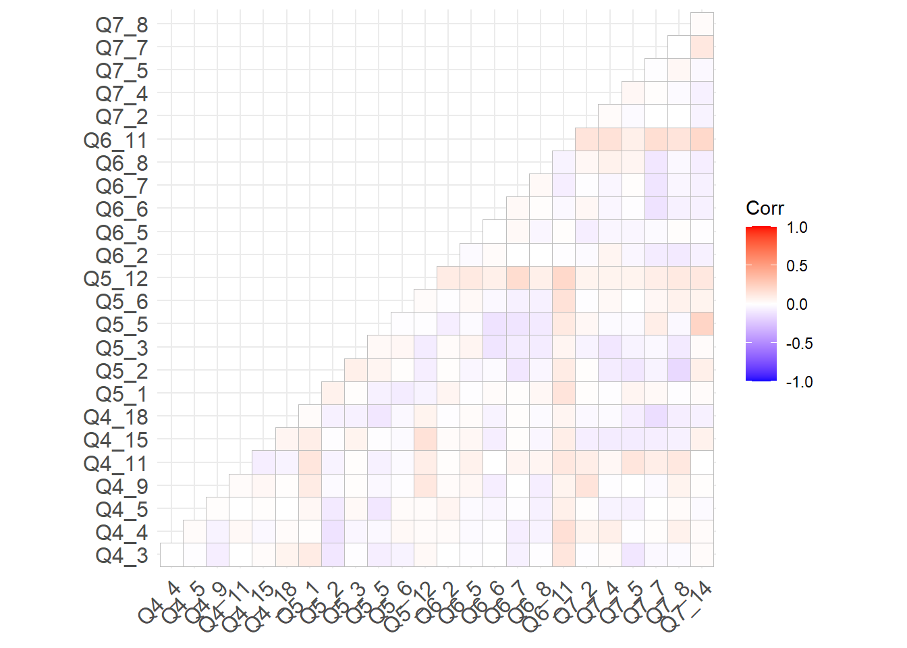
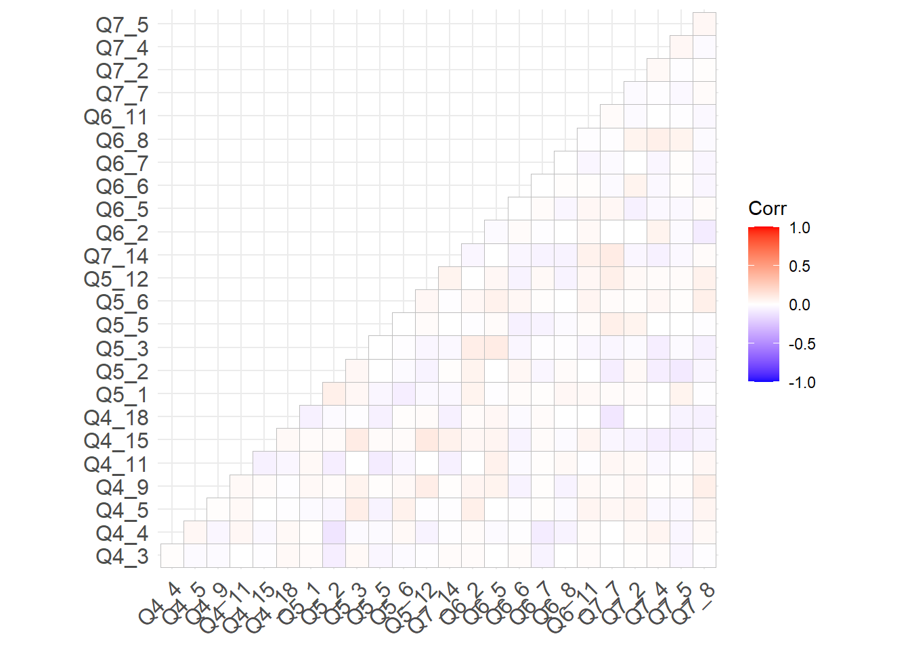

Pilot Study: Confirmatory Factor Analysis
R. Noah Padgett
2020-11-16
Last updated: 2021-02-18
Checks: 6 1
Knit directory: pools-projects/
This reproducible R Markdown analysis was created with workflowr (version 1.6.2). The Checks tab describes the reproducibility checks that were applied when the results were created. The Past versions tab lists the development history.
The R Markdown is untracked by Git. To know which version of the R Markdown file created these results, you’ll want to first commit it to the Git repo. If you’re still working on the analysis, you can ignore this warning. When you’re finished, you can run wflow_publish to commit the R Markdown file and build the HTML.
Great job! The global environment was empty. Objects defined in the global environment can affect the analysis in your R Markdown file in unknown ways. For reproduciblity it’s best to always run the code in an empty environment.
The command set.seed(20201007) was run prior to running the code in the R Markdown file. Setting a seed ensures that any results that rely on randomness, e.g. subsampling or permutations, are reproducible.
Great job! Recording the operating system, R version, and package versions is critical for reproducibility.
Nice! There were no cached chunks for this analysis, so you can be confident that you successfully produced the results during this run.
Great job! Using relative paths to the files within your workflowr project makes it easier to run your code on other machines.
Great! You are using Git for version control. Tracking code development and connecting the code version to the results is critical for reproducibility.
The results in this page were generated with repository version ea0a6a6. See the Past versions tab to see a history of the changes made to the R Markdown and HTML files.
Note that you need to be careful to ensure that all relevant files for the analysis have been committed to Git prior to generating the results (you can use wflow_publish or wflow_git_commit). workflowr only checks the R Markdown file, but you know if there are other scripts or data files that it depends on. Below is the status of the Git repository when the results were generated:
Ignored files:
Ignored: .Rhistory
Ignored: .Rproj.user/
Untracked files:
Untracked: analysis/development-study-CFA-invariance-test.Rmd
Untracked: analysis/development-study-CFA.Rmd
Untracked: analysis/development-study-EFA.Rmd
Untracked: analysis/development-study-data-management.Rmd
Untracked: analysis/figure/
Untracked: analysis/study-1-power-calculation.Rmd
Untracked: code/laplace_functions.R
Untracked: code/pdf2png.R
Untracked: code/utility_functions.R
Untracked: data/efa_results_2021_01_06.csv
Untracked: data/fit-test.RData
Untracked: data/savedlocalfit.RData
Untracked: diagrams/
Untracked: item-review-2/expert-review-2-response1.pdf
Untracked: item-review-2/expert-review-2-response2.pdf
Untracked: item-review-2/expert-review-2-response3.pdf
Untracked: item-review-2/pilot-data-item-review.xlsx
Untracked: manuscript/
Untracked: output/cfa-final-parameterEstimates.csv
Untracked: output/cfa_results.csv
Untracked: output/corr-plot.pdf
Untracked: output/corr-residuals.pdf
Unstaged changes:
Modified: .Rprofile
Deleted: .gitattributes
Modified: .gitignore
Modified: analysis/index.Rmd
Deleted: analysis/pilot-study-CFA.Rmd
Deleted: analysis/pilot-study-EFA.Rmd
Deleted: analysis/pilot-study-data-management.Rmd
Deleted: analysis/pilot-study-power-calculation.Rmd
Modified: code/load_packages.R
Modified: data/data-2020-11-16/pools_data_split1_2020_11_16.txt
Modified: data/data-2020-11-16/pools_data_split2_2020_11_16.txt
Modified: item-review-1/response8_nov6.pdf
Modified: item-review-2/Overview of Expert Review v2.0 Results.docx
Note that any generated files, e.g. HTML, png, CSS, etc., are not included in this status report because it is ok for generated content to have uncommitted changes.
There are no past versions. Publish this analysis with wflow_publish() to start tracking its development.
Data
source("code/load_packages.R")-- Attaching packages --------------------------------------- tidyverse 1.3.0 --v ggplot2 3.3.3 v purrr 0.3.4
v tibble 3.0.5 v dplyr 1.0.3
v tidyr 1.1.2 v stringr 1.4.0
v readr 1.4.0 v forcats 0.5.0-- Conflicts ------------------------------------------ tidyverse_conflicts() --
x dplyr::filter() masks stats::filter()
x dplyr::lag() masks stats::lag()
Attaching package: 'data.table'The following objects are masked from 'package:dplyr':
between, first, lastThe following object is masked from 'package:purrr':
transposeThis is lavaan 0.6-7lavaan is BETA software! Please report any bugs. ###############################################################################This is semTools 0.5-4All users of R (or SEM) are invited to submit functions or ideas for functions.###############################################################################
Attaching package: 'semTools'The following object is masked from 'package:readr':
clipboardThis is MIIVsem 0.5.5MIIVsem is BETA software! Please report any bugs. #################################################################This is simsem 0.5-15simsem is BETA software! Please report any bugs.simsem was first developed at the University of Kansas Center forResearch Methods and Data Analysis, under NSF Grant 1053160.#################################################################
Attaching package: 'simsem'The following object is masked from 'package:lavaan':
inspectLoading required package: multilevelLoading required package: nlme
Attaching package: 'nlme'The following object is masked from 'package:dplyr':
collapseLoading required package: MASS
Attaching package: 'MASS'The following object is masked from 'package:patchwork':
areaThe following object is masked from 'package:dplyr':
select
Attaching package: 'psychometric'The following object is masked from 'package:ggplot2':
alpha
Attaching package: 'psych'The following object is masked from 'package:psychometric':
alphaThe following object is masked from 'package:simsem':
simThe following object is masked from 'package:semTools':
skewThe following object is masked from 'package:lavaan':
cor2covThe following objects are masked from 'package:ggplot2':
%+%, alphaLoading required package: lattice
Attaching package: 'nFactors'The following object is masked from 'package:lattice':
parallel
Attaching package: 'kableExtra'The following object is masked from 'package:dplyr':
group_rowsoptions(digits=3, max.print = 10000)
mydata <- read.table("data/data-2020-11-16/pools_data_split2_2020_11_16.txt", sep="\t", header=T)
# transform responses to (-2, 2) scale
mydata[, 7:63] <- apply(mydata[,7:63], 2, function(x){x-3})Data Summary
use.var <- c(paste0("Q4_",c(1:5,8:11, 15:18)), #13
paste0("Q5_",c(1:6, 8, 12)), #8-> 14- 21
paste0("Q6_",c(1:8, 11)), #9 -> 22-30
paste0("Q7_",c(2, 4:5, 7:8, 12:14))) #31-38
psych::describe(
mydata[, use.var]
) vars n mean sd median trimmed mad min max range skew kurtosis se
Q4_1 1 312 -0.62 0.85 -1.0 -0.63 1.48 -2 2 4 0.28 0.06 0.05
Q4_2 2 312 -0.80 0.78 -1.0 -0.82 0.00 -2 2 4 0.64 1.07 0.04
Q4_3 3 312 -0.54 0.85 -1.0 -0.54 1.48 -2 2 4 0.35 0.47 0.05
Q4_4 4 312 -0.47 0.85 0.0 -0.46 1.48 -2 2 4 -0.01 0.12 0.05
Q4_5 5 312 -0.75 0.87 -1.0 -0.81 1.48 -2 2 4 0.61 0.32 0.05
Q4_8 6 312 -0.81 0.85 -1.0 -0.86 1.48 -2 2 4 0.50 0.16 0.05
Q4_9 7 312 -0.61 0.97 -1.0 -0.66 1.48 -2 2 4 0.45 -0.29 0.05
Q4_10 8 312 -0.46 0.80 0.0 -0.41 0.00 -2 2 4 -0.19 0.30 0.05
Q4_11 9 312 -0.52 0.95 -1.0 -0.56 1.48 -2 2 4 0.26 -0.26 0.05
Q4_15 10 312 -0.71 0.88 -1.0 -0.75 1.48 -2 2 4 0.34 -0.32 0.05
Q4_16 11 312 -0.67 0.93 -1.0 -0.72 1.48 -2 2 4 0.23 -0.50 0.05
Q4_17 12 312 -0.90 0.93 -1.0 -0.99 1.48 -2 2 4 0.53 -0.47 0.05
Q4_18 13 312 -0.72 0.79 -1.0 -0.74 0.00 -2 2 4 0.49 0.33 0.04
Q5_1 14 312 -0.47 0.95 -1.0 -0.49 1.48 -2 2 4 0.19 -0.49 0.05
Q5_2 15 312 -0.04 1.01 0.0 0.01 1.48 -2 2 4 -0.20 -0.49 0.06
Q5_3 16 312 -0.41 1.04 0.0 -0.43 1.48 -2 2 4 0.26 -0.52 0.06
Q5_4 17 312 0.46 1.10 1.0 0.55 0.00 -2 2 4 -0.80 -0.15 0.06
Q5_5 18 312 0.45 1.06 1.0 0.52 0.00 -2 2 4 -0.78 -0.16 0.06
Q5_6 19 312 -0.15 0.92 0.0 -0.14 1.48 -2 2 4 0.03 -0.07 0.05
Q5_8 20 312 -0.16 1.07 0.0 -0.13 1.48 -2 2 4 -0.09 -0.66 0.06
Q5_12 21 312 -0.20 1.01 0.0 -0.18 1.48 -2 2 4 -0.10 -0.29 0.06
Q6_1 22 312 -1.32 0.86 -1.5 -1.48 0.74 -2 2 4 1.52 2.55 0.05
Q6_2 23 312 -0.96 0.91 -1.0 -1.07 0.00 -2 2 4 0.98 0.92 0.05
Q6_3 24 312 -1.01 0.92 -1.0 -1.13 1.48 -2 2 4 1.03 1.03 0.05
Q6_4 25 312 -0.89 0.94 -1.0 -0.99 1.48 -2 2 4 0.84 0.64 0.05
Q6_5 26 312 -0.61 1.10 -1.0 -0.69 1.48 -2 2 4 0.57 -0.45 0.06
Q6_6 27 312 -1.18 0.79 -1.0 -1.29 0.00 -2 2 4 1.08 1.68 0.04
Q6_7 28 312 -0.89 0.88 -1.0 -0.95 1.48 -2 2 4 0.61 0.19 0.05
Q6_8 29 312 -0.85 0.83 -1.0 -0.90 0.00 -2 2 4 0.70 0.77 0.05
Q6_11 30 312 -0.31 0.98 0.0 -0.30 1.48 -2 2 4 -0.11 -0.29 0.06
Q7_2 31 312 -0.35 0.89 0.0 -0.33 0.00 -2 2 4 -0.35 -0.09 0.05
Q7_4 32 312 -0.21 0.94 0.0 -0.18 1.48 -2 2 4 -0.07 -0.15 0.05
Q7_5 33 312 -0.21 0.94 0.0 -0.19 0.00 -2 2 4 -0.14 0.12 0.05
Q7_7 34 312 0.57 1.07 1.0 0.66 0.00 -2 2 4 -0.86 0.08 0.06
Q7_8 35 312 -0.19 0.94 0.0 -0.16 0.00 -2 2 4 -0.07 0.03 0.05
Q7_12 36 312 0.38 1.07 1.0 0.44 1.48 -2 2 4 -0.55 -0.17 0.06
Q7_13 37 312 0.49 1.11 1.0 0.56 1.48 -2 2 4 -0.50 -0.42 0.06
Q7_14 38 312 0.56 1.04 1.0 0.64 1.48 -2 2 4 -0.69 0.00 0.06CFA
The hypothesized four-factor solution is shown below.
The above model can be convert to code using the below model.
mod1 <- "
EL =~ Q4_1 + Q4_2 + Q4_3 + Q4_4 + Q4_5 + Q4_8 + Q4_9 + Q4_10 + Q4_11 + Q4_15 + Q4_16 + Q4_17 + Q4_18
SC =~ Q5_1 + Q5_2 + Q5_3 + Q5_4 + Q5_5 + Q5_6 + Q5_8 + Q5_12
IN =~ Q6_1 + Q6_2 + Q6_3 + Q6_4 + Q6_5 + Q6_6 + Q6_7 + Q6_8 + Q6_11
EN =~ Q7_2 + Q7_4 + Q7_5 + Q7_7 + Q7_8 + Q7_12 + Q7_13 + Q7_14
EL ~~ EL + SC + IN + EN
SC ~~ SC + IN + EN
IN ~~ IN + EN
EN ~~ EN
"
mod1.2 <- "
EL =~ y1 + y2 + y3 + y4 + y5 + y6 + y7 + y8 + y9 + y10 + y11 + y12 + y13
SC =~ y14 + y15 + y16 + y17 + y18 + y19 + y20 + y21
IN =~ y22 + y23 + y24 + y25 + y26 + y27 + y28 + y29 + y30
EN =~ y31 + y32 + y33 + y34 + y35 + y36 + y37 + y38
EL ~~ EL + SC + IN + EN
SC ~~ SC + IN + EN
IN ~~ IN + EN
EN ~~ EN
"Maximum Likelihood
fit1 <- lavaan::sem(mod1, data=mydata, estimator="MLM")
summary(fit1, standardized=T, fit.measures=T)lavaan 0.6-7 ended normally after 62 iterations
Estimator ML
Optimization method NLMINB
Number of free parameters 82
Number of observations 312
Model Test User Model:
Standard Robust
Test Statistic 1999.775 1448.633
Degrees of freedom 659 659
P-value (Chi-square) 0.000 0.000
Scaling correction factor 1.380
Satorra-Bentler correction
Model Test Baseline Model:
Test statistic 8479.132 5614.687
Degrees of freedom 703 703
P-value 0.000 0.000
Scaling correction factor 1.510
User Model versus Baseline Model:
Comparative Fit Index (CFI) 0.828 0.839
Tucker-Lewis Index (TLI) 0.816 0.828
Robust Comparative Fit Index (CFI) 0.853
Robust Tucker-Lewis Index (TLI) 0.843
Loglikelihood and Information Criteria:
Loglikelihood user model (H0) -12758.826 -12758.826
Loglikelihood unrestricted model (H1) -11758.939 -11758.939
Akaike (AIC) 25681.652 25681.652
Bayesian (BIC) 25988.578 25988.578
Sample-size adjusted Bayesian (BIC) 25728.502 25728.502
Root Mean Square Error of Approximation:
RMSEA 0.081 0.062
90 Percent confidence interval - lower 0.077 0.058
90 Percent confidence interval - upper 0.085 0.066
P-value RMSEA <= 0.05 0.000 0.000
Robust RMSEA 0.073
90 Percent confidence interval - lower 0.068
90 Percent confidence interval - upper 0.078
Standardized Root Mean Square Residual:
SRMR 0.080 0.080
Parameter Estimates:
Standard errors Robust.sem
Information Expected
Information saturated (h1) model Structured
Latent Variables:
Estimate Std.Err z-value P(>|z|) Std.lv Std.all
EL =~
Q4_1 1.000 0.663 0.779
Q4_2 0.898 0.058 15.367 0.000 0.595 0.761
Q4_3 1.027 0.051 20.126 0.000 0.680 0.804
Q4_4 1.036 0.054 19.336 0.000 0.686 0.810
Q4_5 0.986 0.070 14.139 0.000 0.653 0.751
Q4_8 0.927 0.065 14.179 0.000 0.614 0.720
Q4_9 0.969 0.072 13.461 0.000 0.642 0.666
Q4_10 0.928 0.059 15.844 0.000 0.615 0.769
Q4_11 1.074 0.063 17.014 0.000 0.712 0.749
Q4_15 0.958 0.061 15.583 0.000 0.635 0.719
Q4_16 0.937 0.076 12.297 0.000 0.621 0.668
Q4_17 0.837 0.081 10.341 0.000 0.555 0.597
Q4_18 0.972 0.056 17.259 0.000 0.644 0.816
SC =~
Q5_1 1.000 0.547 0.575
Q5_2 1.144 0.112 10.236 0.000 0.625 0.619
Q5_3 1.250 0.122 10.266 0.000 0.683 0.657
Q5_4 1.593 0.164 9.693 0.000 0.871 0.792
Q5_5 1.548 0.151 10.220 0.000 0.846 0.800
Q5_6 1.311 0.121 10.836 0.000 0.716 0.779
Q5_8 1.527 0.147 10.411 0.000 0.835 0.780
Q5_12 1.111 0.116 9.556 0.000 0.607 0.600
IN =~
Q6_1 1.000 0.586 0.686
Q6_2 1.218 0.090 13.533 0.000 0.714 0.786
Q6_3 1.258 0.103 12.216 0.000 0.738 0.799
Q6_4 1.237 0.106 11.622 0.000 0.725 0.776
Q6_5 0.855 0.119 7.190 0.000 0.501 0.456
Q6_6 1.051 0.103 10.186 0.000 0.616 0.784
Q6_7 1.227 0.112 10.925 0.000 0.719 0.822
Q6_8 1.165 0.106 10.988 0.000 0.683 0.820
Q6_11 1.030 0.121 8.506 0.000 0.604 0.619
EN =~
Q7_2 1.000 0.652 0.736
Q7_4 0.927 0.069 13.499 0.000 0.605 0.642
Q7_5 1.078 0.077 13.945 0.000 0.703 0.747
Q7_7 1.150 0.105 10.923 0.000 0.750 0.704
Q7_8 1.106 0.081 13.616 0.000 0.721 0.771
Q7_12 1.085 0.106 10.239 0.000 0.708 0.665
Q7_13 0.637 0.125 5.075 0.000 0.415 0.376
Q7_14 1.020 0.108 9.463 0.000 0.666 0.639
Covariances:
Estimate Std.Err z-value P(>|z|) Std.lv Std.all
EL ~~
SC 0.205 0.040 5.123 0.000 0.566 0.566
IN 0.268 0.043 6.216 0.000 0.689 0.689
EN 0.306 0.045 6.788 0.000 0.707 0.707
SC ~~
IN 0.169 0.034 5.002 0.000 0.528 0.528
EN 0.275 0.043 6.357 0.000 0.771 0.771
IN ~~
EN 0.257 0.042 6.112 0.000 0.671 0.671
Variances:
Estimate Std.Err z-value P(>|z|) Std.lv Std.all
EL 0.439 0.060 7.309 0.000 1.000 1.000
SC 0.299 0.057 5.252 0.000 1.000 1.000
IN 0.344 0.066 5.207 0.000 1.000 1.000
EN 0.426 0.062 6.838 0.000 1.000 1.000
.Q4_1 0.284 0.032 8.766 0.000 0.284 0.393
.Q4_2 0.258 0.024 10.671 0.000 0.258 0.421
.Q4_3 0.254 0.028 8.991 0.000 0.254 0.354
.Q4_4 0.246 0.023 10.568 0.000 0.246 0.343
.Q4_5 0.330 0.042 7.928 0.000 0.330 0.436
.Q4_8 0.351 0.049 7.182 0.000 0.351 0.482
.Q4_9 0.519 0.047 11.144 0.000 0.519 0.557
.Q4_10 0.261 0.025 10.523 0.000 0.261 0.409
.Q4_11 0.397 0.039 10.268 0.000 0.397 0.439
.Q4_15 0.376 0.036 10.382 0.000 0.376 0.482
.Q4_16 0.478 0.041 11.732 0.000 0.478 0.553
.Q4_17 0.555 0.051 10.956 0.000 0.555 0.643
.Q4_18 0.208 0.021 9.942 0.000 0.208 0.334
.Q5_1 0.604 0.049 12.256 0.000 0.604 0.669
.Q5_2 0.630 0.058 10.789 0.000 0.630 0.617
.Q5_3 0.614 0.054 11.337 0.000 0.614 0.568
.Q5_4 0.451 0.047 9.586 0.000 0.451 0.373
.Q5_5 0.403 0.052 7.747 0.000 0.403 0.360
.Q5_6 0.333 0.035 9.624 0.000 0.333 0.393
.Q5_8 0.448 0.061 7.364 0.000 0.448 0.392
.Q5_12 0.654 0.067 9.699 0.000 0.654 0.640
.Q6_1 0.387 0.064 6.062 0.000 0.387 0.529
.Q6_2 0.315 0.040 7.808 0.000 0.315 0.382
.Q6_3 0.308 0.040 7.624 0.000 0.308 0.362
.Q6_4 0.347 0.047 7.445 0.000 0.347 0.397
.Q6_5 0.955 0.086 11.116 0.000 0.955 0.792
.Q6_6 0.238 0.027 8.758 0.000 0.238 0.385
.Q6_7 0.249 0.027 9.142 0.000 0.249 0.325
.Q6_8 0.228 0.029 7.853 0.000 0.228 0.328
.Q6_11 0.587 0.053 11.066 0.000 0.587 0.617
.Q7_2 0.360 0.039 9.197 0.000 0.360 0.459
.Q7_4 0.521 0.051 10.141 0.000 0.521 0.587
.Q7_5 0.392 0.047 8.255 0.000 0.392 0.442
.Q7_7 0.574 0.054 10.600 0.000 0.574 0.505
.Q7_8 0.355 0.043 8.219 0.000 0.355 0.406
.Q7_12 0.633 0.067 9.385 0.000 0.633 0.558
.Q7_13 1.045 0.082 12.716 0.000 1.045 0.858
.Q7_14 0.643 0.060 10.756 0.000 0.643 0.592Local Fit Assessment
# Residual Analysis
out <- residuals(fit1, type="cor.bollen")
kable(out[[2]], format="html", digit=3)%>%
kable_styling(full_width = T)%>%
scroll_box(width="100%", height="800px")| Q4_1 | Q4_2 | Q4_3 | Q4_4 | Q4_5 | Q4_8 | Q4_9 | Q4_10 | Q4_11 | Q4_15 | Q4_16 | Q4_17 | Q4_18 | Q5_1 | Q5_2 | Q5_3 | Q5_4 | Q5_5 | Q5_6 | Q5_8 | Q5_12 | Q6_1 | Q6_2 | Q6_3 | Q6_4 | Q6_5 | Q6_6 | Q6_7 | Q6_8 | Q6_11 | Q7_2 | Q7_4 | Q7_5 | Q7_7 | Q7_8 | Q7_12 | Q7_13 | Q7_14 | |
|---|---|---|---|---|---|---|---|---|---|---|---|---|---|---|---|---|---|---|---|---|---|---|---|---|---|---|---|---|---|---|---|---|---|---|---|---|---|---|
| Q4_1 | 0.000 | 0.066 | 0.094 | 0.041 | -0.075 | -0.089 | -0.069 | 0.030 | 0.000 | -0.035 | 0.000 | -0.033 | -0.004 | 0.149 | 0.007 | 0.049 | -0.066 | -0.042 | 0.029 | -0.049 | 0.076 | 0.011 | -0.034 | -0.067 | -0.082 | 0.045 | -0.019 | -0.012 | -0.044 | 0.154 | -0.014 | 0.069 | -0.057 | -0.054 | 0.007 | -0.066 | 0.050 | -0.047 |
| Q4_2 | 0.066 | 0.000 | 0.064 | 0.006 | 0.013 | 0.013 | -0.074 | -0.052 | -0.023 | -0.013 | -0.069 | -0.061 | 0.060 | 0.149 | -0.045 | 0.020 | -0.162 | -0.153 | -0.005 | -0.104 | 0.025 | -0.022 | -0.023 | -0.062 | -0.064 | 0.041 | 0.001 | 0.005 | -0.014 | 0.108 | -0.056 | -0.001 | -0.023 | -0.131 | -0.045 | -0.081 | 0.009 | -0.077 |
| Q4_3 | 0.094 | 0.064 | 0.000 | 0.083 | -0.050 | -0.064 | -0.088 | 0.000 | -0.033 | -0.024 | 0.016 | -0.076 | 0.002 | 0.184 | -0.038 | 0.040 | -0.134 | -0.104 | -0.034 | -0.069 | 0.088 | -0.010 | -0.063 | -0.086 | -0.061 | 0.021 | 0.021 | -0.033 | -0.028 | 0.166 | -0.003 | 0.026 | -0.090 | -0.078 | -0.042 | -0.005 | 0.045 | -0.023 |
| Q4_4 | 0.041 | 0.006 | 0.083 | 0.000 | -0.007 | -0.005 | -0.049 | 0.038 | 0.011 | -0.067 | -0.065 | -0.060 | -0.021 | 0.100 | -0.041 | 0.023 | -0.097 | -0.054 | 0.054 | -0.011 | 0.085 | -0.100 | -0.041 | -0.073 | -0.053 | 0.016 | 0.020 | -0.029 | -0.055 | 0.210 | 0.079 | 0.104 | 0.008 | -0.029 | 0.055 | -0.050 | -0.015 | -0.019 |
| Q4_5 | -0.075 | 0.013 | -0.050 | -0.007 | 0.000 | 0.123 | 0.041 | 0.005 | 0.024 | 0.008 | -0.048 | 0.038 | -0.002 | 0.149 | 0.004 | 0.112 | -0.106 | -0.099 | 0.068 | 0.055 | 0.099 | -0.029 | 0.017 | -0.044 | -0.080 | 0.032 | 0.017 | 0.052 | -0.030 | 0.148 | 0.059 | -0.010 | -0.019 | -0.023 | 0.037 | -0.122 | -0.153 | -0.036 |
| Q4_8 | -0.089 | 0.013 | -0.064 | -0.005 | 0.123 | 0.000 | 0.102 | -0.010 | -0.012 | 0.031 | -0.021 | -0.012 | -0.016 | 0.151 | -0.001 | 0.085 | -0.099 | -0.046 | 0.049 | 0.048 | 0.114 | -0.013 | -0.037 | -0.029 | 0.008 | 0.069 | 0.068 | 0.084 | 0.031 | 0.101 | 0.068 | 0.006 | 0.041 | -0.086 | 0.093 | -0.063 | -0.054 | -0.042 |
| Q4_9 | -0.069 | -0.074 | -0.088 | -0.049 | 0.041 | 0.102 | 0.000 | 0.013 | 0.062 | 0.059 | -0.048 | 0.022 | 0.030 | 0.208 | 0.077 | 0.098 | -0.042 | -0.014 | 0.052 | 0.015 | 0.208 | 0.033 | 0.010 | -0.026 | -0.009 | 0.096 | -0.003 | 0.075 | -0.033 | 0.136 | 0.191 | 0.041 | 0.056 | -0.019 | 0.091 | 0.118 | 0.056 | 0.006 |
| Q4_10 | 0.030 | -0.052 | 0.000 | 0.038 | 0.005 | -0.010 | 0.013 | 0.000 | -0.009 | -0.025 | 0.028 | -0.029 | -0.036 | 0.109 | 0.037 | 0.018 | -0.047 | -0.023 | 0.034 | 0.011 | 0.203 | -0.020 | -0.013 | -0.041 | -0.070 | 0.024 | 0.028 | 0.069 | -0.025 | 0.233 | 0.096 | 0.061 | 0.025 | 0.024 | 0.063 | 0.017 | 0.001 | 0.085 |
| Q4_11 | 0.000 | -0.023 | -0.033 | 0.011 | 0.024 | -0.012 | 0.062 | -0.009 | 0.000 | -0.057 | -0.017 | 0.038 | -0.034 | 0.241 | 0.049 | 0.097 | -0.109 | -0.059 | 0.035 | 0.002 | 0.180 | 0.032 | -0.011 | -0.025 | -0.080 | 0.132 | 0.064 | 0.120 | 0.079 | 0.193 | 0.145 | 0.086 | 0.181 | 0.081 | 0.139 | 0.064 | 0.031 | -0.007 |
| Q4_15 | -0.035 | -0.013 | -0.024 | -0.067 | 0.008 | 0.031 | 0.059 | -0.025 | -0.057 | 0.000 | 0.154 | 0.044 | 0.042 | 0.189 | 0.071 | 0.129 | -0.045 | -0.018 | 0.022 | 0.017 | 0.219 | 0.036 | -0.010 | -0.032 | 0.008 | 0.085 | -0.020 | 0.068 | -0.023 | 0.153 | -0.036 | -0.050 | -0.049 | -0.096 | -0.054 | -0.004 | -0.025 | 0.053 |
| Q4_16 | 0.000 | -0.069 | 0.016 | -0.065 | -0.048 | -0.021 | -0.048 | 0.028 | -0.017 | 0.154 | 0.000 | 0.110 | 0.016 | 0.158 | 0.064 | 0.118 | -0.013 | 0.011 | 0.049 | 0.035 | 0.259 | 0.077 | -0.038 | -0.070 | -0.012 | 0.089 | -0.014 | 0.033 | -0.026 | 0.176 | -0.010 | 0.027 | -0.029 | -0.032 | 0.039 | 0.005 | 0.006 | -0.012 |
| Q4_17 | -0.033 | -0.061 | -0.076 | -0.060 | 0.038 | -0.012 | 0.022 | -0.029 | 0.038 | 0.044 | 0.110 | 0.000 | 0.067 | 0.014 | -0.003 | -0.025 | -0.056 | -0.073 | -0.032 | -0.039 | 0.131 | -0.001 | -0.021 | 0.004 | -0.003 | 0.055 | 0.092 | 0.098 | 0.020 | 0.128 | 0.085 | 0.009 | 0.031 | -0.016 | 0.027 | -0.052 | -0.046 | -0.051 |
| Q4_18 | -0.004 | 0.060 | 0.002 | -0.021 | -0.002 | -0.016 | 0.030 | -0.036 | -0.034 | 0.042 | 0.016 | 0.067 | 0.000 | 0.131 | 0.030 | 0.017 | -0.156 | -0.111 | 0.011 | -0.058 | 0.140 | -0.036 | -0.048 | -0.082 | -0.090 | 0.074 | 0.002 | 0.069 | -0.004 | 0.113 | 0.012 | 0.020 | -0.032 | -0.165 | -0.067 | -0.085 | -0.071 | -0.089 |
| Q5_1 | 0.149 | 0.149 | 0.184 | 0.100 | 0.149 | 0.151 | 0.208 | 0.109 | 0.241 | 0.189 | 0.158 | 0.014 | 0.131 | 0.000 | 0.164 | 0.095 | -0.073 | -0.091 | -0.046 | -0.043 | 0.029 | 0.102 | 0.105 | 0.104 | 0.129 | 0.073 | 0.144 | 0.146 | 0.143 | 0.258 | 0.111 | 0.081 | 0.150 | 0.065 | 0.057 | 0.112 | 0.041 | 0.054 |
| Q5_2 | 0.007 | -0.045 | -0.038 | -0.041 | 0.004 | -0.001 | 0.077 | 0.037 | 0.049 | 0.071 | 0.064 | -0.003 | 0.030 | 0.164 | 0.000 | 0.136 | -0.005 | -0.012 | -0.051 | -0.077 | -0.012 | -0.010 | 0.049 | 0.007 | 0.104 | 0.042 | 0.085 | 0.019 | 0.048 | 0.207 | 0.084 | -0.016 | -0.025 | -0.037 | -0.115 | 0.041 | 0.000 | 0.092 |
| Q5_3 | 0.049 | 0.020 | 0.040 | 0.023 | 0.112 | 0.085 | 0.098 | 0.018 | 0.097 | 0.129 | 0.118 | -0.025 | 0.017 | 0.095 | 0.136 | 0.000 | -0.032 | -0.053 | 0.017 | -0.008 | -0.037 | 0.077 | 0.052 | -0.030 | 0.080 | 0.124 | -0.014 | 0.029 | -0.009 | 0.147 | 0.011 | -0.041 | 0.014 | -0.035 | -0.053 | -0.049 | -0.088 | 0.020 |
| Q5_4 | -0.066 | -0.162 | -0.134 | -0.097 | -0.106 | -0.099 | -0.042 | -0.047 | -0.109 | -0.045 | -0.013 | -0.056 | -0.156 | -0.073 | -0.005 | -0.032 | 0.000 | 0.164 | -0.041 | 0.002 | -0.083 | -0.141 | -0.106 | -0.136 | -0.043 | 0.053 | -0.090 | -0.054 | -0.140 | 0.155 | -0.060 | -0.040 | -0.079 | 0.038 | -0.120 | 0.012 | -0.012 | 0.094 |
| Q5_5 | -0.042 | -0.153 | -0.104 | -0.054 | -0.099 | -0.046 | -0.014 | -0.023 | -0.059 | -0.018 | 0.011 | -0.073 | -0.111 | -0.091 | -0.012 | -0.053 | 0.164 | 0.000 | -0.009 | -0.015 | -0.080 | -0.116 | -0.116 | -0.148 | -0.050 | 0.005 | -0.105 | -0.094 | -0.094 | 0.145 | -0.007 | -0.057 | -0.070 | -0.010 | -0.109 | 0.041 | 0.022 | 0.126 |
| Q5_6 | 0.029 | -0.005 | -0.034 | 0.054 | 0.068 | 0.049 | 0.052 | 0.034 | 0.035 | 0.022 | 0.049 | -0.032 | 0.011 | -0.046 | -0.051 | 0.017 | -0.041 | -0.009 | 0.000 | 0.078 | 0.007 | -0.066 | -0.020 | -0.051 | 0.009 | 0.080 | 0.039 | 0.017 | -0.023 | 0.225 | 0.004 | 0.044 | 0.010 | -0.012 | 0.052 | -0.072 | -0.111 | 0.016 |
| Q5_8 | -0.049 | -0.104 | -0.069 | -0.011 | 0.055 | 0.048 | 0.015 | 0.011 | 0.002 | 0.017 | 0.035 | -0.039 | -0.058 | -0.043 | -0.077 | -0.008 | 0.002 | -0.015 | 0.078 | 0.000 | 0.048 | -0.064 | -0.030 | -0.113 | 0.024 | 0.033 | 0.005 | 0.026 | -0.034 | 0.189 | -0.021 | -0.066 | -0.024 | -0.019 | 0.020 | -0.074 | -0.123 | 0.034 |
| Q5_12 | 0.076 | 0.025 | 0.088 | 0.085 | 0.099 | 0.114 | 0.208 | 0.203 | 0.180 | 0.219 | 0.259 | 0.131 | 0.140 | 0.029 | -0.012 | -0.037 | -0.083 | -0.080 | 0.007 | 0.048 | 0.000 | 0.070 | 0.127 | 0.068 | 0.102 | 0.184 | 0.170 | 0.286 | 0.152 | 0.298 | 0.123 | 0.113 | 0.122 | 0.093 | 0.144 | 0.089 | 0.059 | 0.128 |
| Q6_1 | 0.011 | -0.022 | -0.010 | -0.100 | -0.029 | -0.013 | 0.033 | -0.020 | 0.032 | 0.036 | 0.077 | -0.001 | -0.036 | 0.102 | -0.010 | 0.077 | -0.141 | -0.116 | -0.066 | -0.064 | 0.070 | 0.000 | 0.132 | 0.071 | 0.037 | -0.005 | -0.033 | -0.040 | -0.038 | -0.125 | -0.022 | -0.082 | -0.103 | -0.216 | -0.129 | -0.076 | 0.066 | -0.150 |
| Q6_2 | -0.034 | -0.023 | -0.063 | -0.041 | 0.017 | -0.037 | 0.010 | -0.013 | -0.011 | -0.010 | -0.038 | -0.021 | -0.048 | 0.105 | 0.049 | 0.052 | -0.106 | -0.116 | -0.020 | -0.030 | 0.127 | 0.132 | 0.000 | 0.053 | 0.117 | -0.052 | -0.066 | -0.084 | -0.001 | -0.051 | -0.006 | 0.062 | -0.030 | -0.126 | -0.110 | -0.090 | -0.048 | -0.103 |
| Q6_3 | -0.067 | -0.062 | -0.086 | -0.073 | -0.044 | -0.029 | -0.026 | -0.041 | -0.025 | -0.032 | -0.070 | 0.004 | -0.082 | 0.104 | 0.007 | -0.030 | -0.136 | -0.148 | -0.051 | -0.113 | 0.068 | 0.071 | 0.053 | 0.000 | 0.031 | -0.030 | -0.009 | 0.011 | -0.029 | -0.052 | -0.006 | 0.001 | -0.037 | -0.139 | -0.073 | -0.106 | -0.057 | -0.082 |
| Q6_4 | -0.082 | -0.064 | -0.061 | -0.053 | -0.080 | 0.008 | -0.009 | -0.070 | -0.080 | 0.008 | -0.012 | -0.003 | -0.090 | 0.129 | 0.104 | 0.080 | -0.043 | -0.050 | 0.009 | 0.024 | 0.102 | 0.037 | 0.117 | 0.031 | 0.000 | -0.127 | -0.044 | -0.069 | 0.042 | -0.039 | 0.035 | 0.016 | -0.020 | -0.100 | -0.089 | -0.021 | 0.016 | -0.046 |
| Q6_5 | 0.045 | 0.041 | 0.021 | 0.016 | 0.032 | 0.069 | 0.096 | 0.024 | 0.132 | 0.085 | 0.089 | 0.055 | 0.074 | 0.073 | 0.042 | 0.124 | 0.053 | 0.005 | 0.080 | 0.033 | 0.184 | -0.005 | -0.052 | -0.030 | -0.127 | 0.000 | 0.044 | 0.086 | -0.023 | 0.070 | 0.009 | 0.030 | 0.042 | 0.017 | 0.072 | 0.042 | 0.072 | 0.019 |
| Q6_6 | -0.019 | 0.001 | 0.021 | 0.020 | 0.017 | 0.068 | -0.003 | 0.028 | 0.064 | -0.020 | -0.014 | 0.092 | 0.002 | 0.144 | 0.085 | -0.014 | -0.090 | -0.105 | 0.039 | 0.005 | 0.170 | -0.033 | -0.066 | -0.009 | -0.044 | 0.044 | 0.000 | 0.071 | 0.003 | 0.035 | 0.142 | 0.051 | 0.096 | -0.086 | 0.015 | -0.059 | -0.016 | -0.031 |
| Q6_7 | -0.012 | 0.005 | -0.033 | -0.029 | 0.052 | 0.084 | 0.075 | 0.069 | 0.120 | 0.068 | 0.033 | 0.098 | 0.069 | 0.146 | 0.019 | 0.029 | -0.054 | -0.094 | 0.017 | 0.026 | 0.286 | -0.040 | -0.084 | 0.011 | -0.069 | 0.086 | 0.071 | 0.000 | 0.024 | 0.002 | 0.104 | 0.060 | 0.123 | -0.071 | 0.043 | -0.010 | 0.014 | -0.024 |
| Q6_8 | -0.044 | -0.014 | -0.028 | -0.055 | -0.030 | 0.031 | -0.033 | -0.025 | 0.079 | -0.023 | -0.026 | 0.020 | -0.004 | 0.143 | 0.048 | -0.009 | -0.140 | -0.094 | -0.023 | -0.034 | 0.152 | -0.038 | -0.001 | -0.029 | 0.042 | -0.023 | 0.003 | 0.024 | 0.000 | -0.023 | 0.107 | 0.134 | 0.122 | -0.095 | 0.012 | -0.020 | 0.003 | -0.070 |
| Q6_11 | 0.154 | 0.108 | 0.166 | 0.210 | 0.148 | 0.101 | 0.136 | 0.233 | 0.193 | 0.153 | 0.176 | 0.128 | 0.113 | 0.258 | 0.207 | 0.147 | 0.155 | 0.145 | 0.225 | 0.189 | 0.298 | -0.125 | -0.051 | -0.052 | -0.039 | 0.070 | 0.035 | 0.002 | -0.023 | 0.000 | 0.250 | 0.243 | 0.189 | 0.217 | 0.217 | 0.199 | 0.076 | 0.241 |
| Q7_2 | -0.014 | -0.056 | -0.003 | 0.079 | 0.059 | 0.068 | 0.191 | 0.096 | 0.145 | -0.036 | -0.010 | 0.085 | 0.012 | 0.111 | 0.084 | 0.011 | -0.060 | -0.007 | 0.004 | -0.021 | 0.123 | -0.022 | -0.006 | -0.006 | 0.035 | 0.009 | 0.142 | 0.104 | 0.107 | 0.250 | 0.000 | 0.066 | 0.024 | -0.038 | 0.007 | -0.075 | -0.070 | -0.082 |
| Q7_4 | 0.069 | -0.001 | 0.026 | 0.104 | -0.010 | 0.006 | 0.041 | 0.061 | 0.086 | -0.050 | 0.027 | 0.009 | 0.020 | 0.081 | -0.016 | -0.041 | -0.040 | -0.057 | 0.044 | -0.066 | 0.113 | -0.082 | 0.062 | 0.001 | 0.016 | 0.030 | 0.051 | 0.060 | 0.134 | 0.243 | 0.066 | 0.000 | 0.083 | -0.021 | -0.006 | -0.105 | -0.146 | -0.082 |
| Q7_5 | -0.057 | -0.023 | -0.090 | 0.008 | -0.019 | 0.041 | 0.056 | 0.025 | 0.181 | -0.049 | -0.029 | 0.031 | -0.032 | 0.150 | -0.025 | 0.014 | -0.079 | -0.070 | 0.010 | -0.024 | 0.122 | -0.103 | -0.030 | -0.037 | -0.020 | 0.042 | 0.096 | 0.123 | 0.122 | 0.189 | 0.024 | 0.083 | 0.000 | -0.044 | 0.041 | -0.054 | -0.074 | -0.064 |
| Q7_7 | -0.054 | -0.131 | -0.078 | -0.029 | -0.023 | -0.086 | -0.019 | 0.024 | 0.081 | -0.096 | -0.032 | -0.016 | -0.165 | 0.065 | -0.037 | -0.035 | 0.038 | -0.010 | -0.012 | -0.019 | 0.093 | -0.216 | -0.126 | -0.139 | -0.100 | 0.017 | -0.086 | -0.071 | -0.095 | 0.217 | -0.038 | -0.021 | -0.044 | 0.000 | 0.065 | 0.090 | 0.072 | 0.032 |
| Q7_8 | 0.007 | -0.045 | -0.042 | 0.055 | 0.037 | 0.093 | 0.091 | 0.063 | 0.139 | -0.054 | 0.039 | 0.027 | -0.067 | 0.057 | -0.115 | -0.053 | -0.120 | -0.109 | 0.052 | 0.020 | 0.144 | -0.129 | -0.110 | -0.073 | -0.089 | 0.072 | 0.015 | 0.043 | 0.012 | 0.217 | 0.007 | -0.006 | 0.041 | 0.065 | 0.000 | -0.039 | -0.052 | -0.044 |
| Q7_12 | -0.066 | -0.081 | -0.005 | -0.050 | -0.122 | -0.063 | 0.118 | 0.017 | 0.064 | -0.004 | 0.005 | -0.052 | -0.085 | 0.112 | 0.041 | -0.049 | 0.012 | 0.041 | -0.072 | -0.074 | 0.089 | -0.076 | -0.090 | -0.106 | -0.021 | 0.042 | -0.059 | -0.010 | -0.020 | 0.199 | -0.075 | -0.105 | -0.054 | 0.090 | -0.039 | 0.000 | 0.285 | 0.203 |
| Q7_13 | 0.050 | 0.009 | 0.045 | -0.015 | -0.153 | -0.054 | 0.056 | 0.001 | 0.031 | -0.025 | 0.006 | -0.046 | -0.071 | 0.041 | 0.000 | -0.088 | -0.012 | 0.022 | -0.111 | -0.123 | 0.059 | 0.066 | -0.048 | -0.057 | 0.016 | 0.072 | -0.016 | 0.014 | 0.003 | 0.076 | -0.070 | -0.146 | -0.074 | 0.072 | -0.052 | 0.285 | 0.000 | 0.132 |
| Q7_14 | -0.047 | -0.077 | -0.023 | -0.019 | -0.036 | -0.042 | 0.006 | 0.085 | -0.007 | 0.053 | -0.012 | -0.051 | -0.089 | 0.054 | 0.092 | 0.020 | 0.094 | 0.126 | 0.016 | 0.034 | 0.128 | -0.150 | -0.103 | -0.082 | -0.046 | 0.019 | -0.031 | -0.024 | -0.070 | 0.241 | -0.082 | -0.082 | -0.064 | 0.032 | -0.044 | 0.203 | 0.132 | 0.000 |
ggcorrplot(out[[2]], type = "lower")
# modification indices
modindices(fit1, minimum.value = 10, sort = TRUE) lhs op rhs mi epc sepc.lv sepc.all sepc.nox
673 Q5_4 ~~ Q5_5 104.4 0.320 0.320 0.750 0.750
200 EN =~ Q6_11 87.8 0.979 0.639 0.655 0.655
901 Q7_12 ~~ Q7_13 59.2 0.374 0.374 0.460 0.460
133 SC =~ Q6_11 54.3 0.768 0.420 0.431 0.431
103 EL =~ Q6_11 47.5 0.698 0.462 0.474 0.474
902 Q7_12 ~~ Q7_14 47.0 0.272 0.272 0.426 0.426
785 Q6_2 ~~ Q6_4 38.0 0.135 0.135 0.407 0.407
191 EN =~ Q5_12 37.3 0.848 0.553 0.547 0.547
768 Q6_1 ~~ Q6_2 33.6 0.128 0.128 0.368 0.368
162 IN =~ Q5_12 31.4 0.574 0.336 0.333 0.333
498 Q4_15 ~~ Q4_16 31.1 0.142 0.142 0.334 0.334
87 EL =~ Q5_1 29.3 0.480 0.318 0.334 0.334
343 Q4_5 ~~ Q4_8 26.2 0.106 0.106 0.312 0.312
788 Q6_2 ~~ Q6_7 25.8 -0.097 -0.097 -0.348 -0.348
94 EL =~ Q5_12 25.3 0.466 0.309 0.306 0.306
179 EN =~ Q4_11 24.7 0.458 0.298 0.314 0.314
202 Q4_1 ~~ Q4_3 24.7 0.085 0.085 0.315 0.315
90 EL =~ Q5_4 24.2 -0.409 -0.271 -0.247 -0.247
184 EN =~ Q5_1 23.6 0.645 0.421 0.443 0.443
604 Q5_1 ~~ Q5_2 23.1 0.179 0.179 0.290 0.290
274 Q4_3 ~~ Q4_4 23.0 0.077 0.077 0.309 0.309
757 Q5_12 ~~ Q6_7 22.7 0.121 0.121 0.299 0.299
155 IN =~ Q5_1 21.8 0.457 0.268 0.282 0.282
714 Q5_6 ~~ Q5_8 19.4 0.120 0.120 0.311 0.311
628 Q5_2 ~~ Q5_3 19.2 0.167 0.167 0.268 0.268
492 Q4_11 ~~ Q7_5 19.0 0.107 0.107 0.272 0.272
813 Q6_4 ~~ Q6_5 18.6 -0.151 -0.151 -0.263 -0.263
192 EN =~ Q6_1 18.5 -0.370 -0.241 -0.282 -0.282
838 Q6_6 ~~ Q6_7 18.2 0.071 0.071 0.291 0.291
159 IN =~ Q5_5 17.6 -0.367 -0.215 -0.203 -0.203
374 Q4_5 ~~ Q7_13 17.0 -0.143 -0.143 -0.244 -0.244
775 Q6_1 ~~ Q6_11 17.0 -0.118 -0.118 -0.248 -0.248
166 IN =~ Q7_7 16.9 -0.492 -0.288 -0.271 -0.271
815 Q6_4 ~~ Q6_7 16.5 -0.081 -0.081 -0.276 -0.276
158 IN =~ Q5_4 15.8 -0.365 -0.214 -0.195 -0.195
205 Q4_1 ~~ Q4_8 15.3 -0.076 -0.076 -0.241 -0.241
194 EN =~ Q6_3 15.1 -0.312 -0.204 -0.220 -0.220
713 Q5_5 ~~ Q7_14 14.8 0.125 0.125 0.246 0.246
647 Q5_2 ~~ Q7_8 14.6 -0.114 -0.114 -0.240 -0.240
277 Q4_3 ~~ Q4_9 14.6 -0.085 -0.085 -0.235 -0.235
887 Q7_4 ~~ Q7_13 14.5 -0.167 -0.167 -0.227 -0.227
607 Q5_1 ~~ Q5_5 14.0 -0.120 -0.120 -0.244 -0.244
376 Q4_8 ~~ Q4_9 13.4 0.094 0.094 0.220 0.220
729 Q5_6 ~~ Q7_8 13.1 0.082 0.082 0.239 0.239
431 Q4_9 ~~ Q7_2 13.0 0.096 0.096 0.221 0.221
886 Q7_4 ~~ Q7_12 12.8 -0.128 -0.128 -0.222 -0.222
91 EL =~ Q5_5 12.7 -0.283 -0.187 -0.177 -0.177
787 Q6_2 ~~ Q6_6 12.6 -0.064 -0.064 -0.235 -0.235
484 Q4_11 ~~ Q6_4 12.4 -0.081 -0.081 -0.218 -0.218
204 Q4_1 ~~ Q4_5 12.4 -0.067 -0.067 -0.219 -0.219
676 Q5_4 ~~ Q5_12 12.0 -0.123 -0.123 -0.225 -0.225
141 SC =~ Q7_14 12.0 0.579 0.317 0.304 0.304
127 SC =~ Q6_3 11.8 -0.275 -0.150 -0.163 -0.163
903 Q7_13 ~~ Q7_14 11.8 0.168 0.168 0.204 0.204
862 Q6_8 ~~ Q7_5 11.8 0.067 0.067 0.224 0.224
696 Q5_5 ~~ Q5_12 11.6 -0.115 -0.115 -0.223 -0.223
163 IN =~ Q7_2 11.5 0.329 0.193 0.217 0.217
526 Q4_16 ~~ Q4_17 11.4 0.103 0.103 0.199 0.199
895 Q7_7 ~~ Q7_12 11.3 0.129 0.129 0.214 0.214
183 EN =~ Q4_18 11.2 -0.228 -0.149 -0.189 -0.189
827 Q6_5 ~~ Q6_7 11.0 0.101 0.101 0.207 0.207
373 Q4_5 ~~ Q7_12 10.9 -0.092 -0.092 -0.201 -0.201
883 Q7_4 ~~ Q7_5 10.7 0.095 0.095 0.211 0.211
535 Q4_16 ~~ Q5_12 10.7 0.109 0.109 0.194 0.194
238 Q4_2 ~~ Q4_3 10.7 0.053 0.053 0.206 0.206
656 Q5_3 ~~ Q6_1 10.5 0.096 0.096 0.196 0.196
97 EL =~ Q6_3 10.5 -0.252 -0.167 -0.181 -0.181
177 EN =~ Q4_9 10.5 0.335 0.218 0.226 0.226
769 Q6_1 ~~ Q6_3 10.4 0.071 0.071 0.206 0.206
747 Q5_8 ~~ Q7_8 10.4 0.085 0.085 0.213 0.213
314 Q4_4 ~~ Q4_15 10.2 -0.061 -0.061 -0.200 -0.200
525 Q4_15 ~~ Q7_14 10.2 0.095 0.095 0.193 0.193
730 Q5_6 ~~ Q7_12 10.2 -0.093 -0.093 -0.203 -0.203
875 Q6_11 ~~ Q7_14 10.2 0.117 0.117 0.191 0.191
689 Q5_4 ~~ Q7_7 10.1 0.105 0.105 0.206 0.206
248 Q4_2 ~~ Q4_18 10.1 0.047 0.047 0.201 0.201
882 Q7_2 ~~ Q7_14 10.0 -0.098 -0.098 -0.203 -0.203ROPE Probability Approx
# set up data
dat2 <- mydata[, use.var]
colnames(dat2) <- c(paste0("y", 1:38))
fit1 <- lavaan::sem(mod1.2, data=dat2)
# Probility method
source("code/utility_functions.R")
# ========================================== #
# ========================================== #
# function: get_prior_dens()
# ========================================== #
# use: gets the appropriate prior for the
# parameter of interest
#
get_prior_dens <- function(pvalue, pname,...){
if(pname %like% 'lambda'){
out <- dnorm(pvalue, 0, 1, log=T)
}
if(pname %like% 'dphi'){
out <- dgamma(pvalue, 1, 0.5, log=T)
}
if(pname %like% 'odphi'){
out <- dnorm(pvalue, 0, 1, log=T)
}
if(pname %like% 'dpsi'){
out <- dgamma(pvalue, 1, 0.5, log=T)
}
if(pname %like% 'odpsi'){
out <- dnorm(pvalue, 0, 1, log=T)
}
if(pname %like% 'eta'){
out <- dnorm(pvalue, 0, 10, log=T)
}
if(pname %like% 'tau'){
out <- dnorm(pvalue, 0, 32, log=T)
}
return(out)
}
# ========================================== #
# ========================================== #
# function: get_log_post()
# ========================================== #
# use: uses the model, parameters, and data to
# to calculate log posterior
#
# arguments:
# p - names vector of parameters
# sample.data - data frame of raw data
# cfa.model - list of model components
#
get_log_post <- function(p, sample.data, cfa.model,...) {
out <- use_cfa_model(p, cov(sample.data), cfa.model)
log_lik <- sum(apply(sample.data, 1, dmvnorm,
mean=out[['tau']],
sigma=out[['Sigma']], log=T))
log_prior<-0
if(length(p)==1){
log_prior <- get_prior_dens(p, names(p))
} else {
i <- 1
for(i in 1:length(p)){
log_prior <- log_prior + get_prior_dens(p[i], names(p)[i])
}
}
log_post <- log_lik + log_prior
log_post
}
# ========================================== #
# ========================================== #
# function: use_cfa_model()
# ========================================== #
# use: take in parameters, data, and model to
# obtain the log-likelihood
#
# arguments:
# theta - vector of parameters being optimized
# sample.cov - samplecovariance matrix
# cfa.model - list of model parameters
use_cfa_model <- function(theta, sample.cov, cfa.model,...){
# Compue sample statistics
p<-ncol(sample.cov)
S<-sample.cov
# unpack model
lambda <- cfa.model[[1]]
phi <- cfa.model[[2]]
psi <- cfa.model[[3]]
#tau <- cfaModel[[4]]
#eta <- cfaModel[[5]]
# number factor loadings
lam.num <- length(which(is.na(lambda)))
lambda[which(is.na(lambda))] <- theta[1:lam.num]
nF = ncol(lambda)
# number elements in factor (co)variance matrix
phi.num <- length(which(is.na(phi)))
dphi.num <- sum(is.na(diag(phi))==T)
odphi.num <- sum(is.na(phi[lower.tri(phi)])==T)
if(phi.num > 0){
if(dphi.num == 0){
phi[which(is.na(phi))] <- theta[(lam.num+1):(lam.num+phi.num)]
} else {
diag(phi) <- theta[(lam.num+1):(lam.num+dphi.num)]
phi[which(is.na(phi))] <- theta[(lam.num+dphi.num+1):(lam.num+phi.num)]
}
}
phi <- low2full(phi) # map lower to upper
# number elements in error (co)variance matrix
psi.num <- length(which(is.na(psi)))
dpsi.num <- sum(is.na(diag(psi))==T)
odpsi.num <- sum(is.na(psi[lower.tri(psi)])==T)
if(psi.num > 0){
if(dpsi.num == 0){
psi[which(is.na(psi))] <- theta[(lam.num+1):(lam.num+psi.num)]
} else {
diag(psi) <- theta[(lam.num+1):(lam.num+dpsi.num)]
psi[which(is.na(psi))] <- theta[(lam.num+dpsi.num+1):(lam.num+psi.num)]
}
}
psi <- low2full(psi)
# number of factor scores
#eta.num <- length(eta)
#eta <- matrix(theta[(lam.num+phi.num+psi.num+tau.num+1):(lam.num+phi.num+psi.num+tau.num+eta.num)],
# nrow=nF)
# mean center eta
#for(i in 1:nF){
# eta[i, ] <- eta[i,] - mean(eta[,i])
#}
# # number of intercepts
# tau.num <- length(tau)
# tau <- matrix(theta[(lam.num+phi.num+psi.num+1):(lam.num+phi.num+psi.num+tau.num)], ncol=1)
# tau <- repeat_col(tau, ncol(eta))
# compute model observed outcomes
#Y <- tau + lambda%*%eta
tau <- numeric(p)
# compute model implied (co)variance matrix
Sigma<-lambda%*%phi%*%(t(lambda)) + psi
#return fit value
out <- list(Sigma, lambda, phi, psi, tau)
names(out) <- c('Sigma', 'lambda', 'phi', 'psi', 'tau')
return(out)
}
# ========================================== #
# ========================================== #
# function: laplace_local_fit()
# ========================================== #
# use: uses the fittes lavaan object to run
# the proposed method
#
# arguments:
# fit - fitted lavaan model
# standardized - logical for whether to standardize
# cut.load - cutoff for value of loading to care about default = 0.3
# cut.cov - cutoff for value of covariances to care about default = 0.1
# opt - list of parameters to pass to interior functions
# sum.print - logical indicator of whether to print the summary table upon completion
# counter - logical indicator of whether to print out a (.) after each
# parameter is completed
#
#laplace_local_fit <- function(fit, cut.load = 0.3, cut.cov = 0.1, standardize=T,
# opt=list(scale.cov=1, no.samples=1000),
# all.parameters=F,
# sum.print=F, pb=T,...){
fit=fit1
cut.load = 0.6
cut.cov = 0.25
standardize=T
opt=list(scale.cov=1, no.samples=1000)
all.parameters=F
sum.print=F
pb=T
# Observed Data
sampleData <- fit@Data@X[[1]]
# sample covariance matrix
sampleCov <- fit@SampleStats@cov[[1]]
# extract model
extractedLavaan <- lavMatrixRepresentation(partable(fit))
factNames <- unique(extractedLavaan[extractedLavaan[,"mat"]=="lambda", "lhs"])
varNames <- unique(extractedLavaan[extractedLavaan[,"mat"]=="lambda", "rhs"])
# extract factor loading matrix
lambda <- extractedLavaan[ extractedLavaan$mat == "lambda" ,]
lambda <- convert2matrix(lambda$row, lambda$col, lambda$est)
colnames(lambda) <- factNames
rownames(lambda) <- varNames
# extract factor covariance matrix
phi <- extractedLavaan[ extractedLavaan$mat == "psi" ,]
phi <- convert2matrix(phi[,'row'], phi[,'col'], phi[,'est'])
phi <- up2full(phi)
colnames(phi) <- rownames(phi) <- factNames
# extract error covariance matrix
psi <- extractedLavaan[ extractedLavaan$mat == "theta" ,]
psi <- convert2matrix(psi[,'row'], psi[,'col'], psi[,'est'])
psi[upper.tri(psi)] <- 0
colnames(psi) <- rownames(psi) <- varNames
# need to create list of all NA parameters in the above matrices
if(all.parameters == T){
lambdaA <- lambda
phiA <- phi
psiA <- psi
lambdaA[!is.na(lambdaA)] <- NA
phiA[!is.na(phiA)] <- NA
psiA[!is.na(psiA)] <- NA
} else{
lambdaA <- lambda
phiA <- phi
psiA <- psi
}
lamList <- as.matrix(which(is.na(lambdaA), arr.ind = T))
il <- nrow(lamList)
phiList <- as.matrix(which(is.na(phiA), arr.ind = T))
ip <- il + nrow(phiList)
psiList <- as.matrix(which(is.na(psiA), arr.ind = T))
it <- ip + nrow(psiList)
modList <- rbind(lamList, phiList, psiList)
# number of variables
# create names for each condition
vnlamList <- lamList
vnlamList[,2] <- paste0(factor(vnlamList[,2], levels = order(unique(vnlamList[,2])),labels=factNames))
vnlamList[,1] <- rownames(lamList)
vnlamList[,2] <- paste0(vnlamList[,2],"=~",vnlamList[,1])
vnphiList <- phiList
if(nrow(phiList)>0){
vnphiList[,1] <- paste0(factor(phiList[,1], levels = order(unique(vnphiList[,1])),labels=factNames))
vnphiList[,2] <- paste0(factor(phiList[,2], levels = order(unique(phiList[,2])),labels=factNames))
}
vnpsiList <- psiList
vnpsiList[,1] <- rownames(psiList)
vnpsiList[,2] <- paste0(vnpsiList[,1],"~~y", psiList[,2])
nameList <- rbind(vnlamList, vnphiList, vnpsiList)
# ========================================================== #
# ========================================================== #
# iterate around this function
fitResults <- matrix(nrow=opt[[2]], ncol=it)
# progress bar
if(pb==T) progress_bar <- txtProgressBar(min = 0, max = it, style = 3)
|
| | 0% iter <- 1
for(iter in 1:it){
# extract iteration information from modList
x <- modList[iter, ]
# do we need to update lambda?
if(iter <= il){
Q <- lambda
Q[is.na(Q)] <- 0
Q[x[1], x[2]] <- NA
lambdaMod <- Q
} else {
Q <- lambda
Q[is.na(Q)] <- 0
lambdaMod <- Q
}
# update phi?
if(iter > il & iter <= ip){
Q <- phi
Q[is.na(Q)] <- 0
Q[x[1], x[2]] <- NA
phiMod <- Q
} else {
Q <- phi
Q[is.na(Q)] <- 0
phiMod <- Q
}
# update psi?
if(iter > ip){
Q <- psi
Q[is.na(Q)] <- 0
Q[x[1], x[2]] <- NA
psiMod <- Q
} else {
Q <- psi
Q[is.na(Q)] <- 0
psiMod <- Q
}
# combine into a single list
cfaModel <- list(lambdaMod, phiMod, psiMod) #, tauMod, etaMod
#print(cfaModel)
# get starting values
inits <- get_starting_values(cfaModel)
# use optim() to run simulation
fit <- optim(inits, get_log_post, control = list(fnscale = -1),
hessian = TRUE,
sample.data=sampleData, cfa.model=cfaModel)
param_mean <- fit$par # numerical deriv
# compute hess at param_mean
#hess <- numDeriv::hessian(model, param_mean, ...)
#param_cov_mat <- solve(-hess)
param_cov_mat <- solve(-fit$hessian)
# scaled covariance matrix (artifically inflate uncertainty)
scale.cov = opt[[1]]
A <- diag(scale.cov, nrow=nrow(param_cov_mat), ncol=ncol(param_cov_mat))
param_cov_mat <- A%*%param_cov_mat%*%t(A)
# sample
no.samples=opt[[2]]
fitResults[,iter] <- mcmc(rmvnorm(no.samples, param_mean, param_cov_mat))
if(pb == T) setTxtProgressBar(progress_bar, iter)
}Warning in optim(inits, get_log_post, control = list(fnscale = -1), hessian = TRUE, : one-dimensional optimization by Nelder-Mead is unreliable:
use "Brent" or optimize() directly
Warning in optim(inits, get_log_post, control = list(fnscale = -1), hessian = TRUE, : one-dimensional optimization by Nelder-Mead is unreliable:
use "Brent" or optimize() directly
Warning in optim(inits, get_log_post, control = list(fnscale = -1), hessian = TRUE, : one-dimensional optimization by Nelder-Mead is unreliable:
use "Brent" or optimize() directly
Warning in optim(inits, get_log_post, control = list(fnscale = -1), hessian = TRUE, : one-dimensional optimization by Nelder-Mead is unreliable:
use "Brent" or optimize() directly
Warning in optim(inits, get_log_post, control = list(fnscale = -1), hessian = TRUE, : one-dimensional optimization by Nelder-Mead is unreliable:
use "Brent" or optimize() directly
|
| | 1%Warning in optim(inits, get_log_post, control = list(fnscale = -1), hessian = TRUE, : one-dimensional optimization by Nelder-Mead is unreliable:
use "Brent" or optimize() directly
|
|= | 1%Warning in optim(inits, get_log_post, control = list(fnscale = -1), hessian = TRUE, : one-dimensional optimization by Nelder-Mead is unreliable:
use "Brent" or optimize() directly
Warning in optim(inits, get_log_post, control = list(fnscale = -1), hessian = TRUE, : one-dimensional optimization by Nelder-Mead is unreliable:
use "Brent" or optimize() directly
Warning in optim(inits, get_log_post, control = list(fnscale = -1), hessian = TRUE, : one-dimensional optimization by Nelder-Mead is unreliable:
use "Brent" or optimize() directly
Warning in optim(inits, get_log_post, control = list(fnscale = -1), hessian = TRUE, : one-dimensional optimization by Nelder-Mead is unreliable:
use "Brent" or optimize() directly
Warning in optim(inits, get_log_post, control = list(fnscale = -1), hessian = TRUE, : one-dimensional optimization by Nelder-Mead is unreliable:
use "Brent" or optimize() directly
Warning in optim(inits, get_log_post, control = list(fnscale = -1), hessian = TRUE, : one-dimensional optimization by Nelder-Mead is unreliable:
use "Brent" or optimize() directly
Warning in optim(inits, get_log_post, control = list(fnscale = -1), hessian = TRUE, : one-dimensional optimization by Nelder-Mead is unreliable:
use "Brent" or optimize() directly
|
|= | 2%Warning in optim(inits, get_log_post, control = list(fnscale = -1), hessian = TRUE, : one-dimensional optimization by Nelder-Mead is unreliable:
use "Brent" or optimize() directly
Warning in optim(inits, get_log_post, control = list(fnscale = -1), hessian = TRUE, : one-dimensional optimization by Nelder-Mead is unreliable:
use "Brent" or optimize() directly
Warning in optim(inits, get_log_post, control = list(fnscale = -1), hessian = TRUE, : one-dimensional optimization by Nelder-Mead is unreliable:
use "Brent" or optimize() directly
Warning in optim(inits, get_log_post, control = list(fnscale = -1), hessian = TRUE, : one-dimensional optimization by Nelder-Mead is unreliable:
use "Brent" or optimize() directly
Warning in optim(inits, get_log_post, control = list(fnscale = -1), hessian = TRUE, : one-dimensional optimization by Nelder-Mead is unreliable:
use "Brent" or optimize() directly
|
|== | 2%Warning in optim(inits, get_log_post, control = list(fnscale = -1), hessian = TRUE, : one-dimensional optimization by Nelder-Mead is unreliable:
use "Brent" or optimize() directly
Warning in optim(inits, get_log_post, control = list(fnscale = -1), hessian = TRUE, : one-dimensional optimization by Nelder-Mead is unreliable:
use "Brent" or optimize() directly
Warning in optim(inits, get_log_post, control = list(fnscale = -1), hessian = TRUE, : one-dimensional optimization by Nelder-Mead is unreliable:
use "Brent" or optimize() directly
|
|== | 3%Warning in optim(inits, get_log_post, control = list(fnscale = -1), hessian = TRUE, : one-dimensional optimization by Nelder-Mead is unreliable:
use "Brent" or optimize() directly
Warning in optim(inits, get_log_post, control = list(fnscale = -1), hessian = TRUE, : one-dimensional optimization by Nelder-Mead is unreliable:
use "Brent" or optimize() directly
Warning in optim(inits, get_log_post, control = list(fnscale = -1), hessian = TRUE, : one-dimensional optimization by Nelder-Mead is unreliable:
use "Brent" or optimize() directly
Warning in optim(inits, get_log_post, control = list(fnscale = -1), hessian = TRUE, : one-dimensional optimization by Nelder-Mead is unreliable:
use "Brent" or optimize() directly
Warning in optim(inits, get_log_post, control = list(fnscale = -1), hessian = TRUE, : one-dimensional optimization by Nelder-Mead is unreliable:
use "Brent" or optimize() directly
Warning in optim(inits, get_log_post, control = list(fnscale = -1), hessian = TRUE, : one-dimensional optimization by Nelder-Mead is unreliable:
use "Brent" or optimize() directly
Warning in optim(inits, get_log_post, control = list(fnscale = -1), hessian = TRUE, : one-dimensional optimization by Nelder-Mead is unreliable:
use "Brent" or optimize() directly
Warning in optim(inits, get_log_post, control = list(fnscale = -1), hessian = TRUE, : one-dimensional optimization by Nelder-Mead is unreliable:
use "Brent" or optimize() directly
|
|== | 4%Warning in optim(inits, get_log_post, control = list(fnscale = -1), hessian = TRUE, : one-dimensional optimization by Nelder-Mead is unreliable:
use "Brent" or optimize() directly
|
|=== | 4%Warning in optim(inits, get_log_post, control = list(fnscale = -1), hessian = TRUE, : one-dimensional optimization by Nelder-Mead is unreliable:
use "Brent" or optimize() directly
Warning in optim(inits, get_log_post, control = list(fnscale = -1), hessian = TRUE, : one-dimensional optimization by Nelder-Mead is unreliable:
use "Brent" or optimize() directly
Warning in optim(inits, get_log_post, control = list(fnscale = -1), hessian = TRUE, : one-dimensional optimization by Nelder-Mead is unreliable:
use "Brent" or optimize() directly
Warning in optim(inits, get_log_post, control = list(fnscale = -1), hessian = TRUE, : one-dimensional optimization by Nelder-Mead is unreliable:
use "Brent" or optimize() directly
Warning in optim(inits, get_log_post, control = list(fnscale = -1), hessian = TRUE, : one-dimensional optimization by Nelder-Mead is unreliable:
use "Brent" or optimize() directly
Warning in optim(inits, get_log_post, control = list(fnscale = -1), hessian = TRUE, : one-dimensional optimization by Nelder-Mead is unreliable:
use "Brent" or optimize() directly
Warning in optim(inits, get_log_post, control = list(fnscale = -1), hessian = TRUE, : one-dimensional optimization by Nelder-Mead is unreliable:
use "Brent" or optimize() directly
|
|=== | 5%Warning in optim(inits, get_log_post, control = list(fnscale = -1), hessian = TRUE, : one-dimensional optimization by Nelder-Mead is unreliable:
use "Brent" or optimize() directly
Warning in optim(inits, get_log_post, control = list(fnscale = -1), hessian = TRUE, : one-dimensional optimization by Nelder-Mead is unreliable:
use "Brent" or optimize() directly
Warning in optim(inits, get_log_post, control = list(fnscale = -1), hessian = TRUE, : one-dimensional optimization by Nelder-Mead is unreliable:
use "Brent" or optimize() directly
Warning in optim(inits, get_log_post, control = list(fnscale = -1), hessian = TRUE, : one-dimensional optimization by Nelder-Mead is unreliable:
use "Brent" or optimize() directly
|
|==== | 5%Warning in optim(inits, get_log_post, control = list(fnscale = -1), hessian = TRUE, : one-dimensional optimization by Nelder-Mead is unreliable:
use "Brent" or optimize() directly
Warning in optim(inits, get_log_post, control = list(fnscale = -1), hessian = TRUE, : one-dimensional optimization by Nelder-Mead is unreliable:
use "Brent" or optimize() directly
Warning in optim(inits, get_log_post, control = list(fnscale = -1), hessian = TRUE, : one-dimensional optimization by Nelder-Mead is unreliable:
use "Brent" or optimize() directly
Warning in optim(inits, get_log_post, control = list(fnscale = -1), hessian = TRUE, : one-dimensional optimization by Nelder-Mead is unreliable:
use "Brent" or optimize() directly
|
|==== | 6%Warning in optim(inits, get_log_post, control = list(fnscale = -1), hessian = TRUE, : one-dimensional optimization by Nelder-Mead is unreliable:
use "Brent" or optimize() directly
Warning in optim(inits, get_log_post, control = list(fnscale = -1), hessian = TRUE, : one-dimensional optimization by Nelder-Mead is unreliable:
use "Brent" or optimize() directly
Warning in optim(inits, get_log_post, control = list(fnscale = -1), hessian = TRUE, : one-dimensional optimization by Nelder-Mead is unreliable:
use "Brent" or optimize() directly
Warning in optim(inits, get_log_post, control = list(fnscale = -1), hessian = TRUE, : one-dimensional optimization by Nelder-Mead is unreliable:
use "Brent" or optimize() directly
Warning in optim(inits, get_log_post, control = list(fnscale = -1), hessian = TRUE, : one-dimensional optimization by Nelder-Mead is unreliable:
use "Brent" or optimize() directly
Warning in optim(inits, get_log_post, control = list(fnscale = -1), hessian = TRUE, : one-dimensional optimization by Nelder-Mead is unreliable:
use "Brent" or optimize() directly
Warning in optim(inits, get_log_post, control = list(fnscale = -1), hessian = TRUE, : one-dimensional optimization by Nelder-Mead is unreliable:
use "Brent" or optimize() directly
Warning in optim(inits, get_log_post, control = list(fnscale = -1), hessian = TRUE, : one-dimensional optimization by Nelder-Mead is unreliable:
use "Brent" or optimize() directly
|
|===== | 6%Warning in optim(inits, get_log_post, control = list(fnscale = -1), hessian = TRUE, : one-dimensional optimization by Nelder-Mead is unreliable:
use "Brent" or optimize() directly
|
|===== | 7%Warning in optim(inits, get_log_post, control = list(fnscale = -1), hessian = TRUE, : one-dimensional optimization by Nelder-Mead is unreliable:
use "Brent" or optimize() directly
Warning in optim(inits, get_log_post, control = list(fnscale = -1), hessian = TRUE, : one-dimensional optimization by Nelder-Mead is unreliable:
use "Brent" or optimize() directly
Warning in optim(inits, get_log_post, control = list(fnscale = -1), hessian = TRUE, : one-dimensional optimization by Nelder-Mead is unreliable:
use "Brent" or optimize() directly
Warning in optim(inits, get_log_post, control = list(fnscale = -1), hessian = TRUE, : one-dimensional optimization by Nelder-Mead is unreliable:
use "Brent" or optimize() directly
Warning in optim(inits, get_log_post, control = list(fnscale = -1), hessian = TRUE, : one-dimensional optimization by Nelder-Mead is unreliable:
use "Brent" or optimize() directly
Warning in optim(inits, get_log_post, control = list(fnscale = -1), hessian = TRUE, : one-dimensional optimization by Nelder-Mead is unreliable:
use "Brent" or optimize() directly
Warning in optim(inits, get_log_post, control = list(fnscale = -1), hessian = TRUE, : one-dimensional optimization by Nelder-Mead is unreliable:
use "Brent" or optimize() directly
Warning in optim(inits, get_log_post, control = list(fnscale = -1), hessian = TRUE, : one-dimensional optimization by Nelder-Mead is unreliable:
use "Brent" or optimize() directly
|
|===== | 8%Warning in optim(inits, get_log_post, control = list(fnscale = -1), hessian = TRUE, : one-dimensional optimization by Nelder-Mead is unreliable:
use "Brent" or optimize() directly
Warning in optim(inits, get_log_post, control = list(fnscale = -1), hessian = TRUE, : one-dimensional optimization by Nelder-Mead is unreliable:
use "Brent" or optimize() directly
Warning in optim(inits, get_log_post, control = list(fnscale = -1), hessian = TRUE, : one-dimensional optimization by Nelder-Mead is unreliable:
use "Brent" or optimize() directly
|
|====== | 8%Warning in optim(inits, get_log_post, control = list(fnscale = -1), hessian = TRUE, : one-dimensional optimization by Nelder-Mead is unreliable:
use "Brent" or optimize() directly
Warning in optim(inits, get_log_post, control = list(fnscale = -1), hessian = TRUE, : one-dimensional optimization by Nelder-Mead is unreliable:
use "Brent" or optimize() directly
Warning in optim(inits, get_log_post, control = list(fnscale = -1), hessian = TRUE, : one-dimensional optimization by Nelder-Mead is unreliable:
use "Brent" or optimize() directly
Warning in optim(inits, get_log_post, control = list(fnscale = -1), hessian = TRUE, : one-dimensional optimization by Nelder-Mead is unreliable:
use "Brent" or optimize() directly
Warning in optim(inits, get_log_post, control = list(fnscale = -1), hessian = TRUE, : one-dimensional optimization by Nelder-Mead is unreliable:
use "Brent" or optimize() directly
|
|====== | 9%Warning in optim(inits, get_log_post, control = list(fnscale = -1), hessian = TRUE, : one-dimensional optimization by Nelder-Mead is unreliable:
use "Brent" or optimize() directly
Warning in optim(inits, get_log_post, control = list(fnscale = -1), hessian = TRUE, : one-dimensional optimization by Nelder-Mead is unreliable:
use "Brent" or optimize() directly
Warning in optim(inits, get_log_post, control = list(fnscale = -1), hessian = TRUE, : one-dimensional optimization by Nelder-Mead is unreliable:
use "Brent" or optimize() directly
Warning in optim(inits, get_log_post, control = list(fnscale = -1), hessian = TRUE, : one-dimensional optimization by Nelder-Mead is unreliable:
use "Brent" or optimize() directly
Warning in optim(inits, get_log_post, control = list(fnscale = -1), hessian = TRUE, : one-dimensional optimization by Nelder-Mead is unreliable:
use "Brent" or optimize() directly
Warning in optim(inits, get_log_post, control = list(fnscale = -1), hessian = TRUE, : one-dimensional optimization by Nelder-Mead is unreliable:
use "Brent" or optimize() directly
|
|======= | 9%Warning in optim(inits, get_log_post, control = list(fnscale = -1), hessian = TRUE, : one-dimensional optimization by Nelder-Mead is unreliable:
use "Brent" or optimize() directly
Warning in optim(inits, get_log_post, control = list(fnscale = -1), hessian = TRUE, : one-dimensional optimization by Nelder-Mead is unreliable:
use "Brent" or optimize() directly
|
|======= | 10%Warning in optim(inits, get_log_post, control = list(fnscale = -1), hessian = TRUE, : one-dimensional optimization by Nelder-Mead is unreliable:
use "Brent" or optimize() directly
Warning in optim(inits, get_log_post, control = list(fnscale = -1), hessian = TRUE, : one-dimensional optimization by Nelder-Mead is unreliable:
use "Brent" or optimize() directly
Warning in optim(inits, get_log_post, control = list(fnscale = -1), hessian = TRUE, : one-dimensional optimization by Nelder-Mead is unreliable:
use "Brent" or optimize() directly
Warning in optim(inits, get_log_post, control = list(fnscale = -1), hessian = TRUE, : one-dimensional optimization by Nelder-Mead is unreliable:
use "Brent" or optimize() directly
Warning in optim(inits, get_log_post, control = list(fnscale = -1), hessian = TRUE, : one-dimensional optimization by Nelder-Mead is unreliable:
use "Brent" or optimize() directly
Warning in optim(inits, get_log_post, control = list(fnscale = -1), hessian = TRUE, : one-dimensional optimization by Nelder-Mead is unreliable:
use "Brent" or optimize() directly
Warning in optim(inits, get_log_post, control = list(fnscale = -1), hessian = TRUE, : one-dimensional optimization by Nelder-Mead is unreliable:
use "Brent" or optimize() directly
Warning in optim(inits, get_log_post, control = list(fnscale = -1), hessian = TRUE, : one-dimensional optimization by Nelder-Mead is unreliable:
use "Brent" or optimize() directly
|
|======= | 11%Warning in optim(inits, get_log_post, control = list(fnscale = -1), hessian = TRUE, : one-dimensional optimization by Nelder-Mead is unreliable:
use "Brent" or optimize() directly
Warning in optim(inits, get_log_post, control = list(fnscale = -1), hessian = TRUE, : one-dimensional optimization by Nelder-Mead is unreliable:
use "Brent" or optimize() directly
|
|======== | 11%Warning in optim(inits, get_log_post, control = list(fnscale = -1), hessian = TRUE, : one-dimensional optimization by Nelder-Mead is unreliable:
use "Brent" or optimize() directly
Warning in optim(inits, get_log_post, control = list(fnscale = -1), hessian = TRUE, : one-dimensional optimization by Nelder-Mead is unreliable:
use "Brent" or optimize() directly
Warning in optim(inits, get_log_post, control = list(fnscale = -1), hessian = TRUE, : one-dimensional optimization by Nelder-Mead is unreliable:
use "Brent" or optimize() directly
Warning in optim(inits, get_log_post, control = list(fnscale = -1), hessian = TRUE, : one-dimensional optimization by Nelder-Mead is unreliable:
use "Brent" or optimize() directly
Warning in optim(inits, get_log_post, control = list(fnscale = -1), hessian = TRUE, : one-dimensional optimization by Nelder-Mead is unreliable:
use "Brent" or optimize() directly
Warning in optim(inits, get_log_post, control = list(fnscale = -1), hessian = TRUE, : one-dimensional optimization by Nelder-Mead is unreliable:
use "Brent" or optimize() directly
|
|======== | 12%Warning in optim(inits, get_log_post, control = list(fnscale = -1), hessian = TRUE, : one-dimensional optimization by Nelder-Mead is unreliable:
use "Brent" or optimize() directly
Warning in optim(inits, get_log_post, control = list(fnscale = -1), hessian = TRUE, : one-dimensional optimization by Nelder-Mead is unreliable:
use "Brent" or optimize() directly
Warning in optim(inits, get_log_post, control = list(fnscale = -1), hessian = TRUE, : one-dimensional optimization by Nelder-Mead is unreliable:
use "Brent" or optimize() directly
Warning in optim(inits, get_log_post, control = list(fnscale = -1), hessian = TRUE, : one-dimensional optimization by Nelder-Mead is unreliable:
use "Brent" or optimize() directly
Warning in optim(inits, get_log_post, control = list(fnscale = -1), hessian = TRUE, : one-dimensional optimization by Nelder-Mead is unreliable:
use "Brent" or optimize() directly
Warning in optim(inits, get_log_post, control = list(fnscale = -1), hessian = TRUE, : one-dimensional optimization by Nelder-Mead is unreliable:
use "Brent" or optimize() directly
|
|========= | 12%Warning in optim(inits, get_log_post, control = list(fnscale = -1), hessian = TRUE, : one-dimensional optimization by Nelder-Mead is unreliable:
use "Brent" or optimize() directly
Warning in optim(inits, get_log_post, control = list(fnscale = -1), hessian = TRUE, : one-dimensional optimization by Nelder-Mead is unreliable:
use "Brent" or optimize() directly
Warning in optim(inits, get_log_post, control = list(fnscale = -1), hessian = TRUE, : one-dimensional optimization by Nelder-Mead is unreliable:
use "Brent" or optimize() directly
|
|========= | 13%Warning in optim(inits, get_log_post, control = list(fnscale = -1), hessian = TRUE, : one-dimensional optimization by Nelder-Mead is unreliable:
use "Brent" or optimize() directly
Warning in optim(inits, get_log_post, control = list(fnscale = -1), hessian = TRUE, : one-dimensional optimization by Nelder-Mead is unreliable:
use "Brent" or optimize() directly
Warning in optim(inits, get_log_post, control = list(fnscale = -1), hessian = TRUE, : one-dimensional optimization by Nelder-Mead is unreliable:
use "Brent" or optimize() directly
Warning in optim(inits, get_log_post, control = list(fnscale = -1), hessian = TRUE, : one-dimensional optimization by Nelder-Mead is unreliable:
use "Brent" or optimize() directly
Warning in optim(inits, get_log_post, control = list(fnscale = -1), hessian = TRUE, : one-dimensional optimization by Nelder-Mead is unreliable:
use "Brent" or optimize() directly
Warning in optim(inits, get_log_post, control = list(fnscale = -1), hessian = TRUE, : one-dimensional optimization by Nelder-Mead is unreliable:
use "Brent" or optimize() directly
Warning in optim(inits, get_log_post, control = list(fnscale = -1), hessian = TRUE, : one-dimensional optimization by Nelder-Mead is unreliable:
use "Brent" or optimize() directly
Warning in optim(inits, get_log_post, control = list(fnscale = -1), hessian = TRUE, : one-dimensional optimization by Nelder-Mead is unreliable:
use "Brent" or optimize() directly
|
|========== | 14%Warning in optim(inits, get_log_post, control = list(fnscale = -1), hessian = TRUE, : one-dimensional optimization by Nelder-Mead is unreliable:
use "Brent" or optimize() directly
Warning in optim(inits, get_log_post, control = list(fnscale = -1), hessian = TRUE, : one-dimensional optimization by Nelder-Mead is unreliable:
use "Brent" or optimize() directly
Warning in optim(inits, get_log_post, control = list(fnscale = -1), hessian = TRUE, : one-dimensional optimization by Nelder-Mead is unreliable:
use "Brent" or optimize() directly
Warning in optim(inits, get_log_post, control = list(fnscale = -1), hessian = TRUE, : one-dimensional optimization by Nelder-Mead is unreliable:
use "Brent" or optimize() directly
Warning in optim(inits, get_log_post, control = list(fnscale = -1), hessian = TRUE, : one-dimensional optimization by Nelder-Mead is unreliable:
use "Brent" or optimize() directly
Warning in optim(inits, get_log_post, control = list(fnscale = -1), hessian = TRUE, : one-dimensional optimization by Nelder-Mead is unreliable:
use "Brent" or optimize() directly
Warning in optim(inits, get_log_post, control = list(fnscale = -1), hessian = TRUE, : one-dimensional optimization by Nelder-Mead is unreliable:
use "Brent" or optimize() directly
Warning in optim(inits, get_log_post, control = list(fnscale = -1), hessian = TRUE, : one-dimensional optimization by Nelder-Mead is unreliable:
use "Brent" or optimize() directly
|
|========== | 15%Warning in optim(inits, get_log_post, control = list(fnscale = -1), hessian = TRUE, : one-dimensional optimization by Nelder-Mead is unreliable:
use "Brent" or optimize() directly
Warning in optim(inits, get_log_post, control = list(fnscale = -1), hessian = TRUE, : one-dimensional optimization by Nelder-Mead is unreliable:
use "Brent" or optimize() directly
Warning in optim(inits, get_log_post, control = list(fnscale = -1), hessian = TRUE, : one-dimensional optimization by Nelder-Mead is unreliable:
use "Brent" or optimize() directly
Warning in optim(inits, get_log_post, control = list(fnscale = -1), hessian = TRUE, : one-dimensional optimization by Nelder-Mead is unreliable:
use "Brent" or optimize() directly
|
|=========== | 15%Warning in optim(inits, get_log_post, control = list(fnscale = -1), hessian = TRUE, : one-dimensional optimization by Nelder-Mead is unreliable:
use "Brent" or optimize() directly
Warning in optim(inits, get_log_post, control = list(fnscale = -1), hessian = TRUE, : one-dimensional optimization by Nelder-Mead is unreliable:
use "Brent" or optimize() directly
Warning in optim(inits, get_log_post, control = list(fnscale = -1), hessian = TRUE, : one-dimensional optimization by Nelder-Mead is unreliable:
use "Brent" or optimize() directly
Warning in optim(inits, get_log_post, control = list(fnscale = -1), hessian = TRUE, : one-dimensional optimization by Nelder-Mead is unreliable:
use "Brent" or optimize() directly
|
|=========== | 16%Warning in optim(inits, get_log_post, control = list(fnscale = -1), hessian = TRUE, : one-dimensional optimization by Nelder-Mead is unreliable:
use "Brent" or optimize() directly
Warning in optim(inits, get_log_post, control = list(fnscale = -1), hessian = TRUE, : one-dimensional optimization by Nelder-Mead is unreliable:
use "Brent" or optimize() directly
Warning in optim(inits, get_log_post, control = list(fnscale = -1), hessian = TRUE, : one-dimensional optimization by Nelder-Mead is unreliable:
use "Brent" or optimize() directly
Warning in optim(inits, get_log_post, control = list(fnscale = -1), hessian = TRUE, : one-dimensional optimization by Nelder-Mead is unreliable:
use "Brent" or optimize() directly
Warning in optim(inits, get_log_post, control = list(fnscale = -1), hessian = TRUE, : one-dimensional optimization by Nelder-Mead is unreliable:
use "Brent" or optimize() directly
Warning in optim(inits, get_log_post, control = list(fnscale = -1), hessian = TRUE, : one-dimensional optimization by Nelder-Mead is unreliable:
use "Brent" or optimize() directly
Warning in optim(inits, get_log_post, control = list(fnscale = -1), hessian = TRUE, : one-dimensional optimization by Nelder-Mead is unreliable:
use "Brent" or optimize() directly
Warning in optim(inits, get_log_post, control = list(fnscale = -1), hessian = TRUE, : one-dimensional optimization by Nelder-Mead is unreliable:
use "Brent" or optimize() directly
|
|============ | 17%Warning in optim(inits, get_log_post, control = list(fnscale = -1), hessian = TRUE, : one-dimensional optimization by Nelder-Mead is unreliable:
use "Brent" or optimize() directly
Warning in optim(inits, get_log_post, control = list(fnscale = -1), hessian = TRUE, : one-dimensional optimization by Nelder-Mead is unreliable:
use "Brent" or optimize() directly
Warning in optim(inits, get_log_post, control = list(fnscale = -1), hessian = TRUE, : one-dimensional optimization by Nelder-Mead is unreliable:
use "Brent" or optimize() directly
Warning in optim(inits, get_log_post, control = list(fnscale = -1), hessian = TRUE, : one-dimensional optimization by Nelder-Mead is unreliable:
use "Brent" or optimize() directly
Warning in optim(inits, get_log_post, control = list(fnscale = -1), hessian = TRUE, : one-dimensional optimization by Nelder-Mead is unreliable:
use "Brent" or optimize() directly
Warning in optim(inits, get_log_post, control = list(fnscale = -1), hessian = TRUE, : one-dimensional optimization by Nelder-Mead is unreliable:
use "Brent" or optimize() directly
Warning in optim(inits, get_log_post, control = list(fnscale = -1), hessian = TRUE, : one-dimensional optimization by Nelder-Mead is unreliable:
use "Brent" or optimize() directly
Warning in optim(inits, get_log_post, control = list(fnscale = -1), hessian = TRUE, : one-dimensional optimization by Nelder-Mead is unreliable:
use "Brent" or optimize() directly
|
|============ | 18%Warning in optim(inits, get_log_post, control = list(fnscale = -1), hessian = TRUE, : one-dimensional optimization by Nelder-Mead is unreliable:
use "Brent" or optimize() directly
Warning in optim(inits, get_log_post, control = list(fnscale = -1), hessian = TRUE, : one-dimensional optimization by Nelder-Mead is unreliable:
use "Brent" or optimize() directly
Warning in optim(inits, get_log_post, control = list(fnscale = -1), hessian = TRUE, : one-dimensional optimization by Nelder-Mead is unreliable:
use "Brent" or optimize() directly
|
|============= | 18%Warning in optim(inits, get_log_post, control = list(fnscale = -1), hessian = TRUE, : one-dimensional optimization by Nelder-Mead is unreliable:
use "Brent" or optimize() directly
Warning in optim(inits, get_log_post, control = list(fnscale = -1), hessian = TRUE, : one-dimensional optimization by Nelder-Mead is unreliable:
use "Brent" or optimize() directly
Warning in optim(inits, get_log_post, control = list(fnscale = -1), hessian = TRUE, : one-dimensional optimization by Nelder-Mead is unreliable:
use "Brent" or optimize() directly
Warning in optim(inits, get_log_post, control = list(fnscale = -1), hessian = TRUE, : one-dimensional optimization by Nelder-Mead is unreliable:
use "Brent" or optimize() directly
Warning in optim(inits, get_log_post, control = list(fnscale = -1), hessian = TRUE, : one-dimensional optimization by Nelder-Mead is unreliable:
use "Brent" or optimize() directly
Warning in optim(inits, get_log_post, control = list(fnscale = -1), hessian = TRUE, : one-dimensional optimization by Nelder-Mead is unreliable:
use "Brent" or optimize() directly
|
|============= | 19%Warning in optim(inits, get_log_post, control = list(fnscale = -1), hessian = TRUE, : one-dimensional optimization by Nelder-Mead is unreliable:
use "Brent" or optimize() directly
Warning in optim(inits, get_log_post, control = list(fnscale = -1), hessian = TRUE, : one-dimensional optimization by Nelder-Mead is unreliable:
use "Brent" or optimize() directly
Warning in optim(inits, get_log_post, control = list(fnscale = -1), hessian = TRUE, : one-dimensional optimization by Nelder-Mead is unreliable:
use "Brent" or optimize() directly
Warning in optim(inits, get_log_post, control = list(fnscale = -1), hessian = TRUE, : one-dimensional optimization by Nelder-Mead is unreliable:
use "Brent" or optimize() directly
Warning in optim(inits, get_log_post, control = list(fnscale = -1), hessian = TRUE, : one-dimensional optimization by Nelder-Mead is unreliable:
use "Brent" or optimize() directly
Warning in optim(inits, get_log_post, control = list(fnscale = -1), hessian = TRUE, : one-dimensional optimization by Nelder-Mead is unreliable:
use "Brent" or optimize() directly
|
|============== | 19%Warning in optim(inits, get_log_post, control = list(fnscale = -1), hessian = TRUE, : one-dimensional optimization by Nelder-Mead is unreliable:
use "Brent" or optimize() directly
Warning in optim(inits, get_log_post, control = list(fnscale = -1), hessian = TRUE, : one-dimensional optimization by Nelder-Mead is unreliable:
use "Brent" or optimize() directly
|
|============== | 20%Warning in optim(inits, get_log_post, control = list(fnscale = -1), hessian = TRUE, : one-dimensional optimization by Nelder-Mead is unreliable:
use "Brent" or optimize() directly
Warning in optim(inits, get_log_post, control = list(fnscale = -1), hessian = TRUE, : one-dimensional optimization by Nelder-Mead is unreliable:
use "Brent" or optimize() directly
Warning in optim(inits, get_log_post, control = list(fnscale = -1), hessian = TRUE, : one-dimensional optimization by Nelder-Mead is unreliable:
use "Brent" or optimize() directly
Warning in optim(inits, get_log_post, control = list(fnscale = -1), hessian = TRUE, : one-dimensional optimization by Nelder-Mead is unreliable:
use "Brent" or optimize() directly
Warning in optim(inits, get_log_post, control = list(fnscale = -1), hessian = TRUE, : one-dimensional optimization by Nelder-Mead is unreliable:
use "Brent" or optimize() directly
Warning in optim(inits, get_log_post, control = list(fnscale = -1), hessian = TRUE, : one-dimensional optimization by Nelder-Mead is unreliable:
use "Brent" or optimize() directly
Warning in optim(inits, get_log_post, control = list(fnscale = -1), hessian = TRUE, : one-dimensional optimization by Nelder-Mead is unreliable:
use "Brent" or optimize() directly
Warning in optim(inits, get_log_post, control = list(fnscale = -1), hessian = TRUE, : one-dimensional optimization by Nelder-Mead is unreliable:
use "Brent" or optimize() directly
|
|============== | 21%Warning in optim(inits, get_log_post, control = list(fnscale = -1), hessian = TRUE, : one-dimensional optimization by Nelder-Mead is unreliable:
use "Brent" or optimize() directly
Warning in optim(inits, get_log_post, control = list(fnscale = -1), hessian = TRUE, : one-dimensional optimization by Nelder-Mead is unreliable:
use "Brent" or optimize() directly
|
|=============== | 21%Warning in optim(inits, get_log_post, control = list(fnscale = -1), hessian = TRUE, : one-dimensional optimization by Nelder-Mead is unreliable:
use "Brent" or optimize() directly
Warning in optim(inits, get_log_post, control = list(fnscale = -1), hessian = TRUE, : one-dimensional optimization by Nelder-Mead is unreliable:
use "Brent" or optimize() directly
Warning in optim(inits, get_log_post, control = list(fnscale = -1), hessian = TRUE, : one-dimensional optimization by Nelder-Mead is unreliable:
use "Brent" or optimize() directly
Warning in optim(inits, get_log_post, control = list(fnscale = -1), hessian = TRUE, : one-dimensional optimization by Nelder-Mead is unreliable:
use "Brent" or optimize() directly
Warning in optim(inits, get_log_post, control = list(fnscale = -1), hessian = TRUE, : one-dimensional optimization by Nelder-Mead is unreliable:
use "Brent" or optimize() directly
Warning in optim(inits, get_log_post, control = list(fnscale = -1), hessian = TRUE, : one-dimensional optimization by Nelder-Mead is unreliable:
use "Brent" or optimize() directly
|
|=============== | 22%Warning in optim(inits, get_log_post, control = list(fnscale = -1), hessian = TRUE, : one-dimensional optimization by Nelder-Mead is unreliable:
use "Brent" or optimize() directly
Warning in optim(inits, get_log_post, control = list(fnscale = -1), hessian = TRUE, : one-dimensional optimization by Nelder-Mead is unreliable:
use "Brent" or optimize() directly
Warning in optim(inits, get_log_post, control = list(fnscale = -1), hessian = TRUE, : one-dimensional optimization by Nelder-Mead is unreliable:
use "Brent" or optimize() directly
Warning in optim(inits, get_log_post, control = list(fnscale = -1), hessian = TRUE, : one-dimensional optimization by Nelder-Mead is unreliable:
use "Brent" or optimize() directly
Warning in optim(inits, get_log_post, control = list(fnscale = -1), hessian = TRUE, : one-dimensional optimization by Nelder-Mead is unreliable:
use "Brent" or optimize() directly
|
|================ | 22%Warning in optim(inits, get_log_post, control = list(fnscale = -1), hessian = TRUE, : one-dimensional optimization by Nelder-Mead is unreliable:
use "Brent" or optimize() directly
Warning in optim(inits, get_log_post, control = list(fnscale = -1), hessian = TRUE, : one-dimensional optimization by Nelder-Mead is unreliable:
use "Brent" or optimize() directly
Warning in optim(inits, get_log_post, control = list(fnscale = -1), hessian = TRUE, : one-dimensional optimization by Nelder-Mead is unreliable:
use "Brent" or optimize() directly
|
|================ | 23%Warning in optim(inits, get_log_post, control = list(fnscale = -1), hessian = TRUE, : one-dimensional optimization by Nelder-Mead is unreliable:
use "Brent" or optimize() directly
Warning in optim(inits, get_log_post, control = list(fnscale = -1), hessian = TRUE, : one-dimensional optimization by Nelder-Mead is unreliable:
use "Brent" or optimize() directly
Warning in optim(inits, get_log_post, control = list(fnscale = -1), hessian = TRUE, : one-dimensional optimization by Nelder-Mead is unreliable:
use "Brent" or optimize() directly
Warning in optim(inits, get_log_post, control = list(fnscale = -1), hessian = TRUE, : one-dimensional optimization by Nelder-Mead is unreliable:
use "Brent" or optimize() directly
Warning in optim(inits, get_log_post, control = list(fnscale = -1), hessian = TRUE, : one-dimensional optimization by Nelder-Mead is unreliable:
use "Brent" or optimize() directly
Warning in optim(inits, get_log_post, control = list(fnscale = -1), hessian = TRUE, : one-dimensional optimization by Nelder-Mead is unreliable:
use "Brent" or optimize() directly
Warning in optim(inits, get_log_post, control = list(fnscale = -1), hessian = TRUE, : one-dimensional optimization by Nelder-Mead is unreliable:
use "Brent" or optimize() directly
Warning in optim(inits, get_log_post, control = list(fnscale = -1), hessian = TRUE, : one-dimensional optimization by Nelder-Mead is unreliable:
use "Brent" or optimize() directly
|
|================ | 24%Warning in optim(inits, get_log_post, control = list(fnscale = -1), hessian = TRUE, : one-dimensional optimization by Nelder-Mead is unreliable:
use "Brent" or optimize() directly
|
|================= | 24%Warning in optim(inits, get_log_post, control = list(fnscale = -1), hessian = TRUE, : one-dimensional optimization by Nelder-Mead is unreliable:
use "Brent" or optimize() directly
Warning in optim(inits, get_log_post, control = list(fnscale = -1), hessian = TRUE, : one-dimensional optimization by Nelder-Mead is unreliable:
use "Brent" or optimize() directly
Warning in optim(inits, get_log_post, control = list(fnscale = -1), hessian = TRUE, : one-dimensional optimization by Nelder-Mead is unreliable:
use "Brent" or optimize() directly
Warning in optim(inits, get_log_post, control = list(fnscale = -1), hessian = TRUE, : one-dimensional optimization by Nelder-Mead is unreliable:
use "Brent" or optimize() directly
Warning in optim(inits, get_log_post, control = list(fnscale = -1), hessian = TRUE, : one-dimensional optimization by Nelder-Mead is unreliable:
use "Brent" or optimize() directly
Warning in optim(inits, get_log_post, control = list(fnscale = -1), hessian = TRUE, : one-dimensional optimization by Nelder-Mead is unreliable:
use "Brent" or optimize() directly
Warning in optim(inits, get_log_post, control = list(fnscale = -1), hessian = TRUE, : one-dimensional optimization by Nelder-Mead is unreliable:
use "Brent" or optimize() directly
Warning in optim(inits, get_log_post, control = list(fnscale = -1), hessian = TRUE, : one-dimensional optimization by Nelder-Mead is unreliable:
use "Brent" or optimize() directly
|
|================= | 25%Warning in optim(inits, get_log_post, control = list(fnscale = -1), hessian = TRUE, : one-dimensional optimization by Nelder-Mead is unreliable:
use "Brent" or optimize() directly
Warning in optim(inits, get_log_post, control = list(fnscale = -1), hessian = TRUE, : one-dimensional optimization by Nelder-Mead is unreliable:
use "Brent" or optimize() directly
Warning in optim(inits, get_log_post, control = list(fnscale = -1), hessian = TRUE, : one-dimensional optimization by Nelder-Mead is unreliable:
use "Brent" or optimize() directly
Warning in optim(inits, get_log_post, control = list(fnscale = -1), hessian = TRUE, : one-dimensional optimization by Nelder-Mead is unreliable:
use "Brent" or optimize() directly
|
|================== | 25%Warning in optim(inits, get_log_post, control = list(fnscale = -1), hessian = TRUE, : one-dimensional optimization by Nelder-Mead is unreliable:
use "Brent" or optimize() directly
Warning in optim(inits, get_log_post, control = list(fnscale = -1), hessian = TRUE, : one-dimensional optimization by Nelder-Mead is unreliable:
use "Brent" or optimize() directly
Warning in optim(inits, get_log_post, control = list(fnscale = -1), hessian = TRUE, : one-dimensional optimization by Nelder-Mead is unreliable:
use "Brent" or optimize() directly
Warning in optim(inits, get_log_post, control = list(fnscale = -1), hessian = TRUE, : one-dimensional optimization by Nelder-Mead is unreliable:
use "Brent" or optimize() directly
|
|================== | 26%Warning in optim(inits, get_log_post, control = list(fnscale = -1), hessian = TRUE, : one-dimensional optimization by Nelder-Mead is unreliable:
use "Brent" or optimize() directly
Warning in optim(inits, get_log_post, control = list(fnscale = -1), hessian = TRUE, : one-dimensional optimization by Nelder-Mead is unreliable:
use "Brent" or optimize() directly
Warning in optim(inits, get_log_post, control = list(fnscale = -1), hessian = TRUE, : one-dimensional optimization by Nelder-Mead is unreliable:
use "Brent" or optimize() directly
Warning in optim(inits, get_log_post, control = list(fnscale = -1), hessian = TRUE, : one-dimensional optimization by Nelder-Mead is unreliable:
use "Brent" or optimize() directly
Warning in optim(inits, get_log_post, control = list(fnscale = -1), hessian = TRUE, : one-dimensional optimization by Nelder-Mead is unreliable:
use "Brent" or optimize() directly
Warning in optim(inits, get_log_post, control = list(fnscale = -1), hessian = TRUE, : one-dimensional optimization by Nelder-Mead is unreliable:
use "Brent" or optimize() directly
Warning in optim(inits, get_log_post, control = list(fnscale = -1), hessian = TRUE, : one-dimensional optimization by Nelder-Mead is unreliable:
use "Brent" or optimize() directly
|
|=================== | 26%Warning in optim(inits, get_log_post, control = list(fnscale = -1), hessian = TRUE, : one-dimensional optimization by Nelder-Mead is unreliable:
use "Brent" or optimize() directly
|
|=================== | 27%Warning in optim(inits, get_log_post, control = list(fnscale = -1), hessian = TRUE, : one-dimensional optimization by Nelder-Mead is unreliable:
use "Brent" or optimize() directly
Warning in optim(inits, get_log_post, control = list(fnscale = -1), hessian = TRUE, : one-dimensional optimization by Nelder-Mead is unreliable:
use "Brent" or optimize() directly
Warning in optim(inits, get_log_post, control = list(fnscale = -1), hessian = TRUE, : one-dimensional optimization by Nelder-Mead is unreliable:
use "Brent" or optimize() directly
Warning in optim(inits, get_log_post, control = list(fnscale = -1), hessian = TRUE, : one-dimensional optimization by Nelder-Mead is unreliable:
use "Brent" or optimize() directly
Warning in optim(inits, get_log_post, control = list(fnscale = -1), hessian = TRUE, : one-dimensional optimization by Nelder-Mead is unreliable:
use "Brent" or optimize() directly
Warning in optim(inits, get_log_post, control = list(fnscale = -1), hessian = TRUE, : one-dimensional optimization by Nelder-Mead is unreliable:
use "Brent" or optimize() directly
Warning in optim(inits, get_log_post, control = list(fnscale = -1), hessian = TRUE, : one-dimensional optimization by Nelder-Mead is unreliable:
use "Brent" or optimize() directly
Warning in optim(inits, get_log_post, control = list(fnscale = -1), hessian = TRUE, : one-dimensional optimization by Nelder-Mead is unreliable:
use "Brent" or optimize() directly
|
|=================== | 28%Warning in optim(inits, get_log_post, control = list(fnscale = -1), hessian = TRUE, : one-dimensional optimization by Nelder-Mead is unreliable:
use "Brent" or optimize() directly
Warning in optim(inits, get_log_post, control = list(fnscale = -1), hessian = TRUE, : one-dimensional optimization by Nelder-Mead is unreliable:
use "Brent" or optimize() directly
Warning in optim(inits, get_log_post, control = list(fnscale = -1), hessian = TRUE, : one-dimensional optimization by Nelder-Mead is unreliable:
use "Brent" or optimize() directly
|
|==================== | 28%Warning in optim(inits, get_log_post, control = list(fnscale = -1), hessian = TRUE, : one-dimensional optimization by Nelder-Mead is unreliable:
use "Brent" or optimize() directly
Warning in optim(inits, get_log_post, control = list(fnscale = -1), hessian = TRUE, : one-dimensional optimization by Nelder-Mead is unreliable:
use "Brent" or optimize() directly
Warning in optim(inits, get_log_post, control = list(fnscale = -1), hessian = TRUE, : one-dimensional optimization by Nelder-Mead is unreliable:
use "Brent" or optimize() directly
Warning in optim(inits, get_log_post, control = list(fnscale = -1), hessian = TRUE, : one-dimensional optimization by Nelder-Mead is unreliable:
use "Brent" or optimize() directly
Warning in optim(inits, get_log_post, control = list(fnscale = -1), hessian = TRUE, : one-dimensional optimization by Nelder-Mead is unreliable:
use "Brent" or optimize() directly
|
|==================== | 29%Warning in optim(inits, get_log_post, control = list(fnscale = -1), hessian = TRUE, : one-dimensional optimization by Nelder-Mead is unreliable:
use "Brent" or optimize() directly
Warning in optim(inits, get_log_post, control = list(fnscale = -1), hessian = TRUE, : one-dimensional optimization by Nelder-Mead is unreliable:
use "Brent" or optimize() directly
Warning in optim(inits, get_log_post, control = list(fnscale = -1), hessian = TRUE, : one-dimensional optimization by Nelder-Mead is unreliable:
use "Brent" or optimize() directly
Warning in optim(inits, get_log_post, control = list(fnscale = -1), hessian = TRUE, : one-dimensional optimization by Nelder-Mead is unreliable:
use "Brent" or optimize() directly
Warning in optim(inits, get_log_post, control = list(fnscale = -1), hessian = TRUE, : one-dimensional optimization by Nelder-Mead is unreliable:
use "Brent" or optimize() directly
Warning in optim(inits, get_log_post, control = list(fnscale = -1), hessian = TRUE, : one-dimensional optimization by Nelder-Mead is unreliable:
use "Brent" or optimize() directly
Warning in optim(inits, get_log_post, control = list(fnscale = -1), hessian = TRUE, : one-dimensional optimization by Nelder-Mead is unreliable:
use "Brent" or optimize() directly
|
|===================== | 29%Warning in optim(inits, get_log_post, control = list(fnscale = -1), hessian = TRUE, : one-dimensional optimization by Nelder-Mead is unreliable:
use "Brent" or optimize() directly
Warning in optim(inits, get_log_post, control = list(fnscale = -1), hessian = TRUE, : one-dimensional optimization by Nelder-Mead is unreliable:
use "Brent" or optimize() directly
|
|===================== | 30%Warning in optim(inits, get_log_post, control = list(fnscale = -1), hessian = TRUE, : one-dimensional optimization by Nelder-Mead is unreliable:
use "Brent" or optimize() directly
Warning in optim(inits, get_log_post, control = list(fnscale = -1), hessian = TRUE, : one-dimensional optimization by Nelder-Mead is unreliable:
use "Brent" or optimize() directly
Warning in optim(inits, get_log_post, control = list(fnscale = -1), hessian = TRUE, : one-dimensional optimization by Nelder-Mead is unreliable:
use "Brent" or optimize() directly
Warning in optim(inits, get_log_post, control = list(fnscale = -1), hessian = TRUE, : one-dimensional optimization by Nelder-Mead is unreliable:
use "Brent" or optimize() directly
Warning in optim(inits, get_log_post, control = list(fnscale = -1), hessian = TRUE, : one-dimensional optimization by Nelder-Mead is unreliable:
use "Brent" or optimize() directly
Warning in optim(inits, get_log_post, control = list(fnscale = -1), hessian = TRUE, : one-dimensional optimization by Nelder-Mead is unreliable:
use "Brent" or optimize() directly
Warning in optim(inits, get_log_post, control = list(fnscale = -1), hessian = TRUE, : one-dimensional optimization by Nelder-Mead is unreliable:
use "Brent" or optimize() directly
Warning in optim(inits, get_log_post, control = list(fnscale = -1), hessian = TRUE, : one-dimensional optimization by Nelder-Mead is unreliable:
use "Brent" or optimize() directly
|
|===================== | 31%Warning in optim(inits, get_log_post, control = list(fnscale = -1), hessian = TRUE, : one-dimensional optimization by Nelder-Mead is unreliable:
use "Brent" or optimize() directly
|
|====================== | 31%Warning in optim(inits, get_log_post, control = list(fnscale = -1), hessian = TRUE, : one-dimensional optimization by Nelder-Mead is unreliable:
use "Brent" or optimize() directly
Warning in optim(inits, get_log_post, control = list(fnscale = -1), hessian = TRUE, : one-dimensional optimization by Nelder-Mead is unreliable:
use "Brent" or optimize() directly
Warning in optim(inits, get_log_post, control = list(fnscale = -1), hessian = TRUE, : one-dimensional optimization by Nelder-Mead is unreliable:
use "Brent" or optimize() directly
Warning in optim(inits, get_log_post, control = list(fnscale = -1), hessian = TRUE, : one-dimensional optimization by Nelder-Mead is unreliable:
use "Brent" or optimize() directly
Warning in optim(inits, get_log_post, control = list(fnscale = -1), hessian = TRUE, : one-dimensional optimization by Nelder-Mead is unreliable:
use "Brent" or optimize() directly
Warning in optim(inits, get_log_post, control = list(fnscale = -1), hessian = TRUE, : one-dimensional optimization by Nelder-Mead is unreliable:
use "Brent" or optimize() directly
Warning in optim(inits, get_log_post, control = list(fnscale = -1), hessian = TRUE, : one-dimensional optimization by Nelder-Mead is unreliable:
use "Brent" or optimize() directly
|
|====================== | 32%Warning in optim(inits, get_log_post, control = list(fnscale = -1), hessian = TRUE, : one-dimensional optimization by Nelder-Mead is unreliable:
use "Brent" or optimize() directly
Warning in optim(inits, get_log_post, control = list(fnscale = -1), hessian = TRUE, : one-dimensional optimization by Nelder-Mead is unreliable:
use "Brent" or optimize() directly
Warning in optim(inits, get_log_post, control = list(fnscale = -1), hessian = TRUE, : one-dimensional optimization by Nelder-Mead is unreliable:
use "Brent" or optimize() directly
Warning in optim(inits, get_log_post, control = list(fnscale = -1), hessian = TRUE, : one-dimensional optimization by Nelder-Mead is unreliable:
use "Brent" or optimize() directly
Warning in optim(inits, get_log_post, control = list(fnscale = -1), hessian = TRUE, : one-dimensional optimization by Nelder-Mead is unreliable:
use "Brent" or optimize() directly
|
|======================= | 32%Warning in optim(inits, get_log_post, control = list(fnscale = -1), hessian = TRUE, : one-dimensional optimization by Nelder-Mead is unreliable:
use "Brent" or optimize() directly
Warning in optim(inits, get_log_post, control = list(fnscale = -1), hessian = TRUE, : one-dimensional optimization by Nelder-Mead is unreliable:
use "Brent" or optimize() directly
Warning in optim(inits, get_log_post, control = list(fnscale = -1), hessian = TRUE, : one-dimensional optimization by Nelder-Mead is unreliable:
use "Brent" or optimize() directly
|
|======================= | 33%Warning in optim(inits, get_log_post, control = list(fnscale = -1), hessian = TRUE, : one-dimensional optimization by Nelder-Mead is unreliable:
use "Brent" or optimize() directly
Warning in optim(inits, get_log_post, control = list(fnscale = -1), hessian = TRUE, : one-dimensional optimization by Nelder-Mead is unreliable:
use "Brent" or optimize() directly
Warning in optim(inits, get_log_post, control = list(fnscale = -1), hessian = TRUE, : one-dimensional optimization by Nelder-Mead is unreliable:
use "Brent" or optimize() directly
Warning in optim(inits, get_log_post, control = list(fnscale = -1), hessian = TRUE, : one-dimensional optimization by Nelder-Mead is unreliable:
use "Brent" or optimize() directly
Warning in optim(inits, get_log_post, control = list(fnscale = -1), hessian = TRUE, : one-dimensional optimization by Nelder-Mead is unreliable:
use "Brent" or optimize() directly
Warning in optim(inits, get_log_post, control = list(fnscale = -1), hessian = TRUE, : one-dimensional optimization by Nelder-Mead is unreliable:
use "Brent" or optimize() directly
Warning in optim(inits, get_log_post, control = list(fnscale = -1), hessian = TRUE, : one-dimensional optimization by Nelder-Mead is unreliable:
use "Brent" or optimize() directly
Warning in optim(inits, get_log_post, control = list(fnscale = -1), hessian = TRUE, : one-dimensional optimization by Nelder-Mead is unreliable:
use "Brent" or optimize() directly
|
|======================= | 34%Warning in optim(inits, get_log_post, control = list(fnscale = -1), hessian = TRUE, : one-dimensional optimization by Nelder-Mead is unreliable:
use "Brent" or optimize() directly
|
|======================== | 34%Warning in optim(inits, get_log_post, control = list(fnscale = -1), hessian = TRUE, : one-dimensional optimization by Nelder-Mead is unreliable:
use "Brent" or optimize() directly
Warning in optim(inits, get_log_post, control = list(fnscale = -1), hessian = TRUE, : one-dimensional optimization by Nelder-Mead is unreliable:
use "Brent" or optimize() directly
Warning in optim(inits, get_log_post, control = list(fnscale = -1), hessian = TRUE, : one-dimensional optimization by Nelder-Mead is unreliable:
use "Brent" or optimize() directly
Warning in optim(inits, get_log_post, control = list(fnscale = -1), hessian = TRUE, : one-dimensional optimization by Nelder-Mead is unreliable:
use "Brent" or optimize() directly
Warning in optim(inits, get_log_post, control = list(fnscale = -1), hessian = TRUE, : one-dimensional optimization by Nelder-Mead is unreliable:
use "Brent" or optimize() directly
Warning in optim(inits, get_log_post, control = list(fnscale = -1), hessian = TRUE, : one-dimensional optimization by Nelder-Mead is unreliable:
use "Brent" or optimize() directly
Warning in optim(inits, get_log_post, control = list(fnscale = -1), hessian = TRUE, : one-dimensional optimization by Nelder-Mead is unreliable:
use "Brent" or optimize() directly
|
|======================== | 35%Warning in optim(inits, get_log_post, control = list(fnscale = -1), hessian = TRUE, : one-dimensional optimization by Nelder-Mead is unreliable:
use "Brent" or optimize() directly
Warning in optim(inits, get_log_post, control = list(fnscale = -1), hessian = TRUE, : one-dimensional optimization by Nelder-Mead is unreliable:
use "Brent" or optimize() directly
Warning in optim(inits, get_log_post, control = list(fnscale = -1), hessian = TRUE, : one-dimensional optimization by Nelder-Mead is unreliable:
use "Brent" or optimize() directly
Warning in optim(inits, get_log_post, control = list(fnscale = -1), hessian = TRUE, : one-dimensional optimization by Nelder-Mead is unreliable:
use "Brent" or optimize() directly
|
|========================= | 35%Warning in optim(inits, get_log_post, control = list(fnscale = -1), hessian = TRUE, : one-dimensional optimization by Nelder-Mead is unreliable:
use "Brent" or optimize() directly
Warning in optim(inits, get_log_post, control = list(fnscale = -1), hessian = TRUE, : one-dimensional optimization by Nelder-Mead is unreliable:
use "Brent" or optimize() directly
Warning in optim(inits, get_log_post, control = list(fnscale = -1), hessian = TRUE, : one-dimensional optimization by Nelder-Mead is unreliable:
use "Brent" or optimize() directly
Warning in optim(inits, get_log_post, control = list(fnscale = -1), hessian = TRUE, : one-dimensional optimization by Nelder-Mead is unreliable:
use "Brent" or optimize() directly
Warning in optim(inits, get_log_post, control = list(fnscale = -1), hessian = TRUE, : one-dimensional optimization by Nelder-Mead is unreliable:
use "Brent" or optimize() directly
|
|========================= | 36%Warning in optim(inits, get_log_post, control = list(fnscale = -1), hessian = TRUE, : one-dimensional optimization by Nelder-Mead is unreliable:
use "Brent" or optimize() directly
Warning in optim(inits, get_log_post, control = list(fnscale = -1), hessian = TRUE, : one-dimensional optimization by Nelder-Mead is unreliable:
use "Brent" or optimize() directly
Warning in optim(inits, get_log_post, control = list(fnscale = -1), hessian = TRUE, : one-dimensional optimization by Nelder-Mead is unreliable:
use "Brent" or optimize() directly
Warning in optim(inits, get_log_post, control = list(fnscale = -1), hessian = TRUE, : one-dimensional optimization by Nelder-Mead is unreliable:
use "Brent" or optimize() directly
Warning in optim(inits, get_log_post, control = list(fnscale = -1), hessian = TRUE, : one-dimensional optimization by Nelder-Mead is unreliable:
use "Brent" or optimize() directly
Warning in optim(inits, get_log_post, control = list(fnscale = -1), hessian = TRUE, : one-dimensional optimization by Nelder-Mead is unreliable:
use "Brent" or optimize() directly
Warning in optim(inits, get_log_post, control = list(fnscale = -1), hessian = TRUE, : one-dimensional optimization by Nelder-Mead is unreliable:
use "Brent" or optimize() directly
|
|========================== | 36%Warning in optim(inits, get_log_post, control = list(fnscale = -1), hessian = TRUE, : one-dimensional optimization by Nelder-Mead is unreliable:
use "Brent" or optimize() directly
|
|========================== | 37%Warning in optim(inits, get_log_post, control = list(fnscale = -1), hessian = TRUE, : one-dimensional optimization by Nelder-Mead is unreliable:
use "Brent" or optimize() directly
Warning in optim(inits, get_log_post, control = list(fnscale = -1), hessian = TRUE, : one-dimensional optimization by Nelder-Mead is unreliable:
use "Brent" or optimize() directly
Warning in optim(inits, get_log_post, control = list(fnscale = -1), hessian = TRUE, : one-dimensional optimization by Nelder-Mead is unreliable:
use "Brent" or optimize() directly
Warning in optim(inits, get_log_post, control = list(fnscale = -1), hessian = TRUE, : one-dimensional optimization by Nelder-Mead is unreliable:
use "Brent" or optimize() directly
Warning in optim(inits, get_log_post, control = list(fnscale = -1), hessian = TRUE, : one-dimensional optimization by Nelder-Mead is unreliable:
use "Brent" or optimize() directly
Warning in optim(inits, get_log_post, control = list(fnscale = -1), hessian = TRUE, : one-dimensional optimization by Nelder-Mead is unreliable:
use "Brent" or optimize() directly
Warning in optim(inits, get_log_post, control = list(fnscale = -1), hessian = TRUE, : one-dimensional optimization by Nelder-Mead is unreliable:
use "Brent" or optimize() directly
Warning in optim(inits, get_log_post, control = list(fnscale = -1), hessian = TRUE, : one-dimensional optimization by Nelder-Mead is unreliable:
use "Brent" or optimize() directly
|
|========================== | 38%Warning in optim(inits, get_log_post, control = list(fnscale = -1), hessian = TRUE, : one-dimensional optimization by Nelder-Mead is unreliable:
use "Brent" or optimize() directly
Warning in optim(inits, get_log_post, control = list(fnscale = -1), hessian = TRUE, : one-dimensional optimization by Nelder-Mead is unreliable:
use "Brent" or optimize() directly
Warning in optim(inits, get_log_post, control = list(fnscale = -1), hessian = TRUE, : one-dimensional optimization by Nelder-Mead is unreliable:
use "Brent" or optimize() directly
|
|=========================== | 38%Warning in optim(inits, get_log_post, control = list(fnscale = -1), hessian = TRUE, : one-dimensional optimization by Nelder-Mead is unreliable:
use "Brent" or optimize() directly
Warning in optim(inits, get_log_post, control = list(fnscale = -1), hessian = TRUE, : one-dimensional optimization by Nelder-Mead is unreliable:
use "Brent" or optimize() directly
Warning in optim(inits, get_log_post, control = list(fnscale = -1), hessian = TRUE, : one-dimensional optimization by Nelder-Mead is unreliable:
use "Brent" or optimize() directly
Warning in optim(inits, get_log_post, control = list(fnscale = -1), hessian = TRUE, : one-dimensional optimization by Nelder-Mead is unreliable:
use "Brent" or optimize() directly
Warning in optim(inits, get_log_post, control = list(fnscale = -1), hessian = TRUE, : one-dimensional optimization by Nelder-Mead is unreliable:
use "Brent" or optimize() directly
|
|=========================== | 39%Warning in optim(inits, get_log_post, control = list(fnscale = -1), hessian = TRUE, : one-dimensional optimization by Nelder-Mead is unreliable:
use "Brent" or optimize() directly
Warning in optim(inits, get_log_post, control = list(fnscale = -1), hessian = TRUE, : one-dimensional optimization by Nelder-Mead is unreliable:
use "Brent" or optimize() directly
Warning in optim(inits, get_log_post, control = list(fnscale = -1), hessian = TRUE, : one-dimensional optimization by Nelder-Mead is unreliable:
use "Brent" or optimize() directly
Warning in optim(inits, get_log_post, control = list(fnscale = -1), hessian = TRUE, : one-dimensional optimization by Nelder-Mead is unreliable:
use "Brent" or optimize() directly
Warning in optim(inits, get_log_post, control = list(fnscale = -1), hessian = TRUE, : one-dimensional optimization by Nelder-Mead is unreliable:
use "Brent" or optimize() directly
Warning in optim(inits, get_log_post, control = list(fnscale = -1), hessian = TRUE, : one-dimensional optimization by Nelder-Mead is unreliable:
use "Brent" or optimize() directly
|
|============================ | 39%Warning in optim(inits, get_log_post, control = list(fnscale = -1), hessian = TRUE, : one-dimensional optimization by Nelder-Mead is unreliable:
use "Brent" or optimize() directly
Warning in optim(inits, get_log_post, control = list(fnscale = -1), hessian = TRUE, : one-dimensional optimization by Nelder-Mead is unreliable:
use "Brent" or optimize() directly
|
|============================ | 40%Warning in optim(inits, get_log_post, control = list(fnscale = -1), hessian = TRUE, : one-dimensional optimization by Nelder-Mead is unreliable:
use "Brent" or optimize() directly
Warning in optim(inits, get_log_post, control = list(fnscale = -1), hessian = TRUE, : one-dimensional optimization by Nelder-Mead is unreliable:
use "Brent" or optimize() directly
Warning in optim(inits, get_log_post, control = list(fnscale = -1), hessian = TRUE, : one-dimensional optimization by Nelder-Mead is unreliable:
use "Brent" or optimize() directly
Warning in optim(inits, get_log_post, control = list(fnscale = -1), hessian = TRUE, : one-dimensional optimization by Nelder-Mead is unreliable:
use "Brent" or optimize() directly
Warning in optim(inits, get_log_post, control = list(fnscale = -1), hessian = TRUE, : one-dimensional optimization by Nelder-Mead is unreliable:
use "Brent" or optimize() directly
Warning in optim(inits, get_log_post, control = list(fnscale = -1), hessian = TRUE, : one-dimensional optimization by Nelder-Mead is unreliable:
use "Brent" or optimize() directly
Warning in optim(inits, get_log_post, control = list(fnscale = -1), hessian = TRUE, : one-dimensional optimization by Nelder-Mead is unreliable:
use "Brent" or optimize() directly
Warning in optim(inits, get_log_post, control = list(fnscale = -1), hessian = TRUE, : one-dimensional optimization by Nelder-Mead is unreliable:
use "Brent" or optimize() directly
|
|============================ | 41%Warning in optim(inits, get_log_post, control = list(fnscale = -1), hessian = TRUE, : one-dimensional optimization by Nelder-Mead is unreliable:
use "Brent" or optimize() directly
Warning in optim(inits, get_log_post, control = list(fnscale = -1), hessian = TRUE, : one-dimensional optimization by Nelder-Mead is unreliable:
use "Brent" or optimize() directly
|
|============================= | 41%Warning in optim(inits, get_log_post, control = list(fnscale = -1), hessian = TRUE, : one-dimensional optimization by Nelder-Mead is unreliable:
use "Brent" or optimize() directly
Warning in optim(inits, get_log_post, control = list(fnscale = -1), hessian = TRUE, : one-dimensional optimization by Nelder-Mead is unreliable:
use "Brent" or optimize() directly
Warning in optim(inits, get_log_post, control = list(fnscale = -1), hessian = TRUE, : one-dimensional optimization by Nelder-Mead is unreliable:
use "Brent" or optimize() directly
Warning in optim(inits, get_log_post, control = list(fnscale = -1), hessian = TRUE, : one-dimensional optimization by Nelder-Mead is unreliable:
use "Brent" or optimize() directly
Warning in optim(inits, get_log_post, control = list(fnscale = -1), hessian = TRUE, : one-dimensional optimization by Nelder-Mead is unreliable:
use "Brent" or optimize() directly
Warning in optim(inits, get_log_post, control = list(fnscale = -1), hessian = TRUE, : one-dimensional optimization by Nelder-Mead is unreliable:
use "Brent" or optimize() directly
Warning in optim(inits, get_log_post, control = list(fnscale = -1), hessian = TRUE, : one-dimensional optimization by Nelder-Mead is unreliable:
use "Brent" or optimize() directly
|
|============================= | 42%Warning in optim(inits, get_log_post, control = list(fnscale = -1), hessian = TRUE, : one-dimensional optimization by Nelder-Mead is unreliable:
use "Brent" or optimize() directly
Warning in optim(inits, get_log_post, control = list(fnscale = -1), hessian = TRUE, : one-dimensional optimization by Nelder-Mead is unreliable:
use "Brent" or optimize() directly
Warning in optim(inits, get_log_post, control = list(fnscale = -1), hessian = TRUE, : one-dimensional optimization by Nelder-Mead is unreliable:
use "Brent" or optimize() directly
Warning in optim(inits, get_log_post, control = list(fnscale = -1), hessian = TRUE, : one-dimensional optimization by Nelder-Mead is unreliable:
use "Brent" or optimize() directly
Warning in optim(inits, get_log_post, control = list(fnscale = -1), hessian = TRUE, : one-dimensional optimization by Nelder-Mead is unreliable:
use "Brent" or optimize() directly
|
|============================== | 42%Warning in optim(inits, get_log_post, control = list(fnscale = -1), hessian = TRUE, : one-dimensional optimization by Nelder-Mead is unreliable:
use "Brent" or optimize() directly
Warning in optim(inits, get_log_post, control = list(fnscale = -1), hessian = TRUE, : one-dimensional optimization by Nelder-Mead is unreliable:
use "Brent" or optimize() directly
Warning in optim(inits, get_log_post, control = list(fnscale = -1), hessian = TRUE, : one-dimensional optimization by Nelder-Mead is unreliable:
use "Brent" or optimize() directly
|
|============================== | 43%Warning in optim(inits, get_log_post, control = list(fnscale = -1), hessian = TRUE, : one-dimensional optimization by Nelder-Mead is unreliable:
use "Brent" or optimize() directly
Warning in optim(inits, get_log_post, control = list(fnscale = -1), hessian = TRUE, : one-dimensional optimization by Nelder-Mead is unreliable:
use "Brent" or optimize() directly
Warning in optim(inits, get_log_post, control = list(fnscale = -1), hessian = TRUE, : one-dimensional optimization by Nelder-Mead is unreliable:
use "Brent" or optimize() directly
Warning in optim(inits, get_log_post, control = list(fnscale = -1), hessian = TRUE, : one-dimensional optimization by Nelder-Mead is unreliable:
use "Brent" or optimize() directly
Warning in optim(inits, get_log_post, control = list(fnscale = -1), hessian = TRUE, : one-dimensional optimization by Nelder-Mead is unreliable:
use "Brent" or optimize() directly
Warning in optim(inits, get_log_post, control = list(fnscale = -1), hessian = TRUE, : one-dimensional optimization by Nelder-Mead is unreliable:
use "Brent" or optimize() directly
Warning in optim(inits, get_log_post, control = list(fnscale = -1), hessian = TRUE, : one-dimensional optimization by Nelder-Mead is unreliable:
use "Brent" or optimize() directly
Warning in optim(inits, get_log_post, control = list(fnscale = -1), hessian = TRUE, : one-dimensional optimization by Nelder-Mead is unreliable:
use "Brent" or optimize() directly
|
|=============================== | 44%Warning in optim(inits, get_log_post, control = list(fnscale = -1), hessian = TRUE, : one-dimensional optimization by Nelder-Mead is unreliable:
use "Brent" or optimize() directly
Warning in optim(inits, get_log_post, control = list(fnscale = -1), hessian = TRUE, : one-dimensional optimization by Nelder-Mead is unreliable:
use "Brent" or optimize() directly
Warning in optim(inits, get_log_post, control = list(fnscale = -1), hessian = TRUE, : one-dimensional optimization by Nelder-Mead is unreliable:
use "Brent" or optimize() directly
Warning in optim(inits, get_log_post, control = list(fnscale = -1), hessian = TRUE, : one-dimensional optimization by Nelder-Mead is unreliable:
use "Brent" or optimize() directly
Warning in optim(inits, get_log_post, control = list(fnscale = -1), hessian = TRUE, : one-dimensional optimization by Nelder-Mead is unreliable:
use "Brent" or optimize() directly
Warning in optim(inits, get_log_post, control = list(fnscale = -1), hessian = TRUE, : one-dimensional optimization by Nelder-Mead is unreliable:
use "Brent" or optimize() directly
Warning in optim(inits, get_log_post, control = list(fnscale = -1), hessian = TRUE, : one-dimensional optimization by Nelder-Mead is unreliable:
use "Brent" or optimize() directly
Warning in optim(inits, get_log_post, control = list(fnscale = -1), hessian = TRUE, : one-dimensional optimization by Nelder-Mead is unreliable:
use "Brent" or optimize() directly
|
|=============================== | 45%Warning in optim(inits, get_log_post, control = list(fnscale = -1), hessian = TRUE, : one-dimensional optimization by Nelder-Mead is unreliable:
use "Brent" or optimize() directly
Warning in optim(inits, get_log_post, control = list(fnscale = -1), hessian = TRUE, : one-dimensional optimization by Nelder-Mead is unreliable:
use "Brent" or optimize() directly
Warning in optim(inits, get_log_post, control = list(fnscale = -1), hessian = TRUE, : one-dimensional optimization by Nelder-Mead is unreliable:
use "Brent" or optimize() directly
Warning in optim(inits, get_log_post, control = list(fnscale = -1), hessian = TRUE, : one-dimensional optimization by Nelder-Mead is unreliable:
use "Brent" or optimize() directly
|
|================================ | 45%Warning in optim(inits, get_log_post, control = list(fnscale = -1), hessian = TRUE, : one-dimensional optimization by Nelder-Mead is unreliable:
use "Brent" or optimize() directly
Warning in optim(inits, get_log_post, control = list(fnscale = -1), hessian = TRUE, : one-dimensional optimization by Nelder-Mead is unreliable:
use "Brent" or optimize() directly
Warning in optim(inits, get_log_post, control = list(fnscale = -1), hessian = TRUE, : one-dimensional optimization by Nelder-Mead is unreliable:
use "Brent" or optimize() directly
Warning in optim(inits, get_log_post, control = list(fnscale = -1), hessian = TRUE, : one-dimensional optimization by Nelder-Mead is unreliable:
use "Brent" or optimize() directly
|
|================================ | 46%Warning in optim(inits, get_log_post, control = list(fnscale = -1), hessian = TRUE, : one-dimensional optimization by Nelder-Mead is unreliable:
use "Brent" or optimize() directly
Warning in optim(inits, get_log_post, control = list(fnscale = -1), hessian = TRUE, : one-dimensional optimization by Nelder-Mead is unreliable:
use "Brent" or optimize() directly
Warning in optim(inits, get_log_post, control = list(fnscale = -1), hessian = TRUE, : one-dimensional optimization by Nelder-Mead is unreliable:
use "Brent" or optimize() directly
Warning in optim(inits, get_log_post, control = list(fnscale = -1), hessian = TRUE, : one-dimensional optimization by Nelder-Mead is unreliable:
use "Brent" or optimize() directly
Warning in optim(inits, get_log_post, control = list(fnscale = -1), hessian = TRUE, : one-dimensional optimization by Nelder-Mead is unreliable:
use "Brent" or optimize() directly
Warning in optim(inits, get_log_post, control = list(fnscale = -1), hessian = TRUE, : one-dimensional optimization by Nelder-Mead is unreliable:
use "Brent" or optimize() directly
Warning in optim(inits, get_log_post, control = list(fnscale = -1), hessian = TRUE, : one-dimensional optimization by Nelder-Mead is unreliable:
use "Brent" or optimize() directly
Warning in optim(inits, get_log_post, control = list(fnscale = -1), hessian = TRUE, : one-dimensional optimization by Nelder-Mead is unreliable:
use "Brent" or optimize() directly
|
|================================= | 47%Warning in optim(inits, get_log_post, control = list(fnscale = -1), hessian = TRUE, : one-dimensional optimization by Nelder-Mead is unreliable:
use "Brent" or optimize() directly
Warning in optim(inits, get_log_post, control = list(fnscale = -1), hessian = TRUE, : one-dimensional optimization by Nelder-Mead is unreliable:
use "Brent" or optimize() directly
Warning in optim(inits, get_log_post, control = list(fnscale = -1), hessian = TRUE, : one-dimensional optimization by Nelder-Mead is unreliable:
use "Brent" or optimize() directly
Warning in optim(inits, get_log_post, control = list(fnscale = -1), hessian = TRUE, : one-dimensional optimization by Nelder-Mead is unreliable:
use "Brent" or optimize() directly
Warning in optim(inits, get_log_post, control = list(fnscale = -1), hessian = TRUE, : one-dimensional optimization by Nelder-Mead is unreliable:
use "Brent" or optimize() directly
Warning in optim(inits, get_log_post, control = list(fnscale = -1), hessian = TRUE, : one-dimensional optimization by Nelder-Mead is unreliable:
use "Brent" or optimize() directly
Warning in optim(inits, get_log_post, control = list(fnscale = -1), hessian = TRUE, : one-dimensional optimization by Nelder-Mead is unreliable:
use "Brent" or optimize() directly
Warning in optim(inits, get_log_post, control = list(fnscale = -1), hessian = TRUE, : one-dimensional optimization by Nelder-Mead is unreliable:
use "Brent" or optimize() directly
Warning in optim(inits, get_log_post, control = list(fnscale = -1), hessian = TRUE, : one-dimensional optimization by Nelder-Mead is unreliable:
use "Brent" or optimize() directly
|
|================================= | 48%Warning in optim(inits, get_log_post, control = list(fnscale = -1), hessian = TRUE, : one-dimensional optimization by Nelder-Mead is unreliable:
use "Brent" or optimize() directly
Warning in optim(inits, get_log_post, control = list(fnscale = -1), hessian = TRUE, : one-dimensional optimization by Nelder-Mead is unreliable:
use "Brent" or optimize() directly
|
|================================== | 48%Warning in optim(inits, get_log_post, control = list(fnscale = -1), hessian = TRUE, : one-dimensional optimization by Nelder-Mead is unreliable:
use "Brent" or optimize() directly
Warning in optim(inits, get_log_post, control = list(fnscale = -1), hessian = TRUE, : one-dimensional optimization by Nelder-Mead is unreliable:
use "Brent" or optimize() directly
Warning in optim(inits, get_log_post, control = list(fnscale = -1), hessian = TRUE, : one-dimensional optimization by Nelder-Mead is unreliable:
use "Brent" or optimize() directly
Warning in optim(inits, get_log_post, control = list(fnscale = -1), hessian = TRUE, : one-dimensional optimization by Nelder-Mead is unreliable:
use "Brent" or optimize() directly
Warning in optim(inits, get_log_post, control = list(fnscale = -1), hessian = TRUE, : one-dimensional optimization by Nelder-Mead is unreliable:
use "Brent" or optimize() directly
Warning in optim(inits, get_log_post, control = list(fnscale = -1), hessian = TRUE, : one-dimensional optimization by Nelder-Mead is unreliable:
use "Brent" or optimize() directly
|
|================================== | 49%Warning in optim(inits, get_log_post, control = list(fnscale = -1), hessian = TRUE, : one-dimensional optimization by Nelder-Mead is unreliable:
use "Brent" or optimize() directly
Warning in optim(inits, get_log_post, control = list(fnscale = -1), hessian = TRUE, : one-dimensional optimization by Nelder-Mead is unreliable:
use "Brent" or optimize() directly
Warning in optim(inits, get_log_post, control = list(fnscale = -1), hessian = TRUE, : one-dimensional optimization by Nelder-Mead is unreliable:
use "Brent" or optimize() directly
Warning in optim(inits, get_log_post, control = list(fnscale = -1), hessian = TRUE, : one-dimensional optimization by Nelder-Mead is unreliable:
use "Brent" or optimize() directly
Warning in optim(inits, get_log_post, control = list(fnscale = -1), hessian = TRUE, : one-dimensional optimization by Nelder-Mead is unreliable:
use "Brent" or optimize() directly
Warning in optim(inits, get_log_post, control = list(fnscale = -1), hessian = TRUE, : one-dimensional optimization by Nelder-Mead is unreliable:
use "Brent" or optimize() directly
|
|=================================== | 49%Warning in optim(inits, get_log_post, control = list(fnscale = -1), hessian = TRUE, : one-dimensional optimization by Nelder-Mead is unreliable:
use "Brent" or optimize() directly
Warning in optim(inits, get_log_post, control = list(fnscale = -1), hessian = TRUE, : one-dimensional optimization by Nelder-Mead is unreliable:
use "Brent" or optimize() directly
|
|=================================== | 50%Warning in optim(inits, get_log_post, control = list(fnscale = -1), hessian = TRUE, : one-dimensional optimization by Nelder-Mead is unreliable:
use "Brent" or optimize() directly
Warning in optim(inits, get_log_post, control = list(fnscale = -1), hessian = TRUE, : one-dimensional optimization by Nelder-Mead is unreliable:
use "Brent" or optimize() directly
Warning in optim(inits, get_log_post, control = list(fnscale = -1), hessian = TRUE, : one-dimensional optimization by Nelder-Mead is unreliable:
use "Brent" or optimize() directly
Warning in optim(inits, get_log_post, control = list(fnscale = -1), hessian = TRUE, : one-dimensional optimization by Nelder-Mead is unreliable:
use "Brent" or optimize() directly
Warning in optim(inits, get_log_post, control = list(fnscale = -1), hessian = TRUE, : one-dimensional optimization by Nelder-Mead is unreliable:
use "Brent" or optimize() directly
Warning in optim(inits, get_log_post, control = list(fnscale = -1), hessian = TRUE, : one-dimensional optimization by Nelder-Mead is unreliable:
use "Brent" or optimize() directly
Warning in optim(inits, get_log_post, control = list(fnscale = -1), hessian = TRUE, : one-dimensional optimization by Nelder-Mead is unreliable:
use "Brent" or optimize() directly
Warning in optim(inits, get_log_post, control = list(fnscale = -1), hessian = TRUE, : one-dimensional optimization by Nelder-Mead is unreliable:
use "Brent" or optimize() directly
|
|=================================== | 51%Warning in optim(inits, get_log_post, control = list(fnscale = -1), hessian = TRUE, : one-dimensional optimization by Nelder-Mead is unreliable:
use "Brent" or optimize() directly
Warning in optim(inits, get_log_post, control = list(fnscale = -1), hessian = TRUE, : one-dimensional optimization by Nelder-Mead is unreliable:
use "Brent" or optimize() directly
|
|==================================== | 51%Warning in optim(inits, get_log_post, control = list(fnscale = -1), hessian = TRUE, : one-dimensional optimization by Nelder-Mead is unreliable:
use "Brent" or optimize() directly
Warning in optim(inits, get_log_post, control = list(fnscale = -1), hessian = TRUE, : one-dimensional optimization by Nelder-Mead is unreliable:
use "Brent" or optimize() directly
Warning in optim(inits, get_log_post, control = list(fnscale = -1), hessian = TRUE, : one-dimensional optimization by Nelder-Mead is unreliable:
use "Brent" or optimize() directly
Warning in optim(inits, get_log_post, control = list(fnscale = -1), hessian = TRUE, : one-dimensional optimization by Nelder-Mead is unreliable:
use "Brent" or optimize() directly
Warning in optim(inits, get_log_post, control = list(fnscale = -1), hessian = TRUE, : one-dimensional optimization by Nelder-Mead is unreliable:
use "Brent" or optimize() directly
Warning in optim(inits, get_log_post, control = list(fnscale = -1), hessian = TRUE, : one-dimensional optimization by Nelder-Mead is unreliable:
use "Brent" or optimize() directly
|
|==================================== | 52%Warning in optim(inits, get_log_post, control = list(fnscale = -1), hessian = TRUE, : one-dimensional optimization by Nelder-Mead is unreliable:
use "Brent" or optimize() directly
Warning in optim(inits, get_log_post, control = list(fnscale = -1), hessian = TRUE, : one-dimensional optimization by Nelder-Mead is unreliable:
use "Brent" or optimize() directly
Warning in optim(inits, get_log_post, control = list(fnscale = -1), hessian = TRUE, : one-dimensional optimization by Nelder-Mead is unreliable:
use "Brent" or optimize() directly
Warning in optim(inits, get_log_post, control = list(fnscale = -1), hessian = TRUE, : one-dimensional optimization by Nelder-Mead is unreliable:
use "Brent" or optimize() directly
Warning in optim(inits, get_log_post, control = list(fnscale = -1), hessian = TRUE, : one-dimensional optimization by Nelder-Mead is unreliable:
use "Brent" or optimize() directly
Warning in optim(inits, get_log_post, control = list(fnscale = -1), hessian = TRUE, : one-dimensional optimization by Nelder-Mead is unreliable:
use "Brent" or optimize() directly
|
|===================================== | 52%Warning in optim(inits, get_log_post, control = list(fnscale = -1), hessian = TRUE, : one-dimensional optimization by Nelder-Mead is unreliable:
use "Brent" or optimize() directly
Warning in optim(inits, get_log_post, control = list(fnscale = -1), hessian = TRUE, : one-dimensional optimization by Nelder-Mead is unreliable:
use "Brent" or optimize() directly
|
|===================================== | 53%Warning in optim(inits, get_log_post, control = list(fnscale = -1), hessian = TRUE, : one-dimensional optimization by Nelder-Mead is unreliable:
use "Brent" or optimize() directly
Warning in optim(inits, get_log_post, control = list(fnscale = -1), hessian = TRUE, : one-dimensional optimization by Nelder-Mead is unreliable:
use "Brent" or optimize() directly
Warning in optim(inits, get_log_post, control = list(fnscale = -1), hessian = TRUE, : one-dimensional optimization by Nelder-Mead is unreliable:
use "Brent" or optimize() directly
Warning in optim(inits, get_log_post, control = list(fnscale = -1), hessian = TRUE, : one-dimensional optimization by Nelder-Mead is unreliable:
use "Brent" or optimize() directly
Warning in optim(inits, get_log_post, control = list(fnscale = -1), hessian = TRUE, : one-dimensional optimization by Nelder-Mead is unreliable:
use "Brent" or optimize() directly
Warning in optim(inits, get_log_post, control = list(fnscale = -1), hessian = TRUE, : one-dimensional optimization by Nelder-Mead is unreliable:
use "Brent" or optimize() directly
Warning in optim(inits, get_log_post, control = list(fnscale = -1), hessian = TRUE, : one-dimensional optimization by Nelder-Mead is unreliable:
use "Brent" or optimize() directly
Warning in optim(inits, get_log_post, control = list(fnscale = -1), hessian = TRUE, : one-dimensional optimization by Nelder-Mead is unreliable:
use "Brent" or optimize() directly
Warning in optim(inits, get_log_post, control = list(fnscale = -1), hessian = TRUE, : one-dimensional optimization by Nelder-Mead is unreliable:
use "Brent" or optimize() directly
|
|====================================== | 54%Warning in optim(inits, get_log_post, control = list(fnscale = -1), hessian = TRUE, : one-dimensional optimization by Nelder-Mead is unreliable:
use "Brent" or optimize() directly
Warning in optim(inits, get_log_post, control = list(fnscale = -1), hessian = TRUE, : one-dimensional optimization by Nelder-Mead is unreliable:
use "Brent" or optimize() directly
Warning in optim(inits, get_log_post, control = list(fnscale = -1), hessian = TRUE, : one-dimensional optimization by Nelder-Mead is unreliable:
use "Brent" or optimize() directly
Warning in optim(inits, get_log_post, control = list(fnscale = -1), hessian = TRUE, : one-dimensional optimization by Nelder-Mead is unreliable:
use "Brent" or optimize() directly
Warning in optim(inits, get_log_post, control = list(fnscale = -1), hessian = TRUE, : one-dimensional optimization by Nelder-Mead is unreliable:
use "Brent" or optimize() directly
Warning in optim(inits, get_log_post, control = list(fnscale = -1), hessian = TRUE, : one-dimensional optimization by Nelder-Mead is unreliable:
use "Brent" or optimize() directly
Warning in optim(inits, get_log_post, control = list(fnscale = -1), hessian = TRUE, : one-dimensional optimization by Nelder-Mead is unreliable:
use "Brent" or optimize() directly
Warning in optim(inits, get_log_post, control = list(fnscale = -1), hessian = TRUE, : one-dimensional optimization by Nelder-Mead is unreliable:
use "Brent" or optimize() directly
|
|====================================== | 55%Warning in optim(inits, get_log_post, control = list(fnscale = -1), hessian = TRUE, : one-dimensional optimization by Nelder-Mead is unreliable:
use "Brent" or optimize() directly
Warning in optim(inits, get_log_post, control = list(fnscale = -1), hessian = TRUE, : one-dimensional optimization by Nelder-Mead is unreliable:
use "Brent" or optimize() directly
Warning in optim(inits, get_log_post, control = list(fnscale = -1), hessian = TRUE, : one-dimensional optimization by Nelder-Mead is unreliable:
use "Brent" or optimize() directly
Warning in optim(inits, get_log_post, control = list(fnscale = -1), hessian = TRUE, : one-dimensional optimization by Nelder-Mead is unreliable:
use "Brent" or optimize() directly
|
|======================================= | 55%Warning in optim(inits, get_log_post, control = list(fnscale = -1), hessian = TRUE, : one-dimensional optimization by Nelder-Mead is unreliable:
use "Brent" or optimize() directly
Warning in optim(inits, get_log_post, control = list(fnscale = -1), hessian = TRUE, : one-dimensional optimization by Nelder-Mead is unreliable:
use "Brent" or optimize() directly
Warning in optim(inits, get_log_post, control = list(fnscale = -1), hessian = TRUE, : one-dimensional optimization by Nelder-Mead is unreliable:
use "Brent" or optimize() directly
Warning in optim(inits, get_log_post, control = list(fnscale = -1), hessian = TRUE, : one-dimensional optimization by Nelder-Mead is unreliable:
use "Brent" or optimize() directly
|
|======================================= | 56%Warning in optim(inits, get_log_post, control = list(fnscale = -1), hessian = TRUE, : one-dimensional optimization by Nelder-Mead is unreliable:
use "Brent" or optimize() directly
Warning in optim(inits, get_log_post, control = list(fnscale = -1), hessian = TRUE, : one-dimensional optimization by Nelder-Mead is unreliable:
use "Brent" or optimize() directly
Warning in optim(inits, get_log_post, control = list(fnscale = -1), hessian = TRUE, : one-dimensional optimization by Nelder-Mead is unreliable:
use "Brent" or optimize() directly
Warning in optim(inits, get_log_post, control = list(fnscale = -1), hessian = TRUE, : one-dimensional optimization by Nelder-Mead is unreliable:
use "Brent" or optimize() directly
Warning in optim(inits, get_log_post, control = list(fnscale = -1), hessian = TRUE, : one-dimensional optimization by Nelder-Mead is unreliable:
use "Brent" or optimize() directly
Warning in optim(inits, get_log_post, control = list(fnscale = -1), hessian = TRUE, : one-dimensional optimization by Nelder-Mead is unreliable:
use "Brent" or optimize() directly
Warning in optim(inits, get_log_post, control = list(fnscale = -1), hessian = TRUE, : one-dimensional optimization by Nelder-Mead is unreliable:
use "Brent" or optimize() directly
Warning in optim(inits, get_log_post, control = list(fnscale = -1), hessian = TRUE, : one-dimensional optimization by Nelder-Mead is unreliable:
use "Brent" or optimize() directly
|
|======================================== | 57%Warning in optim(inits, get_log_post, control = list(fnscale = -1), hessian = TRUE, : one-dimensional optimization by Nelder-Mead is unreliable:
use "Brent" or optimize() directly
Warning in optim(inits, get_log_post, control = list(fnscale = -1), hessian = TRUE, : one-dimensional optimization by Nelder-Mead is unreliable:
use "Brent" or optimize() directly
Warning in optim(inits, get_log_post, control = list(fnscale = -1), hessian = TRUE, : one-dimensional optimization by Nelder-Mead is unreliable:
use "Brent" or optimize() directly
Warning in optim(inits, get_log_post, control = list(fnscale = -1), hessian = TRUE, : one-dimensional optimization by Nelder-Mead is unreliable:
use "Brent" or optimize() directly
Warning in optim(inits, get_log_post, control = list(fnscale = -1), hessian = TRUE, : one-dimensional optimization by Nelder-Mead is unreliable:
use "Brent" or optimize() directly
Warning in optim(inits, get_log_post, control = list(fnscale = -1), hessian = TRUE, : one-dimensional optimization by Nelder-Mead is unreliable:
use "Brent" or optimize() directly
Warning in optim(inits, get_log_post, control = list(fnscale = -1), hessian = TRUE, : one-dimensional optimization by Nelder-Mead is unreliable:
use "Brent" or optimize() directly
Warning in optim(inits, get_log_post, control = list(fnscale = -1), hessian = TRUE, : one-dimensional optimization by Nelder-Mead is unreliable:
use "Brent" or optimize() directly
|
|======================================== | 58%Warning in optim(inits, get_log_post, control = list(fnscale = -1), hessian = TRUE, : one-dimensional optimization by Nelder-Mead is unreliable:
use "Brent" or optimize() directly
Warning in optim(inits, get_log_post, control = list(fnscale = -1), hessian = TRUE, : one-dimensional optimization by Nelder-Mead is unreliable:
use "Brent" or optimize() directly
Warning in optim(inits, get_log_post, control = list(fnscale = -1), hessian = TRUE, : one-dimensional optimization by Nelder-Mead is unreliable:
use "Brent" or optimize() directly
|
|========================================= | 58%Warning in optim(inits, get_log_post, control = list(fnscale = -1), hessian = TRUE, : one-dimensional optimization by Nelder-Mead is unreliable:
use "Brent" or optimize() directly
Warning in optim(inits, get_log_post, control = list(fnscale = -1), hessian = TRUE, : one-dimensional optimization by Nelder-Mead is unreliable:
use "Brent" or optimize() directly
Warning in optim(inits, get_log_post, control = list(fnscale = -1), hessian = TRUE, : one-dimensional optimization by Nelder-Mead is unreliable:
use "Brent" or optimize() directly
Warning in optim(inits, get_log_post, control = list(fnscale = -1), hessian = TRUE, : one-dimensional optimization by Nelder-Mead is unreliable:
use "Brent" or optimize() directly
Warning in optim(inits, get_log_post, control = list(fnscale = -1), hessian = TRUE, : one-dimensional optimization by Nelder-Mead is unreliable:
use "Brent" or optimize() directly
|
|========================================= | 59%Warning in optim(inits, get_log_post, control = list(fnscale = -1), hessian = TRUE, : one-dimensional optimization by Nelder-Mead is unreliable:
use "Brent" or optimize() directly
Warning in optim(inits, get_log_post, control = list(fnscale = -1), hessian = TRUE, : one-dimensional optimization by Nelder-Mead is unreliable:
use "Brent" or optimize() directly
Warning in optim(inits, get_log_post, control = list(fnscale = -1), hessian = TRUE, : one-dimensional optimization by Nelder-Mead is unreliable:
use "Brent" or optimize() directly
Warning in optim(inits, get_log_post, control = list(fnscale = -1), hessian = TRUE, : one-dimensional optimization by Nelder-Mead is unreliable:
use "Brent" or optimize() directly
Warning in optim(inits, get_log_post, control = list(fnscale = -1), hessian = TRUE, : one-dimensional optimization by Nelder-Mead is unreliable:
use "Brent" or optimize() directly
Warning in optim(inits, get_log_post, control = list(fnscale = -1), hessian = TRUE, : one-dimensional optimization by Nelder-Mead is unreliable:
use "Brent" or optimize() directly
Warning in optim(inits, get_log_post, control = list(fnscale = -1), hessian = TRUE, : one-dimensional optimization by Nelder-Mead is unreliable:
use "Brent" or optimize() directly
|
|========================================== | 59%Warning in optim(inits, get_log_post, control = list(fnscale = -1), hessian = TRUE, : one-dimensional optimization by Nelder-Mead is unreliable:
use "Brent" or optimize() directly
Warning in optim(inits, get_log_post, control = list(fnscale = -1), hessian = TRUE, : one-dimensional optimization by Nelder-Mead is unreliable:
use "Brent" or optimize() directly
|
|========================================== | 60%Warning in optim(inits, get_log_post, control = list(fnscale = -1), hessian = TRUE, : one-dimensional optimization by Nelder-Mead is unreliable:
use "Brent" or optimize() directly
Warning in optim(inits, get_log_post, control = list(fnscale = -1), hessian = TRUE, : one-dimensional optimization by Nelder-Mead is unreliable:
use "Brent" or optimize() directly
Warning in optim(inits, get_log_post, control = list(fnscale = -1), hessian = TRUE, : one-dimensional optimization by Nelder-Mead is unreliable:
use "Brent" or optimize() directly
Warning in optim(inits, get_log_post, control = list(fnscale = -1), hessian = TRUE, : one-dimensional optimization by Nelder-Mead is unreliable:
use "Brent" or optimize() directly
Warning in optim(inits, get_log_post, control = list(fnscale = -1), hessian = TRUE, : one-dimensional optimization by Nelder-Mead is unreliable:
use "Brent" or optimize() directly
Warning in optim(inits, get_log_post, control = list(fnscale = -1), hessian = TRUE, : one-dimensional optimization by Nelder-Mead is unreliable:
use "Brent" or optimize() directly
Warning in optim(inits, get_log_post, control = list(fnscale = -1), hessian = TRUE, : one-dimensional optimization by Nelder-Mead is unreliable:
use "Brent" or optimize() directly
Warning in optim(inits, get_log_post, control = list(fnscale = -1), hessian = TRUE, : one-dimensional optimization by Nelder-Mead is unreliable:
use "Brent" or optimize() directly
|
|========================================== | 61%Warning in optim(inits, get_log_post, control = list(fnscale = -1), hessian = TRUE, : one-dimensional optimization by Nelder-Mead is unreliable:
use "Brent" or optimize() directly
Warning in optim(inits, get_log_post, control = list(fnscale = -1), hessian = TRUE, : one-dimensional optimization by Nelder-Mead is unreliable:
use "Brent" or optimize() directly
|
|=========================================== | 61%Warning in optim(inits, get_log_post, control = list(fnscale = -1), hessian = TRUE, : one-dimensional optimization by Nelder-Mead is unreliable:
use "Brent" or optimize() directly
Warning in optim(inits, get_log_post, control = list(fnscale = -1), hessian = TRUE, : one-dimensional optimization by Nelder-Mead is unreliable:
use "Brent" or optimize() directly
Warning in optim(inits, get_log_post, control = list(fnscale = -1), hessian = TRUE, : one-dimensional optimization by Nelder-Mead is unreliable:
use "Brent" or optimize() directly
Warning in optim(inits, get_log_post, control = list(fnscale = -1), hessian = TRUE, : one-dimensional optimization by Nelder-Mead is unreliable:
use "Brent" or optimize() directly
Warning in optim(inits, get_log_post, control = list(fnscale = -1), hessian = TRUE, : one-dimensional optimization by Nelder-Mead is unreliable:
use "Brent" or optimize() directly
Warning in optim(inits, get_log_post, control = list(fnscale = -1), hessian = TRUE, : one-dimensional optimization by Nelder-Mead is unreliable:
use "Brent" or optimize() directly
|
|=========================================== | 62%Warning in optim(inits, get_log_post, control = list(fnscale = -1), hessian = TRUE, : one-dimensional optimization by Nelder-Mead is unreliable:
use "Brent" or optimize() directly
Warning in optim(inits, get_log_post, control = list(fnscale = -1), hessian = TRUE, : one-dimensional optimization by Nelder-Mead is unreliable:
use "Brent" or optimize() directly
Warning in optim(inits, get_log_post, control = list(fnscale = -1), hessian = TRUE, : one-dimensional optimization by Nelder-Mead is unreliable:
use "Brent" or optimize() directly
Warning in optim(inits, get_log_post, control = list(fnscale = -1), hessian = TRUE, : one-dimensional optimization by Nelder-Mead is unreliable:
use "Brent" or optimize() directly
Warning in optim(inits, get_log_post, control = list(fnscale = -1), hessian = TRUE, : one-dimensional optimization by Nelder-Mead is unreliable:
use "Brent" or optimize() directly
|
|============================================ | 62%Warning in optim(inits, get_log_post, control = list(fnscale = -1), hessian = TRUE, : one-dimensional optimization by Nelder-Mead is unreliable:
use "Brent" or optimize() directly
Warning in optim(inits, get_log_post, control = list(fnscale = -1), hessian = TRUE, : one-dimensional optimization by Nelder-Mead is unreliable:
use "Brent" or optimize() directly
Warning in optim(inits, get_log_post, control = list(fnscale = -1), hessian = TRUE, : one-dimensional optimization by Nelder-Mead is unreliable:
use "Brent" or optimize() directly
|
|============================================ | 63%Warning in optim(inits, get_log_post, control = list(fnscale = -1), hessian = TRUE, : one-dimensional optimization by Nelder-Mead is unreliable:
use "Brent" or optimize() directly
Warning in optim(inits, get_log_post, control = list(fnscale = -1), hessian = TRUE, : one-dimensional optimization by Nelder-Mead is unreliable:
use "Brent" or optimize() directly
Warning in optim(inits, get_log_post, control = list(fnscale = -1), hessian = TRUE, : one-dimensional optimization by Nelder-Mead is unreliable:
use "Brent" or optimize() directly
Warning in optim(inits, get_log_post, control = list(fnscale = -1), hessian = TRUE, : one-dimensional optimization by Nelder-Mead is unreliable:
use "Brent" or optimize() directly
Warning in optim(inits, get_log_post, control = list(fnscale = -1), hessian = TRUE, : one-dimensional optimization by Nelder-Mead is unreliable:
use "Brent" or optimize() directly
Warning in optim(inits, get_log_post, control = list(fnscale = -1), hessian = TRUE, : one-dimensional optimization by Nelder-Mead is unreliable:
use "Brent" or optimize() directly
Warning in optim(inits, get_log_post, control = list(fnscale = -1), hessian = TRUE, : one-dimensional optimization by Nelder-Mead is unreliable:
use "Brent" or optimize() directly
Warning in optim(inits, get_log_post, control = list(fnscale = -1), hessian = TRUE, : one-dimensional optimization by Nelder-Mead is unreliable:
use "Brent" or optimize() directly
|
|============================================ | 64%Warning in optim(inits, get_log_post, control = list(fnscale = -1), hessian = TRUE, : one-dimensional optimization by Nelder-Mead is unreliable:
use "Brent" or optimize() directly
|
|============================================= | 64%Warning in optim(inits, get_log_post, control = list(fnscale = -1), hessian = TRUE, : one-dimensional optimization by Nelder-Mead is unreliable:
use "Brent" or optimize() directly
Warning in optim(inits, get_log_post, control = list(fnscale = -1), hessian = TRUE, : one-dimensional optimization by Nelder-Mead is unreliable:
use "Brent" or optimize() directly
Warning in optim(inits, get_log_post, control = list(fnscale = -1), hessian = TRUE, : one-dimensional optimization by Nelder-Mead is unreliable:
use "Brent" or optimize() directly
Warning in optim(inits, get_log_post, control = list(fnscale = -1), hessian = TRUE, : one-dimensional optimization by Nelder-Mead is unreliable:
use "Brent" or optimize() directly
Warning in optim(inits, get_log_post, control = list(fnscale = -1), hessian = TRUE, : one-dimensional optimization by Nelder-Mead is unreliable:
use "Brent" or optimize() directly
Warning in optim(inits, get_log_post, control = list(fnscale = -1), hessian = TRUE, : one-dimensional optimization by Nelder-Mead is unreliable:
use "Brent" or optimize() directly
Warning in optim(inits, get_log_post, control = list(fnscale = -1), hessian = TRUE, : one-dimensional optimization by Nelder-Mead is unreliable:
use "Brent" or optimize() directly
|
|============================================= | 65%Warning in optim(inits, get_log_post, control = list(fnscale = -1), hessian = TRUE, : one-dimensional optimization by Nelder-Mead is unreliable:
use "Brent" or optimize() directly
Warning in optim(inits, get_log_post, control = list(fnscale = -1), hessian = TRUE, : one-dimensional optimization by Nelder-Mead is unreliable:
use "Brent" or optimize() directly
Warning in optim(inits, get_log_post, control = list(fnscale = -1), hessian = TRUE, : one-dimensional optimization by Nelder-Mead is unreliable:
use "Brent" or optimize() directly
Warning in optim(inits, get_log_post, control = list(fnscale = -1), hessian = TRUE, : one-dimensional optimization by Nelder-Mead is unreliable:
use "Brent" or optimize() directly
Warning in optim(inits, get_log_post, control = list(fnscale = -1), hessian = TRUE, : one-dimensional optimization by Nelder-Mead is unreliable:
use "Brent" or optimize() directly
|
|============================================== | 65%Warning in optim(inits, get_log_post, control = list(fnscale = -1), hessian = TRUE, : one-dimensional optimization by Nelder-Mead is unreliable:
use "Brent" or optimize() directly
Warning in optim(inits, get_log_post, control = list(fnscale = -1), hessian = TRUE, : one-dimensional optimization by Nelder-Mead is unreliable:
use "Brent" or optimize() directly
Warning in optim(inits, get_log_post, control = list(fnscale = -1), hessian = TRUE, : one-dimensional optimization by Nelder-Mead is unreliable:
use "Brent" or optimize() directly
Warning in optim(inits, get_log_post, control = list(fnscale = -1), hessian = TRUE, : one-dimensional optimization by Nelder-Mead is unreliable:
use "Brent" or optimize() directly
|
|============================================== | 66%Warning in optim(inits, get_log_post, control = list(fnscale = -1), hessian = TRUE, : one-dimensional optimization by Nelder-Mead is unreliable:
use "Brent" or optimize() directly
Warning in optim(inits, get_log_post, control = list(fnscale = -1), hessian = TRUE, : one-dimensional optimization by Nelder-Mead is unreliable:
use "Brent" or optimize() directly
Warning in optim(inits, get_log_post, control = list(fnscale = -1), hessian = TRUE, : one-dimensional optimization by Nelder-Mead is unreliable:
use "Brent" or optimize() directly
Warning in optim(inits, get_log_post, control = list(fnscale = -1), hessian = TRUE, : one-dimensional optimization by Nelder-Mead is unreliable:
use "Brent" or optimize() directly
Warning in optim(inits, get_log_post, control = list(fnscale = -1), hessian = TRUE, : one-dimensional optimization by Nelder-Mead is unreliable:
use "Brent" or optimize() directly
Warning in optim(inits, get_log_post, control = list(fnscale = -1), hessian = TRUE, : one-dimensional optimization by Nelder-Mead is unreliable:
use "Brent" or optimize() directly
Warning in optim(inits, get_log_post, control = list(fnscale = -1), hessian = TRUE, : one-dimensional optimization by Nelder-Mead is unreliable:
use "Brent" or optimize() directly
|
|=============================================== | 66%Warning in optim(inits, get_log_post, control = list(fnscale = -1), hessian = TRUE, : one-dimensional optimization by Nelder-Mead is unreliable:
use "Brent" or optimize() directly
|
|=============================================== | 67%Warning in optim(inits, get_log_post, control = list(fnscale = -1), hessian = TRUE, : one-dimensional optimization by Nelder-Mead is unreliable:
use "Brent" or optimize() directly
Warning in optim(inits, get_log_post, control = list(fnscale = -1), hessian = TRUE, : one-dimensional optimization by Nelder-Mead is unreliable:
use "Brent" or optimize() directly
Warning in optim(inits, get_log_post, control = list(fnscale = -1), hessian = TRUE, : one-dimensional optimization by Nelder-Mead is unreliable:
use "Brent" or optimize() directly
Warning in optim(inits, get_log_post, control = list(fnscale = -1), hessian = TRUE, : one-dimensional optimization by Nelder-Mead is unreliable:
use "Brent" or optimize() directly
Warning in optim(inits, get_log_post, control = list(fnscale = -1), hessian = TRUE, : one-dimensional optimization by Nelder-Mead is unreliable:
use "Brent" or optimize() directly
Warning in optim(inits, get_log_post, control = list(fnscale = -1), hessian = TRUE, : one-dimensional optimization by Nelder-Mead is unreliable:
use "Brent" or optimize() directly
Warning in optim(inits, get_log_post, control = list(fnscale = -1), hessian = TRUE, : one-dimensional optimization by Nelder-Mead is unreliable:
use "Brent" or optimize() directly
Warning in optim(inits, get_log_post, control = list(fnscale = -1), hessian = TRUE, : one-dimensional optimization by Nelder-Mead is unreliable:
use "Brent" or optimize() directly
|
|=============================================== | 68%Warning in optim(inits, get_log_post, control = list(fnscale = -1), hessian = TRUE, : one-dimensional optimization by Nelder-Mead is unreliable:
use "Brent" or optimize() directly
Warning in optim(inits, get_log_post, control = list(fnscale = -1), hessian = TRUE, : one-dimensional optimization by Nelder-Mead is unreliable:
use "Brent" or optimize() directly
Warning in optim(inits, get_log_post, control = list(fnscale = -1), hessian = TRUE, : one-dimensional optimization by Nelder-Mead is unreliable:
use "Brent" or optimize() directly
|
|================================================ | 68%Warning in optim(inits, get_log_post, control = list(fnscale = -1), hessian = TRUE, : one-dimensional optimization by Nelder-Mead is unreliable:
use "Brent" or optimize() directly
Warning in optim(inits, get_log_post, control = list(fnscale = -1), hessian = TRUE, : one-dimensional optimization by Nelder-Mead is unreliable:
use "Brent" or optimize() directly
Warning in optim(inits, get_log_post, control = list(fnscale = -1), hessian = TRUE, : one-dimensional optimization by Nelder-Mead is unreliable:
use "Brent" or optimize() directly
Warning in optim(inits, get_log_post, control = list(fnscale = -1), hessian = TRUE, : one-dimensional optimization by Nelder-Mead is unreliable:
use "Brent" or optimize() directly
Warning in optim(inits, get_log_post, control = list(fnscale = -1), hessian = TRUE, : one-dimensional optimization by Nelder-Mead is unreliable:
use "Brent" or optimize() directly
|
|================================================ | 69%Warning in optim(inits, get_log_post, control = list(fnscale = -1), hessian = TRUE, : one-dimensional optimization by Nelder-Mead is unreliable:
use "Brent" or optimize() directly
Warning in optim(inits, get_log_post, control = list(fnscale = -1), hessian = TRUE, : one-dimensional optimization by Nelder-Mead is unreliable:
use "Brent" or optimize() directly
Warning in optim(inits, get_log_post, control = list(fnscale = -1), hessian = TRUE, : one-dimensional optimization by Nelder-Mead is unreliable:
use "Brent" or optimize() directly
Warning in optim(inits, get_log_post, control = list(fnscale = -1), hessian = TRUE, : one-dimensional optimization by Nelder-Mead is unreliable:
use "Brent" or optimize() directly
Warning in optim(inits, get_log_post, control = list(fnscale = -1), hessian = TRUE, : one-dimensional optimization by Nelder-Mead is unreliable:
use "Brent" or optimize() directly
Warning in optim(inits, get_log_post, control = list(fnscale = -1), hessian = TRUE, : one-dimensional optimization by Nelder-Mead is unreliable:
use "Brent" or optimize() directly
Warning in optim(inits, get_log_post, control = list(fnscale = -1), hessian = TRUE, : one-dimensional optimization by Nelder-Mead is unreliable:
use "Brent" or optimize() directly
|
|================================================= | 69%Warning in optim(inits, get_log_post, control = list(fnscale = -1), hessian = TRUE, : one-dimensional optimization by Nelder-Mead is unreliable:
use "Brent" or optimize() directly
|
|================================================= | 70%Warning in optim(inits, get_log_post, control = list(fnscale = -1), hessian = TRUE, : one-dimensional optimization by Nelder-Mead is unreliable:
use "Brent" or optimize() directly
Warning in optim(inits, get_log_post, control = list(fnscale = -1), hessian = TRUE, : one-dimensional optimization by Nelder-Mead is unreliable:
use "Brent" or optimize() directly
Warning in optim(inits, get_log_post, control = list(fnscale = -1), hessian = TRUE, : one-dimensional optimization by Nelder-Mead is unreliable:
use "Brent" or optimize() directly
Warning in optim(inits, get_log_post, control = list(fnscale = -1), hessian = TRUE, : one-dimensional optimization by Nelder-Mead is unreliable:
use "Brent" or optimize() directly
Warning in optim(inits, get_log_post, control = list(fnscale = -1), hessian = TRUE, : one-dimensional optimization by Nelder-Mead is unreliable:
use "Brent" or optimize() directly
Warning in optim(inits, get_log_post, control = list(fnscale = -1), hessian = TRUE, : one-dimensional optimization by Nelder-Mead is unreliable:
use "Brent" or optimize() directly
Warning in optim(inits, get_log_post, control = list(fnscale = -1), hessian = TRUE, : one-dimensional optimization by Nelder-Mead is unreliable:
use "Brent" or optimize() directly
Warning in optim(inits, get_log_post, control = list(fnscale = -1), hessian = TRUE, : one-dimensional optimization by Nelder-Mead is unreliable:
use "Brent" or optimize() directly
|
|================================================= | 71%Warning in optim(inits, get_log_post, control = list(fnscale = -1), hessian = TRUE, : one-dimensional optimization by Nelder-Mead is unreliable:
use "Brent" or optimize() directly
Warning in optim(inits, get_log_post, control = list(fnscale = -1), hessian = TRUE, : one-dimensional optimization by Nelder-Mead is unreliable:
use "Brent" or optimize() directly
|
|================================================== | 71%Warning in optim(inits, get_log_post, control = list(fnscale = -1), hessian = TRUE, : one-dimensional optimization by Nelder-Mead is unreliable:
use "Brent" or optimize() directly
Warning in optim(inits, get_log_post, control = list(fnscale = -1), hessian = TRUE, : one-dimensional optimization by Nelder-Mead is unreliable:
use "Brent" or optimize() directly
Warning in optim(inits, get_log_post, control = list(fnscale = -1), hessian = TRUE, : one-dimensional optimization by Nelder-Mead is unreliable:
use "Brent" or optimize() directly
Warning in optim(inits, get_log_post, control = list(fnscale = -1), hessian = TRUE, : one-dimensional optimization by Nelder-Mead is unreliable:
use "Brent" or optimize() directly
Warning in optim(inits, get_log_post, control = list(fnscale = -1), hessian = TRUE, : one-dimensional optimization by Nelder-Mead is unreliable:
use "Brent" or optimize() directly
Warning in optim(inits, get_log_post, control = list(fnscale = -1), hessian = TRUE, : one-dimensional optimization by Nelder-Mead is unreliable:
use "Brent" or optimize() directly
Warning in optim(inits, get_log_post, control = list(fnscale = -1), hessian = TRUE, : one-dimensional optimization by Nelder-Mead is unreliable:
use "Brent" or optimize() directly
|
|================================================== | 72%Warning in optim(inits, get_log_post, control = list(fnscale = -1), hessian = TRUE, : one-dimensional optimization by Nelder-Mead is unreliable:
use "Brent" or optimize() directly
Warning in optim(inits, get_log_post, control = list(fnscale = -1), hessian = TRUE, : one-dimensional optimization by Nelder-Mead is unreliable:
use "Brent" or optimize() directly
Warning in optim(inits, get_log_post, control = list(fnscale = -1), hessian = TRUE, : one-dimensional optimization by Nelder-Mead is unreliable:
use "Brent" or optimize() directly
Warning in optim(inits, get_log_post, control = list(fnscale = -1), hessian = TRUE, : one-dimensional optimization by Nelder-Mead is unreliable:
use "Brent" or optimize() directly
Warning in optim(inits, get_log_post, control = list(fnscale = -1), hessian = TRUE, : one-dimensional optimization by Nelder-Mead is unreliable:
use "Brent" or optimize() directly
|
|=================================================== | 72%Warning in optim(inits, get_log_post, control = list(fnscale = -1), hessian = TRUE, : one-dimensional optimization by Nelder-Mead is unreliable:
use "Brent" or optimize() directly
Warning in optim(inits, get_log_post, control = list(fnscale = -1), hessian = TRUE, : one-dimensional optimization by Nelder-Mead is unreliable:
use "Brent" or optimize() directly
Warning in optim(inits, get_log_post, control = list(fnscale = -1), hessian = TRUE, : one-dimensional optimization by Nelder-Mead is unreliable:
use "Brent" or optimize() directly
|
|=================================================== | 73%Warning in optim(inits, get_log_post, control = list(fnscale = -1), hessian = TRUE, : one-dimensional optimization by Nelder-Mead is unreliable:
use "Brent" or optimize() directly
Warning in optim(inits, get_log_post, control = list(fnscale = -1), hessian = TRUE, : one-dimensional optimization by Nelder-Mead is unreliable:
use "Brent" or optimize() directly
Warning in optim(inits, get_log_post, control = list(fnscale = -1), hessian = TRUE, : one-dimensional optimization by Nelder-Mead is unreliable:
use "Brent" or optimize() directly
Warning in optim(inits, get_log_post, control = list(fnscale = -1), hessian = TRUE, : one-dimensional optimization by Nelder-Mead is unreliable:
use "Brent" or optimize() directly
Warning in optim(inits, get_log_post, control = list(fnscale = -1), hessian = TRUE, : one-dimensional optimization by Nelder-Mead is unreliable:
use "Brent" or optimize() directly
Warning in optim(inits, get_log_post, control = list(fnscale = -1), hessian = TRUE, : one-dimensional optimization by Nelder-Mead is unreliable:
use "Brent" or optimize() directly
Warning in optim(inits, get_log_post, control = list(fnscale = -1), hessian = TRUE, : one-dimensional optimization by Nelder-Mead is unreliable:
use "Brent" or optimize() directly
Warning in optim(inits, get_log_post, control = list(fnscale = -1), hessian = TRUE, : one-dimensional optimization by Nelder-Mead is unreliable:
use "Brent" or optimize() directly
|
|=================================================== | 74%Warning in optim(inits, get_log_post, control = list(fnscale = -1), hessian = TRUE, : one-dimensional optimization by Nelder-Mead is unreliable:
use "Brent" or optimize() directly
|
|==================================================== | 74%Warning in optim(inits, get_log_post, control = list(fnscale = -1), hessian = TRUE, : one-dimensional optimization by Nelder-Mead is unreliable:
use "Brent" or optimize() directly
Warning in optim(inits, get_log_post, control = list(fnscale = -1), hessian = TRUE, : one-dimensional optimization by Nelder-Mead is unreliable:
use "Brent" or optimize() directly
Warning in optim(inits, get_log_post, control = list(fnscale = -1), hessian = TRUE, : one-dimensional optimization by Nelder-Mead is unreliable:
use "Brent" or optimize() directly
Warning in optim(inits, get_log_post, control = list(fnscale = -1), hessian = TRUE, : one-dimensional optimization by Nelder-Mead is unreliable:
use "Brent" or optimize() directly
Warning in optim(inits, get_log_post, control = list(fnscale = -1), hessian = TRUE, : one-dimensional optimization by Nelder-Mead is unreliable:
use "Brent" or optimize() directly
Warning in optim(inits, get_log_post, control = list(fnscale = -1), hessian = TRUE, : one-dimensional optimization by Nelder-Mead is unreliable:
use "Brent" or optimize() directly
Warning in optim(inits, get_log_post, control = list(fnscale = -1), hessian = TRUE, : one-dimensional optimization by Nelder-Mead is unreliable:
use "Brent" or optimize() directly
|
|==================================================== | 75%Warning in optim(inits, get_log_post, control = list(fnscale = -1), hessian = TRUE, : one-dimensional optimization by Nelder-Mead is unreliable:
use "Brent" or optimize() directly
Warning in optim(inits, get_log_post, control = list(fnscale = -1), hessian = TRUE, : one-dimensional optimization by Nelder-Mead is unreliable:
use "Brent" or optimize() directly
Warning in optim(inits, get_log_post, control = list(fnscale = -1), hessian = TRUE, : one-dimensional optimization by Nelder-Mead is unreliable:
use "Brent" or optimize() directly
Warning in optim(inits, get_log_post, control = list(fnscale = -1), hessian = TRUE, : one-dimensional optimization by Nelder-Mead is unreliable:
use "Brent" or optimize() directly
|
|===================================================== | 75%Warning in optim(inits, get_log_post, control = list(fnscale = -1), hessian = TRUE, : one-dimensional optimization by Nelder-Mead is unreliable:
use "Brent" or optimize() directly
Warning in optim(inits, get_log_post, control = list(fnscale = -1), hessian = TRUE, : one-dimensional optimization by Nelder-Mead is unreliable:
use "Brent" or optimize() directly
Warning in optim(inits, get_log_post, control = list(fnscale = -1), hessian = TRUE, : one-dimensional optimization by Nelder-Mead is unreliable:
use "Brent" or optimize() directly
Warning in optim(inits, get_log_post, control = list(fnscale = -1), hessian = TRUE, : one-dimensional optimization by Nelder-Mead is unreliable:
use "Brent" or optimize() directly
|
|===================================================== | 76%Warning in optim(inits, get_log_post, control = list(fnscale = -1), hessian = TRUE, : one-dimensional optimization by Nelder-Mead is unreliable:
use "Brent" or optimize() directly
Warning in optim(inits, get_log_post, control = list(fnscale = -1), hessian = TRUE, : one-dimensional optimization by Nelder-Mead is unreliable:
use "Brent" or optimize() directly
Warning in optim(inits, get_log_post, control = list(fnscale = -1), hessian = TRUE, : one-dimensional optimization by Nelder-Mead is unreliable:
use "Brent" or optimize() directly
Warning in optim(inits, get_log_post, control = list(fnscale = -1), hessian = TRUE, : one-dimensional optimization by Nelder-Mead is unreliable:
use "Brent" or optimize() directly
Warning in optim(inits, get_log_post, control = list(fnscale = -1), hessian = TRUE, : one-dimensional optimization by Nelder-Mead is unreliable:
use "Brent" or optimize() directly
Warning in optim(inits, get_log_post, control = list(fnscale = -1), hessian = TRUE, : one-dimensional optimization by Nelder-Mead is unreliable:
use "Brent" or optimize() directly
Warning in optim(inits, get_log_post, control = list(fnscale = -1), hessian = TRUE, : one-dimensional optimization by Nelder-Mead is unreliable:
use "Brent" or optimize() directly
Warning in optim(inits, get_log_post, control = list(fnscale = -1), hessian = TRUE, : one-dimensional optimization by Nelder-Mead is unreliable:
use "Brent" or optimize() directly
|
|====================================================== | 76%Warning in optim(inits, get_log_post, control = list(fnscale = -1), hessian = TRUE, : one-dimensional optimization by Nelder-Mead is unreliable:
use "Brent" or optimize() directly
|
|====================================================== | 77%Warning in optim(inits, get_log_post, control = list(fnscale = -1), hessian = TRUE, : one-dimensional optimization by Nelder-Mead is unreliable:
use "Brent" or optimize() directly
Warning in optim(inits, get_log_post, control = list(fnscale = -1), hessian = TRUE, : one-dimensional optimization by Nelder-Mead is unreliable:
use "Brent" or optimize() directly
Warning in optim(inits, get_log_post, control = list(fnscale = -1), hessian = TRUE, : one-dimensional optimization by Nelder-Mead is unreliable:
use "Brent" or optimize() directly
Warning in optim(inits, get_log_post, control = list(fnscale = -1), hessian = TRUE, : one-dimensional optimization by Nelder-Mead is unreliable:
use "Brent" or optimize() directly
Warning in optim(inits, get_log_post, control = list(fnscale = -1), hessian = TRUE, : one-dimensional optimization by Nelder-Mead is unreliable:
use "Brent" or optimize() directly
Warning in optim(inits, get_log_post, control = list(fnscale = -1), hessian = TRUE, : one-dimensional optimization by Nelder-Mead is unreliable:
use "Brent" or optimize() directly
Warning in optim(inits, get_log_post, control = list(fnscale = -1), hessian = TRUE, : one-dimensional optimization by Nelder-Mead is unreliable:
use "Brent" or optimize() directly
Warning in optim(inits, get_log_post, control = list(fnscale = -1), hessian = TRUE, : one-dimensional optimization by Nelder-Mead is unreliable:
use "Brent" or optimize() directly
|
|====================================================== | 78%Warning in optim(inits, get_log_post, control = list(fnscale = -1), hessian = TRUE, : one-dimensional optimization by Nelder-Mead is unreliable:
use "Brent" or optimize() directly
Warning in optim(inits, get_log_post, control = list(fnscale = -1), hessian = TRUE, : one-dimensional optimization by Nelder-Mead is unreliable:
use "Brent" or optimize() directly
Warning in optim(inits, get_log_post, control = list(fnscale = -1), hessian = TRUE, : one-dimensional optimization by Nelder-Mead is unreliable:
use "Brent" or optimize() directly
|
|======================================================= | 78%Warning in optim(inits, get_log_post, control = list(fnscale = -1), hessian = TRUE, : one-dimensional optimization by Nelder-Mead is unreliable:
use "Brent" or optimize() directly
Warning in optim(inits, get_log_post, control = list(fnscale = -1), hessian = TRUE, : one-dimensional optimization by Nelder-Mead is unreliable:
use "Brent" or optimize() directly
Warning in optim(inits, get_log_post, control = list(fnscale = -1), hessian = TRUE, : one-dimensional optimization by Nelder-Mead is unreliable:
use "Brent" or optimize() directly
Warning in optim(inits, get_log_post, control = list(fnscale = -1), hessian = TRUE, : one-dimensional optimization by Nelder-Mead is unreliable:
use "Brent" or optimize() directly
Warning in optim(inits, get_log_post, control = list(fnscale = -1), hessian = TRUE, : one-dimensional optimization by Nelder-Mead is unreliable:
use "Brent" or optimize() directly
|
|======================================================= | 79%Warning in optim(inits, get_log_post, control = list(fnscale = -1), hessian = TRUE, : one-dimensional optimization by Nelder-Mead is unreliable:
use "Brent" or optimize() directly
Warning in optim(inits, get_log_post, control = list(fnscale = -1), hessian = TRUE, : one-dimensional optimization by Nelder-Mead is unreliable:
use "Brent" or optimize() directly
Warning in optim(inits, get_log_post, control = list(fnscale = -1), hessian = TRUE, : one-dimensional optimization by Nelder-Mead is unreliable:
use "Brent" or optimize() directly
Warning in optim(inits, get_log_post, control = list(fnscale = -1), hessian = TRUE, : one-dimensional optimization by Nelder-Mead is unreliable:
use "Brent" or optimize() directly
Warning in optim(inits, get_log_post, control = list(fnscale = -1), hessian = TRUE, : one-dimensional optimization by Nelder-Mead is unreliable:
use "Brent" or optimize() directly
Warning in optim(inits, get_log_post, control = list(fnscale = -1), hessian = TRUE, : one-dimensional optimization by Nelder-Mead is unreliable:
use "Brent" or optimize() directly
|
|======================================================== | 79%Warning in optim(inits, get_log_post, control = list(fnscale = -1), hessian = TRUE, : one-dimensional optimization by Nelder-Mead is unreliable:
use "Brent" or optimize() directly
Warning in optim(inits, get_log_post, control = list(fnscale = -1), hessian = TRUE, : one-dimensional optimization by Nelder-Mead is unreliable:
use "Brent" or optimize() directly
|
|======================================================== | 80%Warning in optim(inits, get_log_post, control = list(fnscale = -1), hessian = TRUE, : one-dimensional optimization by Nelder-Mead is unreliable:
use "Brent" or optimize() directly
Warning in optim(inits, get_log_post, control = list(fnscale = -1), hessian = TRUE, : one-dimensional optimization by Nelder-Mead is unreliable:
use "Brent" or optimize() directly
Warning in optim(inits, get_log_post, control = list(fnscale = -1), hessian = TRUE, : one-dimensional optimization by Nelder-Mead is unreliable:
use "Brent" or optimize() directly
Warning in optim(inits, get_log_post, control = list(fnscale = -1), hessian = TRUE, : one-dimensional optimization by Nelder-Mead is unreliable:
use "Brent" or optimize() directly
Warning in optim(inits, get_log_post, control = list(fnscale = -1), hessian = TRUE, : one-dimensional optimization by Nelder-Mead is unreliable:
use "Brent" or optimize() directly
Warning in optim(inits, get_log_post, control = list(fnscale = -1), hessian = TRUE, : one-dimensional optimization by Nelder-Mead is unreliable:
use "Brent" or optimize() directly
Warning in optim(inits, get_log_post, control = list(fnscale = -1), hessian = TRUE, : one-dimensional optimization by Nelder-Mead is unreliable:
use "Brent" or optimize() directly
Warning in optim(inits, get_log_post, control = list(fnscale = -1), hessian = TRUE, : one-dimensional optimization by Nelder-Mead is unreliable:
use "Brent" or optimize() directly
|
|======================================================== | 81%Warning in optim(inits, get_log_post, control = list(fnscale = -1), hessian = TRUE, : one-dimensional optimization by Nelder-Mead is unreliable:
use "Brent" or optimize() directly
Warning in optim(inits, get_log_post, control = list(fnscale = -1), hessian = TRUE, : one-dimensional optimization by Nelder-Mead is unreliable:
use "Brent" or optimize() directly
|
|========================================================= | 81%Warning in optim(inits, get_log_post, control = list(fnscale = -1), hessian = TRUE, : one-dimensional optimization by Nelder-Mead is unreliable:
use "Brent" or optimize() directly
Warning in optim(inits, get_log_post, control = list(fnscale = -1), hessian = TRUE, : one-dimensional optimization by Nelder-Mead is unreliable:
use "Brent" or optimize() directly
Warning in optim(inits, get_log_post, control = list(fnscale = -1), hessian = TRUE, : one-dimensional optimization by Nelder-Mead is unreliable:
use "Brent" or optimize() directly
Warning in optim(inits, get_log_post, control = list(fnscale = -1), hessian = TRUE, : one-dimensional optimization by Nelder-Mead is unreliable:
use "Brent" or optimize() directly
Warning in optim(inits, get_log_post, control = list(fnscale = -1), hessian = TRUE, : one-dimensional optimization by Nelder-Mead is unreliable:
use "Brent" or optimize() directly
Warning in optim(inits, get_log_post, control = list(fnscale = -1), hessian = TRUE, : one-dimensional optimization by Nelder-Mead is unreliable:
use "Brent" or optimize() directly
|
|========================================================= | 82%Warning in optim(inits, get_log_post, control = list(fnscale = -1), hessian = TRUE, : one-dimensional optimization by Nelder-Mead is unreliable:
use "Brent" or optimize() directly
Warning in optim(inits, get_log_post, control = list(fnscale = -1), hessian = TRUE, : one-dimensional optimization by Nelder-Mead is unreliable:
use "Brent" or optimize() directly
Warning in optim(inits, get_log_post, control = list(fnscale = -1), hessian = TRUE, : one-dimensional optimization by Nelder-Mead is unreliable:
use "Brent" or optimize() directly
Warning in optim(inits, get_log_post, control = list(fnscale = -1), hessian = TRUE, : one-dimensional optimization by Nelder-Mead is unreliable:
use "Brent" or optimize() directly
Warning in optim(inits, get_log_post, control = list(fnscale = -1), hessian = TRUE, : one-dimensional optimization by Nelder-Mead is unreliable:
use "Brent" or optimize() directly
Warning in optim(inits, get_log_post, control = list(fnscale = -1), hessian = TRUE, : one-dimensional optimization by Nelder-Mead is unreliable:
use "Brent" or optimize() directly
|
|========================================================== | 82%Warning in optim(inits, get_log_post, control = list(fnscale = -1), hessian = TRUE, : one-dimensional optimization by Nelder-Mead is unreliable:
use "Brent" or optimize() directly
Warning in optim(inits, get_log_post, control = list(fnscale = -1), hessian = TRUE, : one-dimensional optimization by Nelder-Mead is unreliable:
use "Brent" or optimize() directly
Warning in optim(inits, get_log_post, control = list(fnscale = -1), hessian = TRUE, : one-dimensional optimization by Nelder-Mead is unreliable:
use "Brent" or optimize() directly
|
|========================================================== | 83%Warning in optim(inits, get_log_post, control = list(fnscale = -1), hessian = TRUE, : one-dimensional optimization by Nelder-Mead is unreliable:
use "Brent" or optimize() directly
Warning in optim(inits, get_log_post, control = list(fnscale = -1), hessian = TRUE, : one-dimensional optimization by Nelder-Mead is unreliable:
use "Brent" or optimize() directly
Warning in optim(inits, get_log_post, control = list(fnscale = -1), hessian = TRUE, : one-dimensional optimization by Nelder-Mead is unreliable:
use "Brent" or optimize() directly
Warning in optim(inits, get_log_post, control = list(fnscale = -1), hessian = TRUE, : one-dimensional optimization by Nelder-Mead is unreliable:
use "Brent" or optimize() directly
Warning in optim(inits, get_log_post, control = list(fnscale = -1), hessian = TRUE, : one-dimensional optimization by Nelder-Mead is unreliable:
use "Brent" or optimize() directly
Warning in optim(inits, get_log_post, control = list(fnscale = -1), hessian = TRUE, : one-dimensional optimization by Nelder-Mead is unreliable:
use "Brent" or optimize() directly
Warning in optim(inits, get_log_post, control = list(fnscale = -1), hessian = TRUE, : one-dimensional optimization by Nelder-Mead is unreliable:
use "Brent" or optimize() directly
Warning in optim(inits, get_log_post, control = list(fnscale = -1), hessian = TRUE, : one-dimensional optimization by Nelder-Mead is unreliable:
use "Brent" or optimize() directly
|
|=========================================================== | 84%Warning in optim(inits, get_log_post, control = list(fnscale = -1), hessian = TRUE, : one-dimensional optimization by Nelder-Mead is unreliable:
use "Brent" or optimize() directly
Warning in optim(inits, get_log_post, control = list(fnscale = -1), hessian = TRUE, : one-dimensional optimization by Nelder-Mead is unreliable:
use "Brent" or optimize() directly
Warning in optim(inits, get_log_post, control = list(fnscale = -1), hessian = TRUE, : one-dimensional optimization by Nelder-Mead is unreliable:
use "Brent" or optimize() directly
Warning in optim(inits, get_log_post, control = list(fnscale = -1), hessian = TRUE, : one-dimensional optimization by Nelder-Mead is unreliable:
use "Brent" or optimize() directly
Warning in optim(inits, get_log_post, control = list(fnscale = -1), hessian = TRUE, : one-dimensional optimization by Nelder-Mead is unreliable:
use "Brent" or optimize() directly
Warning in optim(inits, get_log_post, control = list(fnscale = -1), hessian = TRUE, : one-dimensional optimization by Nelder-Mead is unreliable:
use "Brent" or optimize() directly
Warning in optim(inits, get_log_post, control = list(fnscale = -1), hessian = TRUE, : one-dimensional optimization by Nelder-Mead is unreliable:
use "Brent" or optimize() directly
Warning in optim(inits, get_log_post, control = list(fnscale = -1), hessian = TRUE, : one-dimensional optimization by Nelder-Mead is unreliable:
use "Brent" or optimize() directly
|
|=========================================================== | 85%Warning in optim(inits, get_log_post, control = list(fnscale = -1), hessian = TRUE, : one-dimensional optimization by Nelder-Mead is unreliable:
use "Brent" or optimize() directly
Warning in optim(inits, get_log_post, control = list(fnscale = -1), hessian = TRUE, : one-dimensional optimization by Nelder-Mead is unreliable:
use "Brent" or optimize() directly
Warning in optim(inits, get_log_post, control = list(fnscale = -1), hessian = TRUE, : one-dimensional optimization by Nelder-Mead is unreliable:
use "Brent" or optimize() directly
Warning in optim(inits, get_log_post, control = list(fnscale = -1), hessian = TRUE, : one-dimensional optimization by Nelder-Mead is unreliable:
use "Brent" or optimize() directly
|
|============================================================ | 85%Warning in optim(inits, get_log_post, control = list(fnscale = -1), hessian = TRUE, : one-dimensional optimization by Nelder-Mead is unreliable:
use "Brent" or optimize() directly
Warning in optim(inits, get_log_post, control = list(fnscale = -1), hessian = TRUE, : one-dimensional optimization by Nelder-Mead is unreliable:
use "Brent" or optimize() directly
Warning in optim(inits, get_log_post, control = list(fnscale = -1), hessian = TRUE, : one-dimensional optimization by Nelder-Mead is unreliable:
use "Brent" or optimize() directly
Warning in optim(inits, get_log_post, control = list(fnscale = -1), hessian = TRUE, : one-dimensional optimization by Nelder-Mead is unreliable:
use "Brent" or optimize() directly
|
|============================================================ | 86%Warning in optim(inits, get_log_post, control = list(fnscale = -1), hessian = TRUE, : one-dimensional optimization by Nelder-Mead is unreliable:
use "Brent" or optimize() directly
Warning in optim(inits, get_log_post, control = list(fnscale = -1), hessian = TRUE, : one-dimensional optimization by Nelder-Mead is unreliable:
use "Brent" or optimize() directly
Warning in optim(inits, get_log_post, control = list(fnscale = -1), hessian = TRUE, : one-dimensional optimization by Nelder-Mead is unreliable:
use "Brent" or optimize() directly
Warning in optim(inits, get_log_post, control = list(fnscale = -1), hessian = TRUE, : one-dimensional optimization by Nelder-Mead is unreliable:
use "Brent" or optimize() directly
Warning in optim(inits, get_log_post, control = list(fnscale = -1), hessian = TRUE, : one-dimensional optimization by Nelder-Mead is unreliable:
use "Brent" or optimize() directly
Warning in optim(inits, get_log_post, control = list(fnscale = -1), hessian = TRUE, : one-dimensional optimization by Nelder-Mead is unreliable:
use "Brent" or optimize() directly
Warning in optim(inits, get_log_post, control = list(fnscale = -1), hessian = TRUE, : one-dimensional optimization by Nelder-Mead is unreliable:
use "Brent" or optimize() directly
Warning in optim(inits, get_log_post, control = list(fnscale = -1), hessian = TRUE, : one-dimensional optimization by Nelder-Mead is unreliable:
use "Brent" or optimize() directly
|
|============================================================= | 87%Warning in optim(inits, get_log_post, control = list(fnscale = -1), hessian = TRUE, : one-dimensional optimization by Nelder-Mead is unreliable:
use "Brent" or optimize() directly
Warning in optim(inits, get_log_post, control = list(fnscale = -1), hessian = TRUE, : one-dimensional optimization by Nelder-Mead is unreliable:
use "Brent" or optimize() directly
Warning in optim(inits, get_log_post, control = list(fnscale = -1), hessian = TRUE, : one-dimensional optimization by Nelder-Mead is unreliable:
use "Brent" or optimize() directly
Warning in optim(inits, get_log_post, control = list(fnscale = -1), hessian = TRUE, : one-dimensional optimization by Nelder-Mead is unreliable:
use "Brent" or optimize() directly
Warning in optim(inits, get_log_post, control = list(fnscale = -1), hessian = TRUE, : one-dimensional optimization by Nelder-Mead is unreliable:
use "Brent" or optimize() directly
Warning in optim(inits, get_log_post, control = list(fnscale = -1), hessian = TRUE, : one-dimensional optimization by Nelder-Mead is unreliable:
use "Brent" or optimize() directly
Warning in optim(inits, get_log_post, control = list(fnscale = -1), hessian = TRUE, : one-dimensional optimization by Nelder-Mead is unreliable:
use "Brent" or optimize() directly
Warning in optim(inits, get_log_post, control = list(fnscale = -1), hessian = TRUE, : one-dimensional optimization by Nelder-Mead is unreliable:
use "Brent" or optimize() directly
|
|============================================================= | 88%Warning in optim(inits, get_log_post, control = list(fnscale = -1), hessian = TRUE, : one-dimensional optimization by Nelder-Mead is unreliable:
use "Brent" or optimize() directly
Warning in optim(inits, get_log_post, control = list(fnscale = -1), hessian = TRUE, : one-dimensional optimization by Nelder-Mead is unreliable:
use "Brent" or optimize() directly
Warning in optim(inits, get_log_post, control = list(fnscale = -1), hessian = TRUE, : one-dimensional optimization by Nelder-Mead is unreliable:
use "Brent" or optimize() directly
|
|============================================================== | 88%Warning in optim(inits, get_log_post, control = list(fnscale = -1), hessian = TRUE, : one-dimensional optimization by Nelder-Mead is unreliable:
use "Brent" or optimize() directly
Warning in optim(inits, get_log_post, control = list(fnscale = -1), hessian = TRUE, : one-dimensional optimization by Nelder-Mead is unreliable:
use "Brent" or optimize() directly
Warning in optim(inits, get_log_post, control = list(fnscale = -1), hessian = TRUE, : one-dimensional optimization by Nelder-Mead is unreliable:
use "Brent" or optimize() directly
Warning in optim(inits, get_log_post, control = list(fnscale = -1), hessian = TRUE, : one-dimensional optimization by Nelder-Mead is unreliable:
use "Brent" or optimize() directly
Warning in optim(inits, get_log_post, control = list(fnscale = -1), hessian = TRUE, : one-dimensional optimization by Nelder-Mead is unreliable:
use "Brent" or optimize() directly
Warning in optim(inits, get_log_post, control = list(fnscale = -1), hessian = TRUE, : one-dimensional optimization by Nelder-Mead is unreliable:
use "Brent" or optimize() directly
|
|============================================================== | 89%Warning in optim(inits, get_log_post, control = list(fnscale = -1), hessian = TRUE, : one-dimensional optimization by Nelder-Mead is unreliable:
use "Brent" or optimize() directly
Warning in optim(inits, get_log_post, control = list(fnscale = -1), hessian = TRUE, : one-dimensional optimization by Nelder-Mead is unreliable:
use "Brent" or optimize() directly
Warning in optim(inits, get_log_post, control = list(fnscale = -1), hessian = TRUE, : one-dimensional optimization by Nelder-Mead is unreliable:
use "Brent" or optimize() directly
Warning in optim(inits, get_log_post, control = list(fnscale = -1), hessian = TRUE, : one-dimensional optimization by Nelder-Mead is unreliable:
use "Brent" or optimize() directly
Warning in optim(inits, get_log_post, control = list(fnscale = -1), hessian = TRUE, : one-dimensional optimization by Nelder-Mead is unreliable:
use "Brent" or optimize() directly
Warning in optim(inits, get_log_post, control = list(fnscale = -1), hessian = TRUE, : one-dimensional optimization by Nelder-Mead is unreliable:
use "Brent" or optimize() directly
|
|=============================================================== | 89%Warning in optim(inits, get_log_post, control = list(fnscale = -1), hessian = TRUE, : one-dimensional optimization by Nelder-Mead is unreliable:
use "Brent" or optimize() directly
Warning in optim(inits, get_log_post, control = list(fnscale = -1), hessian = TRUE, : one-dimensional optimization by Nelder-Mead is unreliable:
use "Brent" or optimize() directly
|
|=============================================================== | 90%Warning in optim(inits, get_log_post, control = list(fnscale = -1), hessian = TRUE, : one-dimensional optimization by Nelder-Mead is unreliable:
use "Brent" or optimize() directly
Warning in optim(inits, get_log_post, control = list(fnscale = -1), hessian = TRUE, : one-dimensional optimization by Nelder-Mead is unreliable:
use "Brent" or optimize() directly
Warning in optim(inits, get_log_post, control = list(fnscale = -1), hessian = TRUE, : one-dimensional optimization by Nelder-Mead is unreliable:
use "Brent" or optimize() directly
Warning in optim(inits, get_log_post, control = list(fnscale = -1), hessian = TRUE, : one-dimensional optimization by Nelder-Mead is unreliable:
use "Brent" or optimize() directly
Warning in optim(inits, get_log_post, control = list(fnscale = -1), hessian = TRUE, : one-dimensional optimization by Nelder-Mead is unreliable:
use "Brent" or optimize() directly
Warning in optim(inits, get_log_post, control = list(fnscale = -1), hessian = TRUE, : one-dimensional optimization by Nelder-Mead is unreliable:
use "Brent" or optimize() directly
Warning in optim(inits, get_log_post, control = list(fnscale = -1), hessian = TRUE, : one-dimensional optimization by Nelder-Mead is unreliable:
use "Brent" or optimize() directly
Warning in optim(inits, get_log_post, control = list(fnscale = -1), hessian = TRUE, : one-dimensional optimization by Nelder-Mead is unreliable:
use "Brent" or optimize() directly
|
|=============================================================== | 91%Warning in optim(inits, get_log_post, control = list(fnscale = -1), hessian = TRUE, : one-dimensional optimization by Nelder-Mead is unreliable:
use "Brent" or optimize() directly
Warning in optim(inits, get_log_post, control = list(fnscale = -1), hessian = TRUE, : one-dimensional optimization by Nelder-Mead is unreliable:
use "Brent" or optimize() directly
|
|================================================================ | 91%Warning in optim(inits, get_log_post, control = list(fnscale = -1), hessian = TRUE, : one-dimensional optimization by Nelder-Mead is unreliable:
use "Brent" or optimize() directly
Warning in optim(inits, get_log_post, control = list(fnscale = -1), hessian = TRUE, : one-dimensional optimization by Nelder-Mead is unreliable:
use "Brent" or optimize() directly
Warning in optim(inits, get_log_post, control = list(fnscale = -1), hessian = TRUE, : one-dimensional optimization by Nelder-Mead is unreliable:
use "Brent" or optimize() directly
Warning in optim(inits, get_log_post, control = list(fnscale = -1), hessian = TRUE, : one-dimensional optimization by Nelder-Mead is unreliable:
use "Brent" or optimize() directly
Warning in optim(inits, get_log_post, control = list(fnscale = -1), hessian = TRUE, : one-dimensional optimization by Nelder-Mead is unreliable:
use "Brent" or optimize() directly
Warning in optim(inits, get_log_post, control = list(fnscale = -1), hessian = TRUE, : one-dimensional optimization by Nelder-Mead is unreliable:
use "Brent" or optimize() directly
|
|================================================================ | 92%Warning in optim(inits, get_log_post, control = list(fnscale = -1), hessian = TRUE, : one-dimensional optimization by Nelder-Mead is unreliable:
use "Brent" or optimize() directly
Warning in optim(inits, get_log_post, control = list(fnscale = -1), hessian = TRUE, : one-dimensional optimization by Nelder-Mead is unreliable:
use "Brent" or optimize() directly
Warning in optim(inits, get_log_post, control = list(fnscale = -1), hessian = TRUE, : one-dimensional optimization by Nelder-Mead is unreliable:
use "Brent" or optimize() directly
Warning in optim(inits, get_log_post, control = list(fnscale = -1), hessian = TRUE, : one-dimensional optimization by Nelder-Mead is unreliable:
use "Brent" or optimize() directly
Warning in optim(inits, get_log_post, control = list(fnscale = -1), hessian = TRUE, : one-dimensional optimization by Nelder-Mead is unreliable:
use "Brent" or optimize() directly
|
|================================================================= | 92%Warning in optim(inits, get_log_post, control = list(fnscale = -1), hessian = TRUE, : one-dimensional optimization by Nelder-Mead is unreliable:
use "Brent" or optimize() directly
Warning in optim(inits, get_log_post, control = list(fnscale = -1), hessian = TRUE, : one-dimensional optimization by Nelder-Mead is unreliable:
use "Brent" or optimize() directly
Warning in optim(inits, get_log_post, control = list(fnscale = -1), hessian = TRUE, : one-dimensional optimization by Nelder-Mead is unreliable:
use "Brent" or optimize() directly
|
|================================================================= | 93%Warning in optim(inits, get_log_post, control = list(fnscale = -1), hessian = TRUE, : one-dimensional optimization by Nelder-Mead is unreliable:
use "Brent" or optimize() directly
Warning in optim(inits, get_log_post, control = list(fnscale = -1), hessian = TRUE, : one-dimensional optimization by Nelder-Mead is unreliable:
use "Brent" or optimize() directly
Warning in optim(inits, get_log_post, control = list(fnscale = -1), hessian = TRUE, : one-dimensional optimization by Nelder-Mead is unreliable:
use "Brent" or optimize() directly
Warning in optim(inits, get_log_post, control = list(fnscale = -1), hessian = TRUE, : one-dimensional optimization by Nelder-Mead is unreliable:
use "Brent" or optimize() directly
Warning in optim(inits, get_log_post, control = list(fnscale = -1), hessian = TRUE, : one-dimensional optimization by Nelder-Mead is unreliable:
use "Brent" or optimize() directly
Warning in optim(inits, get_log_post, control = list(fnscale = -1), hessian = TRUE, : one-dimensional optimization by Nelder-Mead is unreliable:
use "Brent" or optimize() directly
Warning in optim(inits, get_log_post, control = list(fnscale = -1), hessian = TRUE, : one-dimensional optimization by Nelder-Mead is unreliable:
use "Brent" or optimize() directly
Warning in optim(inits, get_log_post, control = list(fnscale = -1), hessian = TRUE, : one-dimensional optimization by Nelder-Mead is unreliable:
use "Brent" or optimize() directly
|
|================================================================= | 94%Warning in optim(inits, get_log_post, control = list(fnscale = -1), hessian = TRUE, : one-dimensional optimization by Nelder-Mead is unreliable:
use "Brent" or optimize() directly
|
|================================================================== | 94%Warning in optim(inits, get_log_post, control = list(fnscale = -1), hessian = TRUE, : one-dimensional optimization by Nelder-Mead is unreliable:
use "Brent" or optimize() directly
Warning in optim(inits, get_log_post, control = list(fnscale = -1), hessian = TRUE, : one-dimensional optimization by Nelder-Mead is unreliable:
use "Brent" or optimize() directly
Warning in optim(inits, get_log_post, control = list(fnscale = -1), hessian = TRUE, : one-dimensional optimization by Nelder-Mead is unreliable:
use "Brent" or optimize() directly
Warning in optim(inits, get_log_post, control = list(fnscale = -1), hessian = TRUE, : one-dimensional optimization by Nelder-Mead is unreliable:
use "Brent" or optimize() directly
Warning in optim(inits, get_log_post, control = list(fnscale = -1), hessian = TRUE, : one-dimensional optimization by Nelder-Mead is unreliable:
use "Brent" or optimize() directly
Warning in optim(inits, get_log_post, control = list(fnscale = -1), hessian = TRUE, : one-dimensional optimization by Nelder-Mead is unreliable:
use "Brent" or optimize() directly
Warning in optim(inits, get_log_post, control = list(fnscale = -1), hessian = TRUE, : one-dimensional optimization by Nelder-Mead is unreliable:
use "Brent" or optimize() directly
Warning in optim(inits, get_log_post, control = list(fnscale = -1), hessian = TRUE, : one-dimensional optimization by Nelder-Mead is unreliable:
use "Brent" or optimize() directly
|
|================================================================== | 95%Warning in optim(inits, get_log_post, control = list(fnscale = -1), hessian = TRUE, : one-dimensional optimization by Nelder-Mead is unreliable:
use "Brent" or optimize() directly
Warning in optim(inits, get_log_post, control = list(fnscale = -1), hessian = TRUE, : one-dimensional optimization by Nelder-Mead is unreliable:
use "Brent" or optimize() directly
Warning in optim(inits, get_log_post, control = list(fnscale = -1), hessian = TRUE, : one-dimensional optimization by Nelder-Mead is unreliable:
use "Brent" or optimize() directly
Warning in optim(inits, get_log_post, control = list(fnscale = -1), hessian = TRUE, : one-dimensional optimization by Nelder-Mead is unreliable:
use "Brent" or optimize() directly
|
|=================================================================== | 95%Warning in optim(inits, get_log_post, control = list(fnscale = -1), hessian = TRUE, : one-dimensional optimization by Nelder-Mead is unreliable:
use "Brent" or optimize() directly
Warning in optim(inits, get_log_post, control = list(fnscale = -1), hessian = TRUE, : one-dimensional optimization by Nelder-Mead is unreliable:
use "Brent" or optimize() directly
Warning in optim(inits, get_log_post, control = list(fnscale = -1), hessian = TRUE, : one-dimensional optimization by Nelder-Mead is unreliable:
use "Brent" or optimize() directly
Warning in optim(inits, get_log_post, control = list(fnscale = -1), hessian = TRUE, : one-dimensional optimization by Nelder-Mead is unreliable:
use "Brent" or optimize() directly
|
|=================================================================== | 96%Warning in optim(inits, get_log_post, control = list(fnscale = -1), hessian = TRUE, : one-dimensional optimization by Nelder-Mead is unreliable:
use "Brent" or optimize() directly
Warning in optim(inits, get_log_post, control = list(fnscale = -1), hessian = TRUE, : one-dimensional optimization by Nelder-Mead is unreliable:
use "Brent" or optimize() directly
Warning in optim(inits, get_log_post, control = list(fnscale = -1), hessian = TRUE, : one-dimensional optimization by Nelder-Mead is unreliable:
use "Brent" or optimize() directly
Warning in optim(inits, get_log_post, control = list(fnscale = -1), hessian = TRUE, : one-dimensional optimization by Nelder-Mead is unreliable:
use "Brent" or optimize() directly
Warning in optim(inits, get_log_post, control = list(fnscale = -1), hessian = TRUE, : one-dimensional optimization by Nelder-Mead is unreliable:
use "Brent" or optimize() directly
Warning in optim(inits, get_log_post, control = list(fnscale = -1), hessian = TRUE, : one-dimensional optimization by Nelder-Mead is unreliable:
use "Brent" or optimize() directly
Warning in optim(inits, get_log_post, control = list(fnscale = -1), hessian = TRUE, : one-dimensional optimization by Nelder-Mead is unreliable:
use "Brent" or optimize() directly
|
|==================================================================== | 96%Warning in optim(inits, get_log_post, control = list(fnscale = -1), hessian = TRUE, : one-dimensional optimization by Nelder-Mead is unreliable:
use "Brent" or optimize() directly
|
|==================================================================== | 97%Warning in optim(inits, get_log_post, control = list(fnscale = -1), hessian = TRUE, : one-dimensional optimization by Nelder-Mead is unreliable:
use "Brent" or optimize() directly
Warning in optim(inits, get_log_post, control = list(fnscale = -1), hessian = TRUE, : one-dimensional optimization by Nelder-Mead is unreliable:
use "Brent" or optimize() directly
Warning in optim(inits, get_log_post, control = list(fnscale = -1), hessian = TRUE, : one-dimensional optimization by Nelder-Mead is unreliable:
use "Brent" or optimize() directly
Warning in optim(inits, get_log_post, control = list(fnscale = -1), hessian = TRUE, : one-dimensional optimization by Nelder-Mead is unreliable:
use "Brent" or optimize() directly
Warning in optim(inits, get_log_post, control = list(fnscale = -1), hessian = TRUE, : one-dimensional optimization by Nelder-Mead is unreliable:
use "Brent" or optimize() directly
Warning in optim(inits, get_log_post, control = list(fnscale = -1), hessian = TRUE, : one-dimensional optimization by Nelder-Mead is unreliable:
use "Brent" or optimize() directly
Warning in optim(inits, get_log_post, control = list(fnscale = -1), hessian = TRUE, : one-dimensional optimization by Nelder-Mead is unreliable:
use "Brent" or optimize() directly
Warning in optim(inits, get_log_post, control = list(fnscale = -1), hessian = TRUE, : one-dimensional optimization by Nelder-Mead is unreliable:
use "Brent" or optimize() directly
|
|==================================================================== | 98%Warning in optim(inits, get_log_post, control = list(fnscale = -1), hessian = TRUE, : one-dimensional optimization by Nelder-Mead is unreliable:
use "Brent" or optimize() directly
Warning in optim(inits, get_log_post, control = list(fnscale = -1), hessian = TRUE, : one-dimensional optimization by Nelder-Mead is unreliable:
use "Brent" or optimize() directly
Warning in optim(inits, get_log_post, control = list(fnscale = -1), hessian = TRUE, : one-dimensional optimization by Nelder-Mead is unreliable:
use "Brent" or optimize() directly
|
|===================================================================== | 98%Warning in optim(inits, get_log_post, control = list(fnscale = -1), hessian = TRUE, : one-dimensional optimization by Nelder-Mead is unreliable:
use "Brent" or optimize() directly
Warning in optim(inits, get_log_post, control = list(fnscale = -1), hessian = TRUE, : one-dimensional optimization by Nelder-Mead is unreliable:
use "Brent" or optimize() directly
Warning in optim(inits, get_log_post, control = list(fnscale = -1), hessian = TRUE, : one-dimensional optimization by Nelder-Mead is unreliable:
use "Brent" or optimize() directly
Warning in optim(inits, get_log_post, control = list(fnscale = -1), hessian = TRUE, : one-dimensional optimization by Nelder-Mead is unreliable:
use "Brent" or optimize() directly
Warning in optim(inits, get_log_post, control = list(fnscale = -1), hessian = TRUE, : one-dimensional optimization by Nelder-Mead is unreliable:
use "Brent" or optimize() directly
|
|===================================================================== | 99%Warning in optim(inits, get_log_post, control = list(fnscale = -1), hessian = TRUE, : one-dimensional optimization by Nelder-Mead is unreliable:
use "Brent" or optimize() directly
Warning in optim(inits, get_log_post, control = list(fnscale = -1), hessian = TRUE, : one-dimensional optimization by Nelder-Mead is unreliable:
use "Brent" or optimize() directly
Warning in optim(inits, get_log_post, control = list(fnscale = -1), hessian = TRUE, : one-dimensional optimization by Nelder-Mead is unreliable:
use "Brent" or optimize() directly
Warning in optim(inits, get_log_post, control = list(fnscale = -1), hessian = TRUE, : one-dimensional optimization by Nelder-Mead is unreliable:
use "Brent" or optimize() directly
Warning in optim(inits, get_log_post, control = list(fnscale = -1), hessian = TRUE, : one-dimensional optimization by Nelder-Mead is unreliable:
use "Brent" or optimize() directly
Warning in optim(inits, get_log_post, control = list(fnscale = -1), hessian = TRUE, : one-dimensional optimization by Nelder-Mead is unreliable:
use "Brent" or optimize() directly
Warning in optim(inits, get_log_post, control = list(fnscale = -1), hessian = TRUE, : one-dimensional optimization by Nelder-Mead is unreliable:
use "Brent" or optimize() directly
|
|======================================================================| 99%Warning in optim(inits, get_log_post, control = list(fnscale = -1), hessian = TRUE, : one-dimensional optimization by Nelder-Mead is unreliable:
use "Brent" or optimize() directly
|
|======================================================================| 100%Warning in optim(inits, get_log_post, control = list(fnscale = -1), hessian = TRUE, : one-dimensional optimization by Nelder-Mead is unreliable:
use "Brent" or optimize() directly
Warning in optim(inits, get_log_post, control = list(fnscale = -1), hessian = TRUE, : one-dimensional optimization by Nelder-Mead is unreliable:
use "Brent" or optimize() directly
Warning in optim(inits, get_log_post, control = list(fnscale = -1), hessian = TRUE, : one-dimensional optimization by Nelder-Mead is unreliable:
use "Brent" or optimize() directly
Warning in optim(inits, get_log_post, control = list(fnscale = -1), hessian = TRUE, : one-dimensional optimization by Nelder-Mead is unreliable:
use "Brent" or optimize() directly # ========================================================== #
# ========================================================== #
colnames(fitResults) <- nameList[,2, drop=T]
# Next, standardized (if desired) default
if(standardize==T){
# standardize
obs.var <- extractedLavaan[extractedLavaan[,"mat"]=="theta", ]
obs.var <- obs.var[which(obs.var$lhs == obs.var$rhs), c("lhs", "est")]
fct.var <- extractedLavaan[extractedLavaan[,"mat"]=="psi", ]
fct.var <- fct.var[which(fct.var$lhs == fct.var$rhs), c("lhs", "est")]
all.var <- rbind(obs.var, fct.var)
fitResults <- fitResults
p <- colnames(fitResults)
i <- 1
for(i in 1:length(p)){
unstd <- fitResults[,i]
if(p[i] %like% "=~"){
pp <- strsplit(p[i], "=~") %>% unlist()
sigjj <- sqrt(all.var[all.var[,1] == pp[1], 2])
sigii <- sqrt(all.var[all.var[,1] == pp[2], 2])
std <- unstd*sqrt(sigjj/sigii) # bollen (1989, p. 349)
}
if(p[i] %like% "~~"){
pp <- strsplit(p[i], "~~") %>% unlist()
sigjj <- sqrt(all.var[all.var[,1] == pp[1], 2])
sigii <- sqrt(all.var[all.var[,1] == pp[2], 2])
std <- unstd/(sigjj * sigii) # bollen (1989, p. 349)
}
fitResults[,i] <- std
}
}
# now, compute and format summary statistics
sumResults <- data.frame(matrix(nrow=ncol(fitResults), ncol=9))
colnames(sumResults) <- c("Parameter","Prob", "mean", "sd", "p0.025", "p0.25", "p0.5", "p0.75", "p0.975")
sumResults[,1] <- colnames(fitResults)
sumResults[,3:9] <- t(apply(fitResults, 2, function(x){
c(mean(x, na.rm=T), sd(x, na.rm=T),
quantile(x, c(0.025, 0.25, 0.5, 0.75, 0.975), na.rm=T))
}))
# compute probability of meaningfulness
# depends on parameter
# cut.load = 0.3
# cut.cov = 0.1
p <- colnames(fitResults)
for(i in 1:ncol(fitResults)){
x <- fitResults[,i, drop=T]
if(p[i] %like% "=~"){
pv <- mean(ifelse(abs(x) >= cut.load, 1, 0))
}
if(p[i] %like% "~~"){
pv <- mean(ifelse(abs(x) >= cut.cov, 1, 0))
}
sumResults[i, 2] <- pv
}
sumResults <- arrange(sumResults, desc(Prob))
colnames(sumResults) <- c("Parameter","Pr(|theta|>cutoff)", "mean", "sd", "p0.025", "p0.25", "p0.5", "p0.75", "p0.975")
sumResults[,2:9] <- round(sumResults[,2:9], 3)
cat("\n") if(sum.print==T) print(sumResults, row.names = FALSE)
# convert to data.frame
fitResults <- as.data.frame(fitResults)
out <- list(fitResults, sumResults)
names(out) <- c("All Results", "Summary")
# return(out)
#}
#out.lplf <- laplace_local_fit(fit = fit1, standardize = T, opt=list(scale.cov=1, no.samples=10))
kable(sumResults, format="html", digits=3)%>%
kable_styling(full_width = T)%>%
scroll_box(width="100%", height="600px")| Parameter | Pr(|theta|>cutoff) | mean | sd | p0.025 | p0.25 | p0.5 | p0.75 | p0.975 |
|---|---|---|---|---|---|---|---|---|
| y18~~y14 | 1.000 | -0.445 | 0.044 | -0.537 | -0.473 | -0.446 | -0.416 | -0.362 |
| y18~~y17 | 1.000 | 0.566 | 0.027 | 0.514 | 0.546 | 0.567 | 0.584 | 0.620 |
| y22~~y17 | 1.000 | -0.377 | 0.036 | -0.450 | -0.401 | -0.375 | -0.353 | -0.304 |
| y27~~y17 | 1.000 | -0.381 | 0.040 | -0.455 | -0.409 | -0.381 | -0.354 | -0.301 |
| y34~~y17 | 1.000 | 0.444 | 0.035 | 0.380 | 0.422 | 0.442 | 0.468 | 0.512 |
| y38~~y17 | 1.000 | 0.419 | 0.037 | 0.347 | 0.393 | 0.418 | 0.443 | 0.496 |
| y27~~y18 | 1.000 | -0.415 | 0.039 | -0.492 | -0.442 | -0.414 | -0.389 | -0.339 |
| y34~~y18 | 1.000 | 0.375 | 0.036 | 0.305 | 0.350 | 0.375 | 0.401 | 0.447 |
| y36~~y18 | 1.000 | 0.392 | 0.038 | 0.317 | 0.367 | 0.393 | 0.417 | 0.463 |
| y38~~y18 | 1.000 | 0.463 | 0.037 | 0.391 | 0.437 | 0.463 | 0.487 | 0.535 |
| y30~~y22 | 1.000 | -0.418 | 0.038 | -0.491 | -0.443 | -0.419 | -0.394 | -0.343 |
| y34~~y22 | 1.000 | -0.451 | 0.033 | -0.515 | -0.473 | -0.453 | -0.429 | -0.387 |
| y38~~y22 | 1.000 | -0.396 | 0.035 | -0.463 | -0.418 | -0.397 | -0.373 | -0.329 |
| y34~~y27 | 1.000 | -0.410 | 0.036 | -0.484 | -0.432 | -0.410 | -0.388 | -0.340 |
| y34~~y30 | 1.000 | 0.373 | 0.035 | 0.305 | 0.350 | 0.373 | 0.398 | 0.440 |
| y38~~y30 | 1.000 | 0.369 | 0.036 | 0.298 | 0.346 | 0.370 | 0.393 | 0.443 |
| y36~~y34 | 1.000 | 0.374 | 0.033 | 0.313 | 0.351 | 0.374 | 0.396 | 0.438 |
| y38~~y34 | 1.000 | 0.364 | 0.032 | 0.304 | 0.341 | 0.364 | 0.385 | 0.426 |
| y37~~y36 | 1.000 | 0.501 | 0.033 | 0.437 | 0.478 | 0.500 | 0.523 | 0.570 |
| y38~~y36 | 1.000 | 0.478 | 0.029 | 0.419 | 0.458 | 0.478 | 0.497 | 0.534 |
| y17~~y14 | 0.999 | -0.404 | 0.045 | -0.491 | -0.435 | -0.404 | -0.374 | -0.314 |
| y38~~y27 | 0.999 | -0.362 | 0.036 | -0.432 | -0.387 | -0.362 | -0.336 | -0.293 |
| y22~~y18 | 0.998 | -0.351 | 0.037 | -0.429 | -0.376 | -0.351 | -0.329 | -0.278 |
| y36~~y27 | 0.997 | -0.360 | 0.039 | -0.440 | -0.386 | -0.360 | -0.333 | -0.286 |
| y38~~y37 | 0.997 | 0.350 | 0.035 | 0.279 | 0.326 | 0.349 | 0.373 | 0.419 |
| y22~~y16 | 0.996 | 0.349 | 0.037 | 0.272 | 0.325 | 0.348 | 0.372 | 0.419 |
| y18~~y16 | 0.994 | -0.366 | 0.047 | -0.455 | -0.399 | -0.367 | -0.335 | -0.274 |
| y38~~y31 | 0.988 | -0.352 | 0.047 | -0.446 | -0.381 | -0.351 | -0.321 | -0.263 |
| y36~~y17 | 0.987 | 0.350 | 0.041 | 0.269 | 0.324 | 0.352 | 0.377 | 0.426 |
| y37~~y18 | 0.986 | 0.335 | 0.040 | 0.260 | 0.308 | 0.335 | 0.362 | 0.415 |
| y38~~y14 | 0.980 | -0.332 | 0.040 | -0.412 | -0.359 | -0.332 | -0.307 | -0.255 |
| y27~~y22 | 0.979 | 0.315 | 0.031 | 0.253 | 0.294 | 0.314 | 0.335 | 0.377 |
| y36~~y31 | 0.972 | -0.344 | 0.049 | -0.438 | -0.376 | -0.344 | -0.313 | -0.248 |
| y31~~y27 | 0.970 | 0.331 | 0.043 | 0.248 | 0.302 | 0.331 | 0.359 | 0.418 |
| y28~~y23 | 0.942 | -0.364 | 0.069 | -0.493 | -0.412 | -0.368 | -0.319 | -0.224 |
| y37~~y34 | 0.942 | 0.307 | 0.035 | 0.241 | 0.284 | 0.307 | 0.332 | 0.376 |
| y6~~y5 | 0.935 | 0.319 | 0.045 | 0.231 | 0.288 | 0.318 | 0.349 | 0.404 |
| y22~~y14 | 0.933 | 0.304 | 0.036 | 0.229 | 0.281 | 0.304 | 0.329 | 0.370 |
| y25~~y23 | 0.930 | 0.322 | 0.048 | 0.232 | 0.288 | 0.323 | 0.356 | 0.412 |
| y11~~y10 | 0.924 | 0.320 | 0.049 | 0.217 | 0.290 | 0.319 | 0.354 | 0.410 |
| y17~~y16 | 0.924 | -0.320 | 0.049 | -0.409 | -0.353 | -0.322 | -0.288 | -0.222 |
| y34~~y14 | 0.918 | -0.304 | 0.039 | -0.382 | -0.329 | -0.304 | -0.279 | -0.227 |
| y27~~y12 | 0.907 | 0.305 | 0.040 | 0.231 | 0.277 | 0.306 | 0.333 | 0.382 |
| y16~~y14 | 0.906 | 0.302 | 0.040 | 0.221 | 0.277 | 0.301 | 0.328 | 0.373 |
| y37~~y17 | 0.862 | 0.296 | 0.042 | 0.221 | 0.267 | 0.295 | 0.325 | 0.376 |
| y34~~y31 | 0.857 | -0.299 | 0.046 | -0.385 | -0.332 | -0.300 | -0.269 | -0.208 |
| y27~~y14 | 0.856 | 0.291 | 0.040 | 0.208 | 0.265 | 0.291 | 0.317 | 0.366 |
| y18~~y2 | 0.849 | -0.297 | 0.045 | -0.381 | -0.329 | -0.298 | -0.267 | -0.207 |
| y30~~y17 | 0.839 | 0.293 | 0.044 | 0.207 | 0.265 | 0.292 | 0.321 | 0.377 |
| y34~~y2 | 0.838 | -0.291 | 0.041 | -0.372 | -0.319 | -0.291 | -0.263 | -0.216 |
| y4~~y3 | 0.837 | 0.297 | 0.047 | 0.205 | 0.266 | 0.299 | 0.329 | 0.382 |
| y36~~y30 | 0.832 | 0.291 | 0.043 | 0.209 | 0.262 | 0.292 | 0.318 | 0.374 |
| y34~~y16 | 0.831 | -0.290 | 0.040 | -0.370 | -0.315 | -0.290 | -0.263 | -0.212 |
| IN=~y34 | 0.829 | -0.639 | 0.041 | -0.721 | -0.667 | -0.639 | -0.612 | -0.562 |
| y37~~y5 | 0.828 | -0.291 | 0.045 | -0.380 | -0.320 | -0.292 | -0.260 | -0.202 |
| y37~~y27 | 0.821 | -0.287 | 0.040 | -0.361 | -0.314 | -0.289 | -0.260 | -0.205 |
| y22~~y4 | 0.818 | -0.286 | 0.040 | -0.360 | -0.313 | -0.286 | -0.259 | -0.209 |
| y31~~y17 | 0.806 | -0.293 | 0.048 | -0.392 | -0.326 | -0.293 | -0.259 | -0.203 |
| y30~~y18 | 0.792 | 0.285 | 0.043 | 0.206 | 0.255 | 0.284 | 0.314 | 0.368 |
| y38~~y12 | 0.745 | -0.277 | 0.039 | -0.353 | -0.305 | -0.278 | -0.249 | -0.203 |
| y30~~y4 | 0.736 | 0.280 | 0.048 | 0.186 | 0.248 | 0.280 | 0.312 | 0.372 |
| y36~~y22 | 0.720 | -0.272 | 0.038 | -0.346 | -0.295 | -0.272 | -0.247 | -0.202 |
| y37~~y31 | 0.690 | -0.273 | 0.047 | -0.358 | -0.306 | -0.276 | -0.241 | -0.180 |
| y14~~y2 | 0.678 | 0.272 | 0.045 | 0.186 | 0.242 | 0.270 | 0.304 | 0.360 |
| y28~~y21 | 0.678 | 0.277 | 0.058 | 0.166 | 0.239 | 0.276 | 0.316 | 0.389 |
| y36~~y16 | 0.676 | -0.271 | 0.044 | -0.360 | -0.301 | -0.271 | -0.242 | -0.186 |
| y38~~y16 | 0.665 | -0.268 | 0.042 | -0.349 | -0.295 | -0.269 | -0.239 | -0.185 |
| y34~~y6 | 0.664 | -0.268 | 0.040 | -0.348 | -0.294 | -0.268 | -0.240 | -0.188 |
| y28~~y25 | 0.650 | -0.278 | 0.070 | -0.410 | -0.326 | -0.277 | -0.230 | -0.146 |
| y21~~y17 | 0.647 | -0.267 | 0.049 | -0.365 | -0.299 | -0.265 | -0.235 | -0.169 |
| y26~~y25 | 0.639 | -0.271 | 0.057 | -0.376 | -0.310 | -0.271 | -0.232 | -0.163 |
| y21~~y18 | 0.625 | -0.265 | 0.051 | -0.372 | -0.299 | -0.263 | -0.232 | -0.166 |
| y3~~y1 | 0.607 | 0.264 | 0.049 | 0.169 | 0.231 | 0.263 | 0.296 | 0.364 |
| y12~~y4 | 0.603 | -0.265 | 0.052 | -0.367 | -0.300 | -0.264 | -0.229 | -0.164 |
| y20~~y19 | 0.589 | 0.262 | 0.050 | 0.164 | 0.228 | 0.260 | 0.296 | 0.359 |
| y36~~y5 | 0.587 | -0.259 | 0.047 | -0.354 | -0.290 | -0.260 | -0.227 | -0.169 |
| EL=~y34 | 0.579 | -0.610 | 0.046 | -0.702 | -0.640 | -0.609 | -0.580 | -0.526 |
| y30~~y16 | 0.577 | -0.257 | 0.044 | -0.339 | -0.288 | -0.258 | -0.228 | -0.168 |
| y36~~y19 | 0.577 | -0.260 | 0.050 | -0.365 | -0.291 | -0.261 | -0.226 | -0.161 |
| y17~~y6 | 0.562 | -0.256 | 0.045 | -0.347 | -0.286 | -0.255 | -0.227 | -0.168 |
| y17~~y2 | 0.543 | -0.256 | 0.044 | -0.347 | -0.283 | -0.256 | -0.226 | -0.173 |
| y35~~y19 | 0.542 | 0.254 | 0.055 | 0.151 | 0.218 | 0.256 | 0.292 | 0.368 |
| y30~~y6 | 0.534 | -0.254 | 0.047 | -0.347 | -0.284 | -0.254 | -0.223 | -0.158 |
| y34~~y13 | 0.530 | -0.254 | 0.044 | -0.341 | -0.282 | -0.253 | -0.225 | -0.168 |
| y36~~y12 | 0.518 | -0.252 | 0.043 | -0.342 | -0.279 | -0.252 | -0.223 | -0.171 |
| y22~~y2 | 0.511 | 0.251 | 0.039 | 0.179 | 0.223 | 0.252 | 0.277 | 0.324 |
| y38~~y2 | 0.507 | -0.252 | 0.042 | -0.336 | -0.280 | -0.251 | -0.225 | -0.171 |
| y37~~y32 | 0.501 | -0.251 | 0.049 | -0.341 | -0.285 | -0.250 | -0.217 | -0.156 |
| y37~~y16 | 0.494 | -0.251 | 0.044 | -0.337 | -0.282 | -0.249 | -0.220 | -0.167 |
| y36~~y32 | 0.491 | -0.248 | 0.053 | -0.348 | -0.283 | -0.249 | -0.213 | -0.140 |
| y12~~y3 | 0.485 | -0.244 | 0.054 | -0.351 | -0.280 | -0.247 | -0.205 | -0.138 |
| y14~~y4 | 0.483 | -0.247 | 0.049 | -0.344 | -0.281 | -0.247 | -0.213 | -0.156 |
| y19~~y17 | 0.482 | -0.247 | 0.056 | -0.359 | -0.283 | -0.247 | -0.209 | -0.136 |
| y27~~y6 | 0.479 | 0.248 | 0.041 | 0.168 | 0.221 | 0.248 | 0.273 | 0.330 |
| y18~~y12 | 0.478 | -0.248 | 0.044 | -0.334 | -0.280 | -0.248 | -0.220 | -0.159 |
| y6~~y3 | 0.475 | -0.248 | 0.056 | -0.356 | -0.285 | -0.246 | -0.210 | -0.143 |
| y13~~y2 | 0.465 | 0.245 | 0.046 | 0.157 | 0.214 | 0.246 | 0.277 | 0.336 |
| y30~~y2 | 0.458 | -0.245 | 0.047 | -0.342 | -0.276 | -0.244 | -0.212 | -0.156 |
| y36~~y6 | 0.452 | -0.244 | 0.047 | -0.335 | -0.276 | -0.244 | -0.212 | -0.150 |
| y30~~y27 | 0.447 | -0.243 | 0.042 | -0.326 | -0.271 | -0.244 | -0.215 | -0.159 |
| y31~~y12 | 0.436 | 0.242 | 0.048 | 0.146 | 0.210 | 0.242 | 0.273 | 0.336 |
| y10~~y4 | 0.425 | -0.240 | 0.058 | -0.353 | -0.278 | -0.239 | -0.200 | -0.131 |
| y27~~y2 | 0.391 | 0.242 | 0.041 | 0.165 | 0.215 | 0.240 | 0.268 | 0.327 |
| y37~~y19 | 0.381 | -0.235 | 0.051 | -0.334 | -0.270 | -0.234 | -0.200 | -0.139 |
| y35~~y15 | 0.377 | -0.231 | 0.059 | -0.347 | -0.268 | -0.234 | -0.192 | -0.110 |
| y7~~y3 | 0.368 | -0.231 | 0.060 | -0.348 | -0.273 | -0.231 | -0.191 | -0.115 |
| y38~~y6 | 0.364 | -0.234 | 0.043 | -0.316 | -0.263 | -0.234 | -0.205 | -0.149 |
| y35~~y20 | 0.364 | 0.229 | 0.058 | 0.121 | 0.190 | 0.229 | 0.266 | 0.344 |
| y18~~y4 | 0.359 | 0.234 | 0.045 | 0.147 | 0.202 | 0.234 | 0.264 | 0.325 |
| y31~~y22 | 0.347 | 0.234 | 0.040 | 0.153 | 0.207 | 0.234 | 0.261 | 0.313 |
| y23~~y22 | 0.343 | 0.234 | 0.041 | 0.154 | 0.208 | 0.235 | 0.260 | 0.316 |
| y8~~y2 | 0.334 | -0.225 | 0.055 | -0.332 | -0.260 | -0.224 | -0.188 | -0.114 |
| y30~~y8 | 0.333 | 0.228 | 0.049 | 0.129 | 0.196 | 0.230 | 0.261 | 0.320 |
| y13~~y12 | 0.326 | 0.230 | 0.046 | 0.144 | 0.200 | 0.229 | 0.261 | 0.321 |
| y33~~y3 | 0.323 | -0.220 | 0.059 | -0.330 | -0.263 | -0.221 | -0.177 | -0.104 |
| y34~~y12 | 0.314 | -0.232 | 0.039 | -0.311 | -0.258 | -0.232 | -0.206 | -0.155 |
| y5~~y1 | 0.309 | -0.217 | 0.062 | -0.338 | -0.260 | -0.217 | -0.174 | -0.094 |
| y20~~y5 | 0.300 | 0.222 | 0.057 | 0.112 | 0.184 | 0.222 | 0.258 | 0.333 |
| y37~~y20 | 0.294 | -0.224 | 0.050 | -0.319 | -0.257 | -0.225 | -0.193 | -0.120 |
| y36~~y2 | 0.284 | -0.223 | 0.046 | -0.311 | -0.255 | -0.224 | -0.191 | -0.134 |
| y33~~y29 | 0.278 | 0.212 | 0.061 | 0.090 | 0.170 | 0.213 | 0.255 | 0.329 |
| y37~~y12 | 0.277 | -0.222 | 0.045 | -0.308 | -0.254 | -0.223 | -0.192 | -0.137 |
| y36~~y20 | 0.273 | -0.216 | 0.051 | -0.308 | -0.254 | -0.219 | -0.181 | -0.116 |
| y38~~y8 | 0.269 | 0.223 | 0.043 | 0.134 | 0.195 | 0.226 | 0.253 | 0.304 |
| y22~~y12 | 0.266 | 0.225 | 0.040 | 0.144 | 0.199 | 0.225 | 0.252 | 0.300 |
| y18~~y5 | 0.256 | -0.221 | 0.047 | -0.318 | -0.251 | -0.220 | -0.191 | -0.128 |
| y6~~y1 | 0.245 | -0.214 | 0.055 | -0.330 | -0.249 | -0.215 | -0.178 | -0.107 |
| y16~~y2 | 0.242 | 0.218 | 0.046 | 0.131 | 0.186 | 0.217 | 0.248 | 0.305 |
| y15~~y14 | 0.240 | 0.218 | 0.046 | 0.131 | 0.187 | 0.216 | 0.248 | 0.310 |
| y31~~y14 | 0.238 | 0.216 | 0.046 | 0.126 | 0.183 | 0.217 | 0.248 | 0.300 |
| y37~~y6 | 0.237 | -0.215 | 0.047 | -0.304 | -0.249 | -0.215 | -0.185 | -0.118 |
| y16~~y15 | 0.232 | 0.215 | 0.047 | 0.119 | 0.182 | 0.214 | 0.246 | 0.306 |
| y31~~y18 | 0.232 | -0.217 | 0.048 | -0.315 | -0.247 | -0.215 | -0.186 | -0.128 |
| y21~~y11 | 0.230 | 0.209 | 0.054 | 0.106 | 0.173 | 0.208 | 0.247 | 0.308 |
| y35~~y17 | 0.215 | -0.209 | 0.051 | -0.308 | -0.244 | -0.209 | -0.175 | -0.104 |
| y18~~y6 | 0.210 | -0.212 | 0.046 | -0.304 | -0.243 | -0.212 | -0.182 | -0.119 |
| y35~~y6 | 0.209 | 0.205 | 0.054 | 0.102 | 0.168 | 0.205 | 0.241 | 0.309 |
| y33~~y9 | 0.209 | 0.204 | 0.057 | 0.097 | 0.164 | 0.204 | 0.242 | 0.321 |
| y30~~y12 | 0.205 | -0.213 | 0.045 | -0.303 | -0.243 | -0.212 | -0.185 | -0.128 |
| y25~~y9 | 0.193 | -0.200 | 0.058 | -0.314 | -0.239 | -0.200 | -0.161 | -0.088 |
| y35~~y18 | 0.188 | -0.206 | 0.050 | -0.301 | -0.239 | -0.205 | -0.172 | -0.107 |
| y5~~y3 | 0.187 | -0.197 | 0.060 | -0.320 | -0.238 | -0.197 | -0.158 | -0.079 |
| y37~~y3 | 0.186 | 0.206 | 0.049 | 0.108 | 0.174 | 0.208 | 0.240 | 0.302 |
| y16~~y4 | 0.184 | -0.205 | 0.049 | -0.305 | -0.239 | -0.203 | -0.171 | -0.114 |
| y34~~y4 | 0.183 | 0.212 | 0.043 | 0.127 | 0.184 | 0.212 | 0.239 | 0.296 |
| y16~~y8 | 0.181 | -0.203 | 0.051 | -0.307 | -0.238 | -0.203 | -0.169 | -0.107 |
| y33~~y32 | 0.181 | 0.202 | 0.054 | 0.088 | 0.167 | 0.204 | 0.238 | 0.301 |
| y11~~y4 | 0.179 | -0.198 | 0.056 | -0.306 | -0.238 | -0.198 | -0.160 | -0.090 |
| y17~~y13 | 0.179 | -0.206 | 0.050 | -0.305 | -0.238 | -0.205 | -0.175 | -0.103 |
| EL=~y17 | 0.175 | -0.555 | 0.046 | -0.642 | -0.586 | -0.554 | -0.521 | -0.469 |
| y36~~y3 | 0.172 | 0.203 | 0.050 | 0.103 | 0.170 | 0.204 | 0.238 | 0.295 |
| y30~~y14 | 0.167 | -0.208 | 0.043 | -0.297 | -0.237 | -0.208 | -0.180 | -0.126 |
| y16~~y5 | 0.156 | 0.198 | 0.050 | 0.093 | 0.167 | 0.198 | 0.231 | 0.290 |
| y28~~y26 | 0.154 | 0.192 | 0.058 | 0.080 | 0.152 | 0.192 | 0.227 | 0.309 |
| y38~~y19 | 0.152 | -0.203 | 0.046 | -0.290 | -0.235 | -0.203 | -0.171 | -0.113 |
| y12~~y11 | 0.149 | 0.201 | 0.047 | 0.111 | 0.169 | 0.202 | 0.231 | 0.289 |
| y20~~y15 | 0.149 | -0.183 | 0.064 | -0.304 | -0.223 | -0.182 | -0.141 | -0.059 |
| y33~~y14 | 0.147 | 0.196 | 0.052 | 0.098 | 0.161 | 0.195 | 0.232 | 0.299 |
| IN=~y38 | 0.144 | -0.556 | 0.043 | -0.642 | -0.583 | -0.555 | -0.529 | -0.466 |
| y14~~y8 | 0.139 | -0.196 | 0.049 | -0.292 | -0.230 | -0.196 | -0.163 | -0.103 |
| y36~~y33 | 0.132 | -0.192 | 0.054 | -0.304 | -0.227 | -0.190 | -0.156 | -0.091 |
| y30~~y13 | 0.131 | -0.194 | 0.049 | -0.291 | -0.227 | -0.194 | -0.161 | -0.099 |
| y17~~y4 | 0.128 | 0.197 | 0.047 | 0.102 | 0.165 | 0.197 | 0.230 | 0.286 |
| y31~~y7 | 0.126 | 0.186 | 0.053 | 0.086 | 0.150 | 0.186 | 0.221 | 0.293 |
| y16~~y6 | 0.124 | 0.190 | 0.050 | 0.089 | 0.158 | 0.191 | 0.224 | 0.285 |
| y38~~y33 | 0.124 | -0.191 | 0.051 | -0.293 | -0.225 | -0.188 | -0.155 | -0.094 |
| y20~~y6 | 0.121 | 0.188 | 0.053 | 0.080 | 0.151 | 0.190 | 0.224 | 0.291 |
| y31~~y16 | 0.120 | 0.191 | 0.049 | 0.094 | 0.160 | 0.189 | 0.224 | 0.288 |
| y32~~y29 | 0.120 | 0.177 | 0.060 | 0.066 | 0.137 | 0.176 | 0.216 | 0.301 |
| y21~~y4 | 0.116 | -0.185 | 0.054 | -0.289 | -0.220 | -0.185 | -0.150 | -0.074 |
| y37~~y33 | 0.115 | -0.190 | 0.052 | -0.289 | -0.225 | -0.193 | -0.156 | -0.082 |
| y36~~y14 | 0.113 | -0.200 | 0.041 | -0.283 | -0.229 | -0.200 | -0.173 | -0.119 |
| y13~~y8 | 0.111 | -0.174 | 0.062 | -0.290 | -0.216 | -0.176 | -0.132 | -0.049 |
| y7~~y1 | 0.110 | -0.175 | 0.062 | -0.296 | -0.218 | -0.174 | -0.131 | -0.059 |
| y10~~y9 | 0.107 | -0.179 | 0.058 | -0.295 | -0.218 | -0.182 | -0.140 | -0.065 |
| y19~~y2 | 0.104 | 0.185 | 0.053 | 0.079 | 0.148 | 0.185 | 0.220 | 0.293 |
| y34~~y9 | 0.095 | 0.198 | 0.041 | 0.121 | 0.172 | 0.198 | 0.225 | 0.281 |
| y38~~y32 | 0.094 | -0.189 | 0.045 | -0.276 | -0.220 | -0.189 | -0.156 | -0.103 |
| y17~~y12 | 0.091 | -0.191 | 0.044 | -0.277 | -0.222 | -0.192 | -0.162 | -0.105 |
| y37~~y14 | 0.091 | -0.191 | 0.044 | -0.275 | -0.221 | -0.188 | -0.161 | -0.109 |
| y30~~y24 | 0.091 | -0.178 | 0.054 | -0.284 | -0.215 | -0.177 | -0.141 | -0.071 |
| y17~~y5 | 0.089 | -0.186 | 0.049 | -0.278 | -0.220 | -0.185 | -0.152 | -0.089 |
| y24~~y23 | 0.089 | 0.176 | 0.054 | 0.080 | 0.138 | 0.174 | 0.212 | 0.283 |
| y13~~y9 | 0.086 | -0.167 | 0.059 | -0.286 | -0.205 | -0.166 | -0.128 | -0.055 |
| y8~~y4 | 0.085 | 0.178 | 0.051 | 0.081 | 0.144 | 0.175 | 0.212 | 0.279 |
| y27~~y16 | 0.085 | 0.186 | 0.043 | 0.100 | 0.157 | 0.185 | 0.215 | 0.269 |
| IN=~y18 | 0.083 | -0.545 | 0.040 | -0.625 | -0.572 | -0.547 | -0.517 | -0.469 |
| y33~~y18 | 0.083 | -0.177 | 0.049 | -0.276 | -0.209 | -0.175 | -0.146 | -0.084 |
| y32~~y31 | 0.083 | 0.182 | 0.050 | 0.084 | 0.150 | 0.185 | 0.214 | 0.282 |
| y21~~y10 | 0.081 | 0.173 | 0.054 | 0.074 | 0.135 | 0.172 | 0.210 | 0.274 |
| y28~~y3 | 0.079 | -0.165 | 0.059 | -0.280 | -0.205 | -0.166 | -0.126 | -0.050 |
| y33~~y28 | 0.079 | 0.162 | 0.062 | 0.041 | 0.119 | 0.159 | 0.205 | 0.281 |
| y14~~y6 | 0.078 | 0.181 | 0.047 | 0.089 | 0.149 | 0.181 | 0.212 | 0.272 |
| y38~~y13 | 0.078 | -0.184 | 0.046 | -0.275 | -0.214 | -0.182 | -0.154 | -0.095 |
| y31~~y6 | 0.075 | 0.178 | 0.052 | 0.074 | 0.143 | 0.178 | 0.214 | 0.278 |
| y31~~y30 | 0.071 | -0.176 | 0.048 | -0.270 | -0.209 | -0.174 | -0.142 | -0.086 |
| y13~~y4 | 0.070 | -0.162 | 0.059 | -0.278 | -0.198 | -0.163 | -0.121 | -0.052 |
| y33~~y17 | 0.066 | -0.173 | 0.053 | -0.277 | -0.208 | -0.174 | -0.138 | -0.067 |
| y35~~y25 | 0.066 | -0.158 | 0.063 | -0.281 | -0.201 | -0.156 | -0.115 | -0.033 |
| EL=~y18 | 0.065 | -0.534 | 0.044 | -0.627 | -0.563 | -0.535 | -0.505 | -0.445 |
| y7~~y6 | 0.062 | 0.175 | 0.049 | 0.079 | 0.142 | 0.175 | 0.207 | 0.277 |
| y37~~y13 | 0.062 | -0.176 | 0.050 | -0.273 | -0.210 | -0.177 | -0.142 | -0.080 |
| y19~~y18 | 0.062 | -0.167 | 0.056 | -0.275 | -0.206 | -0.170 | -0.128 | -0.060 |
| y27~~y19 | 0.062 | 0.184 | 0.046 | 0.085 | 0.155 | 0.184 | 0.214 | 0.271 |
| y32~~y19 | 0.060 | 0.156 | 0.056 | 0.045 | 0.119 | 0.155 | 0.191 | 0.269 |
| y37~~y30 | 0.057 | 0.184 | 0.042 | 0.100 | 0.155 | 0.183 | 0.212 | 0.267 |
| y20~~y18 | 0.056 | -0.164 | 0.053 | -0.269 | -0.202 | -0.162 | -0.127 | -0.066 |
| y32~~y23 | 0.054 | 0.154 | 0.058 | 0.039 | 0.115 | 0.153 | 0.192 | 0.266 |
| EL=~y38 | 0.053 | -0.526 | 0.047 | -0.615 | -0.558 | -0.525 | -0.495 | -0.435 |
| y6~~y2 | 0.053 | 0.170 | 0.048 | 0.074 | 0.137 | 0.172 | 0.204 | 0.265 |
| y19~~y5 | 0.053 | 0.155 | 0.058 | 0.039 | 0.117 | 0.156 | 0.194 | 0.273 |
| y34~~y8 | 0.053 | 0.184 | 0.043 | 0.097 | 0.155 | 0.184 | 0.213 | 0.264 |
| y16~~y10 | 0.051 | 0.165 | 0.051 | 0.065 | 0.131 | 0.165 | 0.199 | 0.260 |
| y34~~y33 | 0.051 | -0.169 | 0.046 | -0.262 | -0.200 | -0.168 | -0.137 | -0.086 |
| y24~~y22 | 0.050 | 0.180 | 0.041 | 0.102 | 0.151 | 0.180 | 0.206 | 0.259 |
| y28~~y13 | 0.049 | 0.147 | 0.062 | 0.028 | 0.106 | 0.146 | 0.189 | 0.267 |
| y38~~y4 | 0.045 | 0.176 | 0.044 | 0.092 | 0.147 | 0.175 | 0.207 | 0.262 |
| y35~~y21 | 0.044 | 0.152 | 0.058 | 0.037 | 0.111 | 0.150 | 0.193 | 0.269 |
| IN=~y17 | 0.042 | -0.529 | 0.041 | -0.611 | -0.558 | -0.530 | -0.502 | -0.453 |
| y28~~y4 | 0.042 | -0.142 | 0.061 | -0.264 | -0.182 | -0.139 | -0.098 | -0.027 |
| y22~~y6 | 0.042 | 0.180 | 0.039 | 0.101 | 0.154 | 0.179 | 0.206 | 0.258 |
| y29~~y9 | 0.040 | 0.147 | 0.058 | 0.035 | 0.106 | 0.147 | 0.188 | 0.265 |
| y18~~y13 | 0.039 | -0.167 | 0.047 | -0.261 | -0.198 | -0.167 | -0.136 | -0.071 |
| y25~~y21 | 0.038 | -0.143 | 0.060 | -0.259 | -0.180 | -0.145 | -0.102 | -0.031 |
| y36~~y35 | 0.036 | -0.149 | 0.054 | -0.253 | -0.184 | -0.148 | -0.114 | -0.047 |
| y9~~y2 | 0.035 | -0.150 | 0.054 | -0.260 | -0.185 | -0.151 | -0.113 | -0.043 |
| y12~~y5 | 0.034 | 0.158 | 0.051 | 0.058 | 0.125 | 0.157 | 0.193 | 0.256 |
| y23~~y5 | 0.034 | 0.152 | 0.057 | 0.043 | 0.111 | 0.153 | 0.189 | 0.262 |
| y17~~y8 | 0.034 | 0.165 | 0.049 | 0.073 | 0.130 | 0.166 | 0.199 | 0.260 |
| y30~~y23 | 0.034 | -0.151 | 0.054 | -0.252 | -0.189 | -0.150 | -0.113 | -0.047 |
| y33~~y30 | 0.034 | -0.149 | 0.054 | -0.253 | -0.184 | -0.149 | -0.110 | -0.043 |
| y18~~y8 | 0.033 | 0.160 | 0.050 | 0.061 | 0.127 | 0.160 | 0.193 | 0.256 |
| y13~~y10 | 0.033 | 0.151 | 0.055 | 0.041 | 0.115 | 0.154 | 0.189 | 0.256 |
| y31~~y5 | 0.032 | 0.157 | 0.053 | 0.052 | 0.121 | 0.158 | 0.195 | 0.255 |
| y31~~y15 | 0.030 | 0.151 | 0.051 | 0.050 | 0.118 | 0.153 | 0.186 | 0.254 |
| y29~~y25 | 0.030 | 0.139 | 0.060 | 0.026 | 0.098 | 0.140 | 0.180 | 0.253 |
| y35~~y33 | 0.030 | 0.139 | 0.057 | 0.030 | 0.099 | 0.136 | 0.178 | 0.257 |
| y35~~y23 | 0.029 | -0.126 | 0.064 | -0.252 | -0.169 | -0.128 | -0.083 | 0.001 |
| y28~~y15 | 0.028 | -0.127 | 0.062 | -0.256 | -0.169 | -0.127 | -0.086 | 0.001 |
| y12~~y8 | 0.027 | -0.149 | 0.053 | -0.251 | -0.186 | -0.148 | -0.112 | -0.049 |
| y28~~y9 | 0.027 | 0.130 | 0.060 | 0.015 | 0.088 | 0.128 | 0.170 | 0.255 |
| y21~~y20 | 0.027 | 0.154 | 0.052 | 0.054 | 0.118 | 0.155 | 0.189 | 0.252 |
| y7~~y2 | 0.026 | -0.139 | 0.056 | -0.250 | -0.175 | -0.139 | -0.102 | -0.027 |
| y33~~y27 | 0.026 | 0.167 | 0.044 | 0.081 | 0.138 | 0.166 | 0.197 | 0.250 |
| y31~~y13 | 0.025 | 0.145 | 0.055 | 0.040 | 0.106 | 0.145 | 0.185 | 0.250 |
| y34~~y19 | 0.025 | -0.167 | 0.044 | -0.250 | -0.195 | -0.165 | -0.136 | -0.081 |
| y21~~y12 | 0.024 | 0.152 | 0.050 | 0.054 | 0.119 | 0.153 | 0.187 | 0.246 |
| y23~~y16 | 0.024 | 0.140 | 0.055 | 0.029 | 0.102 | 0.142 | 0.176 | 0.248 |
| y30~~y3 | 0.023 | 0.145 | 0.051 | 0.047 | 0.108 | 0.144 | 0.180 | 0.248 |
| y29~~y7 | 0.023 | -0.122 | 0.062 | -0.248 | -0.162 | -0.120 | -0.079 | -0.003 |
| y37~~y22 | 0.023 | -0.174 | 0.040 | -0.250 | -0.201 | -0.173 | -0.145 | -0.098 |
| y37~~y35 | 0.023 | -0.143 | 0.054 | -0.249 | -0.181 | -0.142 | -0.109 | -0.038 |
| y19~~y13 | 0.022 | 0.134 | 0.059 | 0.017 | 0.093 | 0.137 | 0.175 | 0.246 |
| y33~~y1 | 0.021 | -0.119 | 0.062 | -0.244 | -0.159 | -0.118 | -0.077 | 0.008 |
| y6~~y4 | 0.021 | -0.143 | 0.054 | -0.245 | -0.180 | -0.144 | -0.107 | -0.037 |
| y33~~y6 | 0.020 | 0.131 | 0.058 | 0.013 | 0.092 | 0.132 | 0.169 | 0.238 |
| y29~~y24 | 0.019 | -0.116 | 0.068 | -0.242 | -0.163 | -0.117 | -0.069 | 0.018 |
| y2~~y1 | 0.018 | 0.142 | 0.051 | 0.044 | 0.108 | 0.142 | 0.175 | 0.244 |
| y33~~y16 | 0.018 | 0.136 | 0.053 | 0.031 | 0.100 | 0.136 | 0.171 | 0.240 |
| y32~~y1 | 0.017 | 0.116 | 0.061 | -0.004 | 0.077 | 0.117 | 0.158 | 0.241 |
| y10~~y7 | 0.017 | 0.119 | 0.056 | 0.013 | 0.081 | 0.116 | 0.156 | 0.239 |
| y12~~y10 | 0.017 | 0.141 | 0.050 | 0.045 | 0.108 | 0.140 | 0.173 | 0.241 |
| y21~~y13 | 0.017 | 0.125 | 0.058 | 0.019 | 0.084 | 0.123 | 0.163 | 0.238 |
| y4~~y2 | 0.016 | -0.135 | 0.052 | -0.238 | -0.172 | -0.134 | -0.098 | -0.031 |
| y36~~y13 | 0.016 | -0.152 | 0.048 | -0.243 | -0.186 | -0.151 | -0.119 | -0.060 |
| y38~~y35 | 0.016 | -0.139 | 0.050 | -0.239 | -0.171 | -0.139 | -0.108 | -0.039 |
| y21~~y1 | 0.014 | -0.118 | 0.057 | -0.226 | -0.155 | -0.119 | -0.081 | 0.001 |
| y35~~y5 | 0.014 | 0.118 | 0.059 | 0.006 | 0.077 | 0.118 | 0.158 | 0.235 |
| y19~~y15 | 0.014 | -0.115 | 0.061 | -0.240 | -0.154 | -0.116 | -0.075 | 0.008 |
| y19~~y16 | 0.014 | 0.134 | 0.052 | 0.030 | 0.099 | 0.134 | 0.168 | 0.239 |
| y28~~y1 | 0.013 | -0.100 | 0.063 | -0.226 | -0.142 | -0.099 | -0.054 | 0.016 |
| y35~~y3 | 0.013 | -0.117 | 0.061 | -0.236 | -0.160 | -0.113 | -0.076 | 0.001 |
| y36~~y9 | 0.013 | 0.144 | 0.050 | 0.045 | 0.111 | 0.145 | 0.179 | 0.238 |
| y33~~y2 | 0.012 | 0.138 | 0.052 | 0.035 | 0.103 | 0.138 | 0.174 | 0.236 |
| y19~~y3 | 0.012 | -0.120 | 0.060 | -0.237 | -0.161 | -0.122 | -0.077 | -0.004 |
| y38~~y3 | 0.012 | 0.153 | 0.045 | 0.058 | 0.124 | 0.154 | 0.185 | 0.236 |
| y15~~y4 | 0.012 | -0.126 | 0.058 | -0.234 | -0.169 | -0.125 | -0.088 | -0.014 |
| y27~~y4 | 0.012 | -0.149 | 0.046 | -0.238 | -0.180 | -0.148 | -0.118 | -0.063 |
| y36~~y8 | 0.012 | 0.132 | 0.052 | 0.033 | 0.098 | 0.131 | 0.167 | 0.237 |
| y12~~y6 | 0.011 | 0.138 | 0.048 | 0.045 | 0.105 | 0.137 | 0.170 | 0.231 |
| y15~~y13 | 0.011 | 0.115 | 0.060 | 0.000 | 0.077 | 0.114 | 0.158 | 0.230 |
| y32~~y18 | 0.011 | -0.136 | 0.050 | -0.228 | -0.170 | -0.137 | -0.103 | -0.039 |
| y27~~y20 | 0.011 | 0.141 | 0.048 | 0.048 | 0.110 | 0.139 | 0.171 | 0.233 |
| y29~~y28 | 0.011 | 0.092 | 0.063 | -0.025 | 0.049 | 0.090 | 0.132 | 0.225 |
| y31~~y3 | 0.010 | -0.127 | 0.057 | -0.235 | -0.167 | -0.127 | -0.086 | -0.018 |
| y25~~y15 | 0.010 | 0.109 | 0.061 | -0.017 | 0.067 | 0.110 | 0.150 | 0.225 |
| y26~~y23 | 0.010 | -0.112 | 0.061 | -0.231 | -0.153 | -0.112 | -0.072 | 0.012 |
| y9~~y7 | 0.009 | 0.128 | 0.053 | 0.027 | 0.089 | 0.126 | 0.163 | 0.233 |
| y19~~y8 | 0.009 | -0.110 | 0.060 | -0.226 | -0.152 | -0.112 | -0.070 | 0.001 |
| y27~~y21 | 0.009 | 0.141 | 0.047 | 0.049 | 0.110 | 0.140 | 0.172 | 0.236 |
| y33~~y31 | 0.009 | 0.120 | 0.053 | 0.019 | 0.083 | 0.121 | 0.156 | 0.225 |
| EL=~y22 | 0.008 | 0.493 | 0.042 | 0.410 | 0.466 | 0.492 | 0.520 | 0.576 |
| y4~~y1 | 0.008 | 0.115 | 0.055 | 0.004 | 0.077 | 0.116 | 0.153 | 0.222 |
| y10~~y8 | 0.008 | -0.103 | 0.059 | -0.229 | -0.141 | -0.104 | -0.065 | 0.015 |
| y22~~y11 | 0.008 | 0.151 | 0.042 | 0.062 | 0.124 | 0.152 | 0.181 | 0.227 |
| y33~~y12 | 0.008 | 0.121 | 0.052 | 0.020 | 0.085 | 0.121 | 0.155 | 0.224 |
| y25~~y13 | 0.008 | -0.096 | 0.059 | -0.220 | -0.134 | -0.097 | -0.058 | 0.023 |
| y27~~y13 | 0.008 | 0.140 | 0.046 | 0.051 | 0.109 | 0.140 | 0.170 | 0.234 |
| y31~~y26 | 0.008 | -0.115 | 0.054 | -0.220 | -0.153 | -0.117 | -0.079 | -0.008 |
| y7~~y4 | 0.007 | -0.119 | 0.057 | -0.228 | -0.159 | -0.120 | -0.078 | -0.002 |
| y25~~y5 | 0.007 | -0.096 | 0.060 | -0.216 | -0.136 | -0.096 | -0.054 | 0.016 |
| y27~~y5 | 0.007 | 0.131 | 0.046 | 0.038 | 0.101 | 0.132 | 0.161 | 0.222 |
| y9~~y6 | 0.007 | -0.117 | 0.056 | -0.227 | -0.155 | -0.116 | -0.078 | -0.012 |
| y19~~y9 | 0.007 | -0.109 | 0.059 | -0.223 | -0.148 | -0.107 | -0.070 | 0.006 |
| y14~~y13 | 0.007 | 0.128 | 0.049 | 0.030 | 0.098 | 0.130 | 0.159 | 0.224 |
| y32~~y13 | 0.007 | 0.110 | 0.057 | -0.009 | 0.071 | 0.109 | 0.150 | 0.226 |
| y21~~y14 | 0.007 | 0.134 | 0.048 | 0.044 | 0.101 | 0.133 | 0.167 | 0.226 |
| y20~~y17 | 0.007 | -0.119 | 0.055 | -0.227 | -0.156 | -0.120 | -0.081 | -0.014 |
| y10~~y1 | 0.006 | -0.095 | 0.060 | -0.213 | -0.133 | -0.097 | -0.053 | 0.025 |
| y10~~y3 | 0.006 | -0.104 | 0.060 | -0.219 | -0.146 | -0.104 | -0.063 | 0.015 |
| y20~~y3 | 0.006 | -0.098 | 0.062 | -0.222 | -0.138 | -0.096 | -0.055 | 0.019 |
| y37~~y4 | 0.006 | 0.137 | 0.048 | 0.041 | 0.103 | 0.137 | 0.169 | 0.231 |
| y8~~y6 | 0.006 | -0.115 | 0.054 | -0.221 | -0.150 | -0.115 | -0.080 | -0.008 |
| y19~~y6 | 0.006 | 0.118 | 0.054 | 0.016 | 0.081 | 0.118 | 0.155 | 0.224 |
| y36~~y7 | 0.006 | 0.123 | 0.052 | 0.021 | 0.088 | 0.125 | 0.158 | 0.223 |
| y32~~y10 | 0.006 | -0.096 | 0.058 | -0.207 | -0.134 | -0.094 | -0.057 | 0.015 |
| y35~~y10 | 0.006 | -0.099 | 0.062 | -0.216 | -0.140 | -0.100 | -0.058 | 0.022 |
| y33~~y19 | 0.006 | 0.087 | 0.063 | -0.043 | 0.048 | 0.090 | 0.130 | 0.203 |
| y37~~y24 | 0.006 | -0.115 | 0.053 | -0.219 | -0.149 | -0.114 | -0.080 | -0.016 |
| EL=~y14 | 0.005 | 0.485 | 0.045 | 0.397 | 0.456 | 0.485 | 0.514 | 0.571 |
| y20~~y1 | 0.005 | -0.096 | 0.061 | -0.211 | -0.137 | -0.100 | -0.055 | 0.028 |
| y31~~y1 | 0.005 | -0.101 | 0.056 | -0.214 | -0.136 | -0.102 | -0.064 | 0.011 |
| y9~~y4 | 0.005 | 0.109 | 0.056 | 0.001 | 0.071 | 0.107 | 0.147 | 0.218 |
| y22~~y8 | 0.005 | -0.148 | 0.041 | -0.227 | -0.176 | -0.148 | -0.121 | -0.067 |
| y27~~y8 | 0.005 | -0.128 | 0.045 | -0.218 | -0.158 | -0.128 | -0.100 | -0.042 |
| y25~~y10 | 0.005 | 0.098 | 0.060 | -0.016 | 0.058 | 0.097 | 0.138 | 0.211 |
| y34~~y10 | 0.005 | -0.131 | 0.044 | -0.218 | -0.160 | -0.132 | -0.102 | -0.044 |
| y33~~y21 | 0.005 | 0.095 | 0.059 | -0.015 | 0.054 | 0.096 | 0.135 | 0.206 |
| y34~~y21 | 0.005 | -0.131 | 0.044 | -0.218 | -0.162 | -0.131 | -0.101 | -0.046 |
| y36~~y24 | 0.005 | -0.119 | 0.051 | -0.215 | -0.153 | -0.123 | -0.083 | -0.022 |
| y33~~y25 | 0.005 | -0.101 | 0.062 | -0.213 | -0.144 | -0.102 | -0.061 | 0.018 |
| y32~~y28 | 0.005 | -0.063 | 0.064 | -0.188 | -0.104 | -0.062 | -0.020 | 0.065 |
| SC=~y30 | 0.004 | 0.418 | 0.071 | 0.273 | 0.370 | 0.420 | 0.467 | 0.552 |
| y8~~y1 | 0.004 | 0.085 | 0.057 | -0.021 | 0.045 | 0.085 | 0.125 | 0.199 |
| y17~~y3 | 0.004 | 0.113 | 0.050 | 0.015 | 0.081 | 0.114 | 0.146 | 0.210 |
| y18~~y3 | 0.004 | 0.121 | 0.049 | 0.020 | 0.092 | 0.120 | 0.153 | 0.221 |
| y10~~y6 | 0.004 | 0.123 | 0.052 | 0.017 | 0.089 | 0.124 | 0.159 | 0.220 |
| y11~~y7 | 0.004 | -0.094 | 0.059 | -0.205 | -0.135 | -0.095 | -0.055 | 0.016 |
| y33~~y8 | 0.004 | -0.088 | 0.060 | -0.203 | -0.130 | -0.086 | -0.045 | 0.025 |
| y23~~y9 | 0.004 | -0.107 | 0.059 | -0.215 | -0.148 | -0.108 | -0.070 | 0.014 |
| y24~~y9 | 0.004 | -0.094 | 0.059 | -0.199 | -0.135 | -0.094 | -0.055 | 0.023 |
| y26~~y9 | 0.004 | 0.104 | 0.056 | -0.005 | 0.069 | 0.102 | 0.143 | 0.212 |
| y22~~y10 | 0.004 | 0.139 | 0.043 | 0.054 | 0.110 | 0.140 | 0.168 | 0.220 |
| y31~~y21 | 0.004 | 0.110 | 0.056 | -0.003 | 0.072 | 0.110 | 0.147 | 0.216 |
| y28~~y27 | 0.004 | 0.124 | 0.047 | 0.032 | 0.092 | 0.123 | 0.154 | 0.221 |
| y5~~y2 | 0.003 | 0.122 | 0.051 | 0.017 | 0.087 | 0.121 | 0.157 | 0.220 |
| y37~~y2 | 0.003 | -0.131 | 0.045 | -0.217 | -0.162 | -0.132 | -0.102 | -0.041 |
| y5~~y4 | 0.003 | -0.106 | 0.058 | -0.216 | -0.145 | -0.105 | -0.065 | 0.003 |
| y7~~y5 | 0.003 | 0.086 | 0.054 | -0.019 | 0.051 | 0.087 | 0.123 | 0.194 |
| y14~~y5 | 0.003 | 0.114 | 0.052 | 0.010 | 0.082 | 0.114 | 0.149 | 0.211 |
| y38~~y5 | 0.003 | -0.137 | 0.044 | -0.226 | -0.167 | -0.138 | -0.108 | -0.051 |
| y21~~y7 | 0.003 | 0.102 | 0.057 | -0.008 | 0.065 | 0.102 | 0.142 | 0.214 |
| y25~~y8 | 0.003 | -0.084 | 0.063 | -0.207 | -0.129 | -0.084 | -0.041 | 0.039 |
| y37~~y8 | 0.003 | 0.095 | 0.049 | -0.004 | 0.062 | 0.095 | 0.127 | 0.187 |
| y20~~y9 | 0.003 | -0.091 | 0.060 | -0.206 | -0.132 | -0.091 | -0.053 | 0.028 |
| y30~~y9 | 0.003 | 0.125 | 0.047 | 0.032 | 0.093 | 0.125 | 0.159 | 0.219 |
| y29~~y10 | 0.003 | -0.083 | 0.062 | -0.209 | -0.125 | -0.085 | -0.039 | 0.039 |
| y16~~y12 | 0.003 | 0.128 | 0.048 | 0.029 | 0.095 | 0.129 | 0.160 | 0.218 |
| y33~~y13 | 0.003 | 0.095 | 0.059 | -0.016 | 0.053 | 0.095 | 0.136 | 0.209 |
| y24~~y20 | 0.003 | -0.085 | 0.062 | -0.205 | -0.127 | -0.085 | -0.045 | 0.037 |
| y28~~y20 | 0.003 | 0.056 | 0.063 | -0.064 | 0.012 | 0.055 | 0.098 | 0.176 |
| y34~~y20 | 0.003 | -0.126 | 0.046 | -0.222 | -0.158 | -0.126 | -0.095 | -0.037 |
| y37~~y23 | 0.003 | -0.086 | 0.055 | -0.191 | -0.122 | -0.088 | -0.049 | 0.026 |
| y35~~y26 | 0.003 | 0.082 | 0.060 | -0.039 | 0.039 | 0.081 | 0.123 | 0.201 |
| y35~~y28 | 0.003 | 0.085 | 0.064 | -0.042 | 0.042 | 0.088 | 0.128 | 0.204 |
| y32~~y2 | 0.002 | 0.090 | 0.056 | -0.023 | 0.055 | 0.091 | 0.125 | 0.195 |
| y21~~y3 | 0.002 | -0.098 | 0.058 | -0.207 | -0.137 | -0.097 | -0.059 | 0.014 |
| y23~~y3 | 0.002 | -0.070 | 0.061 | -0.192 | -0.112 | -0.070 | -0.028 | 0.049 |
| y34~~y3 | 0.002 | 0.125 | 0.044 | 0.040 | 0.097 | 0.125 | 0.156 | 0.207 |
| y25~~y4 | 0.002 | 0.066 | 0.058 | -0.044 | 0.027 | 0.068 | 0.105 | 0.177 |
| y33~~y4 | 0.002 | -0.081 | 0.059 | -0.196 | -0.118 | -0.080 | -0.042 | 0.025 |
| y36~~y4 | 0.002 | 0.112 | 0.051 | 0.013 | 0.079 | 0.112 | 0.144 | 0.209 |
| y29~~y5 | 0.002 | -0.062 | 0.060 | -0.174 | -0.103 | -0.060 | -0.021 | 0.055 |
| y30~~y5 | 0.002 | -0.113 | 0.049 | -0.216 | -0.144 | -0.110 | -0.080 | -0.018 |
| y13~~y7 | 0.002 | 0.072 | 0.058 | -0.043 | 0.034 | 0.071 | 0.111 | 0.184 |
| y28~~y8 | 0.002 | 0.075 | 0.062 | -0.039 | 0.032 | 0.075 | 0.115 | 0.198 |
| y14~~y10 | 0.002 | 0.122 | 0.049 | 0.027 | 0.087 | 0.122 | 0.156 | 0.213 |
| y25~~y11 | 0.002 | 0.061 | 0.058 | -0.046 | 0.020 | 0.061 | 0.103 | 0.175 |
| y26~~y11 | 0.002 | 0.065 | 0.060 | -0.048 | 0.024 | 0.064 | 0.104 | 0.184 |
| y29~~y11 | 0.002 | -0.060 | 0.062 | -0.179 | -0.101 | -0.060 | -0.019 | 0.058 |
| y33~~y11 | 0.002 | -0.059 | 0.063 | -0.182 | -0.104 | -0.059 | -0.016 | 0.057 |
| y24~~y12 | 0.002 | 0.089 | 0.053 | -0.019 | 0.054 | 0.090 | 0.122 | 0.194 |
| y16~~y13 | 0.002 | 0.098 | 0.054 | -0.004 | 0.062 | 0.099 | 0.136 | 0.199 |
| y29~~y13 | 0.002 | 0.071 | 0.062 | -0.049 | 0.031 | 0.070 | 0.112 | 0.191 |
| y24~~y14 | 0.002 | 0.109 | 0.051 | 0.008 | 0.074 | 0.109 | 0.144 | 0.208 |
| y30~~y19 | 0.002 | -0.072 | 0.055 | -0.176 | -0.107 | -0.072 | -0.036 | 0.036 |
| y22~~y20 | 0.002 | 0.117 | 0.043 | 0.033 | 0.089 | 0.119 | 0.146 | 0.198 |
| y23~~y20 | 0.002 | 0.049 | 0.062 | -0.069 | 0.005 | 0.046 | 0.093 | 0.174 |
| y26~~y20 | 0.002 | -0.046 | 0.062 | -0.168 | -0.086 | -0.047 | -0.004 | 0.075 |
| y30~~y20 | 0.002 | -0.096 | 0.052 | -0.196 | -0.131 | -0.098 | -0.061 | 0.005 |
| y38~~y20 | 0.002 | -0.130 | 0.046 | -0.222 | -0.161 | -0.133 | -0.099 | -0.038 |
| y32~~y21 | 0.002 | 0.089 | 0.058 | -0.020 | 0.048 | 0.089 | 0.128 | 0.199 |
| y36~~y21 | 0.002 | -0.111 | 0.049 | -0.202 | -0.144 | -0.113 | -0.077 | -0.017 |
| y38~~y21 | 0.002 | -0.122 | 0.044 | -0.207 | -0.153 | -0.122 | -0.092 | -0.034 |
| y34~~y32 | 0.002 | -0.121 | 0.046 | -0.214 | -0.151 | -0.119 | -0.089 | -0.032 |
| y24~~y1 | 0.001 | 0.020 | 0.062 | -0.101 | -0.020 | 0.019 | 0.061 | 0.141 |
| y25~~y1 | 0.001 | -0.043 | 0.064 | -0.171 | -0.085 | -0.044 | -0.003 | 0.085 |
| y37~~y1 | 0.001 | 0.106 | 0.049 | 0.005 | 0.073 | 0.106 | 0.140 | 0.202 |
| y15~~y3 | 0.001 | -0.057 | 0.060 | -0.175 | -0.097 | -0.059 | -0.018 | 0.068 |
| y24~~y3 | 0.001 | -0.069 | 0.062 | -0.192 | -0.111 | -0.069 | -0.029 | 0.056 |
| y24~~y4 | 0.001 | -0.045 | 0.060 | -0.162 | -0.084 | -0.045 | -0.004 | 0.068 |
| y32~~y4 | 0.001 | 0.071 | 0.058 | -0.045 | 0.032 | 0.072 | 0.109 | 0.179 |
| y10~~y5 | 0.001 | 0.060 | 0.056 | -0.049 | 0.024 | 0.059 | 0.097 | 0.173 |
| y11~~y5 | 0.001 | -0.073 | 0.057 | -0.181 | -0.111 | -0.071 | -0.035 | 0.037 |
| y24~~y5 | 0.001 | 0.053 | 0.062 | -0.066 | 0.009 | 0.051 | 0.095 | 0.182 |
| y28~~y5 | 0.001 | 0.044 | 0.062 | -0.080 | 0.000 | 0.044 | 0.088 | 0.164 |
| y13~~y6 | 0.001 | 0.055 | 0.055 | -0.050 | 0.018 | 0.053 | 0.092 | 0.163 |
| y25~~y6 | 0.001 | 0.057 | 0.058 | -0.054 | 0.017 | 0.055 | 0.097 | 0.170 |
| y29~~y6 | 0.001 | 0.033 | 0.059 | -0.082 | -0.006 | 0.032 | 0.076 | 0.141 |
| y32~~y7 | 0.001 | -0.075 | 0.058 | -0.191 | -0.113 | -0.075 | -0.037 | 0.037 |
| y20~~y8 | 0.001 | -0.053 | 0.061 | -0.172 | -0.091 | -0.053 | -0.013 | 0.073 |
| y26~~y8 | 0.001 | -0.054 | 0.058 | -0.170 | -0.091 | -0.051 | -0.017 | 0.054 |
| y29~~y8 | 0.001 | -0.072 | 0.063 | -0.193 | -0.116 | -0.076 | -0.031 | 0.059 |
| y31~~y8 | 0.001 | -0.062 | 0.057 | -0.171 | -0.102 | -0.060 | -0.023 | 0.040 |
| y11~~y9 | 0.001 | -0.064 | 0.059 | -0.180 | -0.107 | -0.061 | -0.024 | 0.048 |
| y22~~y9 | 0.001 | -0.116 | 0.042 | -0.200 | -0.146 | -0.115 | -0.086 | -0.036 |
| y32~~y9 | 0.001 | -0.077 | 0.059 | -0.193 | -0.116 | -0.077 | -0.037 | 0.041 |
| y35~~y9 | 0.001 | 0.065 | 0.057 | -0.046 | 0.028 | 0.065 | 0.101 | 0.181 |
| y37~~y9 | 0.001 | 0.103 | 0.049 | 0.002 | 0.069 | 0.104 | 0.136 | 0.200 |
| y15~~y10 | 0.001 | 0.075 | 0.058 | -0.038 | 0.036 | 0.075 | 0.115 | 0.185 |
| y19~~y10 | 0.001 | -0.040 | 0.060 | -0.156 | -0.080 | -0.042 | -0.001 | 0.080 |
| y23~~y10 | 0.001 | 0.032 | 0.063 | -0.088 | -0.014 | 0.034 | 0.076 | 0.157 |
| y24~~y10 | 0.001 | 0.044 | 0.060 | -0.076 | 0.002 | 0.045 | 0.084 | 0.155 |
| y13~~y11 | 0.001 | 0.072 | 0.058 | -0.040 | 0.030 | 0.074 | 0.114 | 0.182 |
| y14~~y12 | 0.001 | 0.115 | 0.045 | 0.034 | 0.083 | 0.115 | 0.145 | 0.207 |
| y35~~y12 | 0.001 | 0.073 | 0.056 | -0.024 | 0.033 | 0.071 | 0.109 | 0.185 |
| y35~~y13 | 0.001 | -0.082 | 0.060 | -0.202 | -0.124 | -0.082 | -0.044 | 0.038 |
| y26~~y16 | 0.001 | 0.061 | 0.054 | -0.045 | 0.025 | 0.065 | 0.096 | 0.165 |
| y28~~y16 | 0.001 | -0.061 | 0.055 | -0.169 | -0.096 | -0.060 | -0.027 | 0.045 |
| y29~~y17 | 0.001 | -0.092 | 0.052 | -0.198 | -0.125 | -0.092 | -0.056 | 0.009 |
| y23~~y18 | 0.001 | -0.090 | 0.052 | -0.190 | -0.124 | -0.090 | -0.056 | 0.015 |
| y24~~y18 | 0.001 | -0.092 | 0.054 | -0.200 | -0.131 | -0.091 | -0.052 | 0.010 |
| y21~~y19 | 0.001 | 0.075 | 0.056 | -0.039 | 0.039 | 0.075 | 0.112 | 0.185 |
| y25~~y19 | 0.001 | -0.048 | 0.065 | -0.177 | -0.091 | -0.049 | -0.007 | 0.081 |
| y29~~y19 | 0.001 | -0.050 | 0.064 | -0.181 | -0.092 | -0.052 | -0.010 | 0.076 |
| y25~~y20 | 0.001 | 0.055 | 0.064 | -0.076 | 0.014 | 0.056 | 0.097 | 0.182 |
| y33~~y20 | 0.001 | 0.048 | 0.064 | -0.084 | 0.001 | 0.052 | 0.091 | 0.172 |
| y29~~y21 | 0.001 | 0.015 | 0.061 | -0.107 | -0.025 | 0.016 | 0.055 | 0.133 |
| y32~~y24 | 0.001 | 0.027 | 0.060 | -0.093 | -0.014 | 0.028 | 0.067 | 0.142 |
| y32~~y25 | 0.001 | -0.035 | 0.061 | -0.152 | -0.078 | -0.035 | 0.004 | 0.086 |
| y30~~y26 | 0.001 | 0.087 | 0.051 | -0.015 | 0.054 | 0.087 | 0.120 | 0.191 |
| y35~~y27 | 0.001 | 0.095 | 0.047 | 0.000 | 0.063 | 0.096 | 0.126 | 0.187 |
| y31~~y29 | 0.001 | 0.070 | 0.059 | -0.037 | 0.028 | 0.072 | 0.110 | 0.186 |
| y35~~y31 | 0.001 | 0.069 | 0.055 | -0.036 | 0.033 | 0.070 | 0.107 | 0.174 |
| EL=~y15 | 0.000 | 0.031 | 0.046 | -0.057 | -0.002 | 0.032 | 0.063 | 0.120 |
| EL=~y16 | 0.000 | 0.354 | 0.047 | 0.262 | 0.323 | 0.354 | 0.386 | 0.445 |
| EL=~y19 | 0.000 | 0.158 | 0.043 | 0.073 | 0.129 | 0.158 | 0.189 | 0.240 |
| EL=~y20 | 0.000 | 0.100 | 0.045 | 0.015 | 0.070 | 0.099 | 0.131 | 0.191 |
| EL=~y21 | 0.000 | 0.270 | 0.049 | 0.173 | 0.236 | 0.269 | 0.302 | 0.368 |
| EL=~y23 | 0.000 | 0.028 | 0.039 | -0.049 | 0.001 | 0.027 | 0.055 | 0.101 |
| EL=~y24 | 0.000 | 0.019 | 0.041 | -0.059 | -0.011 | 0.020 | 0.046 | 0.096 |
| EL=~y25 | 0.000 | -0.070 | 0.042 | -0.149 | -0.098 | -0.072 | -0.042 | 0.014 |
| EL=~y26 | 0.000 | 0.039 | 0.052 | -0.060 | 0.004 | 0.039 | 0.073 | 0.140 |
| EL=~y27 | 0.000 | 0.442 | 0.039 | 0.368 | 0.416 | 0.441 | 0.467 | 0.515 |
| EL=~y28 | 0.000 | 0.033 | 0.040 | -0.047 | 0.008 | 0.031 | 0.058 | 0.112 |
| EL=~y29 | 0.000 | -0.022 | 0.040 | -0.101 | -0.047 | -0.022 | 0.006 | 0.055 |
| EL=~y30 | 0.000 | -0.184 | 0.045 | -0.271 | -0.217 | -0.186 | -0.155 | -0.092 |
| EL=~y31 | 0.000 | 0.276 | 0.042 | 0.192 | 0.249 | 0.276 | 0.304 | 0.355 |
| EL=~y32 | 0.000 | 0.131 | 0.046 | 0.043 | 0.099 | 0.133 | 0.162 | 0.220 |
| EL=~y33 | 0.000 | 0.096 | 0.042 | 0.011 | 0.069 | 0.095 | 0.123 | 0.177 |
| EL=~y35 | 0.000 | 0.092 | 0.044 | 0.007 | 0.061 | 0.092 | 0.121 | 0.178 |
| EL=~y36 | 0.000 | -0.408 | 0.050 | -0.506 | -0.443 | -0.409 | -0.374 | -0.308 |
| EL=~y37 | 0.000 | -0.363 | 0.051 | -0.460 | -0.397 | -0.364 | -0.329 | -0.259 |
| SC=~y1 | 0.000 | -0.004 | 0.063 | -0.128 | -0.048 | -0.004 | 0.037 | 0.124 |
| SC=~y2 | 0.000 | -0.125 | 0.058 | -0.247 | -0.161 | -0.124 | -0.088 | -0.015 |
| SC=~y3 | 0.000 | -0.102 | 0.062 | -0.219 | -0.145 | -0.101 | -0.059 | 0.024 |
| SC=~y4 | 0.000 | -0.021 | 0.059 | -0.146 | -0.057 | -0.020 | 0.019 | 0.091 |
| SC=~y5 | 0.000 | 0.028 | 0.065 | -0.091 | -0.016 | 0.025 | 0.070 | 0.157 |
| SC=~y6 | 0.000 | 0.047 | 0.064 | -0.089 | 0.006 | 0.049 | 0.091 | 0.167 |
| SC=~y7 | 0.000 | 0.113 | 0.071 | -0.016 | 0.066 | 0.110 | 0.159 | 0.254 |
| SC=~y8 | 0.000 | 0.052 | 0.059 | -0.067 | 0.012 | 0.050 | 0.092 | 0.167 |
| SC=~y9 | 0.000 | 0.068 | 0.067 | -0.072 | 0.024 | 0.067 | 0.112 | 0.200 |
| SC=~y10 | 0.000 | 0.077 | 0.062 | -0.041 | 0.036 | 0.077 | 0.116 | 0.201 |
| SC=~y11 | 0.000 | 0.117 | 0.068 | -0.020 | 0.072 | 0.117 | 0.163 | 0.250 |
| SC=~y12 | 0.000 | -0.029 | 0.071 | -0.174 | -0.078 | -0.030 | 0.017 | 0.110 |
| SC=~y13 | 0.000 | -0.079 | 0.058 | -0.193 | -0.119 | -0.079 | -0.038 | 0.032 |
| SC=~y22 | 0.000 | -0.093 | 0.068 | -0.221 | -0.138 | -0.092 | -0.050 | 0.039 |
| SC=~y23 | 0.000 | -0.064 | 0.063 | -0.188 | -0.105 | -0.062 | -0.021 | 0.057 |
| SC=~y24 | 0.000 | -0.173 | 0.066 | -0.305 | -0.218 | -0.172 | -0.127 | -0.044 |
| SC=~y25 | 0.000 | 0.034 | 0.065 | -0.094 | -0.009 | 0.033 | 0.076 | 0.167 |
| SC=~y26 | 0.000 | 0.126 | 0.078 | -0.034 | 0.073 | 0.128 | 0.181 | 0.275 |
| SC=~y27 | 0.000 | 0.040 | 0.060 | -0.075 | -0.004 | 0.038 | 0.083 | 0.160 |
| SC=~y28 | 0.000 | 0.054 | 0.063 | -0.067 | 0.014 | 0.055 | 0.097 | 0.181 |
| SC=~y29 | 0.000 | -0.048 | 0.060 | -0.165 | -0.088 | -0.050 | -0.009 | 0.072 |
| SC=~y31 | 0.000 | 0.035 | 0.067 | -0.094 | -0.010 | 0.035 | 0.082 | 0.169 |
| SC=~y32 | 0.000 | -0.013 | 0.069 | -0.147 | -0.061 | -0.012 | 0.035 | 0.114 |
| SC=~y33 | 0.000 | -0.013 | 0.067 | -0.146 | -0.059 | -0.016 | 0.034 | 0.116 |
| SC=~y34 | 0.000 | -0.024 | 0.075 | -0.173 | -0.075 | -0.026 | 0.029 | 0.125 |
| SC=~y35 | 0.000 | -0.058 | 0.069 | -0.194 | -0.101 | -0.058 | -0.013 | 0.071 |
| SC=~y36 | 0.000 | -0.023 | 0.075 | -0.169 | -0.071 | -0.025 | 0.027 | 0.121 |
| SC=~y37 | 0.000 | -0.084 | 0.083 | -0.244 | -0.139 | -0.084 | -0.027 | 0.077 |
| SC=~y38 | 0.000 | 0.116 | 0.080 | -0.054 | 0.065 | 0.119 | 0.168 | 0.269 |
| IN=~y1 | 0.000 | -0.021 | 0.036 | -0.094 | -0.045 | -0.021 | 0.004 | 0.051 |
| IN=~y2 | 0.000 | 0.230 | 0.035 | 0.162 | 0.206 | 0.229 | 0.254 | 0.298 |
| IN=~y3 | 0.000 | -0.128 | 0.035 | -0.199 | -0.150 | -0.127 | -0.106 | -0.064 |
| IN=~y4 | 0.000 | -0.202 | 0.034 | -0.272 | -0.223 | -0.202 | -0.179 | -0.140 |
| IN=~y5 | 0.000 | 0.127 | 0.037 | 0.056 | 0.102 | 0.127 | 0.152 | 0.200 |
| IN=~y6 | 0.000 | 0.231 | 0.038 | 0.159 | 0.204 | 0.231 | 0.256 | 0.306 |
| IN=~y7 | 0.000 | 0.019 | 0.042 | -0.056 | -0.009 | 0.017 | 0.047 | 0.104 |
| IN=~y8 | 0.000 | -0.111 | 0.034 | -0.178 | -0.133 | -0.111 | -0.088 | -0.048 |
| IN=~y9 | 0.000 | -0.095 | 0.040 | -0.172 | -0.121 | -0.094 | -0.069 | -0.014 |
| IN=~y10 | 0.000 | 0.105 | 0.037 | 0.033 | 0.080 | 0.104 | 0.129 | 0.176 |
| IN=~y11 | 0.000 | 0.068 | 0.041 | -0.011 | 0.040 | 0.068 | 0.095 | 0.145 |
| IN=~y12 | 0.000 | 0.322 | 0.042 | 0.241 | 0.293 | 0.323 | 0.350 | 0.402 |
| IN=~y13 | 0.000 | 0.117 | 0.031 | 0.058 | 0.095 | 0.117 | 0.138 | 0.177 |
| IN=~y14 | 0.000 | 0.457 | 0.042 | 0.377 | 0.428 | 0.457 | 0.486 | 0.543 |
| IN=~y15 | 0.000 | 0.057 | 0.042 | -0.025 | 0.029 | 0.058 | 0.085 | 0.137 |
| IN=~y16 | 0.000 | 0.338 | 0.043 | 0.256 | 0.310 | 0.337 | 0.367 | 0.417 |
| IN=~y19 | 0.000 | 0.142 | 0.038 | 0.064 | 0.119 | 0.143 | 0.168 | 0.214 |
| IN=~y20 | 0.000 | 0.117 | 0.042 | 0.033 | 0.088 | 0.117 | 0.144 | 0.200 |
| IN=~y21 | 0.000 | 0.258 | 0.044 | 0.170 | 0.230 | 0.259 | 0.285 | 0.341 |
| IN=~y31 | 0.000 | 0.291 | 0.039 | 0.218 | 0.263 | 0.291 | 0.319 | 0.367 |
| IN=~y32 | 0.000 | 0.141 | 0.040 | 0.063 | 0.113 | 0.141 | 0.171 | 0.214 |
| IN=~y33 | 0.000 | 0.133 | 0.039 | 0.058 | 0.107 | 0.133 | 0.163 | 0.209 |
| IN=~y35 | 0.000 | 0.058 | 0.039 | -0.020 | 0.030 | 0.057 | 0.086 | 0.135 |
| IN=~y36 | 0.000 | -0.415 | 0.044 | -0.505 | -0.444 | -0.414 | -0.387 | -0.328 |
| IN=~y37 | 0.000 | -0.364 | 0.048 | -0.459 | -0.398 | -0.362 | -0.332 | -0.266 |
| EN=~y1 | 0.000 | -0.038 | 0.055 | -0.149 | -0.077 | -0.038 | 0.000 | 0.066 |
| EN=~y2 | 0.000 | -0.028 | 0.053 | -0.133 | -0.064 | -0.027 | 0.008 | 0.080 |
| EN=~y3 | 0.000 | -0.107 | 0.054 | -0.210 | -0.145 | -0.109 | -0.067 | 0.000 |
| EN=~y4 | 0.000 | -0.028 | 0.056 | -0.141 | -0.065 | -0.028 | 0.009 | 0.082 |
| EN=~y5 | 0.000 | 0.014 | 0.055 | -0.096 | -0.021 | 0.012 | 0.053 | 0.122 |
| EN=~y6 | 0.000 | 0.088 | 0.058 | -0.029 | 0.050 | 0.089 | 0.127 | 0.200 |
| EN=~y7 | 0.000 | 0.132 | 0.063 | 0.002 | 0.091 | 0.133 | 0.174 | 0.250 |
| EN=~y8 | 0.000 | 0.051 | 0.054 | -0.057 | 0.017 | 0.052 | 0.086 | 0.159 |
| EN=~y9 | 0.000 | 0.149 | 0.060 | 0.028 | 0.108 | 0.150 | 0.190 | 0.257 |
| EN=~y10 | 0.000 | -0.010 | 0.057 | -0.119 | -0.049 | -0.009 | 0.028 | 0.106 |
| EN=~y11 | 0.000 | 0.037 | 0.063 | -0.084 | -0.005 | 0.037 | 0.081 | 0.155 |
| EN=~y12 | 0.000 | 0.111 | 0.068 | -0.024 | 0.068 | 0.112 | 0.157 | 0.239 |
| EN=~y13 | 0.000 | -0.068 | 0.055 | -0.179 | -0.103 | -0.069 | -0.032 | 0.040 |
| EN=~y14 | 0.000 | 0.293 | 0.067 | 0.159 | 0.246 | 0.293 | 0.338 | 0.423 |
| EN=~y15 | 0.000 | 0.006 | 0.067 | -0.120 | -0.040 | 0.004 | 0.053 | 0.135 |
| EN=~y16 | 0.000 | 0.079 | 0.066 | -0.044 | 0.033 | 0.078 | 0.125 | 0.207 |
| EN=~y17 | 0.000 | -0.262 | 0.065 | -0.394 | -0.305 | -0.260 | -0.217 | -0.134 |
| EN=~y18 | 0.000 | -0.233 | 0.065 | -0.362 | -0.273 | -0.233 | -0.190 | -0.107 |
| EN=~y19 | 0.000 | 0.051 | 0.061 | -0.076 | 0.011 | 0.055 | 0.092 | 0.170 |
| EN=~y20 | 0.000 | -0.011 | 0.064 | -0.137 | -0.054 | -0.011 | 0.031 | 0.122 |
| EN=~y21 | 0.000 | 0.267 | 0.070 | 0.124 | 0.222 | 0.264 | 0.315 | 0.403 |
| EN=~y22 | 0.000 | -0.010 | 0.063 | -0.130 | -0.052 | -0.011 | 0.029 | 0.115 |
| EN=~y23 | 0.000 | -0.100 | 0.056 | -0.206 | -0.137 | -0.100 | -0.062 | 0.012 |
| EN=~y24 | 0.000 | -0.120 | 0.057 | -0.226 | -0.158 | -0.122 | -0.082 | -0.010 |
| EN=~y25 | 0.000 | -0.067 | 0.058 | -0.184 | -0.105 | -0.065 | -0.028 | 0.046 |
| EN=~y26 | 0.000 | 0.078 | 0.072 | -0.056 | 0.027 | 0.078 | 0.131 | 0.219 |
| EN=~y27 | 0.000 | 0.194 | 0.057 | 0.083 | 0.157 | 0.193 | 0.231 | 0.307 |
| EN=~y28 | 0.000 | 0.078 | 0.056 | -0.033 | 0.042 | 0.078 | 0.116 | 0.194 |
| EN=~y29 | 0.000 | 0.041 | 0.056 | -0.070 | 0.004 | 0.041 | 0.079 | 0.148 |
| EN=~y30 | 0.000 | 0.307 | 0.066 | 0.176 | 0.263 | 0.309 | 0.351 | 0.430 |
| y9~~y1 | 0.000 | 0.004 | 0.058 | -0.113 | -0.032 | 0.005 | 0.041 | 0.122 |
| y11~~y1 | 0.000 | -0.006 | 0.059 | -0.125 | -0.046 | -0.003 | 0.036 | 0.107 |
| y12~~y1 | 0.000 | -0.060 | 0.052 | -0.163 | -0.098 | -0.060 | -0.023 | 0.036 |
| y13~~y1 | 0.000 | -0.020 | 0.064 | -0.145 | -0.062 | -0.022 | 0.023 | 0.106 |
| y14~~y1 | 0.000 | 0.003 | 0.051 | -0.097 | -0.031 | 0.002 | 0.037 | 0.104 |
| y15~~y1 | 0.000 | -0.010 | 0.060 | -0.123 | -0.052 | -0.009 | 0.030 | 0.106 |
| y16~~y1 | 0.000 | -0.008 | 0.055 | -0.117 | -0.041 | -0.008 | 0.028 | 0.099 |
| y17~~y1 | 0.000 | 0.067 | 0.048 | -0.029 | 0.033 | 0.069 | 0.100 | 0.165 |
| y18~~y1 | 0.000 | 0.059 | 0.050 | -0.038 | 0.026 | 0.059 | 0.094 | 0.153 |
| y19~~y1 | 0.000 | 0.027 | 0.062 | -0.100 | -0.014 | 0.029 | 0.068 | 0.144 |
| y22~~y1 | 0.000 | 0.048 | 0.042 | -0.033 | 0.020 | 0.049 | 0.076 | 0.130 |
| y23~~y1 | 0.000 | 0.043 | 0.064 | -0.079 | -0.003 | 0.043 | 0.087 | 0.170 |
| y26~~y1 | 0.000 | 0.005 | 0.059 | -0.116 | -0.036 | 0.005 | 0.044 | 0.116 |
| y27~~y1 | 0.000 | -0.034 | 0.047 | -0.125 | -0.066 | -0.034 | -0.002 | 0.064 |
| y29~~y1 | 0.000 | -0.030 | 0.061 | -0.151 | -0.072 | -0.032 | 0.011 | 0.083 |
| y30~~y1 | 0.000 | 0.031 | 0.050 | -0.064 | -0.003 | 0.030 | 0.064 | 0.130 |
| y34~~y1 | 0.000 | 0.027 | 0.044 | -0.058 | -0.002 | 0.026 | 0.056 | 0.113 |
| y35~~y1 | 0.000 | 0.019 | 0.062 | -0.103 | -0.023 | 0.018 | 0.058 | 0.140 |
| y36~~y1 | 0.000 | -0.036 | 0.053 | -0.148 | -0.072 | -0.035 | -0.001 | 0.068 |
| y38~~y1 | 0.000 | -0.011 | 0.046 | -0.104 | -0.042 | -0.013 | 0.020 | 0.079 |
| y3~~y2 | 0.000 | 0.058 | 0.052 | -0.043 | 0.023 | 0.059 | 0.095 | 0.155 |
| y10~~y2 | 0.000 | 0.044 | 0.051 | -0.055 | 0.009 | 0.045 | 0.080 | 0.141 |
| y11~~y2 | 0.000 | -0.076 | 0.055 | -0.180 | -0.113 | -0.076 | -0.040 | 0.033 |
| y12~~y2 | 0.000 | 0.090 | 0.047 | -0.001 | 0.059 | 0.091 | 0.122 | 0.185 |
| y15~~y2 | 0.000 | -0.003 | 0.054 | -0.113 | -0.039 | -0.003 | 0.030 | 0.104 |
| y20~~y2 | 0.000 | 0.034 | 0.057 | -0.079 | -0.005 | 0.035 | 0.073 | 0.138 |
| y21~~y2 | 0.000 | -0.002 | 0.053 | -0.111 | -0.035 | 0.000 | 0.034 | 0.097 |
| y23~~y2 | 0.000 | 0.094 | 0.054 | -0.008 | 0.056 | 0.093 | 0.132 | 0.199 |
| y24~~y2 | 0.000 | 0.078 | 0.056 | -0.030 | 0.042 | 0.077 | 0.116 | 0.189 |
| y25~~y2 | 0.000 | -0.011 | 0.054 | -0.114 | -0.047 | -0.013 | 0.024 | 0.098 |
| y26~~y2 | 0.000 | -0.012 | 0.051 | -0.111 | -0.044 | -0.009 | 0.021 | 0.083 |
| y28~~y2 | 0.000 | -0.052 | 0.054 | -0.156 | -0.087 | -0.053 | -0.015 | 0.058 |
| y29~~y2 | 0.000 | 0.030 | 0.058 | -0.079 | -0.012 | 0.028 | 0.069 | 0.143 |
| y31~~y2 | 0.000 | 0.077 | 0.052 | -0.025 | 0.040 | 0.079 | 0.113 | 0.175 |
| y35~~y2 | 0.000 | 0.034 | 0.057 | -0.075 | -0.006 | 0.032 | 0.075 | 0.146 |
| y8~~y3 | 0.000 | 0.049 | 0.056 | -0.064 | 0.011 | 0.048 | 0.087 | 0.156 |
| y9~~y3 | 0.000 | -0.035 | 0.060 | -0.153 | -0.074 | -0.036 | 0.005 | 0.084 |
| y11~~y3 | 0.000 | 0.010 | 0.060 | -0.110 | -0.030 | 0.010 | 0.053 | 0.126 |
| y13~~y3 | 0.000 | -0.056 | 0.063 | -0.176 | -0.100 | -0.056 | -0.015 | 0.074 |
| y14~~y3 | 0.000 | 0.002 | 0.053 | -0.102 | -0.034 | 0.002 | 0.037 | 0.104 |
| y16~~y3 | 0.000 | -0.057 | 0.055 | -0.163 | -0.097 | -0.055 | -0.020 | 0.049 |
| y22~~y3 | 0.000 | -0.086 | 0.045 | -0.177 | -0.116 | -0.083 | -0.055 | -0.007 |
| y25~~y3 | 0.000 | 0.040 | 0.061 | -0.077 | -0.002 | 0.041 | 0.079 | 0.156 |
| y26~~y3 | 0.000 | -0.039 | 0.060 | -0.154 | -0.078 | -0.040 | -0.001 | 0.080 |
| y27~~y3 | 0.000 | -0.073 | 0.046 | -0.165 | -0.103 | -0.071 | -0.042 | 0.013 |
| y29~~y3 | 0.000 | 0.030 | 0.064 | -0.098 | -0.012 | 0.031 | 0.072 | 0.155 |
| y32~~y3 | 0.000 | 0.003 | 0.059 | -0.111 | -0.038 | 0.006 | 0.044 | 0.119 |
| y19~~y4 | 0.000 | 0.006 | 0.058 | -0.105 | -0.035 | 0.008 | 0.047 | 0.116 |
| y20~~y4 | 0.000 | -0.051 | 0.059 | -0.164 | -0.091 | -0.051 | -0.012 | 0.065 |
| y23~~y4 | 0.000 | -0.016 | 0.059 | -0.127 | -0.056 | -0.018 | 0.023 | 0.106 |
| y26~~y4 | 0.000 | -0.045 | 0.056 | -0.150 | -0.084 | -0.044 | -0.004 | 0.055 |
| y29~~y4 | 0.000 | -0.056 | 0.061 | -0.181 | -0.096 | -0.056 | -0.015 | 0.054 |
| y31~~y4 | 0.000 | -0.088 | 0.053 | -0.190 | -0.125 | -0.090 | -0.051 | 0.012 |
| y35~~y4 | 0.000 | 0.014 | 0.058 | -0.099 | -0.024 | 0.017 | 0.054 | 0.125 |
| y8~~y5 | 0.000 | -0.048 | 0.057 | -0.164 | -0.086 | -0.047 | -0.008 | 0.058 |
| y9~~y5 | 0.000 | -0.004 | 0.056 | -0.112 | -0.041 | -0.005 | 0.031 | 0.109 |
| y13~~y5 | 0.000 | 0.059 | 0.058 | -0.054 | 0.020 | 0.059 | 0.098 | 0.172 |
| y15~~y5 | 0.000 | -0.025 | 0.058 | -0.136 | -0.066 | -0.024 | 0.013 | 0.092 |
| y21~~y5 | 0.000 | -0.015 | 0.056 | -0.130 | -0.051 | -0.015 | 0.023 | 0.096 |
| y22~~y5 | 0.000 | 0.110 | 0.043 | 0.021 | 0.083 | 0.110 | 0.139 | 0.193 |
| y26~~y5 | 0.000 | -0.038 | 0.059 | -0.142 | -0.081 | -0.041 | 0.004 | 0.074 |
| y32~~y5 | 0.000 | 0.000 | 0.059 | -0.113 | -0.043 | -0.001 | 0.041 | 0.115 |
| y33~~y5 | 0.000 | 0.023 | 0.059 | -0.088 | -0.017 | 0.022 | 0.062 | 0.139 |
| y34~~y5 | 0.000 | -0.086 | 0.045 | -0.179 | -0.116 | -0.084 | -0.056 | 0.002 |
| y11~~y6 | 0.000 | 0.004 | 0.057 | -0.105 | -0.034 | 0.003 | 0.040 | 0.120 |
| y15~~y6 | 0.000 | -0.031 | 0.055 | -0.141 | -0.068 | -0.031 | 0.008 | 0.075 |
| y21~~y6 | 0.000 | 0.045 | 0.054 | -0.059 | 0.009 | 0.045 | 0.084 | 0.150 |
| y23~~y6 | 0.000 | -0.041 | 0.057 | -0.153 | -0.078 | -0.039 | -0.003 | 0.069 |
| y24~~y6 | 0.000 | 0.051 | 0.056 | -0.062 | 0.013 | 0.051 | 0.090 | 0.159 |
| y26~~y6 | 0.000 | 0.004 | 0.054 | -0.106 | -0.032 | 0.005 | 0.045 | 0.108 |
| y28~~y6 | 0.000 | 0.055 | 0.057 | -0.062 | 0.017 | 0.053 | 0.094 | 0.167 |
| y32~~y6 | 0.000 | 0.006 | 0.055 | -0.103 | -0.030 | 0.006 | 0.044 | 0.113 |
| y8~~y7 | 0.000 | 0.027 | 0.057 | -0.082 | -0.009 | 0.028 | 0.064 | 0.143 |
| y12~~y7 | 0.000 | 0.028 | 0.053 | -0.075 | -0.008 | 0.029 | 0.062 | 0.131 |
| y14~~y7 | 0.000 | 0.057 | 0.052 | -0.039 | 0.022 | 0.056 | 0.092 | 0.158 |
| y15~~y7 | 0.000 | 0.047 | 0.058 | -0.070 | 0.010 | 0.047 | 0.085 | 0.159 |
| y16~~y7 | 0.000 | 0.017 | 0.053 | -0.082 | -0.019 | 0.017 | 0.052 | 0.126 |
| y17~~y7 | 0.000 | -0.027 | 0.050 | -0.127 | -0.060 | -0.026 | 0.005 | 0.072 |
| y18~~y7 | 0.000 | -0.016 | 0.049 | -0.106 | -0.050 | -0.017 | 0.019 | 0.080 |
| y19~~y7 | 0.000 | -0.038 | 0.060 | -0.158 | -0.077 | -0.039 | 0.002 | 0.078 |
| y20~~y7 | 0.000 | -0.053 | 0.060 | -0.167 | -0.095 | -0.052 | -0.010 | 0.063 |
| y22~~y7 | 0.000 | 0.029 | 0.043 | -0.054 | -0.002 | 0.029 | 0.059 | 0.111 |
| y23~~y7 | 0.000 | 0.037 | 0.062 | -0.079 | -0.006 | 0.038 | 0.080 | 0.150 |
| y24~~y7 | 0.000 | 0.000 | 0.060 | -0.117 | -0.041 | -0.001 | 0.039 | 0.119 |
| y25~~y7 | 0.000 | 0.031 | 0.059 | -0.089 | -0.006 | 0.031 | 0.070 | 0.148 |
| y26~~y7 | 0.000 | 0.064 | 0.059 | -0.055 | 0.025 | 0.065 | 0.103 | 0.179 |
| y27~~y7 | 0.000 | -0.047 | 0.046 | -0.135 | -0.078 | -0.047 | -0.017 | 0.043 |
| y28~~y7 | 0.000 | 0.069 | 0.064 | -0.055 | 0.027 | 0.069 | 0.113 | 0.194 |
| y30~~y7 | 0.000 | -0.014 | 0.052 | -0.110 | -0.052 | -0.014 | 0.020 | 0.095 |
| y33~~y7 | 0.000 | -0.016 | 0.059 | -0.131 | -0.055 | -0.014 | 0.026 | 0.097 |
| y34~~y7 | 0.000 | -0.038 | 0.043 | -0.127 | -0.068 | -0.038 | -0.008 | 0.044 |
| y35~~y7 | 0.000 | 0.030 | 0.063 | -0.092 | -0.011 | 0.028 | 0.071 | 0.152 |
| y37~~y7 | 0.000 | 0.040 | 0.050 | -0.058 | 0.007 | 0.041 | 0.073 | 0.137 |
| y38~~y7 | 0.000 | -0.035 | 0.045 | -0.127 | -0.066 | -0.034 | -0.004 | 0.048 |
| y9~~y8 | 0.000 | 0.034 | 0.057 | -0.073 | -0.005 | 0.032 | 0.072 | 0.147 |
| y11~~y8 | 0.000 | 0.036 | 0.057 | -0.077 | 0.000 | 0.037 | 0.072 | 0.148 |
| y15~~y8 | 0.000 | -0.002 | 0.060 | -0.119 | -0.041 | -0.003 | 0.038 | 0.123 |
| y21~~y8 | 0.000 | 0.047 | 0.059 | -0.064 | 0.007 | 0.050 | 0.085 | 0.165 |
| y23~~y8 | 0.000 | -0.019 | 0.059 | -0.135 | -0.058 | -0.021 | 0.020 | 0.099 |
| y24~~y8 | 0.000 | -0.038 | 0.059 | -0.153 | -0.079 | -0.038 | 0.001 | 0.076 |
| y32~~y8 | 0.000 | -0.053 | 0.058 | -0.171 | -0.093 | -0.051 | -0.016 | 0.061 |
| y35~~y8 | 0.000 | -0.031 | 0.062 | -0.153 | -0.074 | -0.033 | 0.008 | 0.099 |
| y12~~y9 | 0.000 | -0.043 | 0.051 | -0.144 | -0.078 | -0.040 | -0.009 | 0.055 |
| y14~~y9 | 0.000 | 0.003 | 0.050 | -0.099 | -0.028 | 0.002 | 0.036 | 0.095 |
| y15~~y9 | 0.000 | 0.017 | 0.058 | -0.096 | -0.020 | 0.017 | 0.055 | 0.134 |
| y16~~y9 | 0.000 | -0.066 | 0.053 | -0.167 | -0.102 | -0.066 | -0.029 | 0.039 |
| y17~~y9 | 0.000 | 0.029 | 0.050 | -0.069 | -0.004 | 0.030 | 0.062 | 0.128 |
| y18~~y9 | 0.000 | 0.077 | 0.050 | -0.022 | 0.043 | 0.080 | 0.111 | 0.172 |
| y21~~y9 | 0.000 | 0.001 | 0.058 | -0.115 | -0.038 | -0.001 | 0.042 | 0.111 |
| y27~~y9 | 0.000 | -0.121 | 0.045 | -0.206 | -0.151 | -0.122 | -0.090 | -0.031 |
| y31~~y9 | 0.000 | -0.046 | 0.055 | -0.148 | -0.085 | -0.048 | -0.007 | 0.064 |
| y38~~y9 | 0.000 | 0.055 | 0.044 | -0.034 | 0.026 | 0.055 | 0.086 | 0.134 |
| y17~~y10 | 0.000 | -0.087 | 0.049 | -0.186 | -0.119 | -0.085 | -0.055 | 0.013 |
| y18~~y10 | 0.000 | -0.083 | 0.049 | -0.180 | -0.115 | -0.082 | -0.049 | 0.012 |
| y20~~y10 | 0.000 | 0.035 | 0.061 | -0.083 | -0.005 | 0.035 | 0.075 | 0.157 |
| y26~~y10 | 0.000 | 0.046 | 0.056 | -0.065 | 0.008 | 0.046 | 0.083 | 0.157 |
| y27~~y10 | 0.000 | 0.024 | 0.049 | -0.070 | -0.010 | 0.025 | 0.057 | 0.122 |
| y28~~y10 | 0.000 | 0.059 | 0.063 | -0.069 | 0.016 | 0.060 | 0.101 | 0.177 |
| y30~~y10 | 0.000 | -0.080 | 0.051 | -0.179 | -0.114 | -0.079 | -0.044 | 0.014 |
| y31~~y10 | 0.000 | -0.042 | 0.056 | -0.155 | -0.082 | -0.040 | -0.003 | 0.065 |
| y33~~y10 | 0.000 | -0.035 | 0.060 | -0.151 | -0.074 | -0.037 | 0.007 | 0.083 |
| y36~~y10 | 0.000 | -0.023 | 0.051 | -0.122 | -0.056 | -0.025 | 0.012 | 0.078 |
| y37~~y10 | 0.000 | -0.082 | 0.051 | -0.179 | -0.116 | -0.082 | -0.047 | 0.015 |
| y38~~y10 | 0.000 | 0.016 | 0.045 | -0.076 | -0.011 | 0.018 | 0.045 | 0.105 |
| y14~~y11 | 0.000 | 0.046 | 0.050 | -0.049 | 0.015 | 0.046 | 0.078 | 0.149 |
| y15~~y11 | 0.000 | 0.028 | 0.060 | -0.091 | -0.012 | 0.029 | 0.069 | 0.143 |
| y16~~y11 | 0.000 | 0.095 | 0.052 | -0.003 | 0.058 | 0.095 | 0.131 | 0.197 |
| y17~~y11 | 0.000 | -0.043 | 0.050 | -0.139 | -0.078 | -0.044 | -0.009 | 0.058 |
| y18~~y11 | 0.000 | -0.044 | 0.049 | -0.139 | -0.078 | -0.045 | -0.011 | 0.058 |
| y19~~y11 | 0.000 | -0.022 | 0.061 | -0.139 | -0.064 | -0.022 | 0.020 | 0.094 |
| y20~~y11 | 0.000 | 0.019 | 0.059 | -0.098 | -0.021 | 0.018 | 0.059 | 0.135 |
| y23~~y11 | 0.000 | -0.036 | 0.063 | -0.161 | -0.077 | -0.034 | 0.006 | 0.086 |
| y24~~y11 | 0.000 | -0.055 | 0.060 | -0.170 | -0.098 | -0.055 | -0.012 | 0.069 |
| y27~~y11 | 0.000 | 0.017 | 0.046 | -0.072 | -0.013 | 0.017 | 0.048 | 0.104 |
| y28~~y11 | 0.000 | -0.014 | 0.062 | -0.139 | -0.056 | -0.013 | 0.029 | 0.106 |
| y30~~y11 | 0.000 | 0.001 | 0.051 | -0.096 | -0.033 | 0.001 | 0.035 | 0.105 |
| y31~~y11 | 0.000 | -0.056 | 0.051 | -0.159 | -0.090 | -0.056 | -0.022 | 0.044 |
| y32~~y11 | 0.000 | 0.012 | 0.056 | -0.093 | -0.026 | 0.011 | 0.047 | 0.121 |
| y34~~y11 | 0.000 | -0.058 | 0.041 | -0.139 | -0.085 | -0.059 | -0.032 | 0.025 |
| y35~~y11 | 0.000 | 0.050 | 0.062 | -0.074 | 0.010 | 0.050 | 0.093 | 0.169 |
| y36~~y11 | 0.000 | -0.027 | 0.053 | -0.132 | -0.061 | -0.027 | 0.007 | 0.070 |
| y37~~y11 | 0.000 | -0.036 | 0.051 | -0.132 | -0.068 | -0.037 | 0.000 | 0.062 |
| y38~~y11 | 0.000 | -0.060 | 0.045 | -0.147 | -0.090 | -0.061 | -0.029 | 0.027 |
| y15~~y12 | 0.000 | 0.018 | 0.052 | -0.083 | -0.017 | 0.019 | 0.053 | 0.121 |
| y19~~y12 | 0.000 | 0.055 | 0.053 | -0.052 | 0.019 | 0.057 | 0.090 | 0.157 |
| y20~~y12 | 0.000 | 0.085 | 0.053 | -0.010 | 0.048 | 0.086 | 0.124 | 0.189 |
| y23~~y12 | 0.000 | -0.009 | 0.053 | -0.109 | -0.043 | -0.009 | 0.026 | 0.096 |
| y25~~y12 | 0.000 | -0.009 | 0.055 | -0.116 | -0.046 | -0.007 | 0.029 | 0.092 |
| y26~~y12 | 0.000 | -0.013 | 0.052 | -0.111 | -0.049 | -0.014 | 0.021 | 0.085 |
| y28~~y12 | 0.000 | 0.057 | 0.054 | -0.055 | 0.023 | 0.059 | 0.093 | 0.160 |
| y29~~y12 | 0.000 | -0.017 | 0.054 | -0.125 | -0.053 | -0.015 | 0.021 | 0.087 |
| y32~~y12 | 0.000 | 0.041 | 0.053 | -0.066 | 0.003 | 0.040 | 0.076 | 0.143 |
| y20~~y13 | 0.000 | 0.040 | 0.060 | -0.077 | -0.001 | 0.040 | 0.081 | 0.156 |
| y22~~y13 | 0.000 | 0.131 | 0.044 | 0.044 | 0.101 | 0.130 | 0.161 | 0.216 |
| y23~~y13 | 0.000 | 0.008 | 0.063 | -0.122 | -0.034 | 0.006 | 0.052 | 0.136 |
| y24~~y13 | 0.000 | -0.003 | 0.059 | -0.123 | -0.043 | -0.003 | 0.035 | 0.117 |
| y26~~y13 | 0.000 | 0.047 | 0.058 | -0.068 | 0.008 | 0.048 | 0.087 | 0.160 |
| y19~~y14 | 0.000 | 0.036 | 0.052 | -0.069 | 0.001 | 0.036 | 0.072 | 0.134 |
| y20~~y14 | 0.000 | 0.031 | 0.053 | -0.078 | -0.007 | 0.031 | 0.069 | 0.128 |
| y23~~y14 | 0.000 | 0.045 | 0.053 | -0.062 | 0.008 | 0.045 | 0.080 | 0.146 |
| y25~~y14 | 0.000 | -0.028 | 0.054 | -0.128 | -0.065 | -0.028 | 0.011 | 0.075 |
| y26~~y14 | 0.000 | -0.056 | 0.051 | -0.153 | -0.091 | -0.055 | -0.020 | 0.041 |
| y28~~y14 | 0.000 | -0.026 | 0.053 | -0.131 | -0.063 | -0.024 | 0.011 | 0.081 |
| y29~~y14 | 0.000 | 0.033 | 0.053 | -0.071 | -0.002 | 0.031 | 0.069 | 0.140 |
| y32~~y14 | 0.000 | 0.100 | 0.049 | 0.003 | 0.066 | 0.102 | 0.134 | 0.194 |
| y35~~y14 | 0.000 | 0.042 | 0.055 | -0.072 | 0.005 | 0.043 | 0.078 | 0.151 |
| y17~~y15 | 0.000 | -0.027 | 0.050 | -0.126 | -0.061 | -0.025 | 0.008 | 0.066 |
| y18~~y15 | 0.000 | -0.039 | 0.050 | -0.135 | -0.073 | -0.039 | -0.007 | 0.058 |
| y21~~y15 | 0.000 | -0.011 | 0.059 | -0.129 | -0.049 | -0.008 | 0.028 | 0.096 |
| y22~~y15 | 0.000 | 0.009 | 0.045 | -0.078 | -0.021 | 0.010 | 0.043 | 0.094 |
| y23~~y15 | 0.000 | 0.056 | 0.061 | -0.057 | 0.014 | 0.055 | 0.097 | 0.175 |
| y24~~y15 | 0.000 | 0.029 | 0.062 | -0.093 | -0.011 | 0.027 | 0.071 | 0.150 |
| y26~~y15 | 0.000 | -0.050 | 0.058 | -0.165 | -0.089 | -0.051 | -0.011 | 0.062 |
| y27~~y15 | 0.000 | 0.067 | 0.045 | -0.024 | 0.037 | 0.067 | 0.099 | 0.157 |
| y29~~y15 | 0.000 | 0.030 | 0.062 | -0.089 | -0.013 | 0.032 | 0.073 | 0.146 |
| y30~~y15 | 0.000 | 0.005 | 0.052 | -0.103 | -0.030 | 0.004 | 0.040 | 0.111 |
| y32~~y15 | 0.000 | -0.010 | 0.059 | -0.119 | -0.051 | -0.014 | 0.030 | 0.110 |
| y33~~y15 | 0.000 | -0.040 | 0.062 | -0.161 | -0.082 | -0.039 | 0.003 | 0.082 |
| y34~~y15 | 0.000 | -0.064 | 0.045 | -0.154 | -0.095 | -0.062 | -0.032 | 0.026 |
| y36~~y15 | 0.000 | 0.040 | 0.050 | -0.064 | 0.006 | 0.040 | 0.074 | 0.136 |
| y37~~y15 | 0.000 | 0.011 | 0.052 | -0.092 | -0.023 | 0.012 | 0.046 | 0.116 |
| y38~~y15 | 0.000 | 0.033 | 0.047 | -0.062 | 0.000 | 0.034 | 0.066 | 0.125 |
| y20~~y16 | 0.000 | 0.079 | 0.052 | -0.020 | 0.046 | 0.079 | 0.114 | 0.182 |
| y21~~y16 | 0.000 | 0.043 | 0.050 | -0.062 | 0.013 | 0.045 | 0.075 | 0.143 |
| y24~~y16 | 0.000 | 0.056 | 0.054 | -0.055 | 0.016 | 0.056 | 0.092 | 0.164 |
| y25~~y16 | 0.000 | 0.061 | 0.057 | -0.054 | 0.022 | 0.064 | 0.098 | 0.170 |
| y29~~y16 | 0.000 | -0.073 | 0.054 | -0.175 | -0.109 | -0.072 | -0.036 | 0.034 |
| y32~~y16 | 0.000 | 0.037 | 0.052 | -0.062 | 0.002 | 0.035 | 0.073 | 0.138 |
| y35~~y16 | 0.000 | 0.015 | 0.055 | -0.086 | -0.023 | 0.016 | 0.050 | 0.125 |
| y23~~y17 | 0.000 | -0.071 | 0.052 | -0.176 | -0.107 | -0.070 | -0.036 | 0.029 |
| y24~~y17 | 0.000 | -0.067 | 0.052 | -0.170 | -0.101 | -0.066 | -0.031 | 0.032 |
| y25~~y17 | 0.000 | 0.056 | 0.051 | -0.040 | 0.019 | 0.057 | 0.089 | 0.153 |
| y26~~y17 | 0.000 | 0.060 | 0.049 | -0.033 | 0.025 | 0.059 | 0.092 | 0.159 |
| y28~~y17 | 0.000 | 0.027 | 0.052 | -0.070 | -0.009 | 0.026 | 0.061 | 0.130 |
| y32~~y17 | 0.000 | -0.091 | 0.051 | -0.190 | -0.123 | -0.091 | -0.056 | 0.004 |
| y25~~y18 | 0.000 | 0.044 | 0.051 | -0.050 | 0.010 | 0.044 | 0.080 | 0.145 |
| y26~~y18 | 0.000 | -0.005 | 0.048 | -0.099 | -0.036 | -0.005 | 0.029 | 0.084 |
| y28~~y18 | 0.000 | -0.065 | 0.050 | -0.163 | -0.098 | -0.063 | -0.034 | 0.030 |
| y29~~y18 | 0.000 | 0.027 | 0.051 | -0.077 | -0.005 | 0.027 | 0.058 | 0.128 |
| y22~~y19 | 0.000 | 0.110 | 0.046 | 0.017 | 0.081 | 0.110 | 0.141 | 0.199 |
| y23~~y19 | 0.000 | 0.021 | 0.061 | -0.096 | -0.020 | 0.018 | 0.064 | 0.143 |
| y24~~y19 | 0.000 | 0.060 | 0.060 | -0.056 | 0.020 | 0.061 | 0.099 | 0.176 |
| y26~~y19 | 0.000 | 0.027 | 0.058 | -0.097 | -0.010 | 0.028 | 0.066 | 0.133 |
| y28~~y19 | 0.000 | -0.047 | 0.065 | -0.164 | -0.094 | -0.047 | -0.002 | 0.080 |
| y31~~y19 | 0.000 | 0.074 | 0.056 | -0.037 | 0.038 | 0.071 | 0.111 | 0.184 |
| y29~~y20 | 0.000 | -0.023 | 0.066 | -0.165 | -0.066 | -0.027 | 0.023 | 0.107 |
| y31~~y20 | 0.000 | 0.060 | 0.056 | -0.044 | 0.021 | 0.061 | 0.099 | 0.171 |
| y32~~y20 | 0.000 | -0.058 | 0.059 | -0.169 | -0.100 | -0.058 | -0.016 | 0.053 |
| y22~~y21 | 0.000 | 0.099 | 0.041 | 0.013 | 0.072 | 0.099 | 0.125 | 0.177 |
| y23~~y21 | 0.000 | 0.016 | 0.060 | -0.096 | -0.023 | 0.013 | 0.054 | 0.142 |
| y24~~y21 | 0.000 | -0.047 | 0.061 | -0.166 | -0.090 | -0.048 | -0.005 | 0.073 |
| y26~~y21 | 0.000 | 0.066 | 0.056 | -0.040 | 0.028 | 0.067 | 0.104 | 0.172 |
| y30~~y21 | 0.000 | -0.065 | 0.049 | -0.160 | -0.098 | -0.066 | -0.032 | 0.034 |
| y37~~y21 | 0.000 | -0.064 | 0.049 | -0.160 | -0.096 | -0.063 | -0.032 | 0.036 |
| y25~~y22 | 0.000 | 0.033 | 0.045 | -0.053 | 0.004 | 0.032 | 0.063 | 0.125 |
| y26~~y22 | 0.000 | -0.015 | 0.043 | -0.098 | -0.044 | -0.015 | 0.013 | 0.067 |
| y28~~y22 | 0.000 | -0.081 | 0.046 | -0.163 | -0.114 | -0.081 | -0.049 | 0.013 |
| y29~~y22 | 0.000 | -0.072 | 0.046 | -0.159 | -0.103 | -0.072 | -0.040 | 0.016 |
| y32~~y22 | 0.000 | 0.034 | 0.041 | -0.050 | 0.007 | 0.035 | 0.060 | 0.116 |
| y33~~y22 | 0.000 | 0.032 | 0.043 | -0.050 | 0.001 | 0.030 | 0.062 | 0.118 |
| y35~~y22 | 0.000 | 0.034 | 0.044 | -0.050 | 0.004 | 0.032 | 0.064 | 0.124 |
| y27~~y23 | 0.000 | -0.055 | 0.047 | -0.147 | -0.087 | -0.056 | -0.023 | 0.033 |
| y29~~y23 | 0.000 | -0.006 | 0.063 | -0.126 | -0.048 | -0.004 | 0.038 | 0.115 |
| y31~~y23 | 0.000 | -0.003 | 0.056 | -0.108 | -0.040 | -0.003 | 0.034 | 0.112 |
| y33~~y23 | 0.000 | -0.037 | 0.062 | -0.158 | -0.081 | -0.037 | 0.005 | 0.086 |
| y34~~y23 | 0.000 | -0.065 | 0.046 | -0.153 | -0.098 | -0.065 | -0.033 | 0.024 |
| y36~~y23 | 0.000 | -0.093 | 0.052 | -0.190 | -0.128 | -0.093 | -0.060 | 0.013 |
| y38~~y23 | 0.000 | -0.095 | 0.047 | -0.194 | -0.127 | -0.094 | -0.063 | -0.008 |
| y25~~y24 | 0.000 | 0.089 | 0.059 | -0.018 | 0.049 | 0.088 | 0.131 | 0.207 |
| y26~~y24 | 0.000 | -0.067 | 0.061 | -0.188 | -0.107 | -0.065 | -0.027 | 0.052 |
| y27~~y24 | 0.000 | 0.068 | 0.046 | -0.017 | 0.035 | 0.066 | 0.099 | 0.162 |
| y28~~y24 | 0.000 | 0.035 | 0.062 | -0.089 | -0.007 | 0.036 | 0.076 | 0.157 |
| y31~~y24 | 0.000 | 0.044 | 0.059 | -0.079 | 0.004 | 0.045 | 0.082 | 0.161 |
| y33~~y24 | 0.000 | -0.016 | 0.062 | -0.134 | -0.059 | -0.019 | 0.027 | 0.102 |
| y34~~y24 | 0.000 | -0.092 | 0.046 | -0.177 | -0.123 | -0.093 | -0.063 | 0.001 |
| y35~~y24 | 0.000 | 0.035 | 0.063 | -0.084 | -0.008 | 0.031 | 0.079 | 0.162 |
| y38~~y24 | 0.000 | -0.068 | 0.045 | -0.156 | -0.098 | -0.067 | -0.039 | 0.019 |
| y27~~y25 | 0.000 | -0.096 | 0.050 | -0.190 | -0.130 | -0.098 | -0.063 | 0.006 |
| y30~~y25 | 0.000 | -0.056 | 0.053 | -0.158 | -0.091 | -0.057 | -0.019 | 0.045 |
| y31~~y25 | 0.000 | -0.014 | 0.060 | -0.130 | -0.054 | -0.015 | 0.028 | 0.102 |
| y34~~y25 | 0.000 | 0.020 | 0.045 | -0.068 | -0.011 | 0.020 | 0.052 | 0.106 |
| y36~~y25 | 0.000 | 0.073 | 0.053 | -0.031 | 0.039 | 0.070 | 0.109 | 0.174 |
| y37~~y25 | 0.000 | 0.055 | 0.053 | -0.048 | 0.019 | 0.056 | 0.088 | 0.162 |
| y38~~y25 | 0.000 | 0.039 | 0.048 | -0.061 | 0.007 | 0.040 | 0.071 | 0.128 |
| y27~~y26 | 0.000 | 0.039 | 0.044 | -0.046 | 0.010 | 0.038 | 0.068 | 0.132 |
| y29~~y26 | 0.000 | -0.057 | 0.061 | -0.177 | -0.100 | -0.055 | -0.017 | 0.063 |
| y32~~y26 | 0.000 | -0.056 | 0.057 | -0.161 | -0.097 | -0.056 | -0.018 | 0.058 |
| y33~~y26 | 0.000 | -0.042 | 0.060 | -0.167 | -0.082 | -0.041 | -0.001 | 0.070 |
| y34~~y26 | 0.000 | 0.030 | 0.044 | -0.053 | 0.000 | 0.030 | 0.059 | 0.124 |
| y36~~y26 | 0.000 | 0.035 | 0.052 | -0.064 | 0.000 | 0.034 | 0.070 | 0.137 |
| y37~~y26 | 0.000 | 0.058 | 0.050 | -0.036 | 0.024 | 0.057 | 0.093 | 0.152 |
| y38~~y26 | 0.000 | 0.016 | 0.044 | -0.071 | -0.015 | 0.017 | 0.045 | 0.102 |
| y29~~y27 | 0.000 | 0.003 | 0.048 | -0.093 | -0.028 | 0.001 | 0.034 | 0.096 |
| y32~~y27 | 0.000 | 0.069 | 0.047 | -0.026 | 0.038 | 0.070 | 0.099 | 0.162 |
| y30~~y28 | 0.000 | 0.015 | 0.055 | -0.092 | -0.025 | 0.016 | 0.054 | 0.125 |
| y31~~y28 | 0.000 | 0.007 | 0.058 | -0.111 | -0.031 | 0.010 | 0.043 | 0.117 |
| y34~~y28 | 0.000 | -0.017 | 0.046 | -0.101 | -0.049 | -0.018 | 0.013 | 0.080 |
| y36~~y28 | 0.000 | -0.002 | 0.054 | -0.108 | -0.040 | -0.002 | 0.033 | 0.103 |
| y37~~y28 | 0.000 | 0.009 | 0.055 | -0.095 | -0.029 | 0.009 | 0.044 | 0.121 |
| y38~~y28 | 0.000 | -0.001 | 0.049 | -0.093 | -0.034 | -0.001 | 0.032 | 0.098 |
| y30~~y29 | 0.000 | -0.037 | 0.053 | -0.144 | -0.070 | -0.037 | -0.001 | 0.069 |
| y34~~y29 | 0.000 | -0.038 | 0.047 | -0.128 | -0.068 | -0.038 | -0.009 | 0.053 |
| y35~~y29 | 0.000 | 0.026 | 0.067 | -0.101 | -0.021 | 0.026 | 0.069 | 0.157 |
| y36~~y29 | 0.000 | 0.001 | 0.052 | -0.106 | -0.034 | -0.001 | 0.037 | 0.105 |
| y37~~y29 | 0.000 | 0.002 | 0.054 | -0.105 | -0.035 | 0.004 | 0.037 | 0.107 |
| y38~~y29 | 0.000 | -0.060 | 0.047 | -0.157 | -0.091 | -0.059 | -0.026 | 0.028 |
| y32~~y30 | 0.000 | -0.037 | 0.051 | -0.134 | -0.071 | -0.038 | -0.004 | 0.066 |
| y35~~y30 | 0.000 | -0.022 | 0.054 | -0.128 | -0.059 | -0.022 | 0.014 | 0.085 |
| y35~~y32 | 0.000 | 0.009 | 0.060 | -0.107 | -0.029 | 0.010 | 0.051 | 0.125 |
| y35~~y34 | 0.000 | 0.022 | 0.047 | -0.071 | -0.010 | 0.024 | 0.053 | 0.111 |
Modified Model
mod2 <- "
EL =~ Q4_3 + Q4_4 + Q4_5 + Q4_9 + Q4_11 + Q4_15 + Q4_18
SC =~ Q5_1 + Q5_2 + Q5_3 + Q5_5 + Q5_6 + Q5_12
IN =~ Q6_2 + Q6_5 + Q6_6 + Q6_7 + Q6_8 + Q6_11
EN =~ Q7_2 + Q7_4 + Q7_5 + Q7_7 + Q7_8 + Q7_14
EL ~~ EL + SC + IN + EN
SC ~~ SC + IN + EN
IN ~~ IN + EN
EN ~~ EN
Q4_3 ~~ Q4_4
Q5_5 + Q5_2 ~~ Q5_6
Q6_2 ~~ Q6_8
Q7_7 ~~ Q7_8
"
fit2 <- lavaan::cfa(mod2, data=mydata, estimator = "MLM")
summary(fit2, standardized=T, fit.measures=T)lavaan 0.6-7 ended normally after 62 iterations
Estimator ML
Optimization method NLMINB
Number of free parameters 61
Number of observations 312
Model Test User Model:
Standard Robust
Test Statistic 723.005 540.595
Degrees of freedom 264 264
P-value (Chi-square) 0.000 0.000
Scaling correction factor 1.337
Satorra-Bentler correction
Model Test Baseline Model:
Test statistic 4736.187 3156.822
Degrees of freedom 300 300
P-value 0.000 0.000
Scaling correction factor 1.500
User Model versus Baseline Model:
Comparative Fit Index (CFI) 0.897 0.903
Tucker-Lewis Index (TLI) 0.882 0.890
Robust Comparative Fit Index (CFI) 0.914
Robust Tucker-Lewis Index (TLI) 0.902
Loglikelihood and Information Criteria:
Loglikelihood user model (H0) -8522.977 -8522.977
Loglikelihood unrestricted model (H1) -8161.475 -8161.475
Akaike (AIC) 17167.955 17167.955
Bayesian (BIC) 17396.278 17396.278
Sample-size adjusted Bayesian (BIC) 17202.807 17202.807
Root Mean Square Error of Approximation:
RMSEA 0.075 0.058
90 Percent confidence interval - lower 0.068 0.052
90 Percent confidence interval - upper 0.081 0.064
P-value RMSEA <= 0.05 0.000 0.016
Robust RMSEA 0.067
90 Percent confidence interval - lower 0.059
90 Percent confidence interval - upper 0.075
Standardized Root Mean Square Residual:
SRMR 0.063 0.063
Parameter Estimates:
Standard errors Robust.sem
Information Expected
Information saturated (h1) model Structured
Latent Variables:
Estimate Std.Err z-value P(>|z|) Std.lv Std.all
EL =~
Q4_3 1.000 0.629 0.743
Q4_4 1.037 0.051 20.319 0.000 0.652 0.770
Q4_5 1.049 0.077 13.662 0.000 0.660 0.758
Q4_9 1.076 0.093 11.507 0.000 0.676 0.701
Q4_11 1.163 0.083 14.020 0.000 0.732 0.770
Q4_15 1.004 0.071 14.060 0.000 0.631 0.716
Q4_18 1.015 0.069 14.748 0.000 0.639 0.809
SC =~
Q5_1 1.000 0.636 0.669
Q5_2 1.069 0.097 11.060 0.000 0.679 0.673
Q5_3 1.121 0.097 11.600 0.000 0.712 0.685
Q5_5 1.069 0.111 9.654 0.000 0.679 0.642
Q5_6 1.045 0.099 10.588 0.000 0.664 0.721
Q5_12 1.012 0.093 10.824 0.000 0.643 0.636
IN =~
Q6_2 1.000 0.597 0.657
Q6_5 0.925 0.122 7.583 0.000 0.552 0.503
Q6_6 1.060 0.095 11.169 0.000 0.633 0.806
Q6_7 1.250 0.122 10.277 0.000 0.746 0.852
Q6_8 1.094 0.090 12.147 0.000 0.653 0.784
Q6_11 1.110 0.126 8.787 0.000 0.663 0.680
EN =~
Q7_2 1.000 0.682 0.770
Q7_4 0.933 0.070 13.359 0.000 0.637 0.676
Q7_5 1.072 0.076 14.177 0.000 0.732 0.777
Q7_7 0.982 0.101 9.749 0.000 0.670 0.629
Q7_8 1.027 0.078 13.158 0.000 0.701 0.749
Q7_14 0.873 0.102 8.520 0.000 0.596 0.572
Covariances:
Estimate Std.Err z-value P(>|z|) Std.lv Std.all
EL ~~
SC 0.277 0.047 5.871 0.000 0.694 0.694
IN 0.284 0.048 5.938 0.000 0.756 0.756
EN 0.319 0.047 6.797 0.000 0.744 0.744
SC ~~
IN 0.254 0.046 5.502 0.000 0.670 0.670
EN 0.357 0.048 7.382 0.000 0.824 0.824
IN ~~
EN 0.321 0.051 6.352 0.000 0.789 0.789
.Q4_3 ~~
.Q4_4 0.117 0.024 4.895 0.000 0.117 0.381
.Q5_5 ~~
.Q5_6 0.152 0.042 3.653 0.000 0.152 0.293
.Q5_2 ~~
.Q5_6 -0.063 0.035 -1.805 0.071 -0.063 -0.132
.Q6_2 ~~
.Q6_8 0.097 0.036 2.654 0.008 0.097 0.273
.Q7_7 ~~
.Q7_8 0.136 0.045 3.040 0.002 0.136 0.264
Variances:
Estimate Std.Err z-value P(>|z|) Std.lv Std.all
EL 0.396 0.062 6.400 0.000 1.000 1.000
SC 0.404 0.063 6.444 0.000 1.000 1.000
IN 0.356 0.073 4.906 0.000 1.000 1.000
EN 0.466 0.065 7.217 0.000 1.000 1.000
.Q4_3 0.321 0.034 9.370 0.000 0.321 0.448
.Q4_4 0.292 0.025 11.714 0.000 0.292 0.407
.Q4_5 0.321 0.042 7.703 0.000 0.321 0.425
.Q4_9 0.474 0.048 9.855 0.000 0.474 0.509
.Q4_11 0.368 0.038 9.722 0.000 0.368 0.408
.Q4_15 0.380 0.040 9.395 0.000 0.380 0.488
.Q4_18 0.215 0.026 8.149 0.000 0.215 0.345
.Q5_1 0.499 0.045 11.027 0.000 0.499 0.553
.Q5_2 0.559 0.059 9.527 0.000 0.559 0.548
.Q5_3 0.574 0.059 9.727 0.000 0.574 0.531
.Q5_5 0.658 0.068 9.621 0.000 0.658 0.588
.Q5_6 0.408 0.048 8.515 0.000 0.408 0.481
.Q5_12 0.609 0.064 9.570 0.000 0.609 0.595
.Q6_2 0.469 0.056 8.358 0.000 0.469 0.568
.Q6_5 0.901 0.085 10.586 0.000 0.901 0.747
.Q6_6 0.217 0.027 8.131 0.000 0.217 0.351
.Q6_7 0.210 0.030 6.938 0.000 0.210 0.274
.Q6_8 0.268 0.036 7.459 0.000 0.268 0.386
.Q6_11 0.512 0.051 10.125 0.000 0.512 0.538
.Q7_2 0.320 0.039 8.308 0.000 0.320 0.408
.Q7_4 0.481 0.048 9.934 0.000 0.481 0.542
.Q7_5 0.351 0.044 7.909 0.000 0.351 0.396
.Q7_7 0.687 0.061 11.183 0.000 0.687 0.605
.Q7_8 0.385 0.048 8.068 0.000 0.385 0.440
.Q7_14 0.731 0.061 11.909 0.000 0.731 0.673Next, use the Vuong test of nonnested models to compare the relative fit.
fit1 <- lavaan::cfa(mod1, data=mydata)
fit2 <- lavaan::cfa(mod2, data=mydata)
nonnest2::vuongtest(fit1, fit2)
Model 1
Class: lavaan
Call: lavaan::lavaan(model = mod1, data = mydata, model.type = "cfa", ...
Model 2
Class: lavaan
Call: lavaan::lavaan(model = mod2, data = mydata, model.type = "cfa", ...
Variance test
H0: Model 1 and Model 2 are indistinguishable
H1: Model 1 and Model 2 are distinguishable
w2 = 29.013, p = 1.7e-08
Non-nested likelihood ratio test
H0: Model fits are equal for the focal population
H1A: Model 1 fits better than Model 2
z = -44.521, p = 1
H1B: Model 2 fits better than Model 1
z = -44.521, p = < 2.2e-16Final Model with Reliability Estimates
mod3 <- "
EL =~ 1*Q4_3 + lam44*Q4_4 + lam45*Q4_5 + lam49*Q4_9 + lam411*Q4_11 + lam415*Q4_15 + lam418*Q4_18
SC =~ 1*Q5_1 + lam52*Q5_2 + lam53*Q5_3 + lam55*Q5_5 + lam56*Q5_6 + lam512*Q5_12
IN =~ 1*Q6_2 + lam65*Q6_5 + lam66*Q6_6 + lam67*Q6_7 + lam68*Q6_8 + lam611*Q6_11
EN =~ 1*Q7_2 + lam74*Q7_4 + lam75*Q7_5 + lam77*Q7_7 + lam78*Q7_8 + lam714*Q7_14
# Factor covarainces
EL ~~ EL + SC + IN + EN
SC ~~ SC + IN + EN
IN ~~ IN + EN
EN ~~ EN
# Item residual variances
Q4_3 ~~ psi43*Q4_3
Q4_4 ~~ psi44*Q4_4
Q4_5 ~~ psi45*Q4_5
Q4_9 ~~ psi49*Q4_9
Q4_11 ~~ psi411*Q4_11
Q4_15 ~~ psi415*Q4_15
Q4_18 ~~ psi418*Q4_18
Q5_1 ~~ psi51*Q5_1
Q5_2 ~~ psi52*Q5_2
Q5_3 ~~ psi53*Q5_3
Q5_5 ~~ psi55*Q5_5
Q5_6 ~~ psi56*Q5_6
Q5_12 ~~ psi512*Q5_12
Q6_2 ~~ psi62*Q6_2
Q6_5 ~~ psi65*Q6_5
Q6_6 ~~ psi66*Q6_6
Q6_7 ~~ psi67*Q6_7
Q6_8 ~~ psi68*Q6_8
Q6_11 ~~ psi611*Q6_11
Q7_2 ~~ psi72*Q7_2
Q7_4 ~~ psi74*Q7_4
Q7_5 ~~ psi75*Q7_5
Q7_7 ~~ psi77*Q7_7
Q7_8 ~~ psi78*Q7_8
Q7_14 ~~ psi714*Q7_14
Q4_3 ~~ Q4_4
Q5_5 + Q5_2 ~~ Q5_6
Q6_2 ~~ Q6_8
Q7_7 ~~ Q7_8
# Factor Reliabilities
rEL := (1**2 + lam44**2 + lam45**2 + lam49**2 + lam411**2 + lam415**2 + lam418**2)/(1**2 + lam44**2 + lam45**2 + lam49**2 + lam411**2 + lam415**2 + lam418**2 + psi43 + psi44 + psi45 + psi49 + psi411 + psi415 + psi418)
rSC := (1 + lam52**2 + lam53**2 + lam55**2 + lam56**2 + lam512**2)/(1 + lam52**2 + lam53**2 + lam55**2 + lam56**2 + lam512**2 + psi51 + psi52 + psi53 + psi55 + psi56 + psi512)
rIN := (1**2 + lam65**2 + lam66**2 + lam67**2 + lam68**2 + lam611**2)/(1**2 + lam65**2 + lam66**2 + lam67**2 + lam68**2 + lam611**2 + psi62 + psi65 + psi66 + psi67 + psi68 + psi611)
rEN := (1**2 + lam74**2 + lam75**2 + lam77**2 + lam78**2 + lam714**2)/(1**2 + lam74**2 + lam75**2 + lam77**2 + lam78**2 + lam714**2 + psi72 + psi74 + psi75 + psi77 + psi78 + psi714)
"
fit3 <- lavaan::cfa(mod3, data=mydata, estimator = "MLM")
summary(fit3, standardized=T, fit.measures=T)lavaan 0.6-7 ended normally after 62 iterations
Estimator ML
Optimization method NLMINB
Number of free parameters 61
Number of observations 312
Model Test User Model:
Standard Robust
Test Statistic 723.005 540.595
Degrees of freedom 264 264
P-value (Chi-square) 0.000 0.000
Scaling correction factor 1.337
Satorra-Bentler correction
Model Test Baseline Model:
Test statistic 4736.187 3156.822
Degrees of freedom 300 300
P-value 0.000 0.000
Scaling correction factor 1.500
User Model versus Baseline Model:
Comparative Fit Index (CFI) 0.897 0.903
Tucker-Lewis Index (TLI) 0.882 0.890
Robust Comparative Fit Index (CFI) 0.914
Robust Tucker-Lewis Index (TLI) 0.902
Loglikelihood and Information Criteria:
Loglikelihood user model (H0) -8522.977 -8522.977
Loglikelihood unrestricted model (H1) -8161.475 -8161.475
Akaike (AIC) 17167.955 17167.955
Bayesian (BIC) 17396.278 17396.278
Sample-size adjusted Bayesian (BIC) 17202.807 17202.807
Root Mean Square Error of Approximation:
RMSEA 0.075 0.058
90 Percent confidence interval - lower 0.068 0.052
90 Percent confidence interval - upper 0.081 0.064
P-value RMSEA <= 0.05 0.000 0.016
Robust RMSEA 0.067
90 Percent confidence interval - lower 0.059
90 Percent confidence interval - upper 0.075
Standardized Root Mean Square Residual:
SRMR 0.063 0.063
Parameter Estimates:
Standard errors Robust.sem
Information Expected
Information saturated (h1) model Structured
Latent Variables:
Estimate Std.Err z-value P(>|z|) Std.lv Std.all
EL =~
Q4_3 1.000 0.629 0.743
Q4_4 (lm44) 1.037 0.051 20.319 0.000 0.652 0.770
Q4_5 (lm45) 1.049 0.077 13.662 0.000 0.660 0.758
Q4_9 (lm49) 1.076 0.093 11.507 0.000 0.676 0.701
Q4_11 (l411) 1.163 0.083 14.020 0.000 0.732 0.770
Q4_15 (l415) 1.004 0.071 14.060 0.000 0.631 0.716
Q4_18 (l418) 1.015 0.069 14.748 0.000 0.639 0.809
SC =~
Q5_1 1.000 0.636 0.669
Q5_2 (lm52) 1.069 0.097 11.060 0.000 0.679 0.673
Q5_3 (lm53) 1.121 0.097 11.600 0.000 0.712 0.685
Q5_5 (lm55) 1.069 0.111 9.654 0.000 0.679 0.642
Q5_6 (lm56) 1.045 0.099 10.588 0.000 0.664 0.721
Q5_12 (l512) 1.012 0.093 10.824 0.000 0.643 0.636
IN =~
Q6_2 1.000 0.597 0.657
Q6_5 (lm65) 0.925 0.122 7.583 0.000 0.552 0.503
Q6_6 (lm66) 1.060 0.095 11.169 0.000 0.633 0.806
Q6_7 (lm67) 1.250 0.122 10.277 0.000 0.746 0.852
Q6_8 (lm68) 1.094 0.090 12.147 0.000 0.653 0.784
Q6_11 (l611) 1.110 0.126 8.787 0.000 0.663 0.680
EN =~
Q7_2 1.000 0.682 0.770
Q7_4 (lm74) 0.933 0.070 13.359 0.000 0.637 0.676
Q7_5 (lm75) 1.072 0.076 14.177 0.000 0.732 0.777
Q7_7 (lm77) 0.982 0.101 9.749 0.000 0.670 0.629
Q7_8 (lm78) 1.027 0.078 13.158 0.000 0.701 0.749
Q7_14 (l714) 0.873 0.102 8.520 0.000 0.596 0.572
Covariances:
Estimate Std.Err z-value P(>|z|) Std.lv Std.all
EL ~~
SC 0.277 0.047 5.871 0.000 0.694 0.694
IN 0.284 0.048 5.938 0.000 0.756 0.756
EN 0.319 0.047 6.797 0.000 0.744 0.744
SC ~~
IN 0.254 0.046 5.502 0.000 0.670 0.670
EN 0.357 0.048 7.382 0.000 0.824 0.824
IN ~~
EN 0.321 0.051 6.352 0.000 0.789 0.789
.Q4_3 ~~
.Q4_4 0.117 0.024 4.895 0.000 0.117 0.381
.Q5_5 ~~
.Q5_6 0.152 0.042 3.653 0.000 0.152 0.293
.Q5_2 ~~
.Q5_6 -0.063 0.035 -1.805 0.071 -0.063 -0.132
.Q6_2 ~~
.Q6_8 0.097 0.036 2.654 0.008 0.097 0.273
.Q7_7 ~~
.Q7_8 0.136 0.045 3.040 0.002 0.136 0.264
Variances:
Estimate Std.Err z-value P(>|z|) Std.lv Std.all
EL 0.396 0.062 6.400 0.000 1.000 1.000
SC 0.404 0.063 6.444 0.000 1.000 1.000
IN 0.356 0.073 4.906 0.000 1.000 1.000
EN 0.466 0.065 7.217 0.000 1.000 1.000
.Q4_3 (ps43) 0.321 0.034 9.370 0.000 0.321 0.448
.Q4_4 (ps44) 0.292 0.025 11.714 0.000 0.292 0.407
.Q4_5 (ps45) 0.321 0.042 7.703 0.000 0.321 0.425
.Q4_9 (ps49) 0.474 0.048 9.855 0.000 0.474 0.509
.Q4_11 (p411) 0.368 0.038 9.722 0.000 0.368 0.408
.Q4_15 (p415) 0.380 0.040 9.395 0.000 0.380 0.488
.Q4_18 (p418) 0.215 0.026 8.149 0.000 0.215 0.345
.Q5_1 (ps51) 0.499 0.045 11.027 0.000 0.499 0.553
.Q5_2 (ps52) 0.559 0.059 9.527 0.000 0.559 0.548
.Q5_3 (ps53) 0.574 0.059 9.727 0.000 0.574 0.531
.Q5_5 (ps55) 0.658 0.068 9.621 0.000 0.658 0.588
.Q5_6 (ps56) 0.408 0.048 8.515 0.000 0.408 0.481
.Q5_12 (p512) 0.609 0.064 9.570 0.000 0.609 0.595
.Q6_2 (ps62) 0.469 0.056 8.358 0.000 0.469 0.568
.Q6_5 (ps65) 0.901 0.085 10.586 0.000 0.901 0.747
.Q6_6 (ps66) 0.217 0.027 8.131 0.000 0.217 0.351
.Q6_7 (ps67) 0.210 0.030 6.938 0.000 0.210 0.274
.Q6_8 (ps68) 0.268 0.036 7.459 0.000 0.268 0.386
.Q6_11 (p611) 0.512 0.051 10.125 0.000 0.512 0.538
.Q7_2 (ps72) 0.320 0.039 8.308 0.000 0.320 0.408
.Q7_4 (ps74) 0.481 0.048 9.934 0.000 0.481 0.542
.Q7_5 (ps75) 0.351 0.044 7.909 0.000 0.351 0.396
.Q7_7 (ps77) 0.687 0.061 11.183 0.000 0.687 0.605
.Q7_8 (ps78) 0.385 0.048 8.068 0.000 0.385 0.440
.Q7_14 (p714) 0.731 0.061 11.909 0.000 0.731 0.673
Defined Parameters:
Estimate Std.Err z-value P(>|z|) Std.lv Std.all
rEL 0.765 0.019 40.264 0.000 0.607 0.593
rSC 0.668 0.031 21.722 0.000 0.498 0.497
rIN 0.730 0.029 24.853 0.000 0.548 0.564
rEN 0.662 0.027 24.105 0.000 0.523 0.522# export
parameterEstimates(fit3,standardized = T, output = "pretty")
Latent Variables:
Estimate Std.Err z-value P(>|z|) ci.lower ci.upper
EL =~
Q4_3 1.000 1.000 1.000
Q4_4 (lm44) 1.037 0.051 20.319 0.000 0.937 1.137
Q4_5 (lm45) 1.049 0.077 13.662 0.000 0.898 1.199
Q4_9 (lm49) 1.076 0.093 11.507 0.000 0.892 1.259
Q4_11 (l411) 1.163 0.083 14.020 0.000 1.001 1.326
Q4_15 (l415) 1.004 0.071 14.060 0.000 0.864 1.144
Q4_18 (l418) 1.015 0.069 14.748 0.000 0.880 1.150
SC =~
Q5_1 1.000 1.000 1.000
Q5_2 (lm52) 1.069 0.097 11.060 0.000 0.880 1.258
Q5_3 (lm53) 1.121 0.097 11.600 0.000 0.932 1.310
Q5_5 (lm55) 1.069 0.111 9.654 0.000 0.852 1.286
Q5_6 (lm56) 1.045 0.099 10.588 0.000 0.851 1.238
Q5_12 (l512) 1.012 0.093 10.824 0.000 0.829 1.195
IN =~
Q6_2 1.000 1.000 1.000
Q6_5 (lm65) 0.925 0.122 7.583 0.000 0.686 1.164
Q6_6 (lm66) 1.060 0.095 11.169 0.000 0.874 1.246
Q6_7 (lm67) 1.250 0.122 10.277 0.000 1.011 1.488
Q6_8 (lm68) 1.094 0.090 12.147 0.000 0.918 1.271
Q6_11 (l611) 1.110 0.126 8.787 0.000 0.863 1.358
EN =~
Q7_2 1.000 1.000 1.000
Q7_4 (lm74) 0.933 0.070 13.359 0.000 0.796 1.070
Q7_5 (lm75) 1.072 0.076 14.177 0.000 0.924 1.220
Q7_7 (lm77) 0.982 0.101 9.749 0.000 0.785 1.180
Q7_8 (lm78) 1.027 0.078 13.158 0.000 0.874 1.180
Q7_14 (l714) 0.873 0.102 8.520 0.000 0.672 1.074
Std.lv Std.all
0.629 0.743
0.652 0.770
0.660 0.758
0.676 0.701
0.732 0.770
0.631 0.716
0.639 0.809
0.636 0.669
0.679 0.673
0.712 0.685
0.679 0.642
0.664 0.721
0.643 0.636
0.597 0.657
0.552 0.503
0.633 0.806
0.746 0.852
0.653 0.784
0.663 0.680
0.682 0.770
0.637 0.676
0.732 0.777
0.670 0.629
0.701 0.749
0.596 0.572
Covariances:
Estimate Std.Err z-value P(>|z|) ci.lower ci.upper
EL ~~
SC 0.277 0.047 5.871 0.000 0.185 0.370
IN 0.284 0.048 5.938 0.000 0.190 0.378
EN 0.319 0.047 6.797 0.000 0.227 0.412
SC ~~
IN 0.254 0.046 5.502 0.000 0.164 0.345
EN 0.357 0.048 7.382 0.000 0.262 0.452
IN ~~
EN 0.321 0.051 6.352 0.000 0.222 0.421
.Q4_3 ~~
.Q4_4 0.117 0.024 4.895 0.000 0.070 0.163
.Q5_5 ~~
.Q5_6 0.152 0.042 3.653 0.000 0.070 0.234
.Q5_2 ~~
.Q5_6 -0.063 0.035 -1.805 0.071 -0.131 0.005
.Q6_2 ~~
.Q6_8 0.097 0.036 2.654 0.008 0.025 0.168
.Q7_7 ~~
.Q7_8 0.136 0.045 3.040 0.002 0.048 0.223
Std.lv Std.all
0.694 0.694
0.756 0.756
0.744 0.744
0.670 0.670
0.824 0.824
0.789 0.789
0.117 0.381
0.152 0.293
-0.063 -0.132
0.097 0.273
0.136 0.264
Variances:
Estimate Std.Err z-value P(>|z|) ci.lower ci.upper
EL 0.396 0.062 6.400 0.000 0.274 0.517
SC 0.404 0.063 6.444 0.000 0.281 0.527
IN 0.356 0.073 4.906 0.000 0.214 0.499
EN 0.466 0.065 7.217 0.000 0.339 0.592
.Q4_3 (ps43) 0.321 0.034 9.370 0.000 0.254 0.388
.Q4_4 (ps44) 0.292 0.025 11.714 0.000 0.243 0.341
.Q4_5 (ps45) 0.321 0.042 7.703 0.000 0.239 0.403
.Q4_9 (ps49) 0.474 0.048 9.855 0.000 0.379 0.568
.Q4_11 (p411) 0.368 0.038 9.722 0.000 0.294 0.442
.Q4_15 (p415) 0.380 0.040 9.395 0.000 0.300 0.459
.Q4_18 (p418) 0.215 0.026 8.149 0.000 0.163 0.267
.Q5_1 (ps51) 0.499 0.045 11.027 0.000 0.410 0.588
.Q5_2 (ps52) 0.559 0.059 9.527 0.000 0.444 0.674
.Q5_3 (ps53) 0.574 0.059 9.727 0.000 0.458 0.689
.Q5_5 (ps55) 0.658 0.068 9.621 0.000 0.524 0.792
.Q5_6 (ps56) 0.408 0.048 8.515 0.000 0.314 0.502
.Q5_12 (p512) 0.609 0.064 9.570 0.000 0.484 0.734
.Q6_2 (ps62) 0.469 0.056 8.358 0.000 0.359 0.578
.Q6_5 (ps65) 0.901 0.085 10.586 0.000 0.734 1.068
.Q6_6 (ps66) 0.217 0.027 8.131 0.000 0.164 0.269
.Q6_7 (ps67) 0.210 0.030 6.938 0.000 0.150 0.269
.Q6_8 (ps68) 0.268 0.036 7.459 0.000 0.197 0.338
.Q6_11 (p611) 0.512 0.051 10.125 0.000 0.413 0.611
.Q7_2 (ps72) 0.320 0.039 8.308 0.000 0.245 0.396
.Q7_4 (ps74) 0.481 0.048 9.934 0.000 0.386 0.576
.Q7_5 (ps75) 0.351 0.044 7.909 0.000 0.264 0.439
.Q7_7 (ps77) 0.687 0.061 11.183 0.000 0.567 0.807
.Q7_8 (ps78) 0.385 0.048 8.068 0.000 0.291 0.478
.Q7_14 (p714) 0.731 0.061 11.909 0.000 0.611 0.851
Std.lv Std.all
1.000 1.000
1.000 1.000
1.000 1.000
1.000 1.000
0.321 0.448
0.292 0.407
0.321 0.425
0.474 0.509
0.368 0.408
0.380 0.488
0.215 0.345
0.499 0.553
0.559 0.548
0.574 0.531
0.658 0.588
0.408 0.481
0.609 0.595
0.469 0.568
0.901 0.747
0.217 0.351
0.210 0.274
0.268 0.386
0.512 0.538
0.320 0.408
0.481 0.542
0.351 0.396
0.687 0.605
0.385 0.440
0.731 0.673
Defined Parameters:
Estimate Std.Err z-value P(>|z|) ci.lower ci.upper
rEL 0.765 0.019 40.264 0.000 0.728 0.802
rSC 0.668 0.031 21.722 0.000 0.608 0.728
rIN 0.730 0.029 24.853 0.000 0.673 0.788
rEN 0.662 0.027 24.105 0.000 0.609 0.716
Std.lv Std.all
0.607 0.593
0.498 0.497
0.548 0.564
0.523 0.522#a <- parameterEstimates(fit3,standardized = T, output = "text")
#write.csv(
# a, "output/cfa_results.csv"
#)Best fitting model
The following model was were used to obtain a “best” fitting model even if it is un-interpretable. Basic, the goal was to find a model that got the \(\chi^2\) to be no-significant.
# final model (reported in manuscript)
mod4 <- "
EL =~ Q4_3 + Q4_4 + Q4_5 + Q4_9 + Q4_11 + Q4_15 + Q4_18
SC =~ Q5_1 + Q5_2 + Q5_3 + Q5_5 + Q5_6 + Q5_12
IN =~ Q6_2 + Q6_5 + Q6_6 + Q6_7 + Q6_8 + Q6_11
EN =~ Q7_2 + Q7_4 + Q7_5 + Q7_7 + Q7_8 + Q7_14
EL ~~ EL + SC + IN + EN
SC ~~ SC + IN + EN
IN ~~ IN + EN
EN ~~ EN
Q4_3 ~~ Q4_4
Q5_5 + Q5_2 ~~ Q5_6
Q6_2 ~~ Q6_8
Q7_7 ~~ Q7_8
"
fit4 <- lavaan::cfa(mod4, data=mydata, estimator = "MLM")
summary(fit4, standardized=T, fit.measures=T)lavaan 0.6-7 ended normally after 62 iterations
Estimator ML
Optimization method NLMINB
Number of free parameters 61
Number of observations 312
Model Test User Model:
Standard Robust
Test Statistic 723.005 540.595
Degrees of freedom 264 264
P-value (Chi-square) 0.000 0.000
Scaling correction factor 1.337
Satorra-Bentler correction
Model Test Baseline Model:
Test statistic 4736.187 3156.822
Degrees of freedom 300 300
P-value 0.000 0.000
Scaling correction factor 1.500
User Model versus Baseline Model:
Comparative Fit Index (CFI) 0.897 0.903
Tucker-Lewis Index (TLI) 0.882 0.890
Robust Comparative Fit Index (CFI) 0.914
Robust Tucker-Lewis Index (TLI) 0.902
Loglikelihood and Information Criteria:
Loglikelihood user model (H0) -8522.977 -8522.977
Loglikelihood unrestricted model (H1) -8161.475 -8161.475
Akaike (AIC) 17167.955 17167.955
Bayesian (BIC) 17396.278 17396.278
Sample-size adjusted Bayesian (BIC) 17202.807 17202.807
Root Mean Square Error of Approximation:
RMSEA 0.075 0.058
90 Percent confidence interval - lower 0.068 0.052
90 Percent confidence interval - upper 0.081 0.064
P-value RMSEA <= 0.05 0.000 0.016
Robust RMSEA 0.067
90 Percent confidence interval - lower 0.059
90 Percent confidence interval - upper 0.075
Standardized Root Mean Square Residual:
SRMR 0.063 0.063
Parameter Estimates:
Standard errors Robust.sem
Information Expected
Information saturated (h1) model Structured
Latent Variables:
Estimate Std.Err z-value P(>|z|) Std.lv Std.all
EL =~
Q4_3 1.000 0.629 0.743
Q4_4 1.037 0.051 20.319 0.000 0.652 0.770
Q4_5 1.049 0.077 13.662 0.000 0.660 0.758
Q4_9 1.076 0.093 11.507 0.000 0.676 0.701
Q4_11 1.163 0.083 14.020 0.000 0.732 0.770
Q4_15 1.004 0.071 14.060 0.000 0.631 0.716
Q4_18 1.015 0.069 14.748 0.000 0.639 0.809
SC =~
Q5_1 1.000 0.636 0.669
Q5_2 1.069 0.097 11.060 0.000 0.679 0.673
Q5_3 1.121 0.097 11.600 0.000 0.712 0.685
Q5_5 1.069 0.111 9.654 0.000 0.679 0.642
Q5_6 1.045 0.099 10.588 0.000 0.664 0.721
Q5_12 1.012 0.093 10.824 0.000 0.643 0.636
IN =~
Q6_2 1.000 0.597 0.657
Q6_5 0.925 0.122 7.583 0.000 0.552 0.503
Q6_6 1.060 0.095 11.169 0.000 0.633 0.806
Q6_7 1.250 0.122 10.277 0.000 0.746 0.852
Q6_8 1.094 0.090 12.147 0.000 0.653 0.784
Q6_11 1.110 0.126 8.787 0.000 0.663 0.680
EN =~
Q7_2 1.000 0.682 0.770
Q7_4 0.933 0.070 13.359 0.000 0.637 0.676
Q7_5 1.072 0.076 14.177 0.000 0.732 0.777
Q7_7 0.982 0.101 9.749 0.000 0.670 0.629
Q7_8 1.027 0.078 13.158 0.000 0.701 0.749
Q7_14 0.873 0.102 8.520 0.000 0.596 0.572
Covariances:
Estimate Std.Err z-value P(>|z|) Std.lv Std.all
EL ~~
SC 0.277 0.047 5.871 0.000 0.694 0.694
IN 0.284 0.048 5.938 0.000 0.756 0.756
EN 0.319 0.047 6.797 0.000 0.744 0.744
SC ~~
IN 0.254 0.046 5.502 0.000 0.670 0.670
EN 0.357 0.048 7.382 0.000 0.824 0.824
IN ~~
EN 0.321 0.051 6.352 0.000 0.789 0.789
.Q4_3 ~~
.Q4_4 0.117 0.024 4.895 0.000 0.117 0.381
.Q5_5 ~~
.Q5_6 0.152 0.042 3.653 0.000 0.152 0.293
.Q5_2 ~~
.Q5_6 -0.063 0.035 -1.805 0.071 -0.063 -0.132
.Q6_2 ~~
.Q6_8 0.097 0.036 2.654 0.008 0.097 0.273
.Q7_7 ~~
.Q7_8 0.136 0.045 3.040 0.002 0.136 0.264
Variances:
Estimate Std.Err z-value P(>|z|) Std.lv Std.all
EL 0.396 0.062 6.400 0.000 1.000 1.000
SC 0.404 0.063 6.444 0.000 1.000 1.000
IN 0.356 0.073 4.906 0.000 1.000 1.000
EN 0.466 0.065 7.217 0.000 1.000 1.000
.Q4_3 0.321 0.034 9.370 0.000 0.321 0.448
.Q4_4 0.292 0.025 11.714 0.000 0.292 0.407
.Q4_5 0.321 0.042 7.703 0.000 0.321 0.425
.Q4_9 0.474 0.048 9.855 0.000 0.474 0.509
.Q4_11 0.368 0.038 9.722 0.000 0.368 0.408
.Q4_15 0.380 0.040 9.395 0.000 0.380 0.488
.Q4_18 0.215 0.026 8.149 0.000 0.215 0.345
.Q5_1 0.499 0.045 11.027 0.000 0.499 0.553
.Q5_2 0.559 0.059 9.527 0.000 0.559 0.548
.Q5_3 0.574 0.059 9.727 0.000 0.574 0.531
.Q5_5 0.658 0.068 9.621 0.000 0.658 0.588
.Q5_6 0.408 0.048 8.515 0.000 0.408 0.481
.Q5_12 0.609 0.064 9.570 0.000 0.609 0.595
.Q6_2 0.469 0.056 8.358 0.000 0.469 0.568
.Q6_5 0.901 0.085 10.586 0.000 0.901 0.747
.Q6_6 0.217 0.027 8.131 0.000 0.217 0.351
.Q6_7 0.210 0.030 6.938 0.000 0.210 0.274
.Q6_8 0.268 0.036 7.459 0.000 0.268 0.386
.Q6_11 0.512 0.051 10.125 0.000 0.512 0.538
.Q7_2 0.320 0.039 8.308 0.000 0.320 0.408
.Q7_4 0.481 0.048 9.934 0.000 0.481 0.542
.Q7_5 0.351 0.044 7.909 0.000 0.351 0.396
.Q7_7 0.687 0.061 11.183 0.000 0.687 0.605
.Q7_8 0.385 0.048 8.068 0.000 0.385 0.440
.Q7_14 0.731 0.061 11.909 0.000 0.731 0.673# Residual Analysis
out <- residuals(fit4, type="cor.bollen")
kable(out[[2]], format="html", digit=3)%>%
kable_styling(full_width = T)%>%
scroll_box(width="100%", height="800px")| Q4_3 | Q4_4 | Q4_5 | Q4_9 | Q4_11 | Q4_15 | Q4_18 | Q5_1 | Q5_2 | Q5_3 | Q5_5 | Q5_6 | Q5_12 | Q6_2 | Q6_5 | Q6_6 | Q6_7 | Q6_8 | Q6_11 | Q7_2 | Q7_4 | Q7_5 | Q7_7 | Q7_8 | Q7_14 | |
|---|---|---|---|---|---|---|---|---|---|---|---|---|---|---|---|---|---|---|---|---|---|---|---|---|---|
| Q4_3 | 0.000 | 0.000 | -0.010 | -0.074 | -0.003 | 0.023 | 0.056 | 0.101 | -0.103 | -0.014 | -0.071 | -0.051 | 0.033 | 0.004 | -0.009 | 0.003 | -0.056 | -0.015 | 0.127 | -0.011 | 0.016 | -0.095 | -0.026 | -0.018 | 0.024 |
| Q4_4 | 0.000 | 0.000 | 0.018 | -0.050 | 0.026 | -0.035 | 0.017 | 0.006 | -0.116 | -0.041 | -0.030 | 0.026 | 0.021 | 0.016 | -0.022 | -0.011 | -0.066 | -0.054 | 0.160 | 0.059 | 0.084 | -0.009 | 0.014 | 0.067 | 0.019 |
| Q4_5 | -0.010 | 0.018 | 0.000 | 0.009 | 0.003 | 0.006 | -0.003 | 0.042 | -0.087 | 0.031 | -0.097 | 0.020 | 0.019 | 0.047 | -0.020 | -0.040 | -0.012 | -0.055 | 0.078 | 0.015 | -0.051 | -0.061 | -0.005 | 0.023 | -0.019 |
| Q4_9 | -0.074 | -0.050 | 0.009 | 0.000 | 0.021 | 0.036 | 0.006 | 0.099 | -0.018 | 0.012 | -0.025 | -0.005 | 0.124 | 0.023 | 0.039 | -0.070 | 0.000 | -0.073 | 0.059 | 0.135 | -0.009 | 0.002 | -0.016 | 0.063 | 0.008 |
| Q4_11 | -0.003 | 0.026 | 0.003 | 0.021 | 0.000 | -0.069 | -0.046 | 0.128 | -0.048 | 0.009 | -0.063 | -0.020 | 0.094 | 0.012 | 0.075 | 0.000 | 0.048 | 0.046 | 0.117 | 0.094 | 0.039 | 0.131 | 0.094 | 0.118 | 0.004 |
| Q4_15 | 0.023 | -0.035 | 0.006 | 0.036 | -0.069 | 0.000 | 0.050 | 0.091 | -0.011 | 0.056 | -0.012 | -0.019 | 0.148 | 0.024 | 0.039 | -0.067 | 0.015 | -0.041 | 0.092 | -0.072 | -0.084 | -0.083 | -0.073 | -0.061 | 0.073 |
| Q4_18 | 0.056 | 0.017 | -0.003 | 0.006 | -0.046 | 0.050 | 0.000 | 0.021 | -0.062 | -0.064 | -0.103 | -0.034 | 0.060 | -0.008 | 0.023 | -0.050 | 0.009 | -0.023 | 0.045 | -0.027 | -0.017 | -0.069 | -0.138 | -0.073 | -0.065 |
| Q5_1 | 0.101 | 0.006 | 0.042 | 0.099 | 0.128 | 0.091 | 0.021 | 0.000 | 0.070 | 0.015 | -0.060 | -0.080 | -0.052 | 0.050 | -0.014 | 0.021 | 0.014 | 0.041 | 0.142 | 0.013 | -0.006 | 0.053 | 0.030 | -0.014 | 0.022 |
| Q5_2 | -0.103 | -0.116 | -0.087 | -0.018 | -0.048 | -0.011 | -0.062 | 0.070 | 0.000 | 0.081 | 0.051 | 0.014 | -0.069 | 0.010 | -0.036 | -0.021 | -0.096 | -0.037 | 0.104 | 0.008 | -0.084 | -0.099 | -0.050 | -0.162 | 0.080 |
| Q5_3 | -0.014 | -0.041 | 0.031 | 0.012 | 0.009 | 0.056 | -0.064 | 0.015 | 0.081 | 0.000 | 0.033 | 0.035 | -0.079 | 0.023 | 0.052 | -0.112 | -0.077 | -0.084 | 0.050 | -0.051 | -0.098 | -0.046 | -0.034 | -0.085 | 0.021 |
| Q5_5 | -0.071 | -0.030 | -0.097 | -0.025 | -0.063 | -0.012 | -0.103 | -0.060 | 0.051 | 0.033 | 0.000 | -0.005 | -0.008 | -0.067 | -0.018 | -0.120 | -0.113 | -0.085 | 0.114 | 0.040 | -0.019 | -0.021 | 0.091 | -0.029 | 0.218 |
| Q5_6 | -0.051 | 0.026 | 0.020 | -0.005 | -0.020 | -0.019 | -0.034 | -0.080 | 0.014 | 0.035 | -0.005 | 0.000 | 0.016 | -0.014 | 0.025 | -0.028 | -0.056 | -0.064 | 0.152 | -0.011 | 0.027 | -0.003 | 0.038 | 0.071 | 0.060 |
| Q5_12 | 0.033 | 0.021 | 0.019 | 0.124 | 0.094 | 0.148 | 0.060 | -0.052 | -0.069 | -0.079 | -0.008 | 0.016 | 0.000 | 0.096 | 0.114 | 0.076 | 0.183 | 0.078 | 0.205 | 0.060 | 0.056 | 0.061 | 0.089 | 0.108 | 0.124 |
| Q6_2 | 0.004 | 0.016 | 0.047 | 0.023 | 0.012 | 0.024 | -0.008 | 0.050 | 0.010 | 0.023 | -0.067 | -0.014 | 0.096 | 0.000 | -0.024 | 0.021 | 0.002 | 0.000 | -0.011 | -0.017 | 0.050 | -0.039 | -0.081 | -0.092 | -0.062 |
| Q6_5 | -0.009 | -0.022 | -0.020 | 0.039 | 0.075 | 0.039 | 0.023 | -0.014 | -0.036 | 0.052 | -0.018 | 0.025 | 0.114 | -0.024 | 0.000 | -0.003 | 0.033 | -0.043 | 0.011 | -0.072 | -0.042 | -0.038 | -0.017 | 0.011 | -0.012 |
| Q6_6 | 0.003 | -0.011 | -0.040 | -0.070 | 0.000 | -0.067 | -0.050 | 0.021 | -0.021 | -0.112 | -0.120 | -0.028 | 0.076 | 0.021 | -0.003 | 0.000 | 0.028 | 0.014 | -0.028 | 0.039 | -0.041 | -0.005 | -0.115 | -0.056 | -0.058 |
| Q6_7 | -0.056 | -0.066 | -0.012 | 0.000 | 0.048 | 0.015 | 0.009 | 0.014 | -0.096 | -0.077 | -0.113 | -0.056 | 0.183 | 0.002 | 0.033 | 0.028 | 0.000 | 0.029 | -0.069 | -0.008 | -0.041 | 0.012 | -0.106 | -0.036 | -0.056 |
| Q6_8 | -0.015 | -0.054 | -0.055 | -0.073 | 0.046 | -0.041 | -0.023 | 0.041 | -0.037 | -0.084 | -0.085 | -0.064 | 0.078 | 0.000 | -0.043 | 0.014 | 0.029 | 0.000 | -0.048 | 0.036 | 0.069 | 0.052 | -0.098 | -0.028 | -0.073 |
| Q6_11 | 0.127 | 0.160 | 0.078 | 0.059 | 0.117 | 0.092 | 0.045 | 0.142 | 0.104 | 0.050 | 0.114 | 0.152 | 0.205 | -0.011 | 0.011 | -0.028 | -0.069 | -0.048 | 0.000 | 0.142 | 0.147 | 0.083 | 0.171 | 0.136 | 0.199 |
| Q7_2 | -0.011 | 0.059 | 0.015 | 0.135 | 0.094 | -0.072 | -0.027 | 0.013 | 0.008 | -0.051 | 0.040 | -0.011 | 0.060 | -0.017 | -0.072 | 0.039 | -0.008 | 0.036 | 0.142 | 0.000 | 0.018 | -0.024 | -0.004 | -0.002 | -0.053 |
| Q7_4 | 0.016 | 0.084 | -0.051 | -0.009 | 0.039 | -0.084 | -0.017 | -0.006 | -0.084 | -0.098 | -0.019 | 0.027 | 0.056 | 0.050 | -0.042 | -0.041 | -0.041 | 0.069 | 0.147 | 0.018 | 0.000 | 0.037 | 0.006 | -0.017 | -0.058 |
| Q7_5 | -0.095 | -0.009 | -0.061 | 0.002 | 0.131 | -0.083 | -0.069 | 0.053 | -0.099 | -0.046 | -0.021 | -0.003 | 0.061 | -0.039 | -0.038 | -0.005 | 0.012 | 0.052 | 0.083 | -0.024 | 0.037 | 0.000 | -0.006 | 0.035 | -0.031 |
| Q7_7 | -0.026 | 0.014 | -0.005 | -0.016 | 0.094 | -0.073 | -0.138 | 0.030 | -0.050 | -0.034 | 0.091 | 0.038 | 0.089 | -0.081 | -0.017 | -0.115 | -0.106 | -0.098 | 0.171 | -0.004 | 0.006 | -0.006 | 0.000 | 0.000 | 0.121 |
| Q7_8 | -0.018 | 0.067 | 0.023 | 0.063 | 0.118 | -0.061 | -0.073 | -0.014 | -0.162 | -0.085 | -0.029 | 0.071 | 0.108 | -0.092 | 0.011 | -0.056 | -0.036 | -0.028 | 0.136 | -0.002 | -0.017 | 0.035 | 0.000 | 0.000 | 0.021 |
| Q7_14 | 0.024 | 0.019 | -0.019 | 0.008 | 0.004 | 0.073 | -0.065 | 0.022 | 0.080 | 0.021 | 0.218 | 0.060 | 0.124 | -0.062 | -0.012 | -0.058 | -0.056 | -0.073 | 0.199 | -0.053 | -0.058 | -0.031 | 0.121 | 0.021 | 0.000 |
ggcorrplot(out[[2]], type = "lower")
# modification indices
modindices(fit4, minimum.value = 10, sort = TRUE) lhs op rhs mi epc sepc.lv sepc.all sepc.nox
140 EN =~ Q6_11 62.6 1.054 0.719 0.737 0.737
96 SC =~ Q6_11 46.8 0.766 0.487 0.499 0.499
115 IN =~ Q5_12 34.1 0.766 0.457 0.452 0.452
134 EN =~ Q5_12 31.6 1.014 0.692 0.684 0.684
77 EL =~ Q6_11 27.2 0.670 0.421 0.432 0.432
346 Q5_5 ~~ Q7_14 26.8 0.203 0.203 0.293 0.293
126 EN =~ Q4_11 23.9 0.505 0.345 0.363 0.363
363 Q5_12 ~~ Q6_7 18.5 0.106 0.106 0.297 0.297
402 Q6_7 ~~ Q6_11 18.1 -0.106 -0.106 -0.323 -0.323
246 Q4_11 ~~ Q7_5 17.8 0.101 0.101 0.280 0.280
421 Q6_11 ~~ Q7_14 17.1 0.154 0.154 0.251 0.251
130 EN =~ Q5_2 16.9 -0.773 -0.528 -0.522 -0.522
317 Q5_2 ~~ Q7_8 14.6 -0.110 -0.110 -0.237 -0.237
224 Q4_9 ~~ Q7_2 14.3 0.095 0.095 0.244 0.244
71 EL =~ Q5_12 14.3 0.484 0.305 0.301 0.301
102 SC =~ Q7_14 14.2 0.753 0.478 0.459 0.459
419 Q6_11 ~~ Q7_7 14.1 0.129 0.129 0.217 0.217
131 EN =~ Q5_3 13.7 -0.681 -0.465 -0.447 -0.447
128 EN =~ Q4_18 12.8 -0.295 -0.201 -0.255 -0.255
304 Q5_2 ~~ Q5_3 12.7 0.143 0.143 0.253 0.253
434 Q7_7 ~~ Q7_14 12.2 0.143 0.143 0.202 0.202
146 Q4_3 ~~ Q5_1 10.8 0.075 0.075 0.186 0.186
67 EL =~ Q5_2 10.6 -0.425 -0.267 -0.264 -0.264
230 Q4_11 ~~ Q4_15 10.4 -0.080 -0.080 -0.215 -0.215
268 Q4_15 ~~ Q7_14 10.4 0.104 0.104 0.197 0.197
66 EL =~ Q5_1 10.3 0.381 0.240 0.252 0.252# Revised to be "best fitting"
mod5 <- "
EL =~ Q4_3 + Q4_4 + Q4_5 + Q4_9 + Q4_11 + Q4_15 + Q4_18 + Q5_1
SC =~ Q5_1 + Q5_2 + Q5_3 + Q5_5 + Q5_6 + Q5_12 + Q7_14
IN =~ Q6_2 + Q6_5 + Q6_6 + Q6_7 + Q6_8 + Q6_11 + Q5_12 + Q7_7
EN =~ Q7_2 + Q7_4 + Q7_5 + Q7_7 + Q7_8 + Q7_14 + Q6_11 + Q4_11 + Q4_4
EL ~~ EL + SC + IN + EN
SC ~~ SC + IN + EN
IN ~~ IN + EN
EN ~~ EN
Q4_3 ~~ Q7_5 + Q6_11
Q4_4 ~~ Q6_11
Q4_3 + Q5_1 ~~ Q4_4
Q4_9 ~~ Q4_3 + Q7_2
Q5_5 ~~ Q5_6 + Q7_14
Q5_2 ~~ Q5_6 + Q7_8
Q6_2 ~~ Q6_8
Q6_11 + Q4_11 ~~ Q7_5
Q7_7 ~~ Q7_8
"
fit5 <- lavaan::cfa(mod5, data=mydata, estimator = "MLM")
summary(fit5, standardized=T, fit.measures=T)lavaan 0.6-7 ended normally after 89 iterations
Estimator ML
Optimization method NLMINB
Number of free parameters 78
Number of observations 312
Model Test User Model:
Standard Robust
Test Statistic 448.802 335.164
Degrees of freedom 247 247
P-value (Chi-square) 0.000 0.000
Scaling correction factor 1.339
Satorra-Bentler correction
Model Test Baseline Model:
Test statistic 4736.187 3156.822
Degrees of freedom 300 300
P-value 0.000 0.000
Scaling correction factor 1.500
User Model versus Baseline Model:
Comparative Fit Index (CFI) 0.955 0.969
Tucker-Lewis Index (TLI) 0.945 0.963
Robust Comparative Fit Index (CFI) 0.972
Robust Tucker-Lewis Index (TLI) 0.967
Loglikelihood and Information Criteria:
Loglikelihood user model (H0) -8385.876 -8385.876
Loglikelihood unrestricted model (H1) -8161.475 -8161.475
Akaike (AIC) 16927.752 16927.752
Bayesian (BIC) 17219.706 17219.706
Sample-size adjusted Bayesian (BIC) 16972.316 16972.316
Root Mean Square Error of Approximation:
RMSEA 0.051 0.034
90 Percent confidence interval - lower 0.044 0.025
90 Percent confidence interval - upper 0.059 0.041
P-value RMSEA <= 0.05 0.390 1.000
Robust RMSEA 0.039
90 Percent confidence interval - lower 0.028
90 Percent confidence interval - upper 0.049
Standardized Root Mean Square Residual:
SRMR 0.039 0.039
Parameter Estimates:
Standard errors Robust.sem
Information Expected
Information saturated (h1) model Structured
Latent Variables:
Estimate Std.Err z-value P(>|z|) Std.lv Std.all
EL =~
Q4_3 1.000 0.643 0.767
Q4_4 0.809 0.089 9.119 0.000 0.520 0.614
Q4_5 1.017 0.075 13.551 0.000 0.654 0.752
Q4_9 1.057 0.090 11.752 0.000 0.680 0.708
Q4_11 0.794 0.104 7.631 0.000 0.511 0.536
Q4_15 1.003 0.071 14.100 0.000 0.645 0.731
Q4_18 1.009 0.069 14.708 0.000 0.648 0.822
Q5_1 0.442 0.099 4.471 0.000 0.284 0.300
SC =~
Q5_1 1.000 0.421 0.444
Q5_2 1.718 0.278 6.179 0.000 0.723 0.716
Q5_3 1.730 0.273 6.332 0.000 0.728 0.700
Q5_5 1.689 0.284 5.957 0.000 0.711 0.671
Q5_6 1.667 0.273 6.096 0.000 0.702 0.763
Q5_12 0.880 0.208 4.235 0.000 0.370 0.366
Q7_14 0.615 0.298 2.066 0.039 0.259 0.249
IN =~
Q6_2 1.000 0.592 0.652
Q6_5 0.929 0.128 7.265 0.000 0.550 0.501
Q6_6 1.072 0.102 10.540 0.000 0.635 0.808
Q6_7 1.304 0.134 9.762 0.000 0.772 0.882
Q6_8 1.110 0.097 11.446 0.000 0.657 0.789
Q6_11 0.167 0.182 0.916 0.359 0.099 0.101
Q5_12 0.672 0.146 4.599 0.000 0.398 0.393
Q7_7 -0.552 0.199 -2.777 0.005 -0.327 -0.307
EN =~
Q7_2 1.000 0.663 0.754
Q7_4 0.958 0.072 13.387 0.000 0.635 0.675
Q7_5 1.096 0.077 14.268 0.000 0.727 0.772
Q7_7 1.433 0.186 7.715 0.000 0.951 0.894
Q7_8 1.048 0.082 12.840 0.000 0.695 0.748
Q7_14 0.601 0.186 3.224 0.001 0.399 0.383
Q6_11 1.005 0.163 6.175 0.000 0.667 0.684
Q4_11 0.422 0.099 4.255 0.000 0.280 0.294
Q4_4 0.239 0.082 2.921 0.003 0.159 0.187
Covariances:
Estimate Std.Err z-value P(>|z|) Std.lv Std.all
EL ~~
SC 0.156 0.034 4.627 0.000 0.577 0.577
IN 0.268 0.048 5.607 0.000 0.704 0.704
EN 0.302 0.047 6.489 0.000 0.709 0.709
SC ~~
IN 0.130 0.033 3.979 0.000 0.520 0.520
EN 0.211 0.041 5.199 0.000 0.756 0.756
IN ~~
EN 0.302 0.050 6.078 0.000 0.768 0.768
.Q4_3 ~~
.Q7_5 -0.039 0.023 -1.686 0.092 -0.039 -0.122
.Q6_11 0.052 0.025 2.055 0.040 0.052 0.153
.Q4_4 ~~
.Q6_11 0.045 0.025 1.767 0.077 0.045 0.129
.Q4_3 ~~
.Q4_4 0.111 0.023 4.722 0.000 0.111 0.372
.Q4_4 ~~
.Q5_1 -0.072 0.022 -3.200 0.001 -0.072 -0.184
.Q4_3 ~~
.Q4_9 -0.061 0.027 -2.224 0.026 -0.061 -0.167
.Q4_9 ~~
.Q7_2 0.101 0.028 3.584 0.000 0.101 0.257
.Q5_5 ~~
.Q5_6 0.101 0.043 2.342 0.019 0.101 0.217
.Q7_14 0.177 0.044 3.979 0.000 0.177 0.268
.Q5_2 ~~
.Q5_6 -0.089 0.035 -2.504 0.012 -0.089 -0.212
.Q7_8 -0.103 0.030 -3.373 0.001 -0.103 -0.237
.Q6_2 ~~
.Q6_8 0.098 0.038 2.585 0.010 0.098 0.277
.Q6_11 ~~
.Q7_5 -0.076 0.028 -2.674 0.007 -0.076 -0.202
.Q4_11 ~~
.Q7_5 0.057 0.026 2.172 0.030 0.057 0.157
.Q7_7 ~~
.Q7_8 0.095 0.044 2.165 0.030 0.095 0.200
Variances:
Estimate Std.Err z-value P(>|z|) Std.lv Std.all
EL 0.413 0.063 6.546 0.000 1.000 1.000
SC 0.177 0.054 3.308 0.001 1.000 1.000
IN 0.351 0.074 4.713 0.000 1.000 1.000
EN 0.440 0.062 7.131 0.000 1.000 1.000
.Q4_3 0.290 0.032 8.948 0.000 0.290 0.412
.Q4_4 0.306 0.025 12.312 0.000 0.306 0.426
.Q4_5 0.328 0.045 7.289 0.000 0.328 0.434
.Q4_9 0.460 0.049 9.400 0.000 0.460 0.499
.Q4_11 0.365 0.036 10.211 0.000 0.365 0.403
.Q4_15 0.362 0.039 9.320 0.000 0.362 0.465
.Q4_18 0.202 0.026 7.851 0.000 0.202 0.325
.Q5_1 0.503 0.043 11.630 0.000 0.503 0.559
.Q5_2 0.495 0.063 7.922 0.000 0.495 0.487
.Q5_3 0.551 0.057 9.675 0.000 0.551 0.510
.Q5_5 0.617 0.068 9.021 0.000 0.617 0.550
.Q5_6 0.353 0.053 6.679 0.000 0.353 0.418
.Q5_12 0.574 0.059 9.737 0.000 0.574 0.561
.Q7_14 0.704 0.056 12.463 0.000 0.704 0.648
.Q6_2 0.474 0.058 8.247 0.000 0.474 0.575
.Q6_5 0.903 0.086 10.447 0.000 0.903 0.749
.Q6_6 0.215 0.028 7.754 0.000 0.215 0.348
.Q6_7 0.170 0.028 6.062 0.000 0.170 0.222
.Q6_8 0.263 0.037 7.017 0.000 0.263 0.378
.Q6_11 0.395 0.045 8.692 0.000 0.395 0.416
.Q7_7 0.599 0.070 8.559 0.000 0.599 0.529
.Q7_2 0.335 0.037 9.035 0.000 0.335 0.432
.Q7_4 0.483 0.049 9.925 0.000 0.483 0.545
.Q7_5 0.357 0.043 8.302 0.000 0.357 0.403
.Q7_8 0.380 0.048 7.897 0.000 0.380 0.440# Residual Analysis
out <- residuals(fit5, type="cor.bollen")
kable(out[[2]], format="html", digit=3)%>%
kable_styling(full_width = T)%>%
scroll_box(width="100%", height="800px")| Q4_3 | Q4_4 | Q4_5 | Q4_9 | Q4_11 | Q4_15 | Q4_18 | Q5_1 | Q5_2 | Q5_3 | Q5_5 | Q5_6 | Q5_12 | Q7_14 | Q6_2 | Q6_5 | Q6_6 | Q6_7 | Q6_8 | Q6_11 | Q7_7 | Q7_2 | Q7_4 | Q7_5 | Q7_8 | |
|---|---|---|---|---|---|---|---|---|---|---|---|---|---|---|---|---|---|---|---|---|---|---|---|---|---|
| Q4_3 | 0.000 | 0.007 | -0.023 | -0.020 | -0.002 | -0.006 | 0.027 | 0.019 | -0.073 | 0.029 | -0.038 | -0.017 | -0.014 | 0.022 | 0.021 | 0.003 | 0.019 | -0.054 | 0.000 | 0.019 | 0.003 | 0.005 | 0.024 | -0.035 | -0.010 |
| Q4_4 | 0.007 | 0.000 | 0.040 | -0.038 | 0.035 | -0.029 | 0.027 | 0.009 | -0.112 | -0.022 | -0.020 | 0.033 | -0.048 | -0.014 | 0.023 | -0.018 | -0.007 | -0.078 | -0.052 | 0.018 | -0.005 | 0.032 | 0.052 | -0.045 | 0.031 |
| Q4_5 | -0.023 | 0.040 | 0.000 | 0.008 | 0.026 | -0.002 | -0.007 | -0.025 | -0.044 | 0.087 | -0.050 | 0.068 | -0.014 | -0.008 | 0.079 | 0.003 | -0.005 | 0.010 | -0.024 | 0.050 | 0.037 | 0.048 | -0.029 | -0.034 | 0.047 |
| Q4_9 | -0.020 | -0.038 | 0.008 | 0.000 | 0.033 | 0.020 | -0.009 | 0.030 | 0.017 | 0.059 | 0.013 | 0.033 | 0.088 | 0.013 | 0.046 | 0.055 | -0.046 | 0.012 | -0.050 | 0.026 | 0.017 | 0.040 | 0.005 | 0.020 | 0.078 |
| Q4_11 | -0.002 | 0.035 | 0.026 | 0.033 | 0.000 | -0.063 | -0.035 | 0.026 | -0.070 | 0.003 | -0.077 | -0.041 | 0.002 | -0.059 | 0.001 | 0.065 | -0.019 | 0.012 | 0.026 | -0.009 | 0.037 | 0.027 | -0.029 | -0.007 | 0.042 |
| Q4_15 | -0.006 | -0.029 | -0.002 | 0.020 | -0.063 | 0.000 | 0.028 | 0.016 | 0.021 | 0.101 | 0.024 | 0.017 | 0.106 | 0.075 | 0.044 | 0.053 | -0.047 | 0.022 | -0.023 | 0.054 | -0.043 | -0.053 | -0.073 | -0.069 | -0.050 |
| Q4_18 | 0.027 | 0.027 | -0.007 | -0.009 | -0.035 | 0.028 | 0.000 | -0.061 | -0.024 | -0.012 | -0.061 | 0.009 | 0.015 | -0.061 | 0.017 | 0.041 | -0.024 | 0.020 | 0.001 | 0.004 | -0.102 | -0.002 | -0.003 | -0.051 | -0.058 |
| Q5_1 | 0.019 | 0.009 | -0.025 | 0.030 | 0.026 | 0.016 | -0.061 | 0.000 | 0.078 | 0.041 | -0.045 | -0.069 | -0.026 | -0.026 | 0.056 | -0.010 | 0.025 | 0.005 | 0.043 | 0.027 | 0.022 | 0.024 | -0.004 | 0.057 | -0.012 |
| Q5_2 | -0.073 | -0.112 | -0.044 | 0.017 | -0.070 | 0.021 | -0.024 | 0.078 | 0.000 | 0.041 | 0.002 | -0.020 | -0.050 | 0.011 | 0.063 | 0.004 | 0.041 | -0.041 | 0.022 | 0.002 | -0.071 | 0.027 | -0.075 | -0.087 | -0.043 |
| Q5_3 | 0.029 | -0.022 | 0.087 | 0.059 | 0.003 | 0.101 | -0.012 | 0.041 | 0.041 | 0.000 | 0.003 | -0.005 | -0.042 | -0.033 | 0.087 | 0.100 | -0.036 | -0.007 | -0.011 | -0.037 | -0.040 | -0.015 | -0.073 | -0.017 | -0.059 |
| Q5_5 | -0.038 | -0.020 | -0.050 | 0.013 | -0.077 | 0.024 | -0.061 | -0.045 | 0.002 | 0.003 | 0.000 | -0.003 | 0.017 | -0.001 | -0.012 | 0.023 | -0.055 | -0.055 | -0.023 | 0.024 | 0.077 | 0.064 | -0.004 | -0.002 | -0.013 |
| Q5_6 | -0.017 | 0.033 | 0.068 | 0.033 | -0.041 | 0.017 | 0.009 | -0.069 | -0.020 | -0.005 | -0.003 | 0.000 | 0.039 | -0.011 | 0.045 | 0.069 | 0.041 | 0.005 | 0.002 | 0.046 | 0.017 | 0.011 | 0.040 | 0.013 | 0.083 |
| Q5_12 | -0.014 | -0.048 | -0.014 | 0.088 | 0.002 | 0.106 | 0.015 | -0.026 | -0.050 | -0.042 | 0.017 | 0.039 | 0.000 | 0.060 | -0.005 | 0.036 | -0.053 | 0.031 | -0.048 | 0.039 | 0.080 | 0.027 | 0.020 | 0.020 | 0.067 |
| Q7_14 | 0.022 | -0.014 | -0.008 | 0.013 | -0.059 | 0.075 | -0.061 | -0.026 | 0.011 | -0.033 | -0.001 | -0.011 | 0.060 | 0.000 | -0.042 | 0.003 | -0.036 | -0.045 | -0.053 | 0.073 | 0.101 | -0.042 | -0.056 | -0.027 | 0.022 |
| Q6_2 | 0.021 | 0.023 | 0.079 | 0.046 | 0.001 | 0.044 | 0.017 | 0.056 | 0.063 | 0.087 | -0.012 | 0.045 | -0.005 | -0.042 | 0.000 | -0.020 | 0.024 | -0.013 | 0.000 | 0.027 | -0.002 | 0.005 | 0.063 | -0.023 | -0.078 |
| Q6_5 | 0.003 | -0.018 | 0.003 | 0.055 | 0.065 | 0.053 | 0.041 | -0.010 | 0.004 | 0.100 | 0.023 | 0.069 | 0.036 | 0.003 | -0.020 | 0.000 | -0.002 | 0.019 | -0.044 | 0.039 | 0.042 | -0.056 | -0.033 | -0.027 | 0.020 |
| Q6_6 | 0.019 | -0.007 | -0.005 | -0.046 | -0.019 | -0.047 | -0.024 | 0.025 | 0.041 | -0.036 | -0.055 | 0.041 | -0.053 | -0.036 | 0.024 | -0.002 | 0.000 | 0.002 | 0.008 | 0.014 | -0.022 | 0.061 | -0.030 | 0.009 | -0.044 |
| Q6_7 | -0.054 | -0.078 | 0.010 | 0.012 | 0.012 | 0.022 | 0.020 | 0.005 | -0.041 | -0.007 | -0.055 | 0.005 | 0.031 | -0.045 | -0.013 | 0.019 | 0.002 | 0.000 | 0.001 | -0.042 | -0.018 | -0.001 | -0.043 | 0.012 | -0.039 |
| Q6_8 | 0.000 | -0.052 | -0.024 | -0.050 | 0.026 | -0.023 | 0.001 | 0.043 | 0.022 | -0.011 | -0.023 | 0.002 | -0.048 | -0.053 | 0.000 | -0.044 | 0.008 | 0.001 | 0.000 | -0.009 | -0.008 | 0.055 | 0.079 | 0.065 | -0.018 |
| Q6_11 | 0.019 | 0.018 | 0.050 | 0.026 | -0.009 | 0.054 | 0.004 | 0.027 | 0.002 | -0.037 | 0.024 | 0.046 | 0.039 | 0.073 | 0.027 | 0.039 | 0.014 | -0.042 | -0.009 | 0.000 | 0.020 | -0.019 | -0.004 | -0.006 | -0.033 |
| Q7_7 | 0.003 | -0.005 | 0.037 | 0.017 | 0.037 | -0.043 | -0.102 | 0.022 | -0.071 | -0.040 | 0.077 | 0.017 | 0.080 | 0.101 | -0.002 | 0.042 | -0.022 | -0.018 | -0.008 | 0.020 | 0.000 | -0.016 | -0.013 | -0.026 | 0.018 |
| Q7_2 | 0.005 | 0.032 | 0.048 | 0.040 | 0.027 | -0.053 | -0.002 | 0.024 | 0.027 | -0.015 | 0.064 | 0.011 | 0.027 | -0.042 | 0.005 | -0.056 | 0.061 | -0.001 | 0.055 | -0.019 | -0.016 | 0.000 | 0.030 | -0.009 | 0.010 |
| Q7_4 | 0.024 | 0.052 | -0.029 | 0.005 | -0.029 | -0.073 | -0.003 | -0.004 | -0.075 | -0.073 | -0.004 | 0.040 | 0.020 | -0.056 | 0.063 | -0.033 | -0.030 | -0.043 | 0.079 | -0.004 | -0.013 | 0.030 | 0.000 | 0.041 | -0.016 |
| Q7_5 | -0.035 | -0.045 | -0.034 | 0.020 | -0.007 | -0.069 | -0.051 | 0.057 | -0.087 | -0.017 | -0.002 | 0.013 | 0.020 | -0.027 | -0.023 | -0.027 | 0.009 | 0.012 | 0.065 | -0.006 | -0.026 | -0.009 | 0.041 | 0.000 | 0.039 |
| Q7_8 | -0.010 | 0.031 | 0.047 | 0.078 | 0.042 | -0.050 | -0.058 | -0.012 | -0.043 | -0.059 | -0.013 | 0.083 | 0.067 | 0.022 | -0.078 | 0.020 | -0.044 | -0.039 | -0.018 | -0.033 | 0.018 | 0.010 | -0.016 | 0.039 | 0.000 |
ggcorrplot(out[[2]], type = "lower")
# modification indices
modindices(fit5, minimum.value = 5, sort = TRUE) lhs op rhs mi epc sepc.lv sepc.all sepc.nox
360 Q5_6 ~~ Q7_8 9.48 0.071 0.071 0.193 0.193
259 Q4_15 ~~ Q5_12 8.00 0.079 0.079 0.174 0.174
398 Q6_5 ~~ Q7_2 7.47 -0.089 -0.089 -0.162 -0.162
365 Q5_12 ~~ Q6_7 7.15 0.064 0.064 0.206 0.206
406 Q6_6 ~~ Q7_2 7.02 0.046 0.046 0.172 0.172
378 Q7_14 ~~ Q6_11 6.98 0.084 0.084 0.159 0.159
285 Q4_18 ~~ Q7_7 6.84 -0.059 -0.059 -0.169 -0.169
290 Q5_1 ~~ Q5_2 6.79 0.092 0.092 0.184 0.184
260 Q4_15 ~~ Q7_14 6.75 0.076 0.076 0.152 0.152
344 Q5_5 ~~ Q7_2 6.61 0.066 0.066 0.144 0.144
364 Q5_12 ~~ Q6_6 6.57 -0.060 -0.060 -0.171 -0.171
380 Q7_14 ~~ Q7_2 6.53 -0.072 -0.072 -0.149 -0.149
172 Q4_4 ~~ Q4_9 6.50 -0.062 -0.062 -0.164 -0.164
268 Q4_15 ~~ Q7_2 6.30 -0.055 -0.055 -0.157 -0.157
313 Q5_2 ~~ Q6_6 6.17 0.056 0.056 0.170 0.170
293 Q5_1 ~~ Q5_6 6.11 -0.073 -0.073 -0.173 -0.173
234 Q4_11 ~~ Q4_15 5.75 -0.056 -0.056 -0.153 -0.153
420 Q6_8 ~~ Q7_4 5.46 0.050 0.050 0.140 0.140
228 Q4_9 ~~ Q6_8 5.42 -0.048 -0.048 -0.138 -0.138
145 EN =~ Q5_12 5.41 0.451 0.299 0.296 0.296
325 Q5_3 ~~ Q6_2 5.33 0.070 0.070 0.137 0.137
266 Q4_15 ~~ Q6_11 5.31 0.056 0.056 0.148 0.148
392 Q6_2 ~~ Q7_8 5.02 -0.053 -0.053 -0.124 -0.124DWLS
fit1 <- lavaan::cfa(mod1, data=mydata, ordered=T)Warning in lav_model_vcov(lavmodel = lavmodel, lavsamplestats = lavsamplestats, : lavaan WARNING:
The variance-covariance matrix of the estimated parameters (vcov)
does not appear to be positive definite! The smallest eigenvalue
(= -4.812604e-18) is smaller than zero. This may be a symptom that
the model is not identified.summary(fit1, standardized=T, fit.measures=T)lavaan 0.6-7 ended normally after 69 iterations
Estimator DWLS
Optimization method NLMINB
Number of free parameters 196
Number of observations 312
Model Test User Model:
Standard Robust
Test Statistic 2418.115 2135.032
Degrees of freedom 659 659
P-value (Chi-square) 0.000 0.000
Scaling correction factor 1.409
Shift parameter 418.362
simple second-order correction
Model Test Baseline Model:
Test statistic 105417.247 16551.218
Degrees of freedom 703 703
P-value 0.000 0.000
Scaling correction factor 6.607
User Model versus Baseline Model:
Comparative Fit Index (CFI) 0.983 0.907
Tucker-Lewis Index (TLI) 0.982 0.901
Robust Comparative Fit Index (CFI) NA
Robust Tucker-Lewis Index (TLI) NA
Root Mean Square Error of Approximation:
RMSEA 0.093 0.085
90 Percent confidence interval - lower 0.089 0.081
90 Percent confidence interval - upper 0.097 0.089
P-value RMSEA <= 0.05 0.000 0.000
Robust RMSEA NA
90 Percent confidence interval - lower NA
90 Percent confidence interval - upper NA
Standardized Root Mean Square Residual:
SRMR 0.074 0.074
Parameter Estimates:
Standard errors Robust.sem
Information Expected
Information saturated (h1) model Unstructured
Latent Variables:
Estimate Std.Err z-value P(>|z|) Std.lv Std.all
EL =~
Q4_1 1.000 0.818 0.818
Q4_2 0.961 0.030 32.295 0.000 0.786 0.786
Q4_3 1.040 0.029 36.428 0.000 0.850 0.850
Q4_4 1.043 0.028 37.591 0.000 0.853 0.853
Q4_5 0.981 0.033 29.620 0.000 0.802 0.802
Q4_8 0.954 0.035 27.564 0.000 0.780 0.780
Q4_9 0.920 0.037 25.167 0.000 0.752 0.752
Q4_10 1.009 0.031 32.551 0.000 0.825 0.825
Q4_11 1.017 0.033 31.152 0.000 0.832 0.832
Q4_15 0.960 0.030 31.834 0.000 0.785 0.785
Q4_16 0.914 0.031 29.027 0.000 0.747 0.747
Q4_17 0.813 0.039 20.918 0.000 0.665 0.665
Q4_18 1.046 0.029 36.038 0.000 0.855 0.855
SC =~
Q5_1 1.000 0.778 0.778
Q5_2 0.866 0.046 18.736 0.000 0.674 0.674
Q5_3 0.927 0.052 17.786 0.000 0.721 0.721
Q5_4 1.057 0.046 22.833 0.000 0.822 0.822
Q5_5 1.085 0.045 24.149 0.000 0.844 0.844
Q5_6 1.033 0.049 21.191 0.000 0.804 0.804
Q5_8 1.005 0.051 19.593 0.000 0.782 0.782
Q5_12 1.018 0.051 19.822 0.000 0.792 0.792
IN =~
Q6_1 1.000 0.757 0.757
Q6_2 1.110 0.045 24.613 0.000 0.840 0.840
Q6_3 1.060 0.049 21.673 0.000 0.803 0.803
Q6_4 1.066 0.046 23.026 0.000 0.806 0.806
Q6_5 0.731 0.056 12.943 0.000 0.553 0.553
Q6_6 1.126 0.052 21.717 0.000 0.852 0.852
Q6_7 1.192 0.058 20.543 0.000 0.902 0.902
Q6_8 1.121 0.052 21.584 0.000 0.848 0.848
Q6_11 1.129 0.062 18.324 0.000 0.854 0.854
EN =~
Q7_2 1.000 0.826 0.826
Q7_4 0.846 0.038 22.146 0.000 0.699 0.699
Q7_5 0.954 0.038 24.957 0.000 0.788 0.788
Q7_7 0.845 0.044 19.242 0.000 0.698 0.698
Q7_8 0.966 0.040 24.270 0.000 0.798 0.798
Q7_12 0.849 0.044 19.253 0.000 0.701 0.701
Q7_13 0.489 0.055 8.951 0.000 0.404 0.404
Q7_14 0.812 0.046 17.715 0.000 0.671 0.671
Covariances:
Estimate Std.Err z-value P(>|z|) Std.lv Std.all
EL ~~
SC 0.382 0.031 12.362 0.000 0.600 0.600
IN 0.441 0.033 13.331 0.000 0.713 0.713
EN 0.484 0.028 17.118 0.000 0.716 0.716
SC ~~
IN 0.353 0.033 10.626 0.000 0.600 0.600
EN 0.484 0.032 14.992 0.000 0.753 0.753
IN ~~
EN 0.450 0.034 13.066 0.000 0.720 0.720
Intercepts:
Estimate Std.Err z-value P(>|z|) Std.lv Std.all
.Q4_1 0.000 0.000 0.000
.Q4_2 0.000 0.000 0.000
.Q4_3 0.000 0.000 0.000
.Q4_4 0.000 0.000 0.000
.Q4_5 0.000 0.000 0.000
.Q4_8 0.000 0.000 0.000
.Q4_9 0.000 0.000 0.000
.Q4_10 0.000 0.000 0.000
.Q4_11 0.000 0.000 0.000
.Q4_15 0.000 0.000 0.000
.Q4_16 0.000 0.000 0.000
.Q4_17 0.000 0.000 0.000
.Q4_18 0.000 0.000 0.000
.Q5_1 0.000 0.000 0.000
.Q5_2 0.000 0.000 0.000
.Q5_3 0.000 0.000 0.000
.Q5_4 0.000 0.000 0.000
.Q5_5 0.000 0.000 0.000
.Q5_6 0.000 0.000 0.000
.Q5_8 0.000 0.000 0.000
.Q5_12 0.000 0.000 0.000
.Q6_1 0.000 0.000 0.000
.Q6_2 0.000 0.000 0.000
.Q6_3 0.000 0.000 0.000
.Q6_4 0.000 0.000 0.000
.Q6_5 0.000 0.000 0.000
.Q6_6 0.000 0.000 0.000
.Q6_7 0.000 0.000 0.000
.Q6_8 0.000 0.000 0.000
.Q6_11 0.000 0.000 0.000
.Q7_2 0.000 0.000 0.000
.Q7_4 0.000 0.000 0.000
.Q7_5 0.000 0.000 0.000
.Q7_7 0.000 0.000 0.000
.Q7_8 0.000 0.000 0.000
.Q7_12 0.000 0.000 0.000
.Q7_13 0.000 0.000 0.000
.Q7_14 0.000 0.000 0.000
EL 0.000 0.000 0.000
SC 0.000 0.000 0.000
IN 0.000 0.000 0.000
EN 0.000 0.000 0.000
Thresholds:
Estimate Std.Err z-value P(>|z|) Std.lv Std.all
Q4_1|t1 -1.062 0.088 -12.101 0.000 -1.062 -1.062
Q4_1|t2 0.153 0.071 2.147 0.032 0.153 0.153
Q4_1|t3 1.449 0.106 13.658 0.000 1.449 1.449
Q4_1|t4 2.232 0.193 11.570 0.000 2.232 2.232
Q4_2|t1 -0.993 0.085 -11.632 0.000 -0.993 -0.993
Q4_2|t2 0.521 0.075 6.972 0.000 0.521 0.521
Q4_2|t3 1.732 0.127 13.613 0.000 1.732 1.732
Q4_2|t4 2.232 0.193 11.570 0.000 2.232 2.232
Q4_3|t1 -1.198 0.093 -12.870 0.000 -1.198 -1.198
Q4_3|t2 0.040 0.071 0.565 0.572 0.040 0.040
Q4_3|t3 1.449 0.106 13.658 0.000 1.449 1.449
Q4_3|t4 2.006 0.157 12.746 0.000 2.006 2.006
Q4_4|t1 -1.150 0.091 -12.627 0.000 -1.150 -1.150
Q4_4|t2 -0.153 0.071 -2.147 0.032 -0.153 -0.153
Q4_4|t3 1.426 0.105 13.620 0.000 1.426 1.426
Q4_4|t4 2.144 0.178 12.067 0.000 2.144 2.144
Q4_5|t1 -0.930 0.083 -11.142 0.000 -0.930 -0.930
Q4_5|t2 0.448 0.074 6.082 0.000 0.448 0.448
Q4_5|t3 1.383 0.102 13.529 0.000 1.383 1.383
Q4_5|t4 2.232 0.193 11.570 0.000 2.232 2.232
Q4_8|t1 -0.812 0.080 -10.117 0.000 -0.812 -0.812
Q4_8|t2 0.457 0.074 6.194 0.000 0.457 0.457
Q4_8|t3 1.547 0.113 13.751 0.000 1.547 1.547
Q4_8|t4 2.341 0.215 10.896 0.000 2.341 2.341
Q4_9|t1 -0.955 0.084 -11.340 0.000 -0.955 -0.955
Q4_9|t2 0.235 0.072 3.275 0.001 0.235 0.235
Q4_9|t3 1.090 0.089 12.282 0.000 1.090 1.090
Q4_9|t4 2.070 0.166 12.448 0.000 2.070 2.070
Q4_10|t1 -1.198 0.093 -12.870 0.000 -1.198 -1.198
Q4_10|t2 -0.227 0.072 -3.163 0.002 -0.227 -0.227
Q4_10|t3 1.603 0.117 13.751 0.000 1.603 1.603
Q4_10|t4 2.232 0.193 11.570 0.000 2.232 2.232
Q4_11|t1 -1.007 0.086 -11.727 0.000 -1.007 -1.007
Q4_11|t2 0.032 0.071 0.452 0.651 0.032 0.032
Q4_11|t3 1.150 0.091 12.627 0.000 1.150 1.150
Q4_11|t4 2.006 0.157 12.746 0.000 2.006 2.006
Q4_15|t1 -0.905 0.083 -10.941 0.000 -0.905 -0.905
Q4_15|t2 0.302 0.072 4.176 0.000 0.302 0.302
Q4_15|t3 1.342 0.100 13.421 0.000 1.342 1.342
Q4_15|t4 2.489 0.251 9.915 0.000 2.489 2.489
Q4_16|t1 -0.823 0.081 -10.222 0.000 -0.823 -0.823
Q4_16|t2 0.170 0.071 2.373 0.018 0.170 0.170
Q4_16|t3 1.304 0.098 13.300 0.000 1.304 1.304
Q4_16|t4 2.341 0.215 10.896 0.000 2.341 2.341
Q4_17|t1 -0.539 0.075 -7.194 0.000 -0.539 -0.539
Q4_17|t2 0.521 0.075 6.972 0.000 0.521 0.521
Q4_17|t3 1.362 0.101 13.477 0.000 1.362 1.362
Q4_17|t4 2.726 0.330 8.259 0.000 2.726 2.726
Q4_18|t1 -1.105 0.089 -12.370 0.000 -1.105 -1.105
Q4_18|t2 0.413 0.073 5.635 0.000 0.413 0.413
Q4_18|t3 1.521 0.111 13.738 0.000 1.521 1.521
Q4_18|t4 2.489 0.251 9.915 0.000 2.489 2.489
Q5_1|t1 -1.076 0.088 -12.192 0.000 -1.076 -1.076
Q5_1|t2 0.008 0.071 0.113 0.910 0.008 0.008
Q5_1|t3 1.020 0.086 11.822 0.000 1.020 1.020
Q5_1|t4 2.144 0.178 12.067 0.000 2.144 2.144
Q5_2|t1 -1.323 0.099 -13.362 0.000 -1.323 -1.323
Q5_2|t2 -0.521 0.075 -6.972 0.000 -0.521 -0.521
Q5_2|t3 0.502 0.074 6.750 0.000 0.502 0.502
Q5_2|t4 1.697 0.124 13.669 0.000 1.697 1.697
Q5_3|t1 -1.020 0.086 -11.822 0.000 -1.020 -1.020
Q5_3|t2 -0.048 0.071 -0.678 0.498 -0.048 -0.048
Q5_3|t3 0.881 0.082 10.738 0.000 0.881 0.881
Q5_3|t4 1.769 0.131 13.539 0.000 1.769 1.769
Q5_4|t1 -1.404 0.103 -13.577 0.000 -1.404 -1.404
Q5_4|t2 -0.835 0.081 -10.326 0.000 -0.835 -0.835
Q5_4|t3 -0.310 0.072 -4.289 0.000 -0.310 -0.310
Q5_4|t4 1.182 0.092 12.791 0.000 1.182 1.182
Q5_5|t1 -1.521 0.111 -13.738 0.000 -1.521 -1.521
Q5_5|t2 -0.823 0.081 -10.222 0.000 -0.823 -0.823
Q5_5|t3 -0.302 0.072 -4.176 0.000 -0.302 -0.302
Q5_5|t4 1.267 0.096 13.166 0.000 1.267 1.267
Q5_6|t1 -1.449 0.106 -13.658 0.000 -1.449 -1.449
Q5_6|t2 -0.457 0.074 -6.194 0.000 -0.457 -0.457
Q5_6|t3 0.812 0.080 10.117 0.000 0.812 0.812
Q5_6|t4 1.769 0.131 13.539 0.000 1.769 1.769
Q5_8|t1 -1.120 0.090 -12.457 0.000 -1.120 -1.120
Q5_8|t2 -0.378 0.073 -5.187 0.000 -0.378 -0.378
Q5_8|t3 0.586 0.076 7.746 0.000 0.586 0.586
Q5_8|t4 1.664 0.121 13.709 0.000 1.664 1.664
Q5_12|t1 -1.120 0.090 -12.457 0.000 -1.120 -1.120
Q5_12|t2 -0.466 0.074 -6.305 0.000 -0.466 -0.466
Q5_12|t3 0.801 0.080 10.012 0.000 0.801 0.801
Q5_12|t4 1.697 0.124 13.669 0.000 1.697 1.697
Q6_1|t1 0.000 0.071 0.000 1.000 0.000 0.000
Q6_1|t2 1.198 0.093 12.870 0.000 1.198 1.198
Q6_1|t3 1.633 0.119 13.736 0.000 1.633 1.633
Q6_1|t4 2.232 0.193 11.570 0.000 2.232 2.232
Q6_2|t1 -0.605 0.076 -7.965 0.000 -0.605 -0.605
Q6_2|t2 0.790 0.080 9.907 0.000 0.790 0.790
Q6_2|t3 1.362 0.101 13.477 0.000 1.362 1.362
Q6_2|t4 2.144 0.178 12.067 0.000 2.144 2.144
Q6_3|t1 -0.484 0.074 -6.528 0.000 -0.484 -0.484
Q6_3|t2 0.801 0.080 10.012 0.000 0.801 0.801
Q6_3|t3 1.426 0.105 13.620 0.000 1.426 1.426
Q6_3|t4 2.070 0.166 12.448 0.000 2.070 2.070
Q6_4|t1 -0.625 0.076 -8.185 0.000 -0.625 -0.625
Q6_4|t2 0.596 0.076 7.856 0.000 0.596 0.596
Q6_4|t3 1.426 0.105 13.620 0.000 1.426 1.426
Q6_4|t4 2.006 0.157 12.746 0.000 2.006 2.006
Q6_5|t1 -0.779 0.079 -9.801 0.000 -0.779 -0.779
Q6_5|t2 0.293 0.072 4.064 0.000 0.293 0.293
Q6_5|t3 0.905 0.083 10.941 0.000 0.905 0.905
Q6_5|t4 1.732 0.127 13.613 0.000 1.732 1.732
Q6_6|t1 -0.353 0.073 -4.851 0.000 -0.353 -0.353
Q6_6|t2 1.120 0.090 12.457 0.000 1.120 1.120
Q6_6|t3 1.732 0.127 13.613 0.000 1.732 1.732
Q6_6|t4 2.489 0.251 9.915 0.000 2.489 2.489
Q6_7|t1 -0.674 0.077 -8.729 0.000 -0.674 -0.674
Q6_7|t2 0.558 0.075 7.415 0.000 0.558 0.558
Q6_7|t3 1.521 0.111 13.738 0.000 1.521 1.521
Q6_7|t4 2.341 0.215 10.896 0.000 2.341 2.341
Q6_8|t1 -0.846 0.081 -10.430 0.000 -0.846 -0.846
Q6_8|t2 0.577 0.076 7.636 0.000 0.577 0.577
Q6_8|t3 1.574 0.114 13.756 0.000 1.574 1.574
Q6_8|t4 2.232 0.193 11.570 0.000 2.232 2.232
Q6_11|t1 -1.047 0.087 -12.009 0.000 -1.047 -1.047
Q6_11|t2 -0.370 0.073 -5.075 0.000 -0.370 -0.370
Q6_11|t3 0.980 0.085 11.535 0.000 0.980 0.980
Q6_11|t4 1.898 0.144 13.171 0.000 1.898 1.898
Q7_2|t1 -1.076 0.088 -12.192 0.000 -1.076 -1.076
Q7_2|t2 -0.422 0.073 -5.747 0.000 -0.422 -0.422
Q7_2|t3 1.215 0.094 12.947 0.000 1.215 1.215
Q7_2|t4 2.232 0.193 11.570 0.000 2.232 2.232
Q7_4|t1 -1.267 0.096 -13.166 0.000 -1.267 -1.267
Q7_4|t2 -0.422 0.073 -5.747 0.000 -0.422 -0.422
Q7_4|t3 0.869 0.082 10.636 0.000 0.869 0.869
Q7_4|t4 1.851 0.139 13.323 0.000 1.851 1.851
Q7_5|t1 -1.182 0.092 -12.791 0.000 -1.182 -1.182
Q7_5|t2 -0.530 0.075 -7.083 0.000 -0.530 -0.530
Q7_5|t3 0.980 0.085 11.535 0.000 0.980 0.980
Q7_5|t4 1.769 0.131 13.539 0.000 1.769 1.769
Q7_7|t1 -1.547 0.113 -13.751 0.000 -1.547 -1.547
Q7_7|t2 -0.917 0.083 -11.041 0.000 -0.917 -0.917
Q7_7|t3 -0.422 0.073 -5.747 0.000 -0.422 -0.422
Q7_7|t4 1.062 0.088 12.101 0.000 1.062 1.062
Q7_8|t1 -1.285 0.097 -13.235 0.000 -1.285 -1.285
Q7_8|t2 -0.493 0.074 -6.639 0.000 -0.493 -0.493
Q7_8|t3 0.893 0.082 10.840 0.000 0.893 0.893
Q7_8|t4 1.769 0.131 13.539 0.000 1.769 1.769
Q7_12|t1 -1.449 0.106 -13.658 0.000 -1.449 -1.449
Q7_12|t2 -0.930 0.083 -11.142 0.000 -0.930 -0.930
Q7_12|t3 -0.016 0.071 -0.226 0.821 -0.016 -0.016
Q7_12|t4 1.150 0.091 12.627 0.000 1.150 1.150
Q7_13|t1 -1.574 0.114 -13.756 0.000 -1.574 -1.574
Q7_13|t2 -0.893 0.082 -10.840 0.000 -0.893 -0.893
Q7_13|t3 -0.137 0.071 -1.921 0.055 -0.137 -0.137
Q7_13|t4 0.905 0.083 10.941 0.000 0.905 0.905
Q7_14|t1 -1.633 0.119 -13.736 0.000 -1.633 -1.633
Q7_14|t2 -1.007 0.086 -11.727 0.000 -1.007 -1.007
Q7_14|t3 -0.277 0.072 -3.839 0.000 -0.277 -0.277
Q7_14|t4 0.993 0.085 11.632 0.000 0.993 0.993
Variances:
Estimate Std.Err z-value P(>|z|) Std.lv Std.all
EL 0.669 0.034 19.841 0.000 1.000 1.000
SC 0.605 0.047 12.996 0.000 1.000 1.000
IN 0.573 0.051 11.214 0.000 1.000 1.000
EN 0.682 0.043 15.904 0.000 1.000 1.000
.Q4_1 0.331 0.331 0.331
.Q4_2 0.382 0.382 0.382
.Q4_3 0.277 0.277 0.277
.Q4_4 0.272 0.272 0.272
.Q4_5 0.357 0.357 0.357
.Q4_8 0.391 0.391 0.391
.Q4_9 0.434 0.434 0.434
.Q4_10 0.319 0.319 0.319
.Q4_11 0.308 0.308 0.308
.Q4_15 0.384 0.384 0.384
.Q4_16 0.442 0.442 0.442
.Q4_17 0.558 0.558 0.558
.Q4_18 0.269 0.269 0.269
.Q5_1 0.395 0.395 0.395
.Q5_2 0.546 0.546 0.546
.Q5_3 0.480 0.480 0.480
.Q5_4 0.324 0.324 0.324
.Q5_5 0.287 0.287 0.287
.Q5_6 0.354 0.354 0.354
.Q5_8 0.389 0.389 0.389
.Q5_12 0.372 0.372 0.372
.Q6_1 0.427 0.427 0.427
.Q6_2 0.295 0.295 0.295
.Q6_3 0.356 0.356 0.356
.Q6_4 0.350 0.350 0.350
.Q6_5 0.694 0.694 0.694
.Q6_6 0.273 0.273 0.273
.Q6_7 0.187 0.187 0.187
.Q6_8 0.280 0.280 0.280
.Q6_11 0.270 0.270 0.270
.Q7_2 0.318 0.318 0.318
.Q7_4 0.512 0.512 0.512
.Q7_5 0.379 0.379 0.379
.Q7_7 0.513 0.513 0.513
.Q7_8 0.364 0.364 0.364
.Q7_12 0.508 0.508 0.508
.Q7_13 0.837 0.837 0.837
.Q7_14 0.550 0.550 0.550
Scales y*:
Estimate Std.Err z-value P(>|z|) Std.lv Std.all
Q4_1 1.000 1.000 1.000
Q4_2 1.000 1.000 1.000
Q4_3 1.000 1.000 1.000
Q4_4 1.000 1.000 1.000
Q4_5 1.000 1.000 1.000
Q4_8 1.000 1.000 1.000
Q4_9 1.000 1.000 1.000
Q4_10 1.000 1.000 1.000
Q4_11 1.000 1.000 1.000
Q4_15 1.000 1.000 1.000
Q4_16 1.000 1.000 1.000
Q4_17 1.000 1.000 1.000
Q4_18 1.000 1.000 1.000
Q5_1 1.000 1.000 1.000
Q5_2 1.000 1.000 1.000
Q5_3 1.000 1.000 1.000
Q5_4 1.000 1.000 1.000
Q5_5 1.000 1.000 1.000
Q5_6 1.000 1.000 1.000
Q5_8 1.000 1.000 1.000
Q5_12 1.000 1.000 1.000
Q6_1 1.000 1.000 1.000
Q6_2 1.000 1.000 1.000
Q6_3 1.000 1.000 1.000
Q6_4 1.000 1.000 1.000
Q6_5 1.000 1.000 1.000
Q6_6 1.000 1.000 1.000
Q6_7 1.000 1.000 1.000
Q6_8 1.000 1.000 1.000
Q6_11 1.000 1.000 1.000
Q7_2 1.000 1.000 1.000
Q7_4 1.000 1.000 1.000
Q7_5 1.000 1.000 1.000
Q7_7 1.000 1.000 1.000
Q7_8 1.000 1.000 1.000
Q7_12 1.000 1.000 1.000
Q7_13 1.000 1.000 1.000
Q7_14 1.000 1.000 1.000Modified Model
mod2 <- "
EL =~ Q4_3 + Q4_4 + Q4_5 + Q4_9 + Q4_11 + Q4_15 + Q4_18
SC =~ Q5_1 + Q5_2 + Q5_3 + Q5_5 + Q5_6 + Q5_12
IN =~ Q6_2 + Q6_5 + Q6_6 + Q6_7 + Q6_8 + Q6_11
EN =~ Q7_2 + Q7_4 + Q7_5 + Q7_7 + Q7_8 + Q7_14
EL ~~ EL + SC + IN + EN
SC ~~ SC + IN + EN
IN ~~ IN + EN
EN ~~ EN
"
fit1 <- lavaan::cfa(mod2, data=mydata, ordered=T)Warning in lav_model_vcov(lavmodel = lavmodel, lavsamplestats = lavsamplestats, : lavaan WARNING:
The variance-covariance matrix of the estimated parameters (vcov)
does not appear to be positive definite! The smallest eigenvalue
(= -6.473428e-18) is smaller than zero. This may be a symptom that
the model is not identified.summary(fit1, standardized=T, fit.measures=T)lavaan 0.6-7 ended normally after 56 iterations
Estimator DWLS
Optimization method NLMINB
Number of free parameters 131
Number of observations 312
Model Test User Model:
Standard Robust
Test Statistic 721.379 903.780
Degrees of freedom 269 269
P-value (Chi-square) 0.000 0.000
Scaling correction factor 0.930
Shift parameter 127.979
simple second-order correction
Model Test Baseline Model:
Test statistic 45265.499 10049.784
Degrees of freedom 300 300
P-value 0.000 0.000
Scaling correction factor 4.612
User Model versus Baseline Model:
Comparative Fit Index (CFI) 0.990 0.935
Tucker-Lewis Index (TLI) 0.989 0.927
Robust Comparative Fit Index (CFI) NA
Robust Tucker-Lewis Index (TLI) NA
Root Mean Square Error of Approximation:
RMSEA 0.074 0.087
90 Percent confidence interval - lower 0.067 0.081
90 Percent confidence interval - upper 0.080 0.093
P-value RMSEA <= 0.05 0.000 0.000
Robust RMSEA NA
90 Percent confidence interval - lower NA
90 Percent confidence interval - upper NA
Standardized Root Mean Square Residual:
SRMR 0.061 0.061
Parameter Estimates:
Standard errors Robust.sem
Information Expected
Information saturated (h1) model Unstructured
Latent Variables:
Estimate Std.Err z-value P(>|z|) Std.lv Std.all
EL =~
Q4_3 1.000 0.825 0.825
Q4_4 1.043 0.030 35.333 0.000 0.860 0.860
Q4_5 0.963 0.033 29.279 0.000 0.794 0.794
Q4_9 0.921 0.039 23.459 0.000 0.759 0.759
Q4_11 1.034 0.035 29.534 0.000 0.853 0.853
Q4_15 0.925 0.033 27.602 0.000 0.762 0.762
Q4_18 1.019 0.031 32.791 0.000 0.840 0.840
SC =~
Q5_1 1.000 0.756 0.756
Q5_2 0.866 0.049 17.506 0.000 0.655 0.655
Q5_3 0.919 0.054 16.868 0.000 0.695 0.695
Q5_5 0.911 0.050 18.410 0.000 0.689 0.689
Q5_6 1.008 0.054 18.844 0.000 0.763 0.763
Q5_12 1.016 0.055 18.456 0.000 0.769 0.769
IN =~
Q6_2 1.000 0.737 0.737
Q6_5 0.741 0.057 12.890 0.000 0.546 0.546
Q6_6 1.147 0.048 23.856 0.000 0.845 0.845
Q6_7 1.207 0.051 23.562 0.000 0.889 0.889
Q6_8 1.128 0.046 24.499 0.000 0.831 0.831
Q6_11 1.145 0.051 22.488 0.000 0.843 0.843
EN =~
Q7_2 1.000 0.821 0.821
Q7_4 0.853 0.037 23.330 0.000 0.700 0.700
Q7_5 0.963 0.037 26.233 0.000 0.791 0.791
Q7_7 0.822 0.045 18.379 0.000 0.675 0.675
Q7_8 0.956 0.039 24.696 0.000 0.785 0.785
Q7_14 0.759 0.047 16.309 0.000 0.623 0.623
Covariances:
Estimate Std.Err z-value P(>|z|) Std.lv Std.all
EL ~~
SC 0.428 0.033 12.881 0.000 0.686 0.686
IN 0.460 0.033 13.834 0.000 0.757 0.757
EN 0.511 0.030 16.817 0.000 0.755 0.755
SC ~~
IN 0.394 0.034 11.763 0.000 0.708 0.708
EN 0.515 0.033 15.681 0.000 0.828 0.828
IN ~~
EN 0.489 0.032 15.303 0.000 0.808 0.808
Intercepts:
Estimate Std.Err z-value P(>|z|) Std.lv Std.all
.Q4_3 0.000 0.000 0.000
.Q4_4 0.000 0.000 0.000
.Q4_5 0.000 0.000 0.000
.Q4_9 0.000 0.000 0.000
.Q4_11 0.000 0.000 0.000
.Q4_15 0.000 0.000 0.000
.Q4_18 0.000 0.000 0.000
.Q5_1 0.000 0.000 0.000
.Q5_2 0.000 0.000 0.000
.Q5_3 0.000 0.000 0.000
.Q5_5 0.000 0.000 0.000
.Q5_6 0.000 0.000 0.000
.Q5_12 0.000 0.000 0.000
.Q6_2 0.000 0.000 0.000
.Q6_5 0.000 0.000 0.000
.Q6_6 0.000 0.000 0.000
.Q6_7 0.000 0.000 0.000
.Q6_8 0.000 0.000 0.000
.Q6_11 0.000 0.000 0.000
.Q7_2 0.000 0.000 0.000
.Q7_4 0.000 0.000 0.000
.Q7_5 0.000 0.000 0.000
.Q7_7 0.000 0.000 0.000
.Q7_8 0.000 0.000 0.000
.Q7_14 0.000 0.000 0.000
EL 0.000 0.000 0.000
SC 0.000 0.000 0.000
IN 0.000 0.000 0.000
EN 0.000 0.000 0.000
Thresholds:
Estimate Std.Err z-value P(>|z|) Std.lv Std.all
Q4_3|t1 -1.198 0.093 -12.870 0.000 -1.198 -1.198
Q4_3|t2 0.040 0.071 0.565 0.572 0.040 0.040
Q4_3|t3 1.449 0.106 13.658 0.000 1.449 1.449
Q4_3|t4 2.006 0.157 12.746 0.000 2.006 2.006
Q4_4|t1 -1.150 0.091 -12.627 0.000 -1.150 -1.150
Q4_4|t2 -0.153 0.071 -2.147 0.032 -0.153 -0.153
Q4_4|t3 1.426 0.105 13.620 0.000 1.426 1.426
Q4_4|t4 2.144 0.178 12.067 0.000 2.144 2.144
Q4_5|t1 -0.930 0.083 -11.142 0.000 -0.930 -0.930
Q4_5|t2 0.448 0.074 6.082 0.000 0.448 0.448
Q4_5|t3 1.383 0.102 13.529 0.000 1.383 1.383
Q4_5|t4 2.232 0.193 11.570 0.000 2.232 2.232
Q4_9|t1 -0.955 0.084 -11.340 0.000 -0.955 -0.955
Q4_9|t2 0.235 0.072 3.275 0.001 0.235 0.235
Q4_9|t3 1.090 0.089 12.282 0.000 1.090 1.090
Q4_9|t4 2.070 0.166 12.448 0.000 2.070 2.070
Q4_11|t1 -1.007 0.086 -11.727 0.000 -1.007 -1.007
Q4_11|t2 0.032 0.071 0.452 0.651 0.032 0.032
Q4_11|t3 1.150 0.091 12.627 0.000 1.150 1.150
Q4_11|t4 2.006 0.157 12.746 0.000 2.006 2.006
Q4_15|t1 -0.905 0.083 -10.941 0.000 -0.905 -0.905
Q4_15|t2 0.302 0.072 4.176 0.000 0.302 0.302
Q4_15|t3 1.342 0.100 13.421 0.000 1.342 1.342
Q4_15|t4 2.489 0.251 9.915 0.000 2.489 2.489
Q4_18|t1 -1.105 0.089 -12.370 0.000 -1.105 -1.105
Q4_18|t2 0.413 0.073 5.635 0.000 0.413 0.413
Q4_18|t3 1.521 0.111 13.738 0.000 1.521 1.521
Q4_18|t4 2.489 0.251 9.915 0.000 2.489 2.489
Q5_1|t1 -1.076 0.088 -12.192 0.000 -1.076 -1.076
Q5_1|t2 0.008 0.071 0.113 0.910 0.008 0.008
Q5_1|t3 1.020 0.086 11.822 0.000 1.020 1.020
Q5_1|t4 2.144 0.178 12.067 0.000 2.144 2.144
Q5_2|t1 -1.323 0.099 -13.362 0.000 -1.323 -1.323
Q5_2|t2 -0.521 0.075 -6.972 0.000 -0.521 -0.521
Q5_2|t3 0.502 0.074 6.750 0.000 0.502 0.502
Q5_2|t4 1.697 0.124 13.669 0.000 1.697 1.697
Q5_3|t1 -1.020 0.086 -11.822 0.000 -1.020 -1.020
Q5_3|t2 -0.048 0.071 -0.678 0.498 -0.048 -0.048
Q5_3|t3 0.881 0.082 10.738 0.000 0.881 0.881
Q5_3|t4 1.769 0.131 13.539 0.000 1.769 1.769
Q5_5|t1 -1.521 0.111 -13.738 0.000 -1.521 -1.521
Q5_5|t2 -0.823 0.081 -10.222 0.000 -0.823 -0.823
Q5_5|t3 -0.302 0.072 -4.176 0.000 -0.302 -0.302
Q5_5|t4 1.267 0.096 13.166 0.000 1.267 1.267
Q5_6|t1 -1.449 0.106 -13.658 0.000 -1.449 -1.449
Q5_6|t2 -0.457 0.074 -6.194 0.000 -0.457 -0.457
Q5_6|t3 0.812 0.080 10.117 0.000 0.812 0.812
Q5_6|t4 1.769 0.131 13.539 0.000 1.769 1.769
Q5_12|t1 -1.120 0.090 -12.457 0.000 -1.120 -1.120
Q5_12|t2 -0.466 0.074 -6.305 0.000 -0.466 -0.466
Q5_12|t3 0.801 0.080 10.012 0.000 0.801 0.801
Q5_12|t4 1.697 0.124 13.669 0.000 1.697 1.697
Q6_2|t1 -0.605 0.076 -7.965 0.000 -0.605 -0.605
Q6_2|t2 0.790 0.080 9.907 0.000 0.790 0.790
Q6_2|t3 1.362 0.101 13.477 0.000 1.362 1.362
Q6_2|t4 2.144 0.178 12.067 0.000 2.144 2.144
Q6_5|t1 -0.779 0.079 -9.801 0.000 -0.779 -0.779
Q6_5|t2 0.293 0.072 4.064 0.000 0.293 0.293
Q6_5|t3 0.905 0.083 10.941 0.000 0.905 0.905
Q6_5|t4 1.732 0.127 13.613 0.000 1.732 1.732
Q6_6|t1 -0.353 0.073 -4.851 0.000 -0.353 -0.353
Q6_6|t2 1.120 0.090 12.457 0.000 1.120 1.120
Q6_6|t3 1.732 0.127 13.613 0.000 1.732 1.732
Q6_6|t4 2.489 0.251 9.915 0.000 2.489 2.489
Q6_7|t1 -0.674 0.077 -8.729 0.000 -0.674 -0.674
Q6_7|t2 0.558 0.075 7.415 0.000 0.558 0.558
Q6_7|t3 1.521 0.111 13.738 0.000 1.521 1.521
Q6_7|t4 2.341 0.215 10.896 0.000 2.341 2.341
Q6_8|t1 -0.846 0.081 -10.430 0.000 -0.846 -0.846
Q6_8|t2 0.577 0.076 7.636 0.000 0.577 0.577
Q6_8|t3 1.574 0.114 13.756 0.000 1.574 1.574
Q6_8|t4 2.232 0.193 11.570 0.000 2.232 2.232
Q6_11|t1 -1.047 0.087 -12.009 0.000 -1.047 -1.047
Q6_11|t2 -0.370 0.073 -5.075 0.000 -0.370 -0.370
Q6_11|t3 0.980 0.085 11.535 0.000 0.980 0.980
Q6_11|t4 1.898 0.144 13.171 0.000 1.898 1.898
Q7_2|t1 -1.076 0.088 -12.192 0.000 -1.076 -1.076
Q7_2|t2 -0.422 0.073 -5.747 0.000 -0.422 -0.422
Q7_2|t3 1.215 0.094 12.947 0.000 1.215 1.215
Q7_2|t4 2.232 0.193 11.570 0.000 2.232 2.232
Q7_4|t1 -1.267 0.096 -13.166 0.000 -1.267 -1.267
Q7_4|t2 -0.422 0.073 -5.747 0.000 -0.422 -0.422
Q7_4|t3 0.869 0.082 10.636 0.000 0.869 0.869
Q7_4|t4 1.851 0.139 13.323 0.000 1.851 1.851
Q7_5|t1 -1.182 0.092 -12.791 0.000 -1.182 -1.182
Q7_5|t2 -0.530 0.075 -7.083 0.000 -0.530 -0.530
Q7_5|t3 0.980 0.085 11.535 0.000 0.980 0.980
Q7_5|t4 1.769 0.131 13.539 0.000 1.769 1.769
Q7_7|t1 -1.547 0.113 -13.751 0.000 -1.547 -1.547
Q7_7|t2 -0.917 0.083 -11.041 0.000 -0.917 -0.917
Q7_7|t3 -0.422 0.073 -5.747 0.000 -0.422 -0.422
Q7_7|t4 1.062 0.088 12.101 0.000 1.062 1.062
Q7_8|t1 -1.285 0.097 -13.235 0.000 -1.285 -1.285
Q7_8|t2 -0.493 0.074 -6.639 0.000 -0.493 -0.493
Q7_8|t3 0.893 0.082 10.840 0.000 0.893 0.893
Q7_8|t4 1.769 0.131 13.539 0.000 1.769 1.769
Q7_14|t1 -1.633 0.119 -13.736 0.000 -1.633 -1.633
Q7_14|t2 -1.007 0.086 -11.727 0.000 -1.007 -1.007
Q7_14|t3 -0.277 0.072 -3.839 0.000 -0.277 -0.277
Q7_14|t4 0.993 0.085 11.632 0.000 0.993 0.993
Variances:
Estimate Std.Err z-value P(>|z|) Std.lv Std.all
EL 0.680 0.036 19.131 0.000 1.000 1.000
SC 0.572 0.045 12.588 0.000 1.000 1.000
IN 0.543 0.043 12.614 0.000 1.000 1.000
EN 0.675 0.041 16.526 0.000 1.000 1.000
.Q4_3 0.320 0.320 0.320
.Q4_4 0.261 0.261 0.261
.Q4_5 0.369 0.369 0.369
.Q4_9 0.423 0.423 0.423
.Q4_11 0.272 0.272 0.272
.Q4_15 0.419 0.419 0.419
.Q4_18 0.294 0.294 0.294
.Q5_1 0.428 0.428 0.428
.Q5_2 0.571 0.571 0.571
.Q5_3 0.517 0.517 0.517
.Q5_5 0.525 0.525 0.525
.Q5_6 0.418 0.418 0.418
.Q5_12 0.409 0.409 0.409
.Q6_2 0.457 0.457 0.457
.Q6_5 0.702 0.702 0.702
.Q6_6 0.286 0.286 0.286
.Q6_7 0.210 0.210 0.210
.Q6_8 0.309 0.309 0.309
.Q6_11 0.289 0.289 0.289
.Q7_2 0.325 0.325 0.325
.Q7_4 0.509 0.509 0.509
.Q7_5 0.375 0.375 0.375
.Q7_7 0.544 0.544 0.544
.Q7_8 0.383 0.383 0.383
.Q7_14 0.612 0.612 0.612
Scales y*:
Estimate Std.Err z-value P(>|z|) Std.lv Std.all
Q4_3 1.000 1.000 1.000
Q4_4 1.000 1.000 1.000
Q4_5 1.000 1.000 1.000
Q4_9 1.000 1.000 1.000
Q4_11 1.000 1.000 1.000
Q4_15 1.000 1.000 1.000
Q4_18 1.000 1.000 1.000
Q5_1 1.000 1.000 1.000
Q5_2 1.000 1.000 1.000
Q5_3 1.000 1.000 1.000
Q5_5 1.000 1.000 1.000
Q5_6 1.000 1.000 1.000
Q5_12 1.000 1.000 1.000
Q6_2 1.000 1.000 1.000
Q6_5 1.000 1.000 1.000
Q6_6 1.000 1.000 1.000
Q6_7 1.000 1.000 1.000
Q6_8 1.000 1.000 1.000
Q6_11 1.000 1.000 1.000
Q7_2 1.000 1.000 1.000
Q7_4 1.000 1.000 1.000
Q7_5 1.000 1.000 1.000
Q7_7 1.000 1.000 1.000
Q7_8 1.000 1.000 1.000
Q7_14 1.000 1.000 1.000Final Model with Reliability Estimates
mod3 <- "
EL =~ 1*Q4_3 + lam44*Q4_4 + lam45*Q4_5 + lam49*Q4_9 + lam411*Q4_11 + lam415*Q4_15 + lam418*Q4_18
SC =~ 1*Q5_1 + lam52*Q5_2 + lam53*Q5_3 + lam55*Q5_5 + lam56*Q5_6 + lam512*Q5_12
IN =~ 1*Q6_2 + lam65*Q6_5 + lam66*Q6_6 + lam67*Q6_7 + lam68*Q6_8 + lam611*Q6_11
EN =~ 1*Q7_2 + lam74*Q7_4 + lam75*Q7_5 + lam77*Q7_7 + lam78*Q7_8 + lam714*Q7_14
# Factor covarainces
EL ~~ EL + SC + IN + EN
SC ~~ SC + IN + EN
IN ~~ IN + EN
EN ~~ EN
# Item residual variances
Q4_3 ~~ psi43*Q4_3
Q4_4 ~~ psi44*Q4_4
Q4_5 ~~ psi45*Q4_5
Q4_9 ~~ psi49*Q4_9
Q4_11 ~~ psi411*Q4_11
Q4_15 ~~ psi415*Q4_15
Q4_18 ~~ psi418*Q4_18
Q5_1 ~~ psi51*Q5_1
Q5_2 ~~ psi52*Q5_2
Q5_3 ~~ psi53*Q5_3
Q5_5 ~~ psi55*Q5_5
Q5_6 ~~ psi56*Q5_6
Q5_12 ~~ psi512*Q5_12
Q6_2 ~~ psi62*Q6_2
Q6_5 ~~ psi65*Q6_5
Q6_6 ~~ psi66*Q6_6
Q6_7 ~~ psi67*Q6_7
Q6_8 ~~ psi68*Q6_8
Q6_11 ~~ psi611*Q6_11
Q7_2 ~~ psi72*Q7_2
Q7_4 ~~ psi74*Q7_4
Q7_5 ~~ psi75*Q7_5
Q7_7 ~~ psi77*Q7_7
Q7_8 ~~ psi78*Q7_8
Q7_14 ~~ psi714*Q7_14
Q4_3 ~~ Q4_4
Q5_5 + Q5_2 ~~ Q5_6
Q6_2 ~~ Q6_8
Q7_7 ~~ Q7_8
# Factor Reliabilities
rEL := (1**2 + lam44**2 + lam45**2 + lam49**2 + lam411**2 + lam415**2 + lam418**2)/(1**2 + lam44**2 + lam45**2 + lam49**2 + lam411**2 + lam415**2 + lam418**2 + psi43 + psi44 + psi45 + psi49 + psi411 + psi415 + psi418)
rSC := (1 + lam52**2 + lam53**2 + lam55**2 + lam56**2 + lam512**2)/(1 + lam52**2 + lam53**2 + lam55**2 + lam56**2 + lam512**2 + psi51 + psi52 + psi53 + psi55 + psi56 + psi512)
rIN := (1**2 + lam65**2 + lam66**2 + lam67**2 + lam68**2 + lam611**2)/(1**2 + lam65**2 + lam66**2 + lam67**2 + lam68**2 + lam611**2 + psi62 + psi65 + psi66 + psi67 + psi68 + psi611)
rEN := (1**2 + lam74**2 + lam75**2 + lam77**2 + lam78**2 + lam714**2)/(1**2 + lam74**2 + lam75**2 + lam77**2 + lam78**2 + lam714**2 + psi72 + psi74 + psi75 + psi77 + psi78 + psi714)
"
fit3 <- lavaan::cfa(mod3, data=mydata, ordered = T)Warning in lav_model_vcov(lavmodel = lavmodel, lavsamplestats = lavsamplestats, : lavaan WARNING:
Could not compute standard errors! The information matrix could
not be inverted. This may be a symptom that the model is not
identified.Warning in lav_test_satorra_bentler(lavobject = NULL, lavsamplestats = lavsamplestats, : lavaan WARNING: could not invert information matrix needed for robust test statisticsummary(fit3, standardized=T, fit.measures=T)lavaan 0.6-7 ended normally after 55 iterations
Estimator DWLS
Optimization method NLMINB
Number of free parameters 161
Number of observations 312
Model Test User Model:Warning in cbind(c1, c2, c3, deparse.level = 0): number of rows of result is not
a multiple of vector length (arg 3) Standard Robust
Test Statistic 608.692 608.692
Degrees of freedom 239 239
P-value (Chi-square) 0.000 0.000
Scaling correction factor NA
Shift parameter
Robust
Model Test Baseline Model:
Test statistic 45265.499 10049.784
Degrees of freedom 300 300
P-value 0.000 0.000
Scaling correction factor 4.612
User Model versus Baseline Model:
Comparative Fit Index (CFI) 0.992 0.962
Tucker-Lewis Index (TLI) 0.990 0.952
Robust Comparative Fit Index (CFI) NA
Robust Tucker-Lewis Index (TLI) NA
Root Mean Square Error of Approximation:
RMSEA 0.071 0.071
90 Percent confidence interval - lower 0.064 0.064
90 Percent confidence interval - upper 0.077 0.077
P-value RMSEA <= 0.05 0.000 0.000
Robust RMSEA NA
90 Percent confidence interval - lower NA
90 Percent confidence interval - upper NA
Standardized Root Mean Square Residual:
SRMR 0.058 0.058
Parameter Estimates:
Standard errors Robust.sem
Information Expected
Information saturated (h1) model Unstructured
Latent Variables:
Estimate Std.Err z-value P(>|z|) Std.lv Std.all
EL =~
Q4_3 1.000 0.779 0.779
Q4_4 (lm44) 1.050 NA 0.819 0.819
Q4_5 (lm45) 1.022 NA 0.796 0.796
Q4_9 (lm49) 0.975 NA 0.760 0.760
Q4_11 (l411) 1.098 NA 0.856 0.856
Q4_15 (l415) 0.980 NA 0.763 0.763
Q4_18 (l418) 1.085 NA 0.845 0.845
SC =~
Q5_1 1.000 0.752 0.752
Q5_2 (lm52) 0.867 NA 0.652 0.652
Q5_3 (lm53) 0.919 NA 0.691 0.691
Q5_5 (lm55) 0.867 NA 0.652 0.652
Q5_6 (lm56) 0.973 NA 0.732 0.732
Q5_12 (l512) 1.017 NA 0.764 0.764
IN =~
Q6_2 1.000 0.704 0.704
Q6_5 (lm65) 0.773 NA 0.545 0.545
Q6_6 (lm66) 1.200 NA 0.845 0.845
Q6_7 (lm67) 1.264 NA 0.890 0.890
Q6_8 (lm68) 1.148 NA 0.809 0.809
Q6_11 (l611) 1.195 NA 0.842 0.842
EN =~
Q7_2 1.000 0.818 0.818
Q7_4 (lm74) 0.853 NA 0.698 0.698
Q7_5 (lm75) 0.963 NA 0.788 0.788
Q7_7 (lm77) 0.791 NA 0.647 0.647
Q7_8 (lm78) 0.933 NA 0.764 0.764
Q7_14 (l714) 0.759 NA 0.621 0.621
Covariances:
Estimate Std.Err z-value P(>|z|) Std.lv Std.all
EL ~~
SC 0.416 NA 0.710 0.710
IN 0.426 NA 0.775 0.775
EN 0.494 NA 0.774 0.774
SC ~~
IN 0.387 NA 0.730 0.730
EN 0.526 NA 0.856 0.856
IN ~~
EN 0.477 NA 0.828 0.828
.Q4_3 ~~
.Q4_4 0.164 NA 0.164 0.455
.Q5_5 ~~
.Q5_6 0.185 NA 0.185 0.357
.Q5_2 ~~
.Q5_6 -0.005 NA -0.005 -0.010
.Q6_2 ~~
.Q6_8 0.153 NA 0.153 0.367
.Q7_7 ~~
.Q7_8 0.161 NA 0.161 0.327
Intercepts:
Estimate Std.Err z-value P(>|z|) Std.lv Std.all
.Q4_3 0.000 0.000 0.000
.Q4_4 0.000 0.000 0.000
.Q4_5 0.000 0.000 0.000
.Q4_9 0.000 0.000 0.000
.Q4_11 0.000 0.000 0.000
.Q4_15 0.000 0.000 0.000
.Q4_18 0.000 0.000 0.000
.Q5_1 0.000 0.000 0.000
.Q5_2 0.000 0.000 0.000
.Q5_3 0.000 0.000 0.000
.Q5_5 0.000 0.000 0.000
.Q5_6 0.000 0.000 0.000
.Q5_12 0.000 0.000 0.000
.Q6_2 0.000 0.000 0.000
.Q6_5 0.000 0.000 0.000
.Q6_6 0.000 0.000 0.000
.Q6_7 0.000 0.000 0.000
.Q6_8 0.000 0.000 0.000
.Q6_11 0.000 0.000 0.000
.Q7_2 0.000 0.000 0.000
.Q7_4 0.000 0.000 0.000
.Q7_5 0.000 0.000 0.000
.Q7_7 0.000 0.000 0.000
.Q7_8 0.000 0.000 0.000
.Q7_14 0.000 0.000 0.000
EL 0.000 0.000 0.000
SC 0.000 0.000 0.000
IN 0.000 0.000 0.000
EN 0.000 0.000 0.000
Thresholds:
Estimate Std.Err z-value P(>|z|) Std.lv Std.all
Q4_3|t1 -1.198 NA -1.198 -1.198
Q4_3|t2 0.040 NA 0.040 0.040
Q4_3|t3 1.449 NA 1.449 1.449
Q4_3|t4 2.006 NA 2.006 2.006
Q4_4|t1 -1.150 NA -1.150 -1.150
Q4_4|t2 -0.153 NA -0.153 -0.153
Q4_4|t3 1.426 NA 1.426 1.426
Q4_4|t4 2.144 NA 2.144 2.144
Q4_5|t1 -0.930 NA -0.930 -0.930
Q4_5|t2 0.448 NA 0.448 0.448
Q4_5|t3 1.383 NA 1.383 1.383
Q4_5|t4 2.232 NA 2.232 2.232
Q4_9|t1 -0.955 NA -0.955 -0.955
Q4_9|t2 0.235 NA 0.235 0.235
Q4_9|t3 1.090 NA 1.090 1.090
Q4_9|t4 2.070 NA 2.070 2.070
Q4_11|t1 -1.007 NA -1.007 -1.007
Q4_11|t2 0.032 NA 0.032 0.032
Q4_11|t3 1.150 NA 1.150 1.150
Q4_11|t4 2.006 NA 2.006 2.006
Q4_15|t1 -0.905 NA -0.905 -0.905
Q4_15|t2 0.302 NA 0.302 0.302
Q4_15|t3 1.342 NA 1.342 1.342
Q4_15|t4 2.489 NA 2.489 2.489
Q4_18|t1 -1.105 NA -1.105 -1.105
Q4_18|t2 0.413 NA 0.413 0.413
Q4_18|t3 1.521 NA 1.521 1.521
Q4_18|t4 2.489 NA 2.489 2.489
Q5_1|t1 -1.076 NA -1.076 -1.076
Q5_1|t2 0.008 NA 0.008 0.008
Q5_1|t3 1.020 NA 1.020 1.020
Q5_1|t4 2.144 NA 2.144 2.144
Q5_2|t1 -1.323 NA -1.323 -1.323
Q5_2|t2 -0.521 NA -0.521 -0.521
Q5_2|t3 0.502 NA 0.502 0.502
Q5_2|t4 1.697 NA 1.697 1.697
Q5_3|t1 -1.020 NA -1.020 -1.020
Q5_3|t2 -0.048 NA -0.048 -0.048
Q5_3|t3 0.881 NA 0.881 0.881
Q5_3|t4 1.769 NA 1.769 1.769
Q5_5|t1 -1.521 NA -1.521 -1.521
Q5_5|t2 -0.823 NA -0.823 -0.823
Q5_5|t3 -0.302 NA -0.302 -0.302
Q5_5|t4 1.267 NA 1.267 1.267
Q5_6|t1 -1.449 NA -1.449 -1.449
Q5_6|t2 -0.457 NA -0.457 -0.457
Q5_6|t3 0.812 NA 0.812 0.812
Q5_6|t4 1.769 NA 1.769 1.769
Q5_12|t1 -1.120 NA -1.120 -1.120
Q5_12|t2 -0.466 NA -0.466 -0.466
Q5_12|t3 0.801 NA 0.801 0.801
Q5_12|t4 1.697 NA 1.697 1.697
Q6_2|t1 -0.605 NA -0.605 -0.605
Q6_2|t2 0.790 NA 0.790 0.790
Q6_2|t3 1.362 NA 1.362 1.362
Q6_2|t4 2.144 NA 2.144 2.144
Q6_5|t1 -0.779 NA -0.779 -0.779
Q6_5|t2 0.293 NA 0.293 0.293
Q6_5|t3 0.905 NA 0.905 0.905
Q6_5|t4 1.732 NA 1.732 1.732
Q6_6|t1 -0.353 NA -0.353 -0.353
Q6_6|t2 1.120 NA 1.120 1.120
Q6_6|t3 1.732 NA 1.732 1.732
Q6_6|t4 2.489 NA 2.489 2.489
Q6_7|t1 -0.674 NA -0.674 -0.674
Q6_7|t2 0.558 NA 0.558 0.558
Q6_7|t3 1.521 NA 1.521 1.521
Q6_7|t4 2.341 NA 2.341 2.341
Q6_8|t1 -0.846 NA -0.846 -0.846
Q6_8|t2 0.577 NA 0.577 0.577
Q6_8|t3 1.574 NA 1.574 1.574
Q6_8|t4 2.232 NA 2.232 2.232
Q6_11|t1 -1.047 NA -1.047 -1.047
Q6_11|t2 -0.370 NA -0.370 -0.370
Q6_11|t3 0.980 NA 0.980 0.980
Q6_11|t4 1.898 NA 1.898 1.898
Q7_2|t1 -1.076 NA -1.076 -1.076
Q7_2|t2 -0.422 NA -0.422 -0.422
Q7_2|t3 1.215 NA 1.215 1.215
Q7_2|t4 2.232 NA 2.232 2.232
Q7_4|t1 -1.267 NA -1.267 -1.267
Q7_4|t2 -0.422 NA -0.422 -0.422
Q7_4|t3 0.869 NA 0.869 0.869
Q7_4|t4 1.851 NA 1.851 1.851
Q7_5|t1 -1.182 NA -1.182 -1.182
Q7_5|t2 -0.530 NA -0.530 -0.530
Q7_5|t3 0.980 NA 0.980 0.980
Q7_5|t4 1.769 NA 1.769 1.769
Q7_7|t1 -1.547 NA -1.547 -1.547
Q7_7|t2 -0.917 NA -0.917 -0.917
Q7_7|t3 -0.422 NA -0.422 -0.422
Q7_7|t4 1.062 NA 1.062 1.062
Q7_8|t1 -1.285 NA -1.285 -1.285
Q7_8|t2 -0.493 NA -0.493 -0.493
Q7_8|t3 0.893 NA 0.893 0.893
Q7_8|t4 1.769 NA 1.769 1.769
Q7_14|t1 -1.633 NA -1.633 -1.633
Q7_14|t2 -1.007 NA -1.007 -1.007
Q7_14|t3 -0.277 NA -0.277 -0.277
Q7_14|t4 0.993 NA 0.993 0.993
Variances:
Estimate Std.Err z-value P(>|z|) Std.lv Std.all
EL 0.607 NA 1.000 1.000
SC 0.565 NA 1.000 1.000
IN 0.496 NA 1.000 1.000
EN 0.670 NA 1.000 1.000
.Q4_3 (ps43) 0.393 NA 0.393 0.393
.Q4_4 (ps44) 0.330 NA 0.330 0.330
.Q4_5 (ps45) 0.366 NA 0.366 0.366
.Q4_9 (ps49) 0.422 NA 0.422 0.422
.Q4_11 (p411) 0.267 NA 0.267 0.267
.Q4_15 (p415) 0.417 NA 0.417 0.417
.Q4_18 (p418) 0.286 NA 0.286 0.286
.Q5_1 (ps51) 0.435 NA 0.435 0.435
.Q5_2 (ps52) 0.575 NA 0.575 0.575
.Q5_3 (ps53) 0.523 NA 0.523 0.523
.Q5_5 (ps55) 0.575 NA 0.575 0.575
.Q5_6 (ps56) 0.465 NA 0.465 0.465
.Q5_12 (p512) 0.416 NA 0.416 0.416
.Q6_2 (ps62) 0.504 NA 0.504 0.504
.Q6_5 (ps65) 0.703 NA 0.703 0.703
.Q6_6 (ps66) 0.285 NA 0.285 0.285
.Q6_7 (ps67) 0.208 NA 0.208 0.208
.Q6_8 (ps68) 0.346 NA 0.346 0.346
.Q6_11 (p611) 0.292 NA 0.292 0.292
.Q7_2 (ps72) 0.330 NA 0.330 0.330
.Q7_4 (ps74) 0.513 NA 0.513 0.513
.Q7_5 (ps75) 0.379 NA 0.379 0.379
.Q7_7 (ps77) 0.581 NA 0.581 0.581
.Q7_8 (ps78) 0.417 NA 0.417 0.417
.Q7_14 (p714) 0.614 NA 0.614 0.614
Scales y*:
Estimate Std.Err z-value P(>|z|) Std.lv Std.all
Q4_3 1.000 1.000 1.000
Q4_4 1.000 1.000 1.000
Q4_5 1.000 1.000 1.000
Q4_9 1.000 1.000 1.000
Q4_11 1.000 1.000 1.000
Q4_15 1.000 1.000 1.000
Q4_18 1.000 1.000 1.000
Q5_1 1.000 1.000 1.000
Q5_2 1.000 1.000 1.000
Q5_3 1.000 1.000 1.000
Q5_5 1.000 1.000 1.000
Q5_6 1.000 1.000 1.000
Q5_12 1.000 1.000 1.000
Q6_2 1.000 1.000 1.000
Q6_5 1.000 1.000 1.000
Q6_6 1.000 1.000 1.000
Q6_7 1.000 1.000 1.000
Q6_8 1.000 1.000 1.000
Q6_11 1.000 1.000 1.000
Q7_2 1.000 1.000 1.000
Q7_4 1.000 1.000 1.000
Q7_5 1.000 1.000 1.000
Q7_7 1.000 1.000 1.000
Q7_8 1.000 1.000 1.000
Q7_14 1.000 1.000 1.000
Defined Parameters:
Estimate Std.Err z-value P(>|z|) Std.lv Std.all
rEL 0.750 0.664 0.664
rSC 0.641 0.536 0.536
rIN 0.759 0.641 0.641
rEN 0.625 0.552 0.552MIIV
# get the model implied instrumental variables
miivs(mod1)Warning in if (trySolve(BetaNA)) {: the condition has length > 1 and only the
first element will be usedModel Equation Information
LHS RHS
Q4_2 Q4_1
Q4_3 Q4_1
Q4_4 Q4_1
Q4_5 Q4_1
Q4_8 Q4_1
Q4_9 Q4_1
Q4_10 Q4_1
Q4_11 Q4_1
Q4_15 Q4_1
Q4_16 Q4_1
Q4_17 Q4_1
Q4_18 Q4_1
Q5_2 Q5_1
Q5_3 Q5_1
Q5_4 Q5_1
Q5_5 Q5_1
Q5_6 Q5_1
Q5_8 Q5_1
Q5_12 Q5_1
Q6_2 Q6_1
Q6_3 Q6_1
Q6_4 Q6_1
Q6_5 Q6_1
Q6_6 Q6_1
Q6_7 Q6_1
Q6_8 Q6_1
Q6_11 Q6_1
Q7_4 Q7_2
Q7_5 Q7_2
Q7_7 Q7_2
Q7_8 Q7_2
Q7_12 Q7_2
Q7_13 Q7_2
Q7_14 Q7_2
MIIVs
Q4_3, Q4_4, Q4_5, Q4_8, Q4_9, Q4_10, Q4_11, Q4_15, Q4_16, Q4_17, Q4_18, Q5_1, Q5_2, Q5_3, Q5_4, Q5_5, Q5_6, Q5_8, Q5_12, Q6_1, Q6_2, Q6_3, Q6_4, Q6_5, Q6_6, Q6_7, Q6_8, Q6_11, Q7_2, Q7_4, Q7_5, Q7_7, Q7_8, Q7_12, Q7_13, Q7_14
Q4_2, Q4_4, Q4_5, Q4_8, Q4_9, Q4_10, Q4_11, Q4_15, Q4_16, Q4_17, Q4_18, Q5_1, Q5_2, Q5_3, Q5_4, Q5_5, Q5_6, Q5_8, Q5_12, Q6_1, Q6_2, Q6_3, Q6_4, Q6_5, Q6_6, Q6_7, Q6_8, Q6_11, Q7_2, Q7_4, Q7_5, Q7_7, Q7_8, Q7_12, Q7_13, Q7_14
Q4_2, Q4_3, Q4_5, Q4_8, Q4_9, Q4_10, Q4_11, Q4_15, Q4_16, Q4_17, Q4_18, Q5_1, Q5_2, Q5_3, Q5_4, Q5_5, Q5_6, Q5_8, Q5_12, Q6_1, Q6_2, Q6_3, Q6_4, Q6_5, Q6_6, Q6_7, Q6_8, Q6_11, Q7_2, Q7_4, Q7_5, Q7_7, Q7_8, Q7_12, Q7_13, Q7_14
Q4_2, Q4_3, Q4_4, Q4_8, Q4_9, Q4_10, Q4_11, Q4_15, Q4_16, Q4_17, Q4_18, Q5_1, Q5_2, Q5_3, Q5_4, Q5_5, Q5_6, Q5_8, Q5_12, Q6_1, Q6_2, Q6_3, Q6_4, Q6_5, Q6_6, Q6_7, Q6_8, Q6_11, Q7_2, Q7_4, Q7_5, Q7_7, Q7_8, Q7_12, Q7_13, Q7_14
Q4_2, Q4_3, Q4_4, Q4_5, Q4_9, Q4_10, Q4_11, Q4_15, Q4_16, Q4_17, Q4_18, Q5_1, Q5_2, Q5_3, Q5_4, Q5_5, Q5_6, Q5_8, Q5_12, Q6_1, Q6_2, Q6_3, Q6_4, Q6_5, Q6_6, Q6_7, Q6_8, Q6_11, Q7_2, Q7_4, Q7_5, Q7_7, Q7_8, Q7_12, Q7_13, Q7_14
Q4_2, Q4_3, Q4_4, Q4_5, Q4_8, Q4_10, Q4_11, Q4_15, Q4_16, Q4_17, Q4_18, Q5_1, Q5_2, Q5_3, Q5_4, Q5_5, Q5_6, Q5_8, Q5_12, Q6_1, Q6_2, Q6_3, Q6_4, Q6_5, Q6_6, Q6_7, Q6_8, Q6_11, Q7_2, Q7_4, Q7_5, Q7_7, Q7_8, Q7_12, Q7_13, Q7_14
Q4_2, Q4_3, Q4_4, Q4_5, Q4_8, Q4_9, Q4_11, Q4_15, Q4_16, Q4_17, Q4_18, Q5_1, Q5_2, Q5_3, Q5_4, Q5_5, Q5_6, Q5_8, Q5_12, Q6_1, Q6_2, Q6_3, Q6_4, Q6_5, Q6_6, Q6_7, Q6_8, Q6_11, Q7_2, Q7_4, Q7_5, Q7_7, Q7_8, Q7_12, Q7_13, Q7_14
Q4_2, Q4_3, Q4_4, Q4_5, Q4_8, Q4_9, Q4_10, Q4_15, Q4_16, Q4_17, Q4_18, Q5_1, Q5_2, Q5_3, Q5_4, Q5_5, Q5_6, Q5_8, Q5_12, Q6_1, Q6_2, Q6_3, Q6_4, Q6_5, Q6_6, Q6_7, Q6_8, Q6_11, Q7_2, Q7_4, Q7_5, Q7_7, Q7_8, Q7_12, Q7_13, Q7_14
Q4_2, Q4_3, Q4_4, Q4_5, Q4_8, Q4_9, Q4_10, Q4_11, Q4_16, Q4_17, Q4_18, Q5_1, Q5_2, Q5_3, Q5_4, Q5_5, Q5_6, Q5_8, Q5_12, Q6_1, Q6_2, Q6_3, Q6_4, Q6_5, Q6_6, Q6_7, Q6_8, Q6_11, Q7_2, Q7_4, Q7_5, Q7_7, Q7_8, Q7_12, Q7_13, Q7_14
Q4_2, Q4_3, Q4_4, Q4_5, Q4_8, Q4_9, Q4_10, Q4_11, Q4_15, Q4_17, Q4_18, Q5_1, Q5_2, Q5_3, Q5_4, Q5_5, Q5_6, Q5_8, Q5_12, Q6_1, Q6_2, Q6_3, Q6_4, Q6_5, Q6_6, Q6_7, Q6_8, Q6_11, Q7_2, Q7_4, Q7_5, Q7_7, Q7_8, Q7_12, Q7_13, Q7_14
Q4_2, Q4_3, Q4_4, Q4_5, Q4_8, Q4_9, Q4_10, Q4_11, Q4_15, Q4_16, Q4_18, Q5_1, Q5_2, Q5_3, Q5_4, Q5_5, Q5_6, Q5_8, Q5_12, Q6_1, Q6_2, Q6_3, Q6_4, Q6_5, Q6_6, Q6_7, Q6_8, Q6_11, Q7_2, Q7_4, Q7_5, Q7_7, Q7_8, Q7_12, Q7_13, Q7_14
Q4_2, Q4_3, Q4_4, Q4_5, Q4_8, Q4_9, Q4_10, Q4_11, Q4_15, Q4_16, Q4_17, Q5_1, Q5_2, Q5_3, Q5_4, Q5_5, Q5_6, Q5_8, Q5_12, Q6_1, Q6_2, Q6_3, Q6_4, Q6_5, Q6_6, Q6_7, Q6_8, Q6_11, Q7_2, Q7_4, Q7_5, Q7_7, Q7_8, Q7_12, Q7_13, Q7_14
Q4_1, Q4_2, Q4_3, Q4_4, Q4_5, Q4_8, Q4_9, Q4_10, Q4_11, Q4_15, Q4_16, Q4_17, Q4_18, Q5_3, Q5_4, Q5_5, Q5_6, Q5_8, Q5_12, Q6_1, Q6_2, Q6_3, Q6_4, Q6_5, Q6_6, Q6_7, Q6_8, Q6_11, Q7_2, Q7_4, Q7_5, Q7_7, Q7_8, Q7_12, Q7_13, Q7_14
Q4_1, Q4_2, Q4_3, Q4_4, Q4_5, Q4_8, Q4_9, Q4_10, Q4_11, Q4_15, Q4_16, Q4_17, Q4_18, Q5_2, Q5_4, Q5_5, Q5_6, Q5_8, Q5_12, Q6_1, Q6_2, Q6_3, Q6_4, Q6_5, Q6_6, Q6_7, Q6_8, Q6_11, Q7_2, Q7_4, Q7_5, Q7_7, Q7_8, Q7_12, Q7_13, Q7_14
Q4_1, Q4_2, Q4_3, Q4_4, Q4_5, Q4_8, Q4_9, Q4_10, Q4_11, Q4_15, Q4_16, Q4_17, Q4_18, Q5_2, Q5_3, Q5_5, Q5_6, Q5_8, Q5_12, Q6_1, Q6_2, Q6_3, Q6_4, Q6_5, Q6_6, Q6_7, Q6_8, Q6_11, Q7_2, Q7_4, Q7_5, Q7_7, Q7_8, Q7_12, Q7_13, Q7_14
Q4_1, Q4_2, Q4_3, Q4_4, Q4_5, Q4_8, Q4_9, Q4_10, Q4_11, Q4_15, Q4_16, Q4_17, Q4_18, Q5_2, Q5_3, Q5_4, Q5_6, Q5_8, Q5_12, Q6_1, Q6_2, Q6_3, Q6_4, Q6_5, Q6_6, Q6_7, Q6_8, Q6_11, Q7_2, Q7_4, Q7_5, Q7_7, Q7_8, Q7_12, Q7_13, Q7_14
Q4_1, Q4_2, Q4_3, Q4_4, Q4_5, Q4_8, Q4_9, Q4_10, Q4_11, Q4_15, Q4_16, Q4_17, Q4_18, Q5_2, Q5_3, Q5_4, Q5_5, Q5_8, Q5_12, Q6_1, Q6_2, Q6_3, Q6_4, Q6_5, Q6_6, Q6_7, Q6_8, Q6_11, Q7_2, Q7_4, Q7_5, Q7_7, Q7_8, Q7_12, Q7_13, Q7_14
Q4_1, Q4_2, Q4_3, Q4_4, Q4_5, Q4_8, Q4_9, Q4_10, Q4_11, Q4_15, Q4_16, Q4_17, Q4_18, Q5_2, Q5_3, Q5_4, Q5_5, Q5_6, Q5_12, Q6_1, Q6_2, Q6_3, Q6_4, Q6_5, Q6_6, Q6_7, Q6_8, Q6_11, Q7_2, Q7_4, Q7_5, Q7_7, Q7_8, Q7_12, Q7_13, Q7_14
Q4_1, Q4_2, Q4_3, Q4_4, Q4_5, Q4_8, Q4_9, Q4_10, Q4_11, Q4_15, Q4_16, Q4_17, Q4_18, Q5_2, Q5_3, Q5_4, Q5_5, Q5_6, Q5_8, Q6_1, Q6_2, Q6_3, Q6_4, Q6_5, Q6_6, Q6_7, Q6_8, Q6_11, Q7_2, Q7_4, Q7_5, Q7_7, Q7_8, Q7_12, Q7_13, Q7_14
Q4_1, Q4_2, Q4_3, Q4_4, Q4_5, Q4_8, Q4_9, Q4_10, Q4_11, Q4_15, Q4_16, Q4_17, Q4_18, Q5_1, Q5_2, Q5_3, Q5_4, Q5_5, Q5_6, Q5_8, Q5_12, Q6_3, Q6_4, Q6_5, Q6_6, Q6_7, Q6_8, Q6_11, Q7_2, Q7_4, Q7_5, Q7_7, Q7_8, Q7_12, Q7_13, Q7_14
Q4_1, Q4_2, Q4_3, Q4_4, Q4_5, Q4_8, Q4_9, Q4_10, Q4_11, Q4_15, Q4_16, Q4_17, Q4_18, Q5_1, Q5_2, Q5_3, Q5_4, Q5_5, Q5_6, Q5_8, Q5_12, Q6_2, Q6_4, Q6_5, Q6_6, Q6_7, Q6_8, Q6_11, Q7_2, Q7_4, Q7_5, Q7_7, Q7_8, Q7_12, Q7_13, Q7_14
Q4_1, Q4_2, Q4_3, Q4_4, Q4_5, Q4_8, Q4_9, Q4_10, Q4_11, Q4_15, Q4_16, Q4_17, Q4_18, Q5_1, Q5_2, Q5_3, Q5_4, Q5_5, Q5_6, Q5_8, Q5_12, Q6_2, Q6_3, Q6_5, Q6_6, Q6_7, Q6_8, Q6_11, Q7_2, Q7_4, Q7_5, Q7_7, Q7_8, Q7_12, Q7_13, Q7_14
Q4_1, Q4_2, Q4_3, Q4_4, Q4_5, Q4_8, Q4_9, Q4_10, Q4_11, Q4_15, Q4_16, Q4_17, Q4_18, Q5_1, Q5_2, Q5_3, Q5_4, Q5_5, Q5_6, Q5_8, Q5_12, Q6_2, Q6_3, Q6_4, Q6_6, Q6_7, Q6_8, Q6_11, Q7_2, Q7_4, Q7_5, Q7_7, Q7_8, Q7_12, Q7_13, Q7_14
Q4_1, Q4_2, Q4_3, Q4_4, Q4_5, Q4_8, Q4_9, Q4_10, Q4_11, Q4_15, Q4_16, Q4_17, Q4_18, Q5_1, Q5_2, Q5_3, Q5_4, Q5_5, Q5_6, Q5_8, Q5_12, Q6_2, Q6_3, Q6_4, Q6_5, Q6_7, Q6_8, Q6_11, Q7_2, Q7_4, Q7_5, Q7_7, Q7_8, Q7_12, Q7_13, Q7_14
Q4_1, Q4_2, Q4_3, Q4_4, Q4_5, Q4_8, Q4_9, Q4_10, Q4_11, Q4_15, Q4_16, Q4_17, Q4_18, Q5_1, Q5_2, Q5_3, Q5_4, Q5_5, Q5_6, Q5_8, Q5_12, Q6_2, Q6_3, Q6_4, Q6_5, Q6_6, Q6_8, Q6_11, Q7_2, Q7_4, Q7_5, Q7_7, Q7_8, Q7_12, Q7_13, Q7_14
Q4_1, Q4_2, Q4_3, Q4_4, Q4_5, Q4_8, Q4_9, Q4_10, Q4_11, Q4_15, Q4_16, Q4_17, Q4_18, Q5_1, Q5_2, Q5_3, Q5_4, Q5_5, Q5_6, Q5_8, Q5_12, Q6_2, Q6_3, Q6_4, Q6_5, Q6_6, Q6_7, Q6_11, Q7_2, Q7_4, Q7_5, Q7_7, Q7_8, Q7_12, Q7_13, Q7_14
Q4_1, Q4_2, Q4_3, Q4_4, Q4_5, Q4_8, Q4_9, Q4_10, Q4_11, Q4_15, Q4_16, Q4_17, Q4_18, Q5_1, Q5_2, Q5_3, Q5_4, Q5_5, Q5_6, Q5_8, Q5_12, Q6_2, Q6_3, Q6_4, Q6_5, Q6_6, Q6_7, Q6_8, Q7_2, Q7_4, Q7_5, Q7_7, Q7_8, Q7_12, Q7_13, Q7_14
Q4_1, Q4_2, Q4_3, Q4_4, Q4_5, Q4_8, Q4_9, Q4_10, Q4_11, Q4_15, Q4_16, Q4_17, Q4_18, Q5_1, Q5_2, Q5_3, Q5_4, Q5_5, Q5_6, Q5_8, Q5_12, Q6_1, Q6_2, Q6_3, Q6_4, Q6_5, Q6_6, Q6_7, Q6_8, Q6_11, Q7_5, Q7_7, Q7_8, Q7_12, Q7_13, Q7_14
Q4_1, Q4_2, Q4_3, Q4_4, Q4_5, Q4_8, Q4_9, Q4_10, Q4_11, Q4_15, Q4_16, Q4_17, Q4_18, Q5_1, Q5_2, Q5_3, Q5_4, Q5_5, Q5_6, Q5_8, Q5_12, Q6_1, Q6_2, Q6_3, Q6_4, Q6_5, Q6_6, Q6_7, Q6_8, Q6_11, Q7_4, Q7_7, Q7_8, Q7_12, Q7_13, Q7_14
Q4_1, Q4_2, Q4_3, Q4_4, Q4_5, Q4_8, Q4_9, Q4_10, Q4_11, Q4_15, Q4_16, Q4_17, Q4_18, Q5_1, Q5_2, Q5_3, Q5_4, Q5_5, Q5_6, Q5_8, Q5_12, Q6_1, Q6_2, Q6_3, Q6_4, Q6_5, Q6_6, Q6_7, Q6_8, Q6_11, Q7_4, Q7_5, Q7_8, Q7_12, Q7_13, Q7_14
Q4_1, Q4_2, Q4_3, Q4_4, Q4_5, Q4_8, Q4_9, Q4_10, Q4_11, Q4_15, Q4_16, Q4_17, Q4_18, Q5_1, Q5_2, Q5_3, Q5_4, Q5_5, Q5_6, Q5_8, Q5_12, Q6_1, Q6_2, Q6_3, Q6_4, Q6_5, Q6_6, Q6_7, Q6_8, Q6_11, Q7_4, Q7_5, Q7_7, Q7_12, Q7_13, Q7_14
Q4_1, Q4_2, Q4_3, Q4_4, Q4_5, Q4_8, Q4_9, Q4_10, Q4_11, Q4_15, Q4_16, Q4_17, Q4_18, Q5_1, Q5_2, Q5_3, Q5_4, Q5_5, Q5_6, Q5_8, Q5_12, Q6_1, Q6_2, Q6_3, Q6_4, Q6_5, Q6_6, Q6_7, Q6_8, Q6_11, Q7_4, Q7_5, Q7_7, Q7_8, Q7_13, Q7_14
Q4_1, Q4_2, Q4_3, Q4_4, Q4_5, Q4_8, Q4_9, Q4_10, Q4_11, Q4_15, Q4_16, Q4_17, Q4_18, Q5_1, Q5_2, Q5_3, Q5_4, Q5_5, Q5_6, Q5_8, Q5_12, Q6_1, Q6_2, Q6_3, Q6_4, Q6_5, Q6_6, Q6_7, Q6_8, Q6_11, Q7_4, Q7_5, Q7_7, Q7_8, Q7_12, Q7_14
Q4_1, Q4_2, Q4_3, Q4_4, Q4_5, Q4_8, Q4_9, Q4_10, Q4_11, Q4_15, Q4_16, Q4_17, Q4_18, Q5_1, Q5_2, Q5_3, Q5_4, Q5_5, Q5_6, Q5_8, Q5_12, Q6_1, Q6_2, Q6_3, Q6_4, Q6_5, Q6_6, Q6_7, Q6_8, Q6_11, Q7_4, Q7_5, Q7_7, Q7_8, Q7_12, Q7_13 fit1 <- MIIVsem::miive(mod1, data=mydata)Warning in if (trySolve(BetaNA)) {: the condition has length > 1 and only the
first element will be usedsummary(fit1)MIIVsem (0.5.5) results
Number of observations 312
Number of equations 34
Estimator MIIV-2SLS
Standard Errors standard
Missing listwise
Parameter Estimates:
STRUCTURAL COEFFICIENTS:
Estimate Std.Err z-value P(>|z|) Sargan df P(Chi)
EL =~
Q4_1 1.000
Q4_2 0.821 0.051 16.206 0.000 51.794 35 0.034
Q4_3 0.981 0.052 18.859 0.000 44.647 35 0.127
Q4_4 0.955 0.055 17.438 0.000 50.830 35 0.041
Q4_5 0.821 0.064 12.763 0.000 86.108 35 0.000
Q4_8 0.749 0.064 11.674 0.000 88.220 35 0.000
Q4_9 0.750 0.072 10.412 0.000 115.835 35 0.000
Q4_10 0.800 0.053 15.101 0.000 67.545 35 0.001
Q4_11 0.912 0.065 13.922 0.000 95.853 35 0.000
Q4_15 0.790 0.063 12.462 0.000 93.144 35 0.000
Q4_16 0.841 0.067 12.526 0.000 77.422 35 0.000
Q4_17 0.657 0.069 9.475 0.000 87.201 35 0.000
Q4_18 0.845 0.053 15.969 0.000 69.329 35 0.000
EN =~
Q7_2 1.000
Q7_4 0.805 0.067 12.053 0.000 64.839 35 0.002
Q7_5 0.937 0.067 14.065 0.000 55.025 35 0.017
Q7_7 0.859 0.078 10.956 0.000 98.286 35 0.000
Q7_8 0.889 0.066 13.563 0.000 84.433 35 0.000
Q7_12 0.835 0.082 10.191 0.000 112.128 35 0.000
Q7_13 0.416 0.088 4.731 0.000 107.430 35 0.000
Q7_14 0.762 0.081 9.445 0.000 102.089 35 0.000
IN =~
Q6_1 1.000
Q6_2 1.002 0.063 15.957 0.000 81.084 35 0.000
Q6_3 0.949 0.065 14.561 0.000 78.765 35 0.000
Q6_4 0.976 0.069 14.114 0.000 79.258 35 0.000
Q6_5 0.616 0.089 6.923 0.000 63.623 35 0.002
Q6_6 0.683 0.059 11.525 0.000 122.131 35 0.000
Q6_7 0.850 0.066 12.801 0.000 118.715 35 0.000
Q6_8 0.817 0.063 12.886 0.000 100.777 35 0.000
Q6_11 0.608 0.080 7.556 0.000 132.964 35 0.000
SC =~
Q5_1 1.000
Q5_2 0.846 0.078 10.810 0.000 72.158 35 0.000
Q5_3 0.944 0.083 11.334 0.000 50.500 35 0.044
Q5_4 0.813 0.089 9.094 0.000 153.271 35 0.000
Q5_5 0.834 0.088 9.451 0.000 135.691 35 0.000
Q5_6 0.774 0.076 10.160 0.000 93.279 35 0.000
Q5_8 0.823 0.086 9.531 0.000 118.497 35 0.000
Q5_12 0.798 0.084 9.496 0.000 80.721 35 0.000
INTERCEPTS:
Estimate Std.Err z-value P(>|z|)
Q4_1 0.000
Q4_10 0.037 0.049 0.749 0.454
Q4_11 0.041 0.061 0.680 0.496
Q4_15 -0.217 0.059 -3.672 0.000
Q4_16 -0.146 0.063 -2.336 0.020
Q4_17 -0.497 0.065 -7.707 0.000
Q4_18 -0.202 0.049 -4.089 0.000
Q4_2 -0.297 0.047 -6.326 0.000
Q4_3 0.072 0.048 1.490 0.136
Q4_4 0.120 0.051 2.352 0.019
Q4_5 -0.245 0.060 -4.092 0.000
Q4_8 -0.351 0.060 -5.882 0.000
Q4_9 -0.142 0.067 -2.119 0.034
Q5_1 0.000
Q5_12 0.183 0.070 2.622 0.009
Q5_2 0.360 0.063 5.677 0.000
Q5_3 0.041 0.069 0.592 0.554
Q5_4 0.844 0.074 11.376 0.000
Q5_5 0.847 0.073 11.568 0.000
Q5_6 0.217 0.063 3.422 0.001
Q5_8 0.233 0.072 3.259 0.001
Q6_1 0.000
Q6_11 0.492 0.119 4.123 0.000
Q6_2 0.368 0.092 3.984 0.000
Q6_3 0.247 0.096 2.560 0.010
Q6_4 0.398 0.103 3.881 0.000
Q6_5 0.205 0.132 1.549 0.121
Q6_6 -0.281 0.088 -3.203 0.001
Q6_7 0.235 0.099 2.385 0.017
Q6_8 0.232 0.094 2.472 0.013
Q7_12 0.676 0.064 10.515 0.000
Q7_13 0.640 0.069 9.281 0.000
Q7_14 0.829 0.063 13.110 0.000
Q7_2 0.000
Q7_4 0.069 0.052 1.325 0.185
Q7_5 0.116 0.052 2.214 0.027
Q7_7 0.870 0.061 14.172 0.000
Q7_8 0.127 0.051 2.491 0.013 # get the model implied instrumental variables
miivs(mod2)Warning in if (trySolve(BetaNA)) {: the condition has length > 1 and only the
first element will be usedModel Equation Information
LHS RHS
Q4_4 Q4_3
Q4_5 Q4_3
Q4_9 Q4_3
Q4_11 Q4_3
Q4_15 Q4_3
Q4_18 Q4_3
Q5_2 Q5_1
Q5_3 Q5_1
Q5_5 Q5_1
Q5_6 Q5_1
Q5_12 Q5_1
Q6_5 Q6_2
Q6_6 Q6_2
Q6_7 Q6_2
Q6_8 Q6_2
Q6_11 Q6_2
Q7_4 Q7_2
Q7_5 Q7_2
Q7_7 Q7_2
Q7_8 Q7_2
Q7_14 Q7_2
MIIVs
Q4_5, Q4_9, Q4_11, Q4_15, Q4_18, Q5_1, Q5_2, Q5_3, Q5_5, Q5_6, Q5_12, Q6_2, Q6_5, Q6_6, Q6_7, Q6_8, Q6_11, Q7_2, Q7_4, Q7_5, Q7_7, Q7_8, Q7_14
Q4_4, Q4_9, Q4_11, Q4_15, Q4_18, Q5_1, Q5_2, Q5_3, Q5_5, Q5_6, Q5_12, Q6_2, Q6_5, Q6_6, Q6_7, Q6_8, Q6_11, Q7_2, Q7_4, Q7_5, Q7_7, Q7_8, Q7_14
Q4_4, Q4_5, Q4_11, Q4_15, Q4_18, Q5_1, Q5_2, Q5_3, Q5_5, Q5_6, Q5_12, Q6_2, Q6_5, Q6_6, Q6_7, Q6_8, Q6_11, Q7_2, Q7_4, Q7_5, Q7_7, Q7_8, Q7_14
Q4_4, Q4_5, Q4_9, Q4_15, Q4_18, Q5_1, Q5_2, Q5_3, Q5_5, Q5_6, Q5_12, Q6_2, Q6_5, Q6_6, Q6_7, Q6_8, Q6_11, Q7_2, Q7_4, Q7_5, Q7_7, Q7_8, Q7_14
Q4_4, Q4_5, Q4_9, Q4_11, Q4_18, Q5_1, Q5_2, Q5_3, Q5_5, Q5_6, Q5_12, Q6_2, Q6_5, Q6_6, Q6_7, Q6_8, Q6_11, Q7_2, Q7_4, Q7_5, Q7_7, Q7_8, Q7_14
Q4_4, Q4_5, Q4_9, Q4_11, Q4_15, Q5_1, Q5_2, Q5_3, Q5_5, Q5_6, Q5_12, Q6_2, Q6_5, Q6_6, Q6_7, Q6_8, Q6_11, Q7_2, Q7_4, Q7_5, Q7_7, Q7_8, Q7_14
Q4_3, Q4_4, Q4_5, Q4_9, Q4_11, Q4_15, Q4_18, Q5_3, Q5_5, Q5_6, Q5_12, Q6_2, Q6_5, Q6_6, Q6_7, Q6_8, Q6_11, Q7_2, Q7_4, Q7_5, Q7_7, Q7_8, Q7_14
Q4_3, Q4_4, Q4_5, Q4_9, Q4_11, Q4_15, Q4_18, Q5_2, Q5_5, Q5_6, Q5_12, Q6_2, Q6_5, Q6_6, Q6_7, Q6_8, Q6_11, Q7_2, Q7_4, Q7_5, Q7_7, Q7_8, Q7_14
Q4_3, Q4_4, Q4_5, Q4_9, Q4_11, Q4_15, Q4_18, Q5_2, Q5_3, Q5_6, Q5_12, Q6_2, Q6_5, Q6_6, Q6_7, Q6_8, Q6_11, Q7_2, Q7_4, Q7_5, Q7_7, Q7_8, Q7_14
Q4_3, Q4_4, Q4_5, Q4_9, Q4_11, Q4_15, Q4_18, Q5_2, Q5_3, Q5_5, Q5_12, Q6_2, Q6_5, Q6_6, Q6_7, Q6_8, Q6_11, Q7_2, Q7_4, Q7_5, Q7_7, Q7_8, Q7_14
Q4_3, Q4_4, Q4_5, Q4_9, Q4_11, Q4_15, Q4_18, Q5_2, Q5_3, Q5_5, Q5_6, Q6_2, Q6_5, Q6_6, Q6_7, Q6_8, Q6_11, Q7_2, Q7_4, Q7_5, Q7_7, Q7_8, Q7_14
Q4_3, Q4_4, Q4_5, Q4_9, Q4_11, Q4_15, Q4_18, Q5_1, Q5_2, Q5_3, Q5_5, Q5_6, Q5_12, Q6_6, Q6_7, Q6_8, Q6_11, Q7_2, Q7_4, Q7_5, Q7_7, Q7_8, Q7_14
Q4_3, Q4_4, Q4_5, Q4_9, Q4_11, Q4_15, Q4_18, Q5_1, Q5_2, Q5_3, Q5_5, Q5_6, Q5_12, Q6_5, Q6_7, Q6_8, Q6_11, Q7_2, Q7_4, Q7_5, Q7_7, Q7_8, Q7_14
Q4_3, Q4_4, Q4_5, Q4_9, Q4_11, Q4_15, Q4_18, Q5_1, Q5_2, Q5_3, Q5_5, Q5_6, Q5_12, Q6_5, Q6_6, Q6_8, Q6_11, Q7_2, Q7_4, Q7_5, Q7_7, Q7_8, Q7_14
Q4_3, Q4_4, Q4_5, Q4_9, Q4_11, Q4_15, Q4_18, Q5_1, Q5_2, Q5_3, Q5_5, Q5_6, Q5_12, Q6_5, Q6_6, Q6_7, Q6_11, Q7_2, Q7_4, Q7_5, Q7_7, Q7_8, Q7_14
Q4_3, Q4_4, Q4_5, Q4_9, Q4_11, Q4_15, Q4_18, Q5_1, Q5_2, Q5_3, Q5_5, Q5_6, Q5_12, Q6_5, Q6_6, Q6_7, Q6_8, Q7_2, Q7_4, Q7_5, Q7_7, Q7_8, Q7_14
Q4_3, Q4_4, Q4_5, Q4_9, Q4_11, Q4_15, Q4_18, Q5_1, Q5_2, Q5_3, Q5_5, Q5_6, Q5_12, Q6_2, Q6_5, Q6_6, Q6_7, Q6_8, Q6_11, Q7_5, Q7_7, Q7_8, Q7_14
Q4_3, Q4_4, Q4_5, Q4_9, Q4_11, Q4_15, Q4_18, Q5_1, Q5_2, Q5_3, Q5_5, Q5_6, Q5_12, Q6_2, Q6_5, Q6_6, Q6_7, Q6_8, Q6_11, Q7_4, Q7_7, Q7_8, Q7_14
Q4_3, Q4_4, Q4_5, Q4_9, Q4_11, Q4_15, Q4_18, Q5_1, Q5_2, Q5_3, Q5_5, Q5_6, Q5_12, Q6_2, Q6_5, Q6_6, Q6_7, Q6_8, Q6_11, Q7_4, Q7_5, Q7_8, Q7_14
Q4_3, Q4_4, Q4_5, Q4_9, Q4_11, Q4_15, Q4_18, Q5_1, Q5_2, Q5_3, Q5_5, Q5_6, Q5_12, Q6_2, Q6_5, Q6_6, Q6_7, Q6_8, Q6_11, Q7_4, Q7_5, Q7_7, Q7_14
Q4_3, Q4_4, Q4_5, Q4_9, Q4_11, Q4_15, Q4_18, Q5_1, Q5_2, Q5_3, Q5_5, Q5_6, Q5_12, Q6_2, Q6_5, Q6_6, Q6_7, Q6_8, Q6_11, Q7_4, Q7_5, Q7_7, Q7_8 fit2 <- MIIVsem::miive(mod2, data=mydata)Warning in if (trySolve(BetaNA)) {: the condition has length > 1 and only the
first element will be usedsummary(fit2)MIIVsem (0.5.5) results
Number of observations 312
Number of equations 21
Estimator MIIV-2SLS
Standard Errors standard
Missing listwise
Parameter Estimates:
STRUCTURAL COEFFICIENTS:
Estimate Std.Err z-value P(>|z|) Sargan df P(Chi)
EL =~
Q4_3 1.000
Q4_4 0.960 0.053 18.216 0.000 43.971 22 0.004
Q4_5 0.846 0.062 13.536 0.000 44.843 22 0.003
Q4_9 0.804 0.074 10.892 0.000 72.552 22 0.000
Q4_11 0.911 0.067 13.584 0.000 78.001 22 0.000
Q4_15 0.818 0.063 13.052 0.000 60.948 22 0.000
Q4_18 0.819 0.052 15.809 0.000 65.806 22 0.000
EN =~
Q7_2 1.000
Q7_4 0.824 0.068 12.141 0.000 43.938 22 0.004
Q7_5 0.957 0.068 14.083 0.000 43.494 22 0.004
Q7_7 0.879 0.080 11.028 0.000 64.603 22 0.000
Q7_8 0.917 0.067 13.704 0.000 63.323 22 0.000
Q7_14 0.805 0.083 9.745 0.000 54.056 22 0.000
IN =~
Q6_2 1.000
Q6_5 0.726 0.095 7.647 0.000 35.204 22 0.037
Q6_6 0.836 0.064 13.006 0.000 55.962 22 0.000
Q6_7 1.010 0.073 13.826 0.000 45.851 22 0.002
Q6_8 0.976 0.069 14.153 0.000 43.062 22 0.005
Q6_11 0.859 0.082 10.429 0.000 80.208 22 0.000
SC =~
Q5_1 1.000
Q5_2 0.884 0.083 10.673 0.000 60.459 22 0.000
Q5_3 0.969 0.087 11.114 0.000 38.133 22 0.018
Q5_5 0.838 0.091 9.186 0.000 82.529 22 0.000
Q5_6 0.783 0.079 9.909 0.000 78.947 22 0.000
Q5_12 0.870 0.089 9.745 0.000 47.835 22 0.001
INTERCEPTS:
Estimate Std.Err z-value P(>|z|)
Q4_11 -0.035 0.058 -0.599 0.549
Q4_15 -0.267 0.055 -4.895 0.000
Q4_18 -0.286 0.045 -6.393 0.000
Q4_3 0.000
Q4_4 0.043 0.044 0.959 0.338
Q4_5 -0.301 0.055 -5.510 0.000
Q4_9 -0.175 0.064 -2.723 0.006
Q5_1 0.000
Q5_12 0.217 0.072 2.993 0.003
Q5_2 0.377 0.065 5.793 0.000
Q5_3 0.053 0.071 0.746 0.456
Q5_5 0.849 0.074 11.455 0.000
Q5_6 0.221 0.064 3.439 0.001
Q6_11 0.510 0.095 5.352 0.000
Q6_2 0.000
Q6_5 0.085 0.110 0.772 0.440
Q6_6 -0.384 0.074 -5.177 0.000
Q6_7 0.077 0.084 0.912 0.362
Q6_8 0.086 0.078 1.111 0.267
Q7_14 0.845 0.064 13.170 0.000
Q7_2 0.000
Q7_4 0.076 0.052 1.446 0.148
Q7_5 0.123 0.053 2.325 0.020
Q7_7 0.877 0.062 14.184 0.000
Q7_8 0.137 0.052 2.650 0.008 MIIV Categorical
fit1 <- MIIVsem::miive(
mod1, data=mydata,
ordered=c(
paste0("Q4_",c(1:5,8:11, 15:18)),
paste0("Q5_",c(1:6, 8, 12)),
paste0("Q6_",c(1:8, 11)),
paste0("Q7_",c(2, 4:5, 7:8, 12:14))
)
)Warning in if (trySolve(BetaNA)) {: the condition has length > 1 and only the
first element will be usedWarning in lav_model_vcov(lavmodel = lavmodel, lavsamplestats = lavsamplestats, : lavaan WARNING:
The variance-covariance matrix of the estimated parameters (vcov)
does not appear to be positive definite! The smallest eigenvalue
(= -3.130187e-16) is smaller than zero. This may be a symptom that
the model is not identified.summary(fit1)MIIVsem (0.5.5) results
Number of observations 312
Number of equations 34
Estimator MIIV-2SLS (PIV)
Standard Errors standard
Missing listwise
Parameter Estimates:
STRUCTURAL COEFFICIENTS:
Estimate Std.Err z-value P(>|z|) Sargan df P(Chi)
EL =~
Q4_1 1.000
Q4_2 0.882 0.035 25.306 0.000
Q4_3 0.960 0.032 29.805 0.000
Q4_4 0.924 0.041 22.677 0.000
Q4_5 0.785 0.043 18.207 0.000
Q4_8 0.721 0.047 15.479 0.000
Q4_9 0.635 0.053 12.088 0.000
Q4_10 0.833 0.037 22.508 0.000
Q4_11 0.798 0.041 19.443 0.000
Q4_15 0.743 0.042 17.567 0.000
Q4_16 0.780 0.044 17.895 0.000
Q4_17 0.605 0.051 11.789 0.000
Q4_18 0.902 0.040 22.539 0.000
EN =~
Q7_2 1.000
Q7_4 0.674 0.051 13.149 0.000
Q7_5 0.815 0.048 17.056 0.000
Q7_7 0.643 0.057 11.223 0.000
Q7_8 0.757 0.047 16.076 0.000
Q7_12 0.643 0.060 10.764 0.000
Q7_13 0.307 0.066 4.666 0.000
Q7_14 0.569 0.060 9.434 0.000
IN =~
Q6_1 1.000
Q6_2 0.830 0.046 17.916 0.000
Q6_3 0.761 0.048 15.696 0.000
Q6_4 0.777 0.045 17.456 0.000
Q6_5 0.442 0.053 8.279 0.000
Q6_6 0.658 0.052 12.747 0.000
Q6_7 0.738 0.049 14.984 0.000
Q6_8 0.741 0.048 15.284 0.000
Q6_11 0.473 0.060 7.872 0.000
SC =~
Q5_1 1.000
Q5_2 0.797 0.064 12.364 0.000
Q5_3 0.844 0.061 13.774 0.000
Q5_4 0.685 0.068 10.101 0.000
Q5_5 0.738 0.072 10.206 0.000
Q5_6 0.738 0.062 11.854 0.000
Q5_8 0.706 0.064 10.959 0.000
Q5_12 0.695 0.066 10.573 0.000 PLS
# transform responses to (-2, 2) scale
#mydata[, 7:63] <- apply(mydata[,7:63], 2, as.factor)
mod.pls <- "
# Hypothesized model
EL =~ Q4_1 + Q4_2 + Q4_3 + Q4_4 + Q4_5 + Q4_8 + Q4_9 + Q4_10 + Q4_11 + Q4_15 + Q4_16 + Q4_17 + Q4_18
SC =~ Q5_1 + Q5_2 + Q5_3 + Q5_4 + Q5_5 + Q5_6 + Q5_8 + Q5_12
IN =~ Q6_1 + Q6_2 + Q6_3 + Q6_4 + Q6_5 + Q6_6 + Q6_7 + Q6_8 + Q6_11
EN =~ Q7_2 + Q7_4 + Q7_5 + Q7_7 + Q7_8 + Q7_12 + Q7_13 + Q7_14
EL ~~ 1*EL + SC + IN + EN
SC ~~ 1*SC + IN + EN
IN ~~ 1*IN + EN
EN ~~ 1*EN
# Penalized terms
# cross loadings
pen() * EL =~ Q5_1 + Q5_2 + Q5_3 + Q5_4 + Q5_5 + Q5_6 + Q5_8 + Q5_12 + Q6_1 + Q6_2 + Q6_3 + Q6_4 + Q6_5 + Q6_6 + Q6_7 + Q6_8 + Q6_11 + Q7_2 + Q7_4 + Q7_5 + Q7_7 + Q7_8 + Q7_12 + Q7_13 + Q7_14
pen() * SC =~ Q4_1 + Q4_2 + Q4_3 + Q4_4 + Q4_5 + Q4_8 + Q4_9 + Q4_10 + Q4_11 + Q4_15 + Q4_16 + Q4_17 + Q4_18 + Q6_1 + Q6_2 + Q6_3 + Q6_4 + Q6_5 + Q6_6 + Q6_7 + Q6_8 + Q6_11 + Q7_2 + Q7_4 + Q7_5 + Q7_7 + Q7_8 + Q7_12 + Q7_13 + Q7_14
pen() * IN =~ Q4_1 + Q4_2 + Q4_3 + Q4_4 + Q4_5 + Q4_8 + Q4_9 + Q4_10 + Q4_11 + Q4_15 + Q4_16 + Q4_17 + Q4_18 + Q5_1 + Q5_2 + Q5_3 + Q5_4 + Q5_5 + Q5_6 + Q5_8 + Q5_12 + Q7_2 + Q7_4 + Q7_5 + Q7_7 + Q7_8 + Q7_12 + Q7_13 + Q7_14
pen() * EN =~ Q4_1 + Q4_2 + Q4_3 + Q4_4 + Q4_5 + Q4_8 + Q4_9 + Q4_10 + Q4_11 + Q4_15 + Q4_16 + Q4_17 + Q4_18 + Q5_1 + Q5_2 + Q5_3 + Q5_4 + Q5_5 + Q5_6 + Q5_8 + Q5_12 + Q6_1 + Q6_2 + Q6_3 + Q6_4 + Q6_5 + Q6_6 + Q6_7 + Q6_8 + Q6_11
"
fit.pls <- lslx::plsem(
model = mod.pls,
data = mydata,
loss = "uls",
penalty_method = "mcp",
lambda_grid = seq(.02, .60, .02),
delta_grid = c(1.5, 3.0, Inf)
)An 'lslx' R6 class is initialized via 'data' argument.
Response Variables: Q4_1 Q4_2 Q4_3 Q4_4 Q4_5 Q4_8 Q4_9 Q4_10 Q4_11 Q4_15 Q4_16 Q4_17 Q4_18 Q5_1 Q5_2 Q5_3 Q5_4 Q5_5 Q5_6 Q5_8 Q5_12 Q6_1 Q6_2 Q6_3 Q6_4 Q6_5 Q6_6 Q6_7 Q6_8 Q6_11 Q7_2 Q7_4 Q7_5 Q7_7 Q7_8 Q7_12 Q7_13 Q7_14
Latent Factors: EL SC IN EN
WARNING: Algorithm doesn't converge under SOME penalty level.
Please try other optimization parameters or specify better starting values.summary(fit.pls, selector = "rbic")General Information
number of observations 312
number of complete observations 312
number of missing patterns none
number of groups 1
number of responses 38
number of factors 4
number of free coefficients 120
number of penalized coefficients 114
Numerical Conditions
selected lambda 0.240
selected delta 1.500
selected step none
objective value 1.912
objective gradient absolute maximum 0.001
objective Hessian convexity 2.000
number of iterations 14.000
loss value 1.438
number of non-zero coefficients 140.000
degrees of freedom 639.000
robust degrees of freedom 219.565
scaling factor 0.344
Fit Indices
root mean square error of approximation (rmsea) 0.000
comparative fit index (cfi) 1.000
non-normed fit index (nnfi) 1.000
standardized root mean of residual (srmr) 0.049
Likelihood Ratio Test
statistic df p-value
unadjusted 448.511 639.000 1.000
mean-adjusted 1305.301 639.000 0.000
Root Mean Square Error of Approximation Test
estimate lower upper
unadjusted 0.000 0.000 0.000
mean-adjusted 0.034 0.031 0.037
Coefficient Test (Std.Error = "sandwich")
Factor Loading
type estimate std.error z-value P(>|z|) lower upper
Q4_1<-EL free 0.636 0.049 12.964 0.000 0.540 0.732
Q4_2<-EL free 0.585 0.060 9.670 0.000 0.466 0.704
Q4_3<-EL free 0.642 0.050 12.933 0.000 0.545 0.739
Q4_4<-EL free 0.665 0.045 14.783 0.000 0.577 0.753
Q4_5<-EL free 0.642 0.047 13.795 0.000 0.551 0.734
Q4_8<-EL free 0.619 0.046 13.350 0.000 0.528 0.710
Q4_9<-EL free 0.656 0.077 8.510 0.000 0.505 0.807
Q4_10<-EL free 0.630 0.046 13.744 0.000 0.540 0.719
Q4_11<-EL free 0.734 0.079 9.345 0.000 0.580 0.887
Q4_15<-EL free 0.646 0.047 13.854 0.000 0.554 0.737
Q4_16<-EL free 0.631 0.066 9.508 0.000 0.501 0.761
Q4_17<-EL free 0.554 0.050 11.134 0.000 0.457 0.652
Q4_18<-EL free 0.651 0.049 13.150 0.000 0.554 0.748
Q5_1<-EL pen 0.276 0.067 4.111 0.000 0.144 0.407
Q5_2<-EL pen 0.000 - - - - -
Q5_3<-EL pen 0.054 0.079 0.691 0.490 -0.100 0.209
Q5_4<-EL pen 0.000 - - - - -
Q5_5<-EL pen 0.000 - - - - -
Q5_6<-EL pen 0.000 - - - - -
Q5_8<-EL pen 0.000 - - - - -
Q5_12<-EL pen 0.310 0.079 3.918 0.000 0.155 0.464
Q6_1<-EL pen 0.000 - - - - -
Q6_2<-EL pen 0.000 - - - - -
Q6_3<-EL pen 0.000 - - - - -
Q6_4<-EL pen 0.000 - - - - -
Q6_5<-EL pen 0.000 - - - - -
Q6_6<-EL pen 0.000 - - - - -
Q6_7<-EL pen 0.000 - - - - -
Q6_8<-EL pen 0.000 - - - - -
Q6_11<-EL pen 0.000 - - - - -
Q7_2<-EL pen 0.000 - - - - -
Q7_4<-EL pen 0.000 - - - - -
Q7_5<-EL pen 0.000 - - - - -
Q7_7<-EL pen 0.000 - - - - -
Q7_8<-EL pen 0.211 0.072 2.946 0.003 0.071 0.351
Q7_12<-EL pen 0.000 - - - - -
Q7_13<-EL pen 0.000 - - - - -
Q7_14<-EL pen 0.000 - - - - -
Q4_1<-SC pen 0.000 - - - - -
Q4_2<-SC pen -0.043 0.043 -0.995 0.320 -0.127 0.042
Q4_3<-SC pen 0.000 - - - - -
Q4_4<-SC pen 0.000 - - - - -
Q4_5<-SC pen 0.000 - - - - -
Q4_8<-SC pen 0.000 - - - - -
Q4_9<-SC pen 0.000 - - - - -
Q4_10<-SC pen 0.000 - - - - -
Q4_11<-SC pen 0.000 - - - - -
Q4_15<-SC pen 0.000 - - - - -
Q4_16<-SC pen 0.014 0.063 0.214 0.830 -0.110 0.137
Q4_17<-SC pen 0.000 - - - - -
Q4_18<-SC pen 0.000 - - - - -
Q5_1<-SC free 0.404 0.064 6.266 0.000 0.278 0.530
Q5_2<-SC free 0.644 0.058 11.122 0.000 0.530 0.757
Q5_3<-SC free 0.646 0.080 8.102 0.000 0.490 0.803
Q5_4<-SC free 1.079 0.085 12.645 0.000 0.912 1.247
Q5_5<-SC free 1.047 0.080 13.153 0.000 0.891 1.203
Q5_6<-SC free 0.705 0.053 13.405 0.000 0.602 0.808
Q5_8<-SC free 0.783 0.058 13.482 0.000 0.669 0.897
Q5_12<-SC free 0.449 0.079 5.651 0.000 0.293 0.604
Q6_1<-SC pen 0.000 - - - - -
Q6_2<-SC pen 0.000 - - - - -
Q6_3<-SC pen -0.031 0.044 -0.709 0.478 -0.117 0.055
Q6_4<-SC pen 0.001 0.059 0.014 0.989 -0.116 0.117
Q6_5<-SC pen 0.000 - - - - -
Q6_6<-SC pen 0.000 - - - - -
Q6_7<-SC pen 0.000 - - - - -
Q6_8<-SC pen 0.000 - - - - -
Q6_11<-SC pen 0.000 - - - - -
Q7_2<-SC pen 0.000 - - - - -
Q7_4<-SC pen 0.000 - - - - -
Q7_5<-SC pen 0.000 - - - - -
Q7_7<-SC pen 0.000 - - - - -
Q7_8<-SC pen 0.000 - - - - -
Q7_12<-SC pen 0.000 - - - - -
Q7_13<-SC pen 0.000 - - - - -
Q7_14<-SC pen 0.000 - - - - -
Q4_1<-IN pen 0.000 - - - - -
Q4_2<-IN pen 0.000 - - - - -
Q4_3<-IN pen 0.000 - - - - -
Q4_4<-IN pen 0.000 - - - - -
Q4_5<-IN pen 0.000 - - - - -
Q4_8<-IN pen 0.000 - - - - -
Q4_9<-IN pen 0.000 - - - - -
Q4_10<-IN pen 0.000 - - - - -
Q4_11<-IN pen 0.000 - - - - -
Q4_15<-IN pen 0.000 - - - - -
Q4_16<-IN pen 0.000 - - - - -
Q4_17<-IN pen 0.000 - - - - -
Q4_18<-IN pen 0.000 - - - - -
Q5_1<-IN pen 0.000 - - - - -
Q5_2<-IN pen 0.000 - - - - -
Q5_3<-IN pen 0.000 - - - - -
Q5_4<-IN pen -0.337 0.084 -3.998 0.000 -0.502 -0.172
Q5_5<-IN pen -0.310 0.081 -3.806 0.000 -0.469 -0.150
Q5_6<-IN pen 0.000 - - - - -
Q5_8<-IN pen 0.000 - - - - -
Q5_12<-IN pen 0.000 - - - - -
Q6_1<-IN free 0.613 0.069 8.947 0.000 0.479 0.748
Q6_2<-IN free 0.681 0.056 12.136 0.000 0.571 0.791
Q6_3<-IN free 0.701 0.070 9.958 0.000 0.563 0.839
Q6_4<-IN free 0.695 0.077 9.003 0.000 0.543 0.846
Q6_5<-IN free 0.451 0.085 5.323 0.000 0.285 0.617
Q6_6<-IN free 0.635 0.049 12.875 0.000 0.539 0.732
Q6_7<-IN free 0.761 0.053 14.244 0.000 0.657 0.866
Q6_8<-IN free 0.681 0.049 13.820 0.000 0.584 0.778
Q6_11<-IN free 0.366 0.063 5.793 0.000 0.242 0.490
Q7_2<-IN pen 0.304 0.075 4.030 0.000 0.156 0.452
Q7_4<-IN pen 0.288 0.080 3.614 0.000 0.132 0.445
Q7_5<-IN pen 0.271 0.077 3.527 0.000 0.120 0.422
Q7_7<-IN pen 0.000 - - - - -
Q7_8<-IN pen 0.000 - - - - -
Q7_12<-IN pen 0.000 - - - - -
Q7_13<-IN pen 0.000 - - - - -
Q7_14<-IN pen 0.000 - - - - -
Q4_1<-EN pen 0.000 - - - - -
Q4_2<-EN pen 0.000 - - - - -
Q4_3<-EN pen 0.000 - - - - -
Q4_4<-EN pen 0.000 - - - - -
Q4_5<-EN pen 0.000 - - - - -
Q4_8<-EN pen 0.000 - - - - -
Q4_9<-EN pen 0.036 0.070 0.519 0.604 -0.101 0.174
Q4_10<-EN pen 0.000 - - - - -
Q4_11<-EN pen 0.034 0.083 0.403 0.687 -0.129 0.196
Q4_15<-EN pen 0.000 - - - - -
Q4_16<-EN pen 0.000 - - - - -
Q4_17<-EN pen 0.000 - - - - -
Q4_18<-EN pen -0.045 0.040 -1.125 0.260 -0.125 0.034
Q5_1<-EN pen 0.000 - - - - -
Q5_2<-EN pen 0.000 - - - - -
Q5_3<-EN pen 0.000 - - - - -
Q5_4<-EN pen 0.000 - - - - -
Q5_5<-EN pen 0.000 - - - - -
Q5_6<-EN pen 0.000 - - - - -
Q5_8<-EN pen 0.000 - - - - -
Q5_12<-EN pen 0.000 - - - - -
Q6_1<-EN pen -0.073 0.049 -1.499 0.134 -0.168 0.022
Q6_2<-EN pen 0.000 - - - - -
Q6_3<-EN pen 0.000 - - - - -
Q6_4<-EN pen 0.000 - - - - -
Q6_5<-EN pen 0.139 0.081 1.719 0.086 -0.019 0.297
Q6_6<-EN pen 0.000 - - - - -
Q6_7<-EN pen 0.007 0.056 0.116 0.908 -0.104 0.117
Q6_8<-EN pen 0.000 - - - - -
Q6_11<-EN pen 0.512 0.059 8.721 0.000 0.397 0.627
Q7_2<-EN free 0.455 0.063 7.264 0.000 0.332 0.578
Q7_4<-EN free 0.394 0.073 5.375 0.000 0.251 0.538
Q7_5<-EN free 0.506 0.070 7.228 0.000 0.369 0.643
Q7_7<-EN free 0.777 0.066 11.843 0.000 0.648 0.906
Q7_8<-EN free 0.552 0.071 7.796 0.000 0.413 0.691
Q7_12<-EN free 0.775 0.066 11.805 0.000 0.647 0.904
Q7_13<-EN free 0.449 0.090 4.985 0.000 0.272 0.625
Q7_14<-EN free 0.749 0.070 10.696 0.000 0.612 0.887
Covariance
type estimate std.error z-value P(>|z|) lower upper
SC<->EL free 0.583 0.058 10.134 0.000 0.470 0.696
IN<->EL free 0.711 0.045 15.760 0.000 0.622 0.799
EN<->EL free 0.627 0.056 11.283 0.000 0.518 0.736
IN<->SC free 0.597 0.064 9.306 0.000 0.471 0.723
EN<->SC free 0.739 0.038 19.527 0.000 0.665 0.813
EN<->IN free 0.474 0.067 7.056 0.000 0.342 0.606
Variance
type estimate std.error z-value P(>|z|) lower upper
EL<->EL fixed 1.000 - - - - -
SC<->SC fixed 1.000 - - - - -
IN<->IN fixed 1.000 - - - - -
EN<->EN fixed 1.000 - - - - -
Q4_1<->Q4_1 free 0.319 0.039 8.203 0.000 0.243 0.395
Q4_2<->Q4_2 free 0.298 0.027 10.925 0.000 0.244 0.351
Q4_3<->Q4_3 free 0.304 0.036 8.522 0.000 0.234 0.375
Q4_4<->Q4_4 free 0.275 0.028 9.664 0.000 0.219 0.331
Q4_5<->Q4_5 free 0.344 0.040 8.671 0.000 0.266 0.421
Q4_8<->Q4_8 free 0.345 0.047 7.400 0.000 0.253 0.436
Q4_9<->Q4_9 free 0.470 0.050 9.371 0.000 0.372 0.568
Q4_10<->Q4_10 free 0.243 0.029 8.481 0.000 0.187 0.299
Q4_11<->Q4_11 free 0.333 0.039 8.495 0.000 0.256 0.410
Q4_15<->Q4_15 free 0.362 0.041 8.815 0.000 0.281 0.442
Q4_16<->Q4_16 free 0.455 0.042 10.725 0.000 0.372 0.538
Q4_17<->Q4_17 free 0.555 0.049 11.257 0.000 0.459 0.652
Q4_18<->Q4_18 free 0.234 0.024 9.571 0.000 0.186 0.282
Q5_1<->Q5_1 free 0.534 0.044 12.019 0.000 0.447 0.621
Q5_2<->Q5_2 free 0.606 0.058 10.486 0.000 0.493 0.720
Q5_3<->Q5_3 free 0.619 0.058 10.724 0.000 0.506 0.733
Q5_4<->Q5_4 free 0.365 0.058 6.260 0.000 0.251 0.479
Q5_5<->Q5_5 free 0.314 0.048 6.493 0.000 0.220 0.409
Q5_6<->Q5_6 free 0.349 0.045 7.848 0.000 0.262 0.437
Q5_8<->Q5_8 free 0.532 0.069 7.703 0.000 0.396 0.667
Q5_12<->Q5_12 free 0.564 0.055 10.173 0.000 0.455 0.672
Q6_1<->Q6_1 free 0.391 0.069 5.710 0.000 0.257 0.526
Q6_2<->Q6_2 free 0.361 0.048 7.466 0.000 0.266 0.455
Q6_3<->Q6_3 free 0.387 0.048 8.073 0.000 0.293 0.481
Q6_4<->Q6_4 free 0.390 0.061 6.366 0.000 0.270 0.510
Q6_5<->Q6_5 free 0.924 0.085 10.839 0.000 0.757 1.091
Q6_6<->Q6_6 free 0.214 0.032 6.729 0.000 0.151 0.276
Q6_7<->Q6_7 free 0.182 0.035 5.162 0.000 0.113 0.251
Q6_8<->Q6_8 free 0.230 0.036 6.420 0.000 0.160 0.301
Q6_11<->Q6_11 free 0.377 0.041 9.205 0.000 0.297 0.457
Q7_2<->Q7_2 free 0.355 0.037 9.516 0.000 0.282 0.429
Q7_4<->Q7_4 free 0.540 0.053 10.264 0.000 0.437 0.643
Q7_5<->Q7_5 free 0.427 0.052 8.133 0.000 0.324 0.530
Q7_7<->Q7_7 free 0.533 0.062 8.581 0.000 0.411 0.654
Q7_8<->Q7_8 free 0.381 0.050 7.569 0.000 0.282 0.479
Q7_12<->Q7_12 free 0.532 0.069 7.710 0.000 0.397 0.668
Q7_13<->Q7_13 free 1.017 0.088 11.529 0.000 0.844 1.189
Q7_14<->Q7_14 free 0.524 0.069 7.652 0.000 0.390 0.659
Intercept
type estimate std.error z-value P(>|z|) lower upper
Q4_1<-1 free -0.619 0.048 -12.849 0.000 -0.713 -0.524
Q4_2<-1 free -0.804 0.044 -18.158 0.000 -0.891 -0.718
Q4_3<-1 free -0.535 0.048 -11.168 0.000 -0.629 -0.441
Q4_4<-1 free -0.471 0.048 -9.828 0.000 -0.565 -0.377
Q4_5<-1 free -0.753 0.049 -15.297 0.000 -0.850 -0.657
Q4_8<-1 free -0.814 0.048 -16.850 0.000 -0.909 -0.719
Q4_9<-1 free -0.606 0.055 -11.089 0.000 -0.713 -0.499
Q4_10<-1 free -0.458 0.045 -10.125 0.000 -0.547 -0.370
Q4_11<-1 free -0.522 0.054 -9.709 0.000 -0.628 -0.417
Q4_15<-1 free -0.705 0.050 -14.117 0.000 -0.803 -0.607
Q4_16<-1 free -0.667 0.053 -12.674 0.000 -0.770 -0.564
Q4_17<-1 free -0.904 0.053 -17.190 0.000 -1.007 -0.801
Q4_18<-1 free -0.724 0.045 -16.214 0.000 -0.812 -0.637
Q5_1<-1 free -0.474 0.054 -8.816 0.000 -0.580 -0.369
Q5_2<-1 free -0.042 0.057 -0.728 0.466 -0.154 0.070
Q5_3<-1 free -0.407 0.059 -6.915 0.000 -0.522 -0.292
Q5_4<-1 free 0.458 0.062 7.360 0.000 0.336 0.580
Q5_5<-1 free 0.452 0.060 7.545 0.000 0.335 0.569
Q5_6<-1 free -0.151 0.052 -2.893 0.004 -0.253 -0.049
Q5_8<-1 free -0.157 0.061 -2.592 0.010 -0.276 -0.038
Q5_12<-1 free -0.196 0.057 -3.415 0.001 -0.308 -0.083
Q6_1<-1 free -1.321 0.048 -27.288 0.000 -1.415 -1.226
Q6_2<-1 free -0.955 0.051 -18.575 0.000 -1.056 -0.854
Q6_3<-1 free -1.006 0.052 -19.253 0.000 -1.109 -0.904
Q6_4<-1 free -0.891 0.053 -16.847 0.000 -0.995 -0.787
Q6_5<-1 free -0.609 0.062 -9.795 0.000 -0.731 -0.487
Q6_6<-1 free -1.183 0.044 -26.590 0.000 -1.270 -1.096
Q6_7<-1 free -0.888 0.050 -17.915 0.000 -0.985 -0.791
Q6_8<-1 free -0.846 0.047 -17.937 0.000 -0.939 -0.754
Q6_11<-1 free -0.311 0.055 -5.630 0.000 -0.419 -0.203
Q7_2<-1 free -0.353 0.050 -7.025 0.000 -0.451 -0.254
Q7_4<-1 free -0.215 0.053 -4.028 0.000 -0.319 -0.110
Q7_5<-1 free -0.215 0.053 -4.028 0.000 -0.319 -0.110
Q7_7<-1 free 0.567 0.060 9.400 0.000 0.449 0.686
Q7_8<-1 free -0.186 0.053 -3.509 0.000 -0.290 -0.082
Q7_12<-1 free 0.381 0.060 6.328 0.000 0.263 0.500
Q7_13<-1 free 0.494 0.062 7.900 0.000 0.371 0.616
Q7_14<-1 free 0.561 0.059 9.507 0.000 0.445 0.677PLS Categorical
mod.pls <- "
# Hypothesized model
EL =~ Q4_1 + Q4_2 + Q4_3 + Q4_4 + Q4_5 + Q4_8 + Q4_9 + Q4_10 + Q4_11 + Q4_15 + Q4_16 + Q4_17 + Q4_18
SC =~ Q5_1 + Q5_2 + Q5_3 + Q5_4 + Q5_5 + Q5_6 + Q5_8 + Q5_12
IN =~ Q6_1 + Q6_2 + Q6_3 + Q6_4 + Q6_5 + Q6_6 + Q6_7 + Q6_8 + Q6_11
EN =~ Q7_2 + Q7_4 + Q7_5 + Q7_7 + Q7_8 + Q7_12 + Q7_13 + Q7_14
EL ~~ 1*EL + SC + IN + EN
SC ~~ 1*SC + IN + EN
IN ~~ 1*IN + EN
EN ~~ 1*EN
# Penalized terms
# cross loadings
pen() * EL =~ Q5_1 + Q5_2 + Q5_3 + Q5_4 + Q5_5 + Q5_6 + Q5_8 + Q5_12 + Q6_1 + Q6_2 + Q6_3 + Q6_4 + Q6_5 + Q6_6 + Q6_7 + Q6_8 + Q6_11 + Q7_2 + Q7_4 + Q7_5 + Q7_7 + Q7_8 + Q7_12 + Q7_13 + Q7_14
pen() * SC =~ Q4_1 + Q4_2 + Q4_3 + Q4_4 + Q4_5 + Q4_8 + Q4_9 + Q4_10 + Q4_11 + Q4_15 + Q4_16 + Q4_17 + Q4_18 + Q6_1 + Q6_2 + Q6_3 + Q6_4 + Q6_5 + Q6_6 + Q6_7 + Q6_8 + Q6_11 + Q7_2 + Q7_4 + Q7_5 + Q7_7 + Q7_8 + Q7_12 + Q7_13 + Q7_14
pen() * IN =~ Q4_1 + Q4_2 + Q4_3 + Q4_4 + Q4_5 + Q4_8 + Q4_9 + Q4_10 + Q4_11 + Q4_15 + Q4_16 + Q4_17 + Q4_18 + Q5_1 + Q5_2 + Q5_3 + Q5_4 + Q5_5 + Q5_6 + Q5_8 + Q5_12 + Q7_2 + Q7_4 + Q7_5 + Q7_7 + Q7_8 + Q7_12 + Q7_13 + Q7_14
pen() * EN =~ Q4_1 + Q4_2 + Q4_3 + Q4_4 + Q4_5 + Q4_8 + Q4_9 + Q4_10 + Q4_11 + Q4_15 + Q4_16 + Q4_17 + Q4_18 + Q5_1 + Q5_2 + Q5_3 + Q5_4 + Q5_5 + Q5_6 + Q5_8 + Q5_12 + Q6_1 + Q6_2 + Q6_3 + Q6_4 + Q6_5 + Q6_6 + Q6_7 + Q6_8 + Q6_11
"
fit.pls <- lslx::plsem(
model = mod.pls,
data = mydata,
ordered_variable = c(
paste0("Q4_",c(1:5,8:11, 15:18)),
paste0("Q5_",c(1:6, 8, 12)),
paste0("Q6_",c(1:8, 11)),
paste0("Q7_",c(2, 4:5, 7:8, 12:14))
),
loss = "uls",
penalty_method = "mcp"
)An 'lslx' R6 class is initialized via 'data' argument.
Response Variables: Q4_1 Q4_2 Q4_3 Q4_4 Q4_5 Q4_8 Q4_9 Q4_10 Q4_11 Q4_15 Q4_16 Q4_17 Q4_18 Q5_1 Q5_2 Q5_3 Q5_4 Q5_5 Q5_6 Q5_8 Q5_12 Q6_1 Q6_2 Q6_3 Q6_4 Q6_5 Q6_6 Q6_7 Q6_8 Q6_11 Q7_2 Q7_4 Q7_5 Q7_7 Q7_8 Q7_12 Q7_13 Q7_14
Latent Factors: EL SC IN EN Warning in lav_model_vcov(lavmodel = lavmodel, lavsamplestats = lavsamplestats, : lavaan WARNING:
The variance-covariance matrix of the estimated parameters (vcov)
does not appear to be positive definite! The smallest eigenvalue
(= -3.130187e-16) is smaller than zero. This may be a symptom that
the model is not identified.CONGRATS: Algorithm converges under EVERY specified penalty level.
Specified Tolerance for Convergence: 0.001
Specified Maximal Number of Iterations: 100 summary(fit.pls, selector = "rbic")General Information
number of observations 312
number of complete observations 312
number of missing patterns none
number of groups 1
number of responses 38
number of factors 4
number of free coefficients 196
number of penalized coefficients 114
Numerical Conditions
selected lambda 0.183
selected delta 2.000
selected step none
objective value 2.376
objective gradient absolute maximum 0.001
objective Hessian convexity 2.000
number of iterations 36.000
loss value 1.748
number of non-zero coefficients 232.000
degrees of freedom 623.000
robust degrees of freedom 168.217
scaling factor 0.270
Fit Indices
root mean square error of approximation (rmsea) 0.000
comparative fit index (cfi) 1.000
non-normed fit index (nnfi) 1.000
standardized root mean of residual (srmr) 0.049
Likelihood Ratio Test
statistic df p-value
unadjusted 545.258 623.000 0.989
mean-adjusted 2019.396 623.000 0.000
Root Mean Square Error of Approximation Test
estimate lower upper
unadjusted 0.000 0.000 0.000
mean-adjusted 0.044 0.041 0.047
Coefficient Test (Std.Error = "sandwich")
Factor Loading
type estimate std.error z-value P(>|z|) lower upper
Q4_1<-EL free 0.805 0.025 32.833 0.000 0.756 0.853
Q4_2<-EL free 0.838 0.033 25.163 0.000 0.773 0.903
Q4_3<-EL free 0.832 0.031 26.808 0.000 0.772 0.893
Q4_4<-EL free 0.841 0.020 42.265 0.000 0.802 0.880
Q4_5<-EL free 0.804 0.024 33.059 0.000 0.757 0.852
Q4_8<-EL free 0.786 0.027 29.435 0.000 0.734 0.839
Q4_9<-EL free 0.610 0.046 13.209 0.000 0.519 0.700
Q4_10<-EL free 0.760 0.039 19.583 0.000 0.684 0.836
Q4_11<-EL free 0.695 0.048 14.605 0.000 0.602 0.788
Q4_15<-EL free 0.751 0.040 18.620 0.000 0.672 0.830
Q4_16<-EL free 0.680 0.045 15.011 0.000 0.591 0.768
Q4_17<-EL free 0.668 0.033 20.229 0.000 0.603 0.732
Q4_18<-EL free 0.914 0.031 29.309 0.000 0.853 0.975
Q5_1<-EL pen 0.253 0.068 3.739 0.000 0.120 0.386
Q5_2<-EL pen 0.000 - - - - -
Q5_3<-EL pen 0.110 0.053 2.071 0.038 0.006 0.215
Q5_4<-EL pen -0.152 0.054 -2.827 0.005 -0.257 -0.047
Q5_5<-EL pen 0.000 - - - - -
Q5_6<-EL pen 0.061 0.045 1.357 0.175 -0.027 0.149
Q5_8<-EL pen 0.000 - - - - -
Q5_12<-EL pen 0.000 - - - - -
Q6_1<-EL pen 0.000 - - - - -
Q6_2<-EL pen -0.026 0.058 -0.459 0.646 -0.139 0.086
Q6_3<-EL pen -0.116 0.061 -1.907 0.057 -0.236 0.003
Q6_4<-EL pen -0.147 0.054 -2.714 0.007 -0.252 -0.041
Q6_5<-EL pen 0.000 - - - - -
Q6_6<-EL pen 0.000 - - - - -
Q6_7<-EL pen 0.000 - - - - -
Q6_8<-EL pen 0.000 - - - - -
Q6_11<-EL pen 0.120 0.067 1.805 0.071 -0.010 0.251
Q7_2<-EL pen 0.000 - - - - -
Q7_4<-EL pen 0.000 - - - - -
Q7_5<-EL pen 0.000 - - - - -
Q7_7<-EL pen 0.000 - - - - -
Q7_8<-EL pen 0.215 0.061 3.527 0.000 0.096 0.335
Q7_12<-EL pen 0.000 - - - - -
Q7_13<-EL pen 0.000 - - - - -
Q7_14<-EL pen -0.002 0.065 -0.030 0.976 -0.130 0.126
Q4_1<-SC pen 0.000 - - - - -
Q4_2<-SC pen -0.097 0.048 -2.026 0.043 -0.190 -0.003
Q4_3<-SC pen -0.017 0.046 -0.379 0.705 -0.107 0.073
Q4_4<-SC pen 0.000 - - - - -
Q4_5<-SC pen 0.000 - - - - -
Q4_8<-SC pen 0.000 - - - - -
Q4_9<-SC pen 0.000 - - - - -
Q4_10<-SC pen 0.000 - - - - -
Q4_11<-SC pen 0.000 - - - - -
Q4_15<-SC pen 0.046 0.053 0.867 0.386 -0.058 0.150
Q4_16<-SC pen 0.085 0.056 1.521 0.128 -0.025 0.195
Q4_17<-SC pen 0.000 - - - - -
Q4_18<-SC pen 0.000 - - - - -
Q5_1<-SC free 0.455 0.060 7.645 0.000 0.339 0.572
Q5_2<-SC free 0.644 0.057 11.215 0.000 0.531 0.756
Q5_3<-SC free 0.639 0.047 13.598 0.000 0.547 0.731
Q5_4<-SC free 0.967 0.041 23.464 0.000 0.886 1.047
Q5_5<-SC free 0.933 0.036 25.636 0.000 0.862 1.004
Q5_6<-SC free 0.767 0.041 18.689 0.000 0.687 0.847
Q5_8<-SC free 0.803 0.030 26.423 0.000 0.743 0.863
Q5_12<-SC free 0.227 0.072 3.132 0.002 0.085 0.369
Q6_1<-SC pen 0.000 - - - - -
Q6_2<-SC pen 0.000 - - - - -
Q6_3<-SC pen -0.082 0.048 -1.724 0.085 -0.176 0.011
Q6_4<-SC pen 0.020 0.057 0.351 0.726 -0.092 0.132
Q6_5<-SC pen 0.000 - - - - -
Q6_6<-SC pen 0.000 - - - - -
Q6_7<-SC pen 0.000 - - - - -
Q6_8<-SC pen 0.000 - - - - -
Q6_11<-SC pen 0.000 - - - - -
Q7_2<-SC pen 0.000 - - - - -
Q7_4<-SC pen 0.000 - - - - -
Q7_5<-SC pen 0.000 - - - - -
Q7_7<-SC pen 0.000 - - - - -
Q7_8<-SC pen 0.000 - - - - -
Q7_12<-SC pen 0.000 - - - - -
Q7_13<-SC pen -0.044 0.082 -0.540 0.589 -0.206 0.117
Q7_14<-SC pen 0.000 - - - - -
Q4_1<-IN pen 0.000 - - - - -
Q4_2<-IN pen 0.000 - - - - -
Q4_3<-IN pen 0.000 - - - - -
Q4_4<-IN pen 0.000 - - - - -
Q4_5<-IN pen 0.000 - - - - -
Q4_8<-IN pen 0.000 - - - - -
Q4_9<-IN pen 0.000 - - - - -
Q4_10<-IN pen 0.000 - - - - -
Q4_11<-IN pen 0.000 - - - - -
Q4_15<-IN pen 0.000 - - - - -
Q4_16<-IN pen 0.000 - - - - -
Q4_17<-IN pen 0.000 - - - - -
Q4_18<-IN pen 0.000 - - - - -
Q5_1<-IN pen 0.084 0.079 1.066 0.287 -0.071 0.239
Q5_2<-IN pen 0.058 0.067 0.859 0.390 -0.074 0.189
Q5_3<-IN pen 0.000 - - - - -
Q5_4<-IN pen -0.056 0.072 -0.774 0.439 -0.198 0.086
Q5_5<-IN pen -0.149 0.057 -2.591 0.010 -0.261 -0.036
Q5_6<-IN pen 0.000 - - - - -
Q5_8<-IN pen 0.000 - - - - -
Q5_12<-IN pen 0.289 0.051 5.713 0.000 0.190 0.388
Q6_1<-IN free 0.871 0.045 19.558 0.000 0.784 0.958
Q6_2<-IN free 0.874 0.041 21.308 0.000 0.793 0.954
Q6_3<-IN free 0.958 0.042 23.089 0.000 0.877 1.040
Q6_4<-IN free 0.904 0.055 16.535 0.000 0.797 1.011
Q6_5<-IN free 0.429 0.059 7.216 0.000 0.312 0.546
Q6_6<-IN free 0.856 0.022 38.095 0.000 0.812 0.900
Q6_7<-IN free 0.875 0.032 27.162 0.000 0.812 0.938
Q6_8<-IN free 0.847 0.022 37.767 0.000 0.803 0.891
Q6_11<-IN free 0.305 0.070 4.381 0.000 0.169 0.442
Q7_2<-IN pen 0.385 0.070 5.518 0.000 0.249 0.522
Q7_4<-IN pen 0.337 0.071 4.724 0.000 0.197 0.476
Q7_5<-IN pen 0.290 0.064 4.558 0.000 0.165 0.415
Q7_7<-IN pen 0.000 - - - - -
Q7_8<-IN pen 0.005 0.073 0.067 0.947 -0.137 0.147
Q7_12<-IN pen 0.000 - - - - -
Q7_13<-IN pen 0.000 - - - - -
Q7_14<-IN pen 0.000 - - - - -
Q4_1<-EN pen 0.000 - - - - -
Q4_2<-EN pen 0.000 - - - - -
Q4_3<-EN pen 0.000 - - - - -
Q4_4<-EN pen 0.000 - - - - -
Q4_5<-EN pen 0.000 - - - - -
Q4_8<-EN pen 0.000 - - - - -
Q4_9<-EN pen 0.182 0.052 3.492 0.000 0.080 0.285
Q4_10<-EN pen 0.094 0.050 1.867 0.062 -0.005 0.192
Q4_11<-EN pen 0.185 0.060 3.080 0.002 0.067 0.302
Q4_15<-EN pen 0.000 - - - - -
Q4_16<-EN pen 0.000 - - - - -
Q4_17<-EN pen 0.000 - - - - -
Q4_18<-EN pen -0.075 0.045 -1.654 0.098 -0.164 0.014
Q5_1<-EN pen 0.000 - - - - -
Q5_2<-EN pen 0.000 - - - - -
Q5_3<-EN pen 0.000 - - - - -
Q5_4<-EN pen 0.000 - - - - -
Q5_5<-EN pen 0.000 - - - - -
Q5_6<-EN pen 0.000 - - - - -
Q5_8<-EN pen 0.000 - - - - -
Q5_12<-EN pen 0.305 0.074 4.123 0.000 0.160 0.450
Q6_1<-EN pen -0.164 0.061 -2.666 0.008 -0.284 -0.043
Q6_2<-EN pen -0.056 0.054 -1.043 0.297 -0.162 0.050
Q6_3<-EN pen 0.000 - - - - -
Q6_4<-EN pen 0.000 - - - - -
Q6_5<-EN pen 0.154 0.058 2.671 0.008 0.041 0.267
Q6_6<-EN pen 0.000 - - - - -
Q6_7<-EN pen 0.034 0.043 0.802 0.423 -0.049 0.117
Q6_8<-EN pen 0.000 - - - - -
Q6_11<-EN pen 0.498 0.051 9.685 0.000 0.397 0.598
Q7_2<-EN free 0.508 0.057 8.916 0.000 0.397 0.620
Q7_4<-EN free 0.411 0.061 6.744 0.000 0.292 0.531
Q7_5<-EN free 0.558 0.052 10.745 0.000 0.457 0.660
Q7_7<-EN free 0.757 0.035 21.844 0.000 0.689 0.825
Q7_8<-EN free 0.632 0.056 11.228 0.000 0.521 0.742
Q7_12<-EN free 0.749 0.035 21.283 0.000 0.680 0.819
Q7_13<-EN free 0.466 0.083 5.616 0.000 0.303 0.629
Q7_14<-EN free 0.728 0.054 13.567 0.000 0.623 0.833
Covariance
type estimate std.error z-value P(>|z|) lower upper
SC<->EL free 0.543 0.046 11.721 0.000 0.452 0.634
IN<->EL free 0.732 0.028 25.783 0.000 0.676 0.787
EN<->EL free 0.599 0.048 12.552 0.000 0.506 0.693
IN<->SC free 0.554 0.052 10.697 0.000 0.453 0.656
EN<->SC free 0.721 0.030 23.933 0.000 0.662 0.780
EN<->IN free 0.537 0.057 9.351 0.000 0.425 0.650
Variance
type estimate std.error z-value P(>|z|) lower upper
EL<->EL fixed 1.000 - - - - -
SC<->SC fixed 1.000 - - - - -
IN<->IN fixed 1.000 - - - - -
EN<->EN fixed 1.000 - - - - -
Q4_1<->Q4_1 fixed 0.353 - - - - -
Q4_2<->Q4_2 fixed 0.376 - - - - -
Q4_3<->Q4_3 fixed 0.323 - - - - -
Q4_4<->Q4_4 fixed 0.293 - - - - -
Q4_5<->Q4_5 fixed 0.353 - - - - -
Q4_8<->Q4_8 fixed 0.381 - - - - -
Q4_9<->Q4_9 fixed 0.462 - - - - -
Q4_10<->Q4_10 fixed 0.327 - - - - -
Q4_11<->Q4_11 fixed 0.329 - - - - -
Q4_15<->Q4_15 fixed 0.397 - - - - -
Q4_16<->Q4_16 fixed 0.468 - - - - -
Q4_17<->Q4_17 fixed 0.554 - - - - -
Q4_18<->Q4_18 fixed 0.241 - - - - -
Q5_1<->Q5_1 fixed 0.523 - - - - -
Q5_2<->Q5_2 fixed 0.541 - - - - -
Q5_3<->Q5_3 fixed 0.503 - - - - -
Q5_4<->Q5_4 fixed 0.247 - - - - -
Q5_5<->Q5_5 fixed 0.261 - - - - -
Q5_6<->Q5_6 fixed 0.357 - - - - -
Q5_8<->Q5_8 fixed 0.355 - - - - -
Q5_12<->Q5_12 fixed 0.505 - - - - -
Q6_1<->Q6_1 fixed 0.368 - - - - -
Q6_2<->Q6_2 fixed 0.318 - - - - -
Q6_3<->Q6_3 fixed 0.301 - - - - -
Q6_4<->Q6_4 fixed 0.338 - - - - -
Q6_5<->Q6_5 fixed 0.721 - - - - -
Q6_6<->Q6_6 fixed 0.267 - - - - -
Q6_7<->Q6_7 fixed 0.201 - - - - -
Q6_8<->Q6_8 fixed 0.282 - - - - -
Q6_11<->Q6_11 fixed 0.356 - - - - -
Q7_2<->Q7_2 fixed 0.383 - - - - -
Q7_4<->Q7_4 fixed 0.569 - - - - -
Q7_5<->Q7_5 fixed 0.430 - - - - -
Q7_7<->Q7_7 fixed 0.426 - - - - -
Q7_8<->Q7_8 fixed 0.387 - - - - -
Q7_12<->Q7_12 fixed 0.438 - - - - -
Q7_13<->Q7_13 fixed 0.811 - - - - -
Q7_14<->Q7_14 fixed 0.472 - - - - -
Threshold
type estimate std.error z-value P(>|z|) lower upper
Q4_1|t1 free -1.062 0.088 -12.121 0.000 -1.233 -0.890
Q4_1|t2 free 0.153 0.071 2.151 0.032 0.014 0.293
Q4_1|t3 free 1.449 0.106 13.680 0.000 1.241 1.656
Q4_1|t4 free 2.232 0.193 11.589 0.000 1.854 2.609
Q4_2|t1 free -0.993 0.085 -11.650 0.000 -1.161 -0.826
Q4_2|t2 free 0.521 0.075 6.983 0.000 0.375 0.667
Q4_2|t3 free 1.732 0.127 13.635 0.000 1.483 1.981
Q4_2|t4 free 2.232 0.193 11.589 0.000 1.854 2.609
Q4_3|t1 free -1.198 0.093 -12.891 0.000 -1.381 -1.016
Q4_3|t2 free 0.040 0.071 0.566 0.571 -0.099 0.179
Q4_3|t3 free 1.449 0.106 13.680 0.000 1.241 1.656
Q4_3|t4 free 2.006 0.157 12.766 0.000 1.698 2.314
Q4_4|t1 free -1.150 0.091 -12.648 0.000 -1.329 -0.972
Q4_4|t2 free -0.153 0.071 -2.151 0.032 -0.293 -0.014
Q4_4|t3 free 1.426 0.105 13.642 0.000 1.221 1.631
Q4_4|t4 free 2.144 0.177 12.087 0.000 1.796 2.491
Q4_5|t1 free -0.930 0.083 -11.159 0.000 -1.093 -0.766
Q4_5|t2 free 0.448 0.074 6.092 0.000 0.304 0.593
Q4_5|t3 free 1.383 0.102 13.551 0.000 1.183 1.583
Q4_5|t4 free 2.232 0.193 11.589 0.000 1.854 2.609
Q4_8|t1 free -0.812 0.080 -10.133 0.000 -0.969 -0.655
Q4_8|t2 free 0.457 0.074 6.204 0.000 0.313 0.602
Q4_8|t3 free 1.547 0.112 13.773 0.000 1.327 1.767
Q4_8|t4 free 2.341 0.215 10.913 0.000 1.921 2.761
Q4_9|t1 free -0.955 0.084 -11.358 0.000 -1.119 -0.790
Q4_9|t2 free 0.235 0.072 3.281 0.001 0.095 0.376
Q4_9|t3 free 1.090 0.089 12.301 0.000 0.916 1.264
Q4_9|t4 free 2.070 0.166 12.468 0.000 1.745 2.395
Q4_10|t1 free -1.198 0.093 -12.891 0.000 -1.381 -1.016
Q4_10|t2 free -0.227 0.072 -3.168 0.002 -0.367 -0.087
Q4_10|t3 free 1.603 0.116 13.773 0.000 1.375 1.831
Q4_10|t4 free 2.232 0.193 11.589 0.000 1.854 2.609
Q4_11|t1 free -1.007 0.086 -11.746 0.000 -1.175 -0.839
Q4_11|t2 free 0.032 0.071 0.453 0.651 -0.107 0.171
Q4_11|t3 free 1.150 0.091 12.648 0.000 0.972 1.329
Q4_11|t4 free 2.006 0.157 12.766 0.000 1.698 2.314
Q4_15|t1 free -0.905 0.083 -10.958 0.000 -1.067 -0.743
Q4_15|t2 free 0.302 0.072 4.183 0.000 0.160 0.443
Q4_15|t3 free 1.342 0.100 13.443 0.000 1.147 1.538
Q4_15|t4 free 2.489 0.251 9.931 0.000 1.998 2.980
Q4_16|t1 free -0.823 0.080 -10.238 0.000 -0.981 -0.666
Q4_16|t2 free 0.170 0.071 2.377 0.017 0.030 0.309
Q4_16|t3 free 1.304 0.098 13.321 0.000 1.112 1.496
Q4_16|t4 free 2.341 0.215 10.913 0.000 1.921 2.761
Q4_17|t1 free -0.539 0.075 -7.205 0.000 -0.686 -0.393
Q4_17|t2 free 0.521 0.075 6.983 0.000 0.375 0.667
Q4_17|t3 free 1.362 0.101 13.499 0.000 1.165 1.560
Q4_17|t4 free 2.726 0.330 8.272 0.000 2.080 3.372
Q4_18|t1 free -1.105 0.089 -12.390 0.000 -1.280 -0.930
Q4_18|t2 free 0.413 0.073 5.644 0.000 0.270 0.557
Q4_18|t3 free 1.521 0.111 13.760 0.000 1.305 1.738
Q4_18|t4 free 2.489 0.251 9.931 0.000 1.998 2.980
Q5_1|t1 free -1.076 0.088 -12.212 0.000 -1.248 -0.903
Q5_1|t2 free 0.008 0.071 0.113 0.910 -0.131 0.147
Q5_1|t3 free 1.020 0.086 11.841 0.000 0.851 1.189
Q5_1|t4 free 2.144 0.177 12.087 0.000 1.796 2.491
Q5_2|t1 free -1.323 0.099 -13.384 0.000 -1.517 -1.129
Q5_2|t2 free -0.521 0.075 -6.983 0.000 -0.667 -0.375
Q5_2|t3 free 0.502 0.074 6.761 0.000 0.357 0.648
Q5_2|t4 free 1.697 0.124 13.691 0.000 1.454 1.940
Q5_3|t1 free -1.020 0.086 -11.841 0.000 -1.189 -0.851
Q5_3|t2 free -0.048 0.071 -0.679 0.497 -0.187 0.091
Q5_3|t3 free 0.881 0.082 10.755 0.000 0.721 1.042
Q5_3|t4 free 1.769 0.130 13.561 0.000 1.513 2.024
Q5_4|t1 free -1.404 0.103 -13.598 0.000 -1.607 -1.202
Q5_4|t2 free -0.835 0.081 -10.342 0.000 -0.993 -0.677
Q5_4|t3 free -0.310 0.072 -4.296 0.000 -0.452 -0.169
Q5_4|t4 free 1.182 0.092 12.812 0.000 1.001 1.363
Q5_5|t1 free -1.521 0.111 -13.760 0.000 -1.738 -1.305
Q5_5|t2 free -0.823 0.080 -10.238 0.000 -0.981 -0.666
Q5_5|t3 free -0.302 0.072 -4.183 0.000 -0.443 -0.160
Q5_5|t4 free 1.267 0.096 13.188 0.000 1.079 1.455
Q5_6|t1 free -1.449 0.106 -13.680 0.000 -1.656 -1.241
Q5_6|t2 free -0.457 0.074 -6.204 0.000 -0.602 -0.313
Q5_6|t3 free 0.812 0.080 10.133 0.000 0.655 0.969
Q5_6|t4 free 1.769 0.130 13.561 0.000 1.513 2.024
Q5_8|t1 free -1.120 0.090 -12.477 0.000 -1.296 -0.944
Q5_8|t2 free -0.378 0.073 -5.196 0.000 -0.521 -0.236
Q5_8|t3 free 0.586 0.076 7.758 0.000 0.438 0.734
Q5_8|t4 free 1.664 0.121 13.731 0.000 1.426 1.901
Q5_12|t1 free -1.120 0.090 -12.477 0.000 -1.296 -0.944
Q5_12|t2 free -0.466 0.074 -6.315 0.000 -0.611 -0.322
Q5_12|t3 free 0.801 0.080 10.028 0.000 0.645 0.958
Q5_12|t4 free 1.697 0.124 13.691 0.000 1.454 1.940
Q6_1|t1 free 0.000 0.071 0.000 1.000 -0.139 0.139
Q6_1|t2 free 1.198 0.093 12.891 0.000 1.016 1.381
Q6_1|t3 free 1.633 0.119 13.758 0.000 1.400 1.865
Q6_1|t4 free 2.232 0.193 11.589 0.000 1.854 2.609
Q6_2|t1 free -0.605 0.076 -7.978 0.000 -0.754 -0.457
Q6_2|t2 free 0.790 0.080 9.923 0.000 0.634 0.946
Q6_2|t3 free 1.362 0.101 13.499 0.000 1.165 1.560
Q6_2|t4 free 2.144 0.177 12.087 0.000 1.796 2.491
Q6_3|t1 free -0.484 0.074 -6.538 0.000 -0.629 -0.339
Q6_3|t2 free 0.801 0.080 10.028 0.000 0.645 0.958
Q6_3|t3 free 1.426 0.105 13.642 0.000 1.221 1.631
Q6_3|t4 free 2.070 0.166 12.468 0.000 1.745 2.395
Q6_4|t1 free -0.625 0.076 -8.198 0.000 -0.774 -0.475
Q6_4|t2 free 0.596 0.076 7.868 0.000 0.447 0.744
Q6_4|t3 free 1.426 0.105 13.642 0.000 1.221 1.631
Q6_4|t4 free 2.006 0.157 12.766 0.000 1.698 2.314
Q6_5|t1 free -0.779 0.079 -9.817 0.000 -0.935 -0.624
Q6_5|t2 free 0.293 0.072 4.070 0.000 0.152 0.435
Q6_5|t3 free 0.905 0.083 10.958 0.000 0.743 1.067
Q6_5|t4 free 1.732 0.127 13.635 0.000 1.483 1.981
Q6_6|t1 free -0.353 0.073 -4.859 0.000 -0.495 -0.210
Q6_6|t2 free 1.120 0.090 12.477 0.000 0.944 1.296
Q6_6|t3 free 1.732 0.127 13.635 0.000 1.483 1.981
Q6_6|t4 free 2.489 0.251 9.931 0.000 1.998 2.980
Q6_7|t1 free -0.674 0.077 -8.743 0.000 -0.826 -0.523
Q6_7|t2 free 0.558 0.075 7.427 0.000 0.411 0.705
Q6_7|t3 free 1.521 0.111 13.760 0.000 1.305 1.738
Q6_7|t4 free 2.341 0.215 10.913 0.000 1.921 2.761
Q6_8|t1 free -0.846 0.081 -10.446 0.000 -1.005 -0.687
Q6_8|t2 free 0.577 0.075 7.648 0.000 0.429 0.725
Q6_8|t3 free 1.574 0.114 13.778 0.000 1.350 1.798
Q6_8|t4 free 2.232 0.193 11.589 0.000 1.854 2.609
Q6_11|t1 free -1.047 0.087 -12.028 0.000 -1.218 -0.877
Q6_11|t2 free -0.370 0.073 -5.083 0.000 -0.512 -0.227
Q6_11|t3 free 0.980 0.085 11.554 0.000 0.814 1.147
Q6_11|t4 free 1.898 0.144 13.192 0.000 1.616 2.180
Q7_2|t1 free -1.076 0.088 -12.212 0.000 -1.248 -0.903
Q7_2|t2 free -0.422 0.073 -5.756 0.000 -0.566 -0.278
Q7_2|t3 free 1.215 0.094 12.968 0.000 1.031 1.399
Q7_2|t4 free 2.232 0.193 11.589 0.000 1.854 2.609
Q7_4|t1 free -1.267 0.096 -13.188 0.000 -1.455 -1.079
Q7_4|t2 free -0.422 0.073 -5.756 0.000 -0.566 -0.278
Q7_4|t3 free 0.869 0.082 10.653 0.000 0.709 1.029
Q7_4|t4 free 1.851 0.139 13.344 0.000 1.580 2.123
Q7_5|t1 free -1.182 0.092 -12.812 0.000 -1.363 -1.001
Q7_5|t2 free -0.530 0.075 -7.095 0.000 -0.676 -0.384
Q7_5|t3 free 0.980 0.085 11.554 0.000 0.814 1.147
Q7_5|t4 free 1.769 0.130 13.561 0.000 1.513 2.024
Q7_7|t1 free -1.547 0.112 -13.773 0.000 -1.767 -1.327
Q7_7|t2 free -0.917 0.083 -11.059 0.000 -1.080 -0.755
Q7_7|t3 free -0.422 0.073 -5.756 0.000 -0.566 -0.278
Q7_7|t4 free 1.062 0.088 12.121 0.000 0.890 1.233
Q7_8|t1 free -1.285 0.097 -13.256 0.000 -1.475 -1.095
Q7_8|t2 free -0.493 0.074 -6.650 0.000 -0.639 -0.348
Q7_8|t3 free 0.893 0.082 10.857 0.000 0.732 1.054
Q7_8|t4 free 1.769 0.130 13.561 0.000 1.513 2.024
Q7_12|t1 free -1.449 0.106 -13.680 0.000 -1.656 -1.241
Q7_12|t2 free -0.930 0.083 -11.159 0.000 -1.093 -0.766
Q7_12|t3 free -0.016 0.071 -0.226 0.821 -0.155 0.123
Q7_12|t4 free 1.150 0.091 12.648 0.000 0.972 1.329
Q7_13|t1 free -1.574 0.114 -13.778 0.000 -1.798 -1.350
Q7_13|t2 free -0.893 0.082 -10.857 0.000 -1.054 -0.732
Q7_13|t3 free -0.137 0.071 -1.924 0.054 -0.277 0.003
Q7_13|t4 free 0.905 0.083 10.958 0.000 0.743 1.067
Q7_14|t1 free -1.633 0.119 -13.758 0.000 -1.865 -1.400
Q7_14|t2 free -1.007 0.086 -11.746 0.000 -1.175 -0.839
Q7_14|t3 free -0.277 0.072 -3.845 0.000 -0.418 -0.136
Q7_14|t4 free 0.993 0.085 11.650 0.000 0.826 1.161
Scale
type estimate std.error z-value P(>|z|) lower upper
Q4_1**Q4_1 fixed 1.000 - - - - -
Q4_2**Q4_2 fixed 1.000 - - - - -
Q4_3**Q4_3 fixed 1.000 - - - - -
Q4_4**Q4_4 fixed 1.000 - - - - -
Q4_5**Q4_5 fixed 1.000 - - - - -
Q4_8**Q4_8 fixed 1.000 - - - - -
Q4_9**Q4_9 fixed 1.000 - - - - -
Q4_10**Q4_10 fixed 1.000 - - - - -
Q4_11**Q4_11 fixed 1.000 - - - - -
Q4_15**Q4_15 fixed 1.000 - - - - -
Q4_16**Q4_16 fixed 1.000 - - - - -
Q4_17**Q4_17 fixed 1.000 - - - - -
Q4_18**Q4_18 fixed 1.000 - - - - -
Q5_1**Q5_1 fixed 1.000 - - - - -
Q5_2**Q5_2 fixed 1.000 - - - - -
Q5_3**Q5_3 fixed 1.000 - - - - -
Q5_4**Q5_4 fixed 1.000 - - - - -
Q5_5**Q5_5 fixed 1.000 - - - - -
Q5_6**Q5_6 fixed 1.000 - - - - -
Q5_8**Q5_8 fixed 1.000 - - - - -
Q5_12**Q5_12 fixed 1.000 - - - - -
Q6_1**Q6_1 fixed 1.000 - - - - -
Q6_2**Q6_2 fixed 1.000 - - - - -
Q6_3**Q6_3 fixed 1.000 - - - - -
Q6_4**Q6_4 fixed 1.000 - - - - -
Q6_5**Q6_5 fixed 1.000 - - - - -
Q6_6**Q6_6 fixed 1.000 - - - - -
Q6_7**Q6_7 fixed 1.000 - - - - -
Q6_8**Q6_8 fixed 1.000 - - - - -
Q6_11**Q6_11 fixed 1.000 - - - - -
Q7_2**Q7_2 fixed 1.000 - - - - -
Q7_4**Q7_4 fixed 1.000 - - - - -
Q7_5**Q7_5 fixed 1.000 - - - - -
Q7_7**Q7_7 fixed 1.000 - - - - -
Q7_8**Q7_8 fixed 1.000 - - - - -
Q7_12**Q7_12 fixed 1.000 - - - - -
Q7_13**Q7_13 fixed 1.000 - - - - -
Q7_14**Q7_14 fixed 1.000 - - - - -
sessionInfo()R version 4.0.3 (2020-10-10)
Platform: x86_64-w64-mingw32/x64 (64-bit)
Running under: Windows 10 x64 (build 19042)
Matrix products: default
locale:
[1] LC_COLLATE=English_United States.1252
[2] LC_CTYPE=English_United States.1252
[3] LC_MONETARY=English_United States.1252
[4] LC_NUMERIC=C
[5] LC_TIME=English_United States.1252
attached base packages:
[1] stats graphics grDevices utils datasets methods base
other attached packages:
[1] xtable_1.8-4 kableExtra_1.3.1 readxl_1.3.1 coda_0.19-4
[5] nFactors_2.4.1 lattice_0.20-41 psych_2.0.12 psychometric_2.2
[9] multilevel_2.6 MASS_7.3-53 nlme_3.1-151 mvtnorm_1.1-1
[13] ggcorrplot_0.1.3 naniar_0.6.0 simsem_0.5-15 lslx_0.6.10
[17] MIIVsem_0.5.5 lavaanPlot_0.5.1 semTools_0.5-4 lavaan_0.6-7
[21] data.table_1.13.6 patchwork_1.1.1 forcats_0.5.0 stringr_1.4.0
[25] dplyr_1.0.3 purrr_0.3.4 readr_1.4.0 tidyr_1.1.2
[29] tibble_3.0.5 ggplot2_3.3.3 tidyverse_1.3.0
loaded via a namespace (and not attached):
[1] fs_1.5.0 lubridate_1.7.9.2 webshot_0.5.2 RColorBrewer_1.1-2
[5] httr_1.4.2 rprojroot_2.0.2 tools_4.0.3 backports_1.2.0
[9] R6_2.5.0 DBI_1.1.1 colorspace_2.0-0 withr_2.4.0
[13] tidyselect_1.1.0 mnormt_2.0.2 nonnest2_0.5-5 compiler_4.0.3
[17] git2r_0.28.0 cli_2.2.0 rvest_0.3.6 xml2_1.3.2
[21] sandwich_3.0-0 labeling_0.4.2 scales_1.1.1 digest_0.6.27
[25] pbivnorm_0.6.0 rmarkdown_2.6 pkgconfig_2.0.3 htmltools_0.5.1
[29] highr_0.8 dbplyr_2.0.0 htmlwidgets_1.5.3 rlang_0.4.10
[33] rstudioapi_0.13 farver_2.0.3 visNetwork_2.0.9 generics_0.1.0
[37] zoo_1.8-8 jsonlite_1.7.2 magrittr_2.0.1 Matrix_1.2-18
[41] Rcpp_1.0.6 munsell_0.5.0 fansi_0.4.2 lifecycle_0.2.0
[45] visdat_0.5.3 stringi_1.5.3 yaml_2.2.1 CompQuadForm_1.4.3
[49] plyr_1.8.6 grid_4.0.3 parallel_4.0.3 promises_1.1.1
[53] crayon_1.3.4 haven_2.3.1 hms_1.0.0 tmvnsim_1.0-2
[57] knitr_1.30 ps_1.5.0 pillar_1.4.7 reshape2_1.4.4
[61] stats4_4.0.3 reprex_0.3.0 glue_1.4.2 evaluate_0.14
[65] modelr_0.1.8 vctrs_0.3.6 httpuv_1.5.5 cellranger_1.1.0
[69] gtable_0.3.0 assertthat_0.2.1 xfun_0.20 broom_0.7.3
[73] later_1.1.0.1 viridisLite_0.3.0 workflowr_1.6.2 DiagrammeR_1.0.6.1
[77] ellipsis_0.3.1